Documentação
Bem-vindo à nova
documentação do SonarQube
Se você já possui uma
instância do SonarQube, esteja ciente de que disponibilizamos
essa documentação no próprio SonarQube (a partir da v7.4).
Basta olhar sob o "?"
no menu superior, verifique
se você está sempre procurando a documentação certa para
sua
versão!
O SonarQube ® é uma ferramenta automática de revisão de código para detectar erros, vulnerabilidades e odores de código no seu código. Ele pode ser integrado ao seu fluxo de trabalho existente para permitir a inspeção contínua do código nas ramificações do seu projeto e receber solicitações.
Abaixo estão alguns indicadores importantes, caso contrário, vá para o painel esquerdo para obter o conteúdo completo da documentação e os recursos de pesquisa.
Eu sou novo no SonarQube
- Instalando uma versão demo rápida .
- Instalando uma Instância de Produção .
Preciso configurar a análise
Eu escrevo código
- Por que o novo código é o mais importante
- Conceitos
- Quality Gates
- Problemas
Administro um projeto
- Existência do Projeto
- O que está incluído, excluído da análise
- Webhooks
- Configurações do projeto
Administro uma instância do SonarQube
Eu faço DevOps
- Instalando uma Instância de Produção .
- Atualizando
- Monitoramento
- Executando um cluster
Manter contato!
Arquitetura e Integração
Visão geral
A plataforma SonarQube é composta por
4 componentes:

-
Um servidor SonarQube iniciando 3 processos principais:
- Servidor Web para desenvolvedores, gerentes para procurar instantâneos de qualidade e configurar a instância do SonarQube
- Servidor de Pesquisa com base no Elasticsearch para retornar pesquisas da interface do usuário
- Compute Engine Server encarregado de processar relatórios de análise de código e salvá-los no banco de dados SonarQube
-
Um banco de dados SonarQube para armazenar:
- a configuração da instância do SonarQube (segurança, configurações de plugins, etc.)
- os instantâneos de qualidade de projetos, visualizações etc.
- Vários plug-ins do SonarQube instalados no servidor, possivelmente incluindo idioma, SCM, integração, autenticação e plug-ins de governança
- Um ou mais SonarScanners em execução nos servidores de integração de compilação / contínua para analisar projetos
Integração
O esquema a seguir mostra como o
SonarQube se integra a outras ferramentas do ALM e onde os vários
componentes do SonarQube são usados.
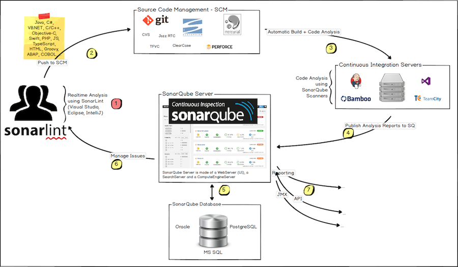
- Os desenvolvedores codificam em seus IDEs e usam o SonarLint para executar análises locais.
- Os desenvolvedores introduzem seu código no seu SCM favorito: git, SVN, TFVC, ...
- O Continuous Integration Server aciona uma compilação automática e a execução do SonarScanner necessária para executar a análise do SonarQube.
- O relatório de análise é enviado ao servidor SonarQube para processamento.
- O SonarQube Server processa e armazena os resultados do relatório de análise no banco de dados SonarQube e exibe os resultados na interface do usuário.
- Os desenvolvedores revisam, comentam, desafiam seus problemas para gerenciar e reduzir sua dívida técnica por meio da interface do usuário do SonarQube.
- Os gerentes recebem relatórios da análise. As operações usam APIs para automatizar a configuração e extrair dados do SonarQube. As operações usam o JMX para monitorar o SonarQube Server.
Sobre máquinas e locais
- A plataforma SonarQube não pode ter mais de um servidor SonarQube (embora o servidor possa ser instalado como um cluster ) e um banco de dados SonarQube.
- Para um desempenho ideal, cada componente (servidor, banco de dados, scanners) deve ser instalado em uma máquina separada e a (s) máquina (s) do servidor devem ser dedicadas.
- Os SonarScanners escalam adicionando máquinas.
- Todas as máquinas devem estar sincronizadas com horário.
- O servidor SonarQube e o banco de dados SonarQube devem estar localizados na mesma rede
- Os SonarScanners não precisam estar na mesma rede que o SonarQube Server.
- Não há comunicação entre o SonarScanners e o banco de dados do SonarQube .
Pré-requisitos e Visão Geral
Pré-requisito
O único pré-requisito para executar o SonarQube é ter o Java (Oracle JRE 11 ou OpenJDK 11) instalado em sua máquina.
Requisitos de hardware
- Uma instância de pequena escala (equipe individual ou pequena) do servidor SonarQube requer pelo menos 2 GB de RAM para executar com eficiência e 1 GB de RAM livre para o sistema operacional. Se você estiver instalando uma instância para equipes grandes ou Enterprise, considere as recomendações adicionais abaixo.
- A quantidade de espaço em disco necessária depende da quantidade de código que você analisa com o SonarQube.
- O SonarQube deve ser instalado em discos rígidos com excelente desempenho de leitura e gravação. Mais importante, a pasta "data" abriga os índices do Elasticsearch nos quais uma enorme quantidade de E / S será feita quando o servidor estiver em funcionamento. Um ótimo desempenho de leitura e gravação no disco rígido terá um grande impacto no desempenho geral do servidor SonarQube.
- O SonarQube não suporta sistemas de 32 bits no lado do servidor. O SonarQube, no entanto, suporta sistemas de 32 bits no lado do scanner.
Recomendações de hardware corporativo
Para equipes grandes ou instalações em escala corporativa do SonarQube, é necessário hardware adicional. No nível corporativo, o monitoramento da instância do SonarQube é essencial e deve orientar outras atualizações de hardware à medida que a instância cresce. Uma configuração inicial deve incluir pelo menos:
- 8 núcleos, para permitir que a plataforma principal do SonarQube funcione com vários funcionários do Compute Engine
- 16 GB de RAM Para obter requisitos e recomendações adicionais relacionados ao banco de dados e ao ElasticSearch, consulte Recomendações de hardware .
Plataformas Suportadas
Java
Os scanners SonarQube requerem a versão 8 ou 11 da JVM e o servidor SonarQube exige a versão 11. Versões além do Java 11 não são oficialmente suportadas.
O analisador Java do SonarQube é capaz de analisar qualquer tipo de arquivo de origem Java, independentemente da versão do Java à qual eles cumprem.
Recomendamos o uso das versões da Atualização crítica de patch (CPU).
| Java | Servidor | Scanners |
|---|---|---|
| Oracle JRE | 11 | 11 |
| 8 | 8 | |
| OpenJDK | 11 | 11 |
| 8 | 8 |
| Base de dados | |
|---|---|
| PostgreSQL | 12 |
| 11 | |
| 10 | |
| 9,3-9,6 | |
 Deve ser configurado
para usar o conjunto de caracteres UTF-8
Deve ser configurado
para usar o conjunto de caracteres UTF-8
|
|
| Microsoft SQL Server | 2017 (MSSQL Server 14.0) com o driver JDBC da Microsoft incluído. Express Edition é suportado. |
| 2016 (MSSQL Server 13.0) com o driver Microsoft JDBC incluído. Express Edition é suportado. | |
| 2014 (MSSQL Server 12.0) com driver Microsoft JDBC incluído. Express Edition é suportado. | |
|
O agrupamento deve
diferenciar maiúsculas de minúsculas (CS) e sotaque (AS)
(exemplo: Latin1
General
CS_AS)
|
|
READ_COMMITTED_SNAPSHOT
deve ser definido no
banco de dados SonarQube para evitar possíveis conflitos sob
carga pesada
|
|
| A autenticação do Windows (“Segurança Integrada”) e a autenticação do SQL Server são suportadas. Consulte a seção Microsoft SQL Server na página Instalando / Instalação / Instalando o Servidor para obter instruções sobre como configurar a autenticação. | |
| Oráculo | 19C |
| 18C | |
| 12C | |
| 11G | |
| Edições XE | |
|
Deve ser configurado
para usar um conjunto de caracteres da família UTF8
(consulte NLS_CHARACTERSET)
|
|
|
O driver ojdbc14.jar não
é suportado
|
|
| Recomendamos o uso do driver Oracle JDBC mais recente | |
|
Apenas o modo thin é
suportado, não OCI
|
Navegador da Web
Para obter a experiência completa que o SonarQube tem a oferecer, você deve habilitar o JavaScript no seu navegador.
| Navegador | |
|---|---|
| Microsoft Internet Explorer | IE 11 |
| Microsoft borda | Mais recentes |
| Mozilla Firefox | Mais recentes |
| Google Chrome | Mais recentes |
| Ópera |
Não testado
|
| Safári | Mais recentes |
Integrações com o ALM
Servidor de Devops do Azure
O SonarScanner para Azure Devops é compatível com o TFS 2017 Update 2 e superior
Servidor Bitbucket
Para adicionar a análise Pull Request ao Code Insights no Bitbucket Server, você deve estar executando o Bitbucket Server versão 5.15+.
GitHub Enterprise e GitHub.com
Para adicionar a análise Pull Request às verificações no GitHub Enterprise, você deve estar executando o GitHub Enterprise versão 2.14+.
O GitHub.com também é suportado.
GitLab Autogerenciado e GitLab.com
Para adicionar a decoração de solicitação de mesclagem às suas solicitações de mesclagem no GitLab Self-Managed, você deve estar executando o Gitlab Self-Manged 11.7+.
GitLab.com também é suportado.
Notas da plataforma
Linux
Se você estiver executando no Linux, verifique se:
vm.max_map_counté maior ou igual a 262144fs.file-maxé maior ou igual a 65536- o usuário executando o SonarQube pode abrir pelo menos 65536 descritores de arquivo
- o usuário executando o SonarQube pode abrir pelo menos 4096 threads
Você pode ver os valores com os seguintes comandos:
sysctl vm.max_map_count sysctl fs.file-max ulimit -n ulimit -u
Você pode configurá-los dinamicamente
para a sessão atual executando os seguintes comandos como
root
:
sysctl -w vm.max_map_count=262144 sysctl -w fs.file-max=65536 ulimit -n 65536 ulimit -u 4096Para definir esses valores mais permanentemente, você deve atualizar o /etc/sysctl.d/99-sonarqube.conf (ou /etc/sysctl.conf como desejar) para refletir esses valores.
Se o usuário executando o SonarQube (
sonarqube
neste exemplo) não tiver permissão
para ter pelo menos 65536 descritores abertos, você deverá inserir esta
linha em
/etc/security/limits.d/99-sonarqube.conf
(ou em
/ etc / security / limits.conf
como desejar):
sonarqube - nofile 65536 sonarqube - nproc 4096Você pode obter mais detalhes na documentação do Elasticsearch .
Se você estiver usando
systemd
para iniciar o SonarQube, você deve
especificar esses limites dentro do seu arquivo de unidade na seção
[serviço]:
[Service] ... LimitNOFILE=65536 LimitNPROC=4096 ...filtro seccomp
Por padrão, o
Elasticsearch
usa
filtro seccomp
.
Na maioria das distribuições, esse
recurso é ativado no kernel, no entanto, em distribuições como o Red Hat
Linux 6, esse recurso é desativado.
Se você estiver usando uma
distribuição sem esse recurso e não puder atualizar para uma versão mais
recente com o seccomp ativado, será necessário desativar explicitamente
essa camada de segurança atualizando
sonar.search.javaAdditionalOpts
em
$ SONARQUBE
HOME / conf / sonar.properties_:
sonar.search.javaAdditionalOpts=-Dbootstrap.system_call_filter=falseVocê pode verificar se o seccomp está disponível no seu kernel com:
$ grep SECCOMP /boot/config-$(uname -r)Se seu kernel possui seccomp, você verá:
CONFIG_HAVE_ARCH_SECCOMP_FILTER=y CONFIG_SECCOMP_FILTER=y CONFIG_SECCOMP=yPara mais detalhes, consulte a documentação do Elasticsearch .
Fontes
A geração de relatórios executivos exige que as fontes sejam instaladas no servidor que hospeda o SonarQube. Nos servidores Windows, isso é um dado. No entanto, esse nem sempre é o caso dos servidores Linux.
Deve-se garantir o seguinte:
- Fontconfig está instalado no servidor que hospeda o SonarQube
-
Um pacote de
fontes
FreeType
está instalado no servidor
SonarQube.
Os pacotes exatos disponíveis
variam de acordo com a distribuição, mas um pacote comumente usado é
libfreetype6
Recomendações de hardware
Base de dados
Recomendamos que, para grandes instâncias, o banco de dados usado pelo SonarQube esteja hospedado em uma máquina fisicamente separada do SonarQube Server, mas próxima a ele na rede.
Oráculo
Caso o seu SonarQube Server esteja sendo executado no Linux e você esteja usando o Oracle, o driver JDBC do Oracle pode estar bloqueado devido a / dev / random. Consulte este artigo da Oracle para obter mais detalhes sobre esse problema.
Para evitá-lo, você pode adicionar
este parâmetro da JVM à sua configuração do SonarQube Web Server (
sonar.web.javaOpts
):
-Djava.security.egd=file:///dev/urandomPesquisa elástica (ES)
- O Elasticsearch é usado pelo SonarQube em segundo plano no processo do SearchServer. Para garantir o bom desempenho do seu SonarQube, você precisa seguir estas recomendações relacionadas ao uso do ES.
Disco
- Espaço livre em disco é um requisito absoluto. O ES implementa um mecanismo de segurança para impedir que o disco seja inundado com dados de índice que bloqueiam todos os índices no modo somente leitura quando uma marca d'água de 95% de uso do disco é atingida. Para obter informações sobre a recuperação de índices somente leitura do ES, consulte a página Solução de problemas .
- O disco pode facilmente se tornar o gargalo do ES. Se você puder comprar SSDs, eles são de longe superiores a qualquer mídia giratória. Nós suportados por SSD veem melhorias no desempenho da consulta e da indexação. Se você usar mídia giratória, tente obter os discos mais rápidos possíveis (discos de servidor de alto desempenho e unidades de 15k RPM).
- O uso do RAID 0 é uma maneira eficaz de aumentar a velocidade do disco, tanto para discos rotativos quanto para SSD. Não é necessário usar variantes de espelhamento ou paridade do RAID, devido às réplicas do Elasticsearch e ao armazenamento primário do banco de dados.
- Não use armazenamento montado remotamente, como NFS, SMB / CIFS ou armazenamento conectado à rede (NAS). Eles geralmente são mais lentos, exibem latências maiores com um desvio maior na latência média e são um único ponto de falha.
Avançado
- Se você estiver usando SSD, verifique se o Agendador de E / S do sistema operacional está configurado corretamente. Quando você grava dados no disco, o Agendador de E / S decide quando esses dados são realmente enviados ao disco. O padrão na maioria das distribuições * nix é um agendador chamado cfq (Completely Fair Queuing). Esse agendador aloca "intervalos de tempo" para cada processo e otimiza a entrega dessas várias filas no disco. Ele é otimizado para mídia rotativa: a natureza dos pratos rotativos significa que é mais eficiente gravar dados no disco com base no layout físico. Isso é muito ineficiente para SSD, no entanto, uma vez que não há pratos giratórios envolvidos. Em vez disso, prazo ou noop devem ser usados. O planejador de prazos otimiza com base em quanto tempo as gravações estão pendentes, enquanto noop é apenas uma fila FIFO simples. Essa simples mudança pode ter impactos dramáticos.
-
Se o diretório inicial do SQ
estiver localizado em um disco lento, a propriedade
sonar.path.datapoderá ser usada para mover dados para um disco mais rápido (SSD local RAID 0 local, por exemplo).
Memória
- A memória disponível da máquina para o sistema operacional deve ter pelo menos o tamanho de heap do Elasticsearch. O motivo é que o Lucene (usado pelo ES) foi projetado para aproveitar o SO subjacente para armazenar em cache estruturas de dados na memória. Isso significa que, por padrão, o sistema operacional deve ter pelo menos 1 GB de memória disponível.
- Não aloque mais de 32 GB. Consulte este artigo do ElasticSearch para obter mais detalhes.
CPU
- Se você precisar escolher entre CPUs mais rápidas ou mais núcleos, escolha mais núcleos. A concorrência extra oferecida por vários núcleos superará em muito a velocidade do relógio um pouco mais rápida.
- Por natureza, os dados são distribuídos em múltiplos nós, portanto, o tempo de execução depende do nó mais lento. É melhor ter várias caixas médias do que uma rápida + uma lenta.
Visão geral
Comece em dois minutos
Para experimentar a plataforma SonarQube rapidamente, siga o Guia de introdução em dois minutos .
Instale uma instância de produção
Para instalar uma instância de produção, leia os Requisitos e siga o Guia de Instalação .
Após a instalação
Depois que o servidor estiver em funcionamento, você precisará instalar um ou mais SonarScanners nas máquinas onde a análise será realizada.
Atualize sua instância de produção
Para atualizar sua instância de produção, leia o Guia de atualização e as notas relevantes sobre a atualização específicas da versão.
Guia de introdução em dois minutos
Este guia mostra como instalar uma instância de demonstração. Quando você estiver pronto para ir para a produção, reserve um tempo para ler a documentação Instalar o servidor .
Instalando a partir de um Arquivo Zip
- Faça o download do SonarQube Community Edition.
-
Como
não
rootusuário , descompacte-o, digamos em C: \ sonarqube ou / opt / sonarqube . -
Como não
rootusuário , inicie o SonarQube Server:# On Windows, execute: C:\sonarqube\bin\windows-x86-xx\StartSonar.bat # On other operating systems, as a non-root user execute: /opt/sonarqube/bin/[OS]/sonar.sh consoleSe sua instância falhar ao iniciar, verifique seus logs para encontrar a causa.
- Efetue login no http: // localhost: 9000 com credenciais de Administrador do Sistema (login = admin, senha = admin).
- Clique no botão Criar novo projeto para analisar seu primeiro projeto.
Usando o Docker
Imagens das edições Community, Developer e Enterprise estão disponíveis no Docker Hub .
- Inicie o servidor executando:
$ docker run -d --name sonarqube -p 9000:9000 <image_name>- Efetue login no http: // localhost: 9000 com credenciais de Administrador do Sistema (login = admin, senha = admin).
- Clique no botão Criar novo projeto para analisar seu primeiro projeto.
Instale o servidor
Instalando o banco de dados
Vários mecanismos de banco de dados são suportados. Certifique-se de seguir os requisitos listados para o seu banco de dados, eles são requisitos reais, não recomendações.
Crie um esquema vazio e um
sonarqube
usuário.
Conceder este
sonarqube
usuário permissões para
create
,
update
e
delete
objetos para este esquema.
Microsoft SQL Server
O agrupamento
DEVE
ser sensível a
maiúsculas e minúsculas (CS) e a sotaque (AS).
READ_COMMITED_SNAPSHOT
DEVE
estar definido no
banco de dados do SonarQube.
A estratégia de bloqueio
compartilhado do banco de dados MS SQL pode afetar o tempo de
execução do SonarQube.
Certifique-se de que
is_read_committed_snapshot_on
está definido para
true
evitar que o SonarQube
enfrente possíveis conflitos sob cargas pesadas.
Exemplo de consulta para
verificar
is_read_committed_snapshot_on
:
SELECT is_read_committed_snapshot_on FROM sys.databases WHERE name='YourSonarQubeDatabase';
Exemplo de consulta a ser
atualizada
is_read_committed_snapshot_on
:
ALTER DATABASE YourSonarQubeDatabase SET READ_COMMITTED_SNAPSHOT ON WITH ROLLBACK IMMEDIATE;Segurança Integrada
Para usar a segurança integrada:
-
Faça o download do
pacote Microsoft SQL
JDBC Driver 7.2.2
e copie a versão de 64
bits
sqljdbc_auth.dllpara qualquer pasta no seu caminho. -
Se você estiver executando o SonarQube como um serviço do Windows, verifique se a conta do Windows sob a qual o serviço está sendo executado tem permissão para conectar seu servidor SQL. A conta deve ter
db_ownerassociação à função de banco de dados.Se você estiver executando o servidor SonarQube a partir de um prompt de comandos, o usuário sob o qual o prompt de comandos está sendo executado deverá ter
db_ownerassociação à função de banco de dados. -
Certifique-se que
sonar.jdbc.usernameousonar.jdbc.passwordpropriedades são comentados ou SonarQube irá utilizar a autenticação SQL.
sonar.jdbc.url=jdbc:sqlserver://localhost;databaseName=sonar;integratedSecurity=trueAutenticação SQL
Para usar a autenticação SQL,
use a seguinte cadeia de conexão.
Certifique-se também de que
sonar.jdbc.username
e
sonar.jdbc.password
esteja definido
adequadamente:
sonar.jdbc.url=jdbc:sqlserver://localhost;databaseName=sonar sonar.jdbc.username=sonarqube sonar.jdbc.password=mypasswordOráculo
Se houver dois esquemas do SonarQube na mesma instância do Oracle, especialmente se forem para duas versões diferentes, o SonarQube ficará confuso e escolherá o primeiro que encontrar. Para evitar esse problema:
- Os privilégios associados ao usuário Oracle do SonarQube devem ser diminuídos
- Ou um gatilho deve ser definido no lado do Oracle para alterar automaticamente a sessão do usuário do SonarQube Oracle ao estabelecer uma nova conexão:
As versões 12.1.0.1 e 12.1.0.2 do driver Oracle JDBC têm bugs importantes e não são recomendadas para uso com o SonarQube ( veja mais detalhes ).
PostgreSQL
Se você deseja usar um
esquema personalizado e não o padrão "público" padrão, a
search_path
propriedade
PostgreSQL
deve ser configurada:
ALTER USER mySonarUser SET search_path to mySonarQubeSchemaInstalando o servidor a partir do arquivo ZIP
Primeiro, verifique os requisitos . Em seguida, baixe e descompacte a distribuição (não descompacte em um diretório que comece com um dígito).
O SonarQube não pode ser executado
como
root
nos sistemas baseados em Unix;
portanto, crie uma conta de usuário dedicada para usar no SonarQube, se
necessário.
$ SONARQUBE-HOME (abaixo) refere-se ao caminho para o diretório em que a distribuição do SonarQube foi descompactada.
Definindo o acesso ao banco de dados
Edite $ SONARQUBE-HOME / conf / sonar.properties para definir as configurações do banco de dados. Modelos estão disponíveis para todos os bancos de dados suportados. Apenas remova o comentário e configure o modelo necessário e comente as linhas dedicadas ao H2:
Example for PostgreSQL sonar.jdbc.username=sonarqube sonar.jdbc.password=mypassword sonar.jdbc.url=jdbc:postgresql://localhost/sonarqubeIncluindo o Driver JDBC
Drivers para os bancos de dados suportados (exceto Oracle) já são fornecidos. Não substitua os drivers fornecidos; eles são os únicos suportados.
Para Oracle, copie o driver JDBC para $ SONARQUBE-HOME / extensions / jdbc-driver / oracle .
Configurando o caminho de armazenamento do Elasticsearch
Por padrão, os dados do Elasticsearch são armazenados em $ SONARQUBE-HOME / data , mas isso não é recomendado para instâncias de produção. Em vez disso, você deve armazenar esses dados em outro local, idealmente em um volume dedicado com E / S rápidas. Além de manter um desempenho aceitável, isso também facilitará a atualização do SonarQube.
Edite $ SONARQUBE-HOME / conf / sonar.properties para definir as seguintes configurações:
sonar.path.data=/var/sonarqube/data sonar.path.temp=/var/sonarqube/tempO usuário usado para iniciar o SonarQube deve ter acesso de leitura e gravação a esses diretórios.
Iniciando o servidor Web
A porta padrão é "9000" e o caminho do contexto é "/". Esses valores podem ser alterados em $ SONARQUBE-HOME / conf / sonar.properties :
sonar.web.host=192.0.0.1 sonar.web.port=80 sonar.web.context=/sonarqubeExecute o seguinte script para iniciar o servidor:
-
No Linux / Mac OS: bin /
/sonar.sh start - No Windows: bin / windows-x86-64 / StartSonar.bat
Agora você pode navegar pelo
SonarQube em
http: // localhost: 9000
(as credenciais padrão de
administrador do sistema são
admin
/
admin
).
Ajustando a instalação do Java
Se houver várias versões do Java instaladas no servidor, talvez seja necessário definir explicitamente qual versão do Java é usada.
Para alterar a JVM Java usada pelo SonarQube, edite $ SONARQUBE-HOME / conf / wrapper.conf e atualize a seguinte linha:
wrapper.java.command=/path/to/my/jdk/bin/javaRecursos avançados de instalação
- Executando o SonarQube como um serviço no Windows ou Linux
- Executando o SonarQube atrás de um proxy
- Monitorando e ajustando a memória de processo Java
Instalando o servidor a partir da imagem do Docker
Veja sua versão do SonarQube abaixo para obter instruções sobre a instalação do servidor a partir de uma imagem do Docker.
SonarQube 8.2+
Siga estas etapas para sua primeira instalação:
-
A criação dos seguintes volumes ajuda a evitar a perda de informações ao atualizar para uma nova versão ou atualizar para uma edição superior:
sonarqube_data- contém arquivos de dados, como o banco de dados H2 incorporado e os índices Elasticsearchsonarqube_logs- contém logs do SonarQube sobre acesso, processo da web, processo CE e Elasticsearchsonarqube_extensions- contém plugins, como analisadores de idiomas
Crie os volumes com os seguintes comandos:
$> docker volume create --name sonarqube_data $> docker volume create --name sonarqube_extensions $> docker volume create --name sonarqube_logsVerifique se você está usando volumes, como mostrado nos comandos acima, e não ligue montagens . O uso de montagens de ligação impede que plugins e idiomas sejam preenchidos corretamente.
-
Drivers para bancos de dados suportados (exceto Oracle) já são fornecidos. Se você estiver usando um banco de dados Oracle, precisará adicionar o driver JDBC ao
sonar_extensionsvolume. Para fazer isso:uma. Inicie o contêiner SonarQube com o banco de dados H2 incorporado:
$ docker run --rm \ -p 9000:9000 \ -v sonarqube_extensions:/opt/sonarqube/extensions \ <image_name>b. Saia assim que o SonarQube tiver iniciado corretamente.
c. Copie o driver Oracle para
sonarqube_extensions/jdbc-driver/oracle. -
Execute a imagem com as propriedades do banco de dados definidas usando o sinalizador de variável de ambiente -e:
$> docker run -d --name sonarqube \ -p 9000:9000 \ -e SONAR_JDBC_URL=... \ -e SONAR_JDBC_USERNAME=... \ -e SONAR_JDBC_PASSWORD=... \ -v sonarqube_data:/opt/sonarqube/data \ -v sonarqube_extensions:/opt/sonarqube/extensions \ -v sonarqube_logs:/opt/sonarqube/logs \ <image_name>Para obter mais variáveis de ambiente de configuração, consulte Variáveis de ambiente do Docker .
Use as variáveis de ambiente
SONARQUBE_JDBC_USERNAME,SONARQUBE_JDBC_PASSWORDeSONARQUBE_JDBC_URLé obsoleto e irá parar de funcionar em versões futuras.
SonarQube 7.9.x LTS
Siga estas etapas para sua primeira instalação:
-
Criar volumes
sonarqube_conf,sonarqube_data,sonarqube_logs, esonarqube_extensionse começar a imagem com o seguinte comando. Isso preencherá todos os volumes (copiar plug-ins padrão, criar a pasta de dados Elasticsearch, criar o arquivo de configuração sonar.properties). Observe os logs e, depois que o contêiner for iniciado corretamente, você pode forçar a saída (ctrl + c) e prosseguir para a próxima etapa.$ docker run --rm \ -p 9000:9000 \ -v sonarqube_conf:/opt/sonarqube/conf \ -v sonarqube_extensions:/opt/sonarqube/extensions \ -v sonarqube_logs:/opt/sonarqube/logs \ -v sonarqube_data:/opt/sonarqube/data \ <image_name> -
Configure sonar.properties, se necessário. Por favor, note que, devido à SONAR-12501 , proporcionando
sonar.jdbc.url,sonar.jdbc.username,sonar.jdbc.passwordesonar.web.javaAdditionalOptsnosonar.propertiesnão está funcionando, e você precisará definir explicitamente valores teses no comando janela de encaixe prazo com a-ebandeira.#Example for PostgreSQL -e sonar.jdbc.url=jdbc:postgresql://localhost/sonarqube
Drivers para bancos de dados
suportados (exceto Oracle) já são fornecidos.
Não substitua os drivers
fornecidos;
eles são os únicos
suportados.
Para Oracle, você precisa
copiar o driver JDBC para
$SONARQUBE_HOME/extensions/jdbc-driver/oracle
.
-
Execute a imagem com seu nome de usuário e senha JDBC:
$ docker run -d --name sonarqube \ -p 9000:9000 \ -e sonar.jdbc.url=... \ -e sonar.jdbc.username=... \ -e sonar.jdbc.password=... \ -v sonarqube_conf:/opt/sonarqube/conf \ -v sonarqube_extensions:/opt/sonarqube/extensions \ -v sonarqube_logs:/opt/sonarqube/logs \ -v sonarqube_data:/opt/sonarqube/data \ <image_name>
Próximos passos
Depois que o servidor estiver instalado e em execução, você também poderá instalar os plug-ins . Então você está pronto para começar a analisar o código-fonte .
Solução de problemas / FAQ
Falha ao conectar-se ao Marketplace via proxy
Verifique se as configurações do
proxy estão definidas corretamente
$SONARQUBE_HOME/conf/sonar.properties
.
Observe que, se o nome de usuário do
seu proxy contiver uma barra invertida, ele deverá ser escapado - por
exemplo, o nome de usuário "domínio \ usuário" no arquivo deve se
parecer com:
http.proxyUser=domain\\userPara alguns proxies, a exceção "java.net.ProtocolException: servidor redirecionado muitas vezes" pode significar que um nome de usuário ou senha incorretos foram configurados.
Exceção java.lang.RuntimeException: não é possível executar o elasticsearch como root
O SonarQube inicia um processo do
Elasticsearch, e a mesma conta que está executando o próprio SonarQube
será usada para o processo do Elasticsearch.
Como o Elasticsearch não pode ser
executado como
root
, isso significa que o SonarQube
também não pode ser.
Você deve escolher alguma outra
root
conta que
não seja a
conta para executar o SonarQube,
preferencialmente uma conta dedicada ao objetivo.
Operando o servidor
Executando o SonarQube como um serviço no Windows
Instale ou desinstale o Serviço NT (pode ser necessário executar esses arquivos via Administrador Executar como):
%SONARQUBE_HOME%/bin/windows-x86-64/InstallNTService.bat %SONARQUBE_HOME%/bin/windows-x86-64/UninstallNTService.batIniciar ou parar o serviço:
%SONARQUBE_HOME%/bin/windows-x86-64/StartNTService.bat %SONARQUBE_HOME%/bin/windows-x86-64/StopNTService.bat
Nota:
%SONARQUBE_HOME%/bin/windows-x86-64/StopNTService.bat
faz um desligamento normal em que
nenhum novo processamento de relatório de análise pode ser iniciado, mas
as tarefas em andamento podem terminar.
O tempo que uma parada levará depende
do tempo de processamento das tarefas em andamento.
Você precisará matar todos os
processos do SonarQube manualmente para forçar uma parada.
Executando o SonarQube manualmente no Linux
Iniciar ou parar a instância
Start: $SONAR_HOME/bin/linux-x86-64/sonar.sh start Graceful shutdown: $SONAR_HOME/bin/linux-x86-64/sonar.sh stop Hard stop: $SONAR_HOME/bin/linux-x86-64/sonar.sh force-stopNota: Stop faz um desligamento normal em que nenhum novo processamento de relatório de análise pode ser iniciado, mas as tarefas em andamento têm permissão para concluir. O tempo que uma parada levará depende do tempo de processamento das tarefas em andamento. Use força parada para uma parada difícil.
Executando o SonarQube como um serviço no Linux com SystemD
Em um sistema Unix usando o SystemD,
você pode instalar o SonarQube como um serviço.
Você não pode executar o SonarQube
como
root
nos sistemas 'nix.
Idealmente, você criará uma nova
conta dedicada ao objetivo de executar o SonarQube.
Vamos supor:
-
O usuário usado para iniciar o
serviço é
sonarqube -
O grupo usado para iniciar o
serviço é
sonarqube -
A Java Virtual Machine está
instalada em
/opt/java/ -
O SonarQube foi descompactado no
/opt/sonarqube/
Em seguida, crie o arquivo com
/etc/systemd/system/sonarqube.service
base nos
seguintes
[Unit] Description=SonarQube service After=syslog.target network.target [Service] Type=simple User=sonarqube Group=sonarqube PermissionsStartOnly=true ExecStart=/bin/nohup /opt/java/bin/java -Xms32m -Xmx32m -Djava.net.preferIPv4Stack=true -jar /opt/sonarqube/lib/sonar-application-7.4.jar StandardOutput=syslog LimitNOFILE=65536 LimitNPROC=8192 TimeoutStartSec=5 Restart=always SuccessExitStatus=143 [Install] WantedBy=multi-user.targetNota
-
Como o nome do jar do aplicativo
de sonar termina com a versão do SonarQube, você precisará ajustar o
ExecStartcomando adequadamente na instalação e a cada atualização. -
O diretório de dados do SonarQube
/opt/sonarqube/datae o diretório de extensões/opt/sonarqube/extensionsdevem pertencer aosonarqubeusuário. Como boa prática, o restante deve pertencer aroot
Depois que seu
sonarqube.service
arquivo for criado e configurado
corretamente, execute:
sudo systemctl enable sonarqube.service sudo systemctl start sonarqube.serviceExecutando o SonarQube como um serviço no Linux com initd
O seguinte foi testado no Ubuntu 8.10 e CentOS 6.2.
Crie o arquivo /etc/init.d/sonar com este conteúdo:
#!/bin/sh # # rc file for SonarQube # # chkconfig: 345 96 10 # description: SonarQube system (www.sonarsource.org) # ### BEGIN INIT INFO # Provides: sonar # Required-Start: $network # Required-Stop: $network # Default-Start: 3 4 5 # Default-Stop: 0 1 2 6 # Short-Description: SonarQube system (www.sonarsource.org) # Description: SonarQube system (www.sonarsource.org) ### END INIT INFO /usr/bin/sonar $*Registre o SonarQube no momento da inicialização (RedHat, CentOS, 64 bits):
sudo ln -s $SONAR_HOME/bin/linux-x86-64/sonar.sh /usr/bin/sonar sudo chmod 755 /etc/init.d/sonar sudo chkconfig --add sonarApós o registro, execute:
sudo service sonar startProtegendo o servidor atrás de um proxy
Esta seção ajuda a configurar o servidor SonarQube se você deseja executá-lo atrás de um proxy. Isso pode ser feito por questões de segurança ou para consolidar vários aplicativos diferentes.
Configuração do servidor
Para executar o servidor SonarQube em HTTPS, você deve criar uma infraestrutura padrão de proxy reverso.
O proxy reverso deve ser configurado
para definir o valor
X_FORWARDED_PROTO: https
em cada cabeçalho de solicitação
HTTP.
Sem essa propriedade, o
redirecionamento iniciado pelo servidor SonarQube retornará ao HTTP.
Usando um proxy Apache
Assumimos que você já instalou o
Apache 2 com módulo mod
proxy, que o SonarQube está em
execução e disponível no `
http: //
host do
sonar
privado
:
porta do
sonar
/
and that you want to configure a Virtual Host for
www.public_sonar.com`.
Neste ponto, edite o arquivo de
configuração HTTPd para o
www.public_sonar.com
host virtual.
Incluem o seguinte para expor
SonarQube via
mod_proxy
em
http://www.public_sonar.com/
:
ProxyRequests Off ProxyPreserveHost On <VirtualHost *:80>ServerName www.public_sonar.com ServerAdmin admin@somecompany.com ProxyPass / http://private_sonar_host:sonar_port/ ProxyPassReverse / http://www.public_sonar.com/ ErrorLog logs/somecompany/sonar/error.log CustomLog logs/somecompany/sonar/access.log common </VirtualHost>A configuração do Apache varia de acordo com os requisitos de seu próprio aplicativo e a maneira como você pretende expor o SonarQube para o mundo exterior. Se você precisar de mais detalhes sobre o Apache HTTPd e mod_proxy, consulte http://httpd.apache.org .
Usando o Nginx
Assumimos que você já instalou o
Nginx, que está usando um host virtual para www.somecompany.com e que o
SonarQube está em execução e disponível no
http://sonarhost:sonarport/
.
Neste ponto, edite o arquivo de configuração do Nginx. Inclua o seguinte para expor o SonarQube em http://www.somecompany.com/ :
# the server directive is nginx's virtual host directive server { # port to listen on. Can also be set to an IP:PORT listen 80; # sets the domain[s] that this vhost server requests for server_name www.somecompany.com; location / { proxy_pass http://sonarhost:sonarport; } }A configuração do Nginx variará com base nos requisitos de seu próprio aplicativo e na maneira como você pretende expor o SonarQube para o mundo exterior. Se você precisar de mais detalhes sobre o Nginx, consulte https://www.nginx.com/resources/admin-guide/reverse-proxy/ .
Observe que pode ser necessário aumentar o tamanho máximo da URL, pois as solicitações do SonarQube podem ter URLs maiores que 2048.
Usando o IIS
Consulte: http://blog.jessehouwing.nl/2016/02/configure-ssl-for-sonarqube-on-windows.html
Observe que a instalação descrita nesta postagem do blog não é adequada para SAML por meio do IIS.
variáveis ambientais
Esta página fornece variáveis de ambiente usadas para configurar o SonarQube com Docker. Os valores fornecidos nas seguintes variáveis de ambiente são os valores padrão.
Base de dados
- O banco de dados H2 incorporado é usado por padrão. É recomendado para testes, mas não para uso em produção. Os bancos de dados suportados são Oracle, PostgreSQL e Microsoft SQLServer.
- Alterações na URL de conexão do banco de dados (sonar.jdbc.url) podem afetar os produtos licenciados do SonarSource.
As credenciais do usuário
SONAR_JDBC_USERNAME=SONAR_JDBC_PASSWORD=
Permissões para criar tabelas,
índices e acionadores devem ser concedidas ao usuário JDBC.
O esquema deve ser criado primeiro.
Banco de dados incorporado (padrão)
SONAR_EMBEDDEDDATABASE_PORT=9092
Porta de atendimento do servidor de
banco de dados incorporado H2, o padrão é 9092.
Oracle 11g / 12c / 18c / 19c
SONAR_JDBC_URL=jdbc:oracle:thin:@localhost:1521/XE
O driver Oracle JDBC deve ser copiado
nas extensões de diretório / jdbc-driver / oracle /.
Somente o thin client é suportado e
recomendamos o uso do driver Oracle JDBC mais recente.
Consulte
https://jira.sonarsource.com/browse/SONAR-9758
para obter mais detalhes.
Se você precisar definir o esquema,
consulte
http://jira.sonarsource.com/browse/SONAR-5000
.
PostgreSQL 9.3 ou superior
SONAR_JDBC_URL=jdbc:postgresql://localhost/sonarqube?currentSchema=my_schema
Por padrão, o esquema chamado
"public" é usado.
Pode ser substituído pelo parâmetro
"currentSchema".
Microsoft SQLServer 2014/2016/2017 e SQL Azure
SONAR_JDBC_URL=jdbc:sqlserver://localhost;databaseName=sonar;integratedSecurity=true
Um banco de dados denominado sonar
deve existir e seu agrupamento deve fazer distinção entre maiúsculas e
minúsculas (CS) e com sotaque (AS).
Use esta cadeia de conexão se desejar
usar a segurança integrada com o Microsoft Sql Server.
Não configure a
propriedade
SONAR_JDBC_USERNAME
ou
SONAR_JDBC_PASSWORD
se estiver usando o Integrated
Security.
Para que a Segurança Integrada funcione, você deve baixar o pacote de driver JDBC do Microsoft SQL aqui e copiar o sqljdbc_auth.dll no seu caminho. Você precisa copiar a versão de 64 bits da dll.
SONAR_JDBC_URL=jdbc:sqlserver://localhost;databaseName=sonar
Use esta cadeia de conexão se desejar
usar o SQL Auth ao conectar-se ao MS Sql Server.
Defina
SONAR_JDBC_USERNAME
e
SONAR_JDBC_PASSWORD
adequadamente.
Configurações do pool de conexão
SONAR_JDBC_MAXACTIVE=60
O número máximo de conexões ativas
que podem ser alocadas ao mesmo tempo ou negativas sem limite.
O valor recomendado é de 1,2 *
tamanho máximo de conjuntos HTTP.
Por exemplo, se as portas HTTP
estiverem ativadas com tamanhos padrão (50, consulte propriedade
sonar.web.http.maxThreads
),
SONAR_JDBC_MAXACTIVE
deverá ser 1,2 * 50 = 60.
SONAR_JDBC_MAXIDLE=5
O número máximo de conexões que podem
permanecer inativas no pool, sem que outras sejam liberadas ou negativas
sem limite.
SONAR_JDBC_MINIDLE=2
O número mínimo de conexões que podem
permanecer inativas no pool, sem que outras sejam criadas ou zero para
criar nenhuma.
SONAR_JDBC_MAXWAIT=5000
O número máximo de milissegundos que
o pool aguardará (quando não houver conexões disponíveis) para que uma
conexão seja retornada antes de gerar uma exceção ou <= 0 para
aguardar indefinidamente.
SONAR_JDBC_MINEVICTABLEIDLETIMEMILLIS=600000SONAR_JDBC_TIMEBETWEENEVICTIONRUNSMILLIS=30000
Servidor web
SONAR_WEB_JAVAOPTS=@webJavaOpts@
o servidor da web é executado em um
processo Java dedicado.
Por padrão, o tamanho da pilha é @
webDefaultHeapSize @.
Use esta propriedade para customizar
opções da JVM.
A VM do servidor HotSpot é recomendada. A propriedade -server deve ser incluída se o modo do servidor não estiver ativado por padrão em seu ambiente. Veja aqui .
A inicialização pode ser longa se a fonte de entropia estiver com pouca entropia. Adicionar -Djava.security.egd = file: / dev /./ urandom é uma opção para resolver o problema. Vejo
SONAR_WEB_JAVAADDITIONALOPTS=
Igual à propriedade anterior, mas
permite não repetir todas as outras configurações, como -Xmx
SONAR_WEB_HOST=0.0.0.0
Endereço IP de ligação.
Para servidores com mais de um
endereço IP, essa propriedade especifica qual endereço será usado para
escutar nas portas especificadas.
Por padrão, as portas serão usadas em
todos os endereços IP associados ao servidor.
SONAR_WEB_CONTEXT=
Contexto da Web.
Quando definido, ele deve começar com
uma barra (por exemplo / sonarqube).
O valor padrão é o contexto raiz
(valor vazio).
SONAR_WEB_PORT=9000
Porta TCP para conexões HTTP de
entrada.
O valor padrão é 9000.
SONAR_WEB_HTTP_MAXTHREADS=50
O número máximo de conexões que o
servidor aceitará e processará a qualquer momento.
Quando esse número for atingido, o
servidor não aceitará mais nenhuma conexão até que o número de conexões
fique abaixo desse valor.
O sistema operacional ainda pode
aceitar conexões com base na
SONAR_WEB_CONNECTIONS_ACCEPTCOUNT
propriedade.
O valor padrão é 50.
SONAR_WEB_HTTP_MINTHREADS=5
O número mínimo de threads sempre
continuou em execução.
O valor padrão é 5.
SONAR_WEB_HTTP_ACCEPTCOUNT=25
O comprimento máximo da fila para
solicitações de conexão recebidas quando todos os encadeamentos
possíveis de processamento de solicitações estão em uso.
Quaisquer solicitações recebidas
quando a fila estiver cheia serão recusadas.
O valor padrão é 25.
SONAR_AUTH_JWTBASE64HS256SECRET=
Por padrão, os usuários são
desconectados e as sessões fechadas quando o servidor é reiniciado.
Se você preferir manter as sessões do
usuário abertas, um segredo deve ser definido.
O valor é a chave HS256 codificada
com base64.
Ele deve ser exclusivo para cada
instalação do SonarQube.
Exemplo de linha de comando:
echo -n "type
what
you_want" |
openssl dgst -sha256 -hmac "chave"
-binário |
base64
SONAR_WEB_SESSIONTIMEOUTINMINUTES=4320
A duração do tempo limite de
inatividade das sessões do usuário, em minutos.
Após o período configurado, o usuário
é desconectado.
O valor padrão é definido como 3 dias
(4320 minutos) e não pode ser maior que 3 meses.
O valor deve ser estritamente
positivo.
SONAR_WEB_SYSTEMPASSCODE=
Uma senha pode ser definida para
acessar alguns serviços da Web a partir de ferramentas de monitoramento
sem a necessidade de usar as credenciais de um administrador do sistema.
Verifique a documentação da API da
Web para saber quais serviços da Web estão suportando este modo de
autenticação.
A senha deve ser fornecida nas
solicitações HTTP com o cabeçalho "X-Sonar-Passcode".
Por padrão, o recurso está
desativado.
Autenticação SSO
SONAR_WEB_SSO_ENABLE=false
Habilitar autenticação usando
cabeçalhos HTTP
SONAR_WEB_SSO_LOGINHEADER=X-Forwarded-Login
Nome do cabeçalho para obter o login
do usuário.
Apenas alfanumérico, '.'
e caracteres '@' são permitidos
SONAR_WEB_SSO_NAMEHEADER=X-Forwarded-Name
Nome do cabeçalho para obter o nome
de usuário
SONAR_WEB_SSO_EMAILHEADER=X-Forwarded-Email
Nome do cabeçalho para obter o email
do usuário (opcional)
SONAR_WEB_SSO_GROUPSHEADER=X-Forwarded-Groups
Nome do cabeçalho para obter a lista
de grupos de usuários, separados por vírgula (opcional).
Se o SONAR
SSO
GROUPSHEADER estiver definido, o
usuário pertencerá a esses grupos se existirem grupos no SonarQube.
Se nenhum dos grupos fornecidos
existir no SonarQube, o usuário pertencerá apenas ao grupo padrão.
Observe que o grupo padrão sempre
será definido.
SONAR_WEB_SSO_REFRESHINTERVALINMINUTES=5
O intervalo costumava saber quando
atualizar nome, email e grupos.
Durante esse intervalo, se, por
exemplo, o nome do usuário for alterado no cabeçalho, ele será
atualizado somente após X minutos.
Configuração LDAP
SONAR_SECURITY_REALM=LDAP
Ativar o recurso LDAP
SONAR_AUTHENTICATOR_DOWNCASE=true
Defina como true ao conectar-se a um
servidor LDAP usando uma configuração que não diferencia maiúsculas de
minúsculas.
LDAP_URL=ldap://localhost:10389
URL do servidor LDAP.
Observe que, se você estiver usando
ldaps, deverá instalar o certificado do servidor no armazenamento
confiável Java.
LDAP_BINDDN=cn=sonar,ou=users,o=mycompany
DN de ligação é o nome de usuário de
um usuário LDAP ao qual se conectar (ou se conectar).
Deixe em branco para acesso anônimo
ao diretório LDAP (opcional)
LDAP_BINDPASSWORD=secret
Senha de ligação é a senha do usuário
com o qual se conectar.
Deixe em branco para acesso anônimo
ao diretório LDAP (opcional)
LDAP_AUTHENTICATION=simple
Valores possíveis: simples |
CRAM-MD5
DIGEST-MD5 |
GSSAPI Consulte
http://java.sun.com/products/jndi/tutorial/ldap/security/auth.html
(padrão: simples)
LDAP_REALM=example.org
Vejo :
- http://java.sun.com/products/jndi/tutorial/ldap/security/digest.html
- http://java.sun.com/products/jndi/tutorial/ldap/security/crammd5.html (opcional)
LDAP_CONTEXTFACTORYCLASS=com.sun.jndi.ldap.LdapCtxFactory
Classe de fábrica de contexto
(opcional)
LDAP_STARTTLS=true
Habilitar o uso do StartTLS (padrão:
false)
LDAP_FOLLOWREFERRALS=false
Siga ou não referências.
Consulte
http://docs.oracle.com/javase/jndi/tutorial/ldap/referral/jndi.html
(padrão: true)
Mapeamento de Usuário
LDAP_USER_BASEDN=cn=users,dc=example,dc=org
Nome Distinto (DN) do nó raiz no LDAP
a partir do qual procurar usuários (obrigatório)
LDAP_USER_REQUEST=(&(objectClass=user)(sAMAccountName={login}))
Solicitação de usuário LDAP.
(padrão: (& (objectClass =
inetOrgPerson) (uid = {login})))
LDAP_USER_REALNAMEATTRIBUTE=name
Atributo no LDAP que define o nome
real do usuário.
(padrão: cn)
LDAP_USER_EMAILATTRIBUTE=email
Atributo no LDAP que define o email
do usuário.
(padrão: mail)
Mapeamento de grupo
LDAP_GROUP_BASEDN=cn=groups,dc=example,dc=org
Nome Distinto (DN) do nó raiz no LDAP
a partir do qual procurar grupos.
(opcional, padrão: vazio)
LDAP_GROUP_REQUEST=(&(objectClass=group)(member={dn}))
Solicitação de grupo LDAP (padrão:
(& (objectClass = groupOfUniqueNames) (uniqueMember = {dn})))
LDAP_GROUP_IDATTRIBUTE=sAMAccountName
Propriedade usada para especificar o
atributo a ser usado para retornar a lista de grupos de usuários no modo
de compatibilidade.
(padrão: cn)
Mecanismo de computação
SONAR_CE_JAVAOPTS=@ceJavaOpts@
O Compute Engine é responsável pelo
processamento de tarefas em segundo plano.
O Compute Engine é executado em um
processo Java dedicado.
O tamanho padrão do heap é @
ceDefaultHeapSize @.
Use a propriedade a seguir para
customizar as opções da JVM.
A VM do servidor HotSpot é recomendada. A propriedade -server deve ser adicionada se o modo do servidor não estiver ativado por padrão em seu ambiente: http://docs.oracle.com/javase/8/docs/technotes/guides/vm/server-class.html
SONAR_CE_JAVAADDITIONALOPTS=
Igual à propriedade anterior, mas
permite não repetir todas as outras configurações, como -Xmx
Elasticsearch
O Elasticsearch é usado para facilitar a recuperação rápida e precisa de informações. É executado em um processo Java dedicado. O tamanho padrão do heap é @ searchDefaultHeapSize @.
Usuários de Linux em sistemas de 64 bits, verifique se a Memória Virtual em seu sistema está configurada corretamente para que o Elasticsearch seja executado corretamente (veja aqui para detalhes).
Quando o SonarQube é executado de forma autônoma, um aviso como o seguinte pode aparecer em logs / es.log: "o máximo de áreas de memória virtual vm.max count de mapas [65530] é muito baixo, aumente para pelo menos [262144]"
Quando o SonarQube é executado como um cluster, no entanto, o Elasticsearch se recusa a iniciar.
SONAR_SEARCH_JAVAOPTS=@searchJavaOpts@
Opções de JVM do processo
Elasticsearch
SONAR_SEARCH_JAVAADDITIONALOPTS=
Igual à propriedade anterior, mas
permite não repetir todas as outras configurações, como -Xmx
SONAR_SEARCH_PORT=9001
Porta Elasticsearch.
O padrão é 9001. Use 0 para obter uma
porta livre.
Como medida de segurança, deve ser
bloqueado por um firewall e não exposto à Internet.
SONAR_SEARCH_HOST=
Host do Elasticsearch.
O servidor de pesquisa ligará esse
endereço e o cliente de pesquisa se conectará a ele.
O padrão é o endereço de loopback.
Como medida de segurança, NÃO deve
ser definido como um endereço disponível ao público.
Centro de Atualização
SONAR_UPDATECENTER_ACTIVATE=true
O Update Center requer uma conexão à
Internet para solicitar
https://update.sonarsource.org.
É ativado por padrão.
HTTP_PROXYHOST=HTTP_PROXYPORT=
Proxy HTTP (nenhum padrão)
HTTPS_PROXYHOST=HTTPS_PROXYPORT=
Proxy HTTPS (os padrões são valores
de HTTP
PROXYHOST e HTTP
PROXYPORT)
HTTP_AUTH_NTLM_DOMAIN=
Nome de domínio do NT se o proxy NTLM
for usado
SOCKSPROXYHOST=SOCKSPROXYPORT=
Proxy SOCKS (nenhum padrão)
HTTP_PROXYUSER=HTTP_PROXYPASSWORD=
Autenticação de proxy (usada para
proxies HTTP, HTTPS e SOCKS)
HTTP_NONPROXYHOSTS=
Exceções de proxy: lista de hosts que
podem ser acessados sem passar pelo proxy separado pelo '|'
caractere, o caractere curinga '*'
pode ser usado para a correspondência de padrões usada para HTTP e HTTPS
(nenhum padrão) (nota: localhost e suas notações literais (127.0.0.1,
...) são sempre excluídas).
Exploração madeireira
O SonarQube produz logs em quatro
arquivos de logs localizados no mesmo diretório (veja a propriedade
SONAR_PATH_LOGS
abaixo), um por processo:
- Processo principal (aka. App) efetua login no sonar.log
- O servidor da Web (também conhecido como Web) efetua login no web.log
- O Compute Engine (também conhecido como CE) efetua log no ce.log
- O Elasticsearch (também conhecido como ES) efetua log no es.log
Todos os quatro arquivos seguem a
mesma política de rolagem (consulte
SONAR_LOG_ROLLINGPOLICY
e
SONAR_LOG_MAXFILES
), mas ela se aplica individualmente
(por exemplo
SONAR_LOG_MAXFILES=4
,
se
houver no máximo 4 de cada arquivo,
ou seja, 16 arquivos no total).
Todos os quatro arquivos têm logs no mesmo formato:
| 1 | 2 | 3 | |||
|---|---|---|---|---|---|
| 2016.11.16 16:47:00 INFO ce [AVht0dNXFcyiYejytc3m] [ossctceworkercallableimpl] Tarefa executada | projeto = org.sonarqube: exemplo-java-maven | type = REPORT |
| 4 | 5 | 6 |
|---|---|---|
| id = AVht0dNXFcyiYejytc3m | apresentador = admin | time = 1699ms |
1
: registro de data e hora.
O formato é AAAA.MM.DD HH: MM: SS
AAAA: ano em 4 dígitos
MM: mês em 2 dígitos
DD: dia em 2 dígitos
HH: hora do dia em 2 dígitos no
formato de 24 horas
MM: minutos em 2 dígitos
SS: segundos em 2 dígitos
2
: nível de log.
Valores possíveis (em ordem
decrescente): ERROR, WARN, INFO, DEBUG e TRACE
3 : identificador de processo. Valores possíveis: app (principal), web (servidor Web), ce (Compute Engine) e es (Elasticsearch)
4 : identificador de segmento SQ. Pode estar vazio. No servidor Web, se presente, será o ID da solicitação HTTP. No Compute Engine, se presente, será o ID da tarefa.
5 : nome do registrador. Geralmente, um nome canônico de classe. Os nomes dos pacotes são truncados para manter o campo inteiro com no máximo 20 caracteres
6 : carga útil do log. O conteúdo deste campo não segue nenhum formato específico, pode variar em comprimento e incluir retornos de linha. Alguns logs, no entanto, seguirão a convenção para fornecer dados na carga útil no formato "| key = value" Especialmente, o log de trechos de código com perfil terminará com "| time = XXXXms".
SONAR_LOG_LEVEL=INFO
Nível global de logs (aplica-se a
todos os 4 processos).
Os valores suportados são INFO
(padrão), DEBUG e TRACE
SONAR_LOG_LEVEL_APP=INFOSONAR_LOG_LEVEL_WEB=INFOSONAR_LOG_LEVEL_CE=INFOSONAR_LOG_LEVEL_ES=INFO
O nível de logs de cada processo pode
ser controlado individualmente com suas respectivas propriedades.
Quando especificados, eles substituem
o nível definido no nível global.
Os valores suportados são INFO, DEBUG
e TRACE
SONAR_PATH_LOGS=logs
Caminho para registrar arquivos.
Pode ser absoluto ou relativo ao
diretório de instalação.
O padrão é
SONAR_LOG_ROLLINGPOLICY=time:yyyy-MM-dd
Política de rolagem de arquivos de
log:
- com base no horário se o valor começar com "horário:", por exemplo, por dia ("horário: aaaa-MM-dd") ou por mês ("horário: aaaa-MM")
- com base no tamanho se o valor começar com "size:", por exemplo "size: 10MB"
- desativado se o valor for "nenhum". Isso precisa que os logs sejam gerenciados por um sistema externo como logrotate.
SONAR_LOG_MAXFILES=7
Número máximo de arquivos a serem
mantidos se uma política contínua estiver ativada.
- o valor máximo é 20 na política de rolagem de tamanho
- política de tempo ilimitado. Defina como zero para desativar a remoção de arquivos antigos.
SONAR_WEB_ACCESSLOGS_ENABLE=true
Log de acesso é a lista de todas as
solicitações HTTP recebidas pelo servidor.
Se ativado, ele é armazenado no
arquivo {
SONAR_PATH_LOGS
} /access.log.
Este arquivo segue a mesma política
de rolagem que outro arquivo de log (consulte
SONAR_LOG_ROLLINGPOLICY
e
SONAR_LOG_MAXFILES
).
SONAR_WEB_ACCESSLOGS_PATTERN=%i{X-Forwarded-For} %l %u [%t] "%r" %s %b "%i{Referer}" "%i{User-Agent}" "%reqAttribute{ID}"
Formato do log de acesso.
É ignorado se
SONAR_WEB_ACCESSLOGS_ENABLE=false
.
Os valores possíveis são:
- "comum" é o formato de log comum, atalho para:% h% l% u% usuário% data "% r"% s% b
- "combinado" é outro formato amplamente reconhecido, atalho para:% h% l% u [% t] "% r"% s% b "% i {Referer}" "% i {User-Agent}"
- caso contrário, um padrão personalizado. Consulte http://logback.qos.ch/manual/layouts.html#AccessPatternLayout .
O logon do usuário autenticado não é
implementado com "% u", mas com "% reqAttribute {LOGIN}" (desde a versão
6.1).
O valor exibido para usuários
anônimos é "-".
O ID da solicitação HTTP do SonarQube pode ser adicionado ao padrão com "% reqAttribute {ID}" (desde a versão 6.2).
Se o SonarQube estiver protegido por um proxy reverso, o seguinte valor permitirá exibir o endereço IP remoto correto:
O valor padrão (que foi "combinado"
antes da versão 6.2) é equivalente a "combinado + SQ HTTP request ID":
SONAR_WEB_ACCESSLOGS_PATTERN=%h %l %u [%t] "%r" %s %b "%i{Referer}" "%i{User-Agent}" "%reqAttribute{ID}"
Outras
SONAR_NOTIFICATIONS_DELAY=60
Atraso em segundos entre o
processamento da fila de notificações.
O padrão é 60 segundos.
SONAR_PATH_DATA=dataSONAR_PATH_TEMP=temp
Caminhos para arquivos de dados
persistentes (banco de dados incorporado e índice de pesquisa) e
arquivos temporários.
Pode ser absoluto ou relativo ao
diretório de instalação.
Os padrões são respectivamente
SONAR_TELEMETRY_ENABLE=true
Telemetria - Compartilhe estatísticas
anônimas do SonarQube.
Ao compartilhar estatísticas anônimas
do SonarQube, você nos ajuda a entender como o SonarQube é usado, para
que possamos melhorar o produto para funcionar ainda melhor para você.
Não coletamos código-fonte ou
endereços IP.
E não compartilhamos os dados com
mais ninguém.
Para ver um exemplo dos dados
compartilhados: efetue login como administrador global, chame o WS api /
system / info e verifique o campo Statistics.
Desenvolvimento - apenas para desenvolvedores
As seguintes propriedades NÃO DEVEM ser usadas em ambientes de produção.
SONAR_SEARCH_HTTPPORT=-1
Conector HTTP do Elasticsearch
Instale um plug-in
Existem duas opções para instalar um plugin no SonarQube:
- Marketplace - Instala plugins automaticamente, a partir da interface do usuário do SonarQube.
- Instalação manual - Você usará esse método se a sua instância do SonarQube não tiver acesso à Internet.
Mercado
Se você tiver acesso à Internet e estiver conectado a um usuário do SonarQube com a Permissão Global "Administrar Sistema", poderá ir em Administração> Mercado.
- Encontre o plug-in que você deseja instalar
- Clique em Instalar e aguarde o download ser processado
Após a conclusão do download, um botão "Reiniciar" estará disponível para reiniciar sua instância.
Consulte o Marketplace para obter mais detalhes sobre como configurar o servidor SonarQube para conectar-se à Internet.
Instalação manual
Na página dedicada ao plug-in que você deseja instalar (por exemplo, para Python: SonarPython), clique no link "Download" da versão compatível com a versão do SonarQube.
Coloque o jar baixado
$SONARQUBE_HOME/extensions/plugins
, removendo as versões anteriores dos
mesmos plugins.
Uma vez feito, você precisará reiniciar o servidor SonarQube.
Licença
Se você instalou uma edição comercial, precisará definir a chave de licença em Administração> Configuração> Gerenciador de licenças antes de poder usá-la.
Instale o servidor como um cluster
A execução do SonarQube como um cluster só é possível com uma Data Center Edition .
O Data Center Edition permite que o SonarQube seja executado em uma configuração em cluster para torná-lo resistente a falhas.
Visão geral
A configuração padrão do Data Center Edition compreende cinco servidores, um balanceador de carga e um servidor de banco de dados:
- Dois nós de aplicativo responsáveis por manipular solicitações da web dos usuários (processo do servidor Web) e manipular relatórios de análise (processo ComputeEngine). Você pode adicionar nós de aplicativos para aumentar os recursos de computação.
- Três nós de pesquisa que hospedam o processo Elasticsearch que armazenará índices de dados. Os SSDs têm desempenho significativamente melhor que os HDDs para esses nós.
- Um proxy / balanceador de carga reverso para balancear o tráfego entre os dois nós do aplicativo. A organização instaladora deve fornecer esse componente de hardware ou software.
- Servidor de banco de dados PostgreSQL, Oracle ou Microsoft SQL Server. Este software deve ser fornecido pela organização instaladora.
Com essa configuração, um nó de aplicativo e um nó de pesquisa podem ser perdidos sem afetar os usuários. Aqui está um diagrama da topologia padrão:

Exigências
Rede
Todos os servidores, incluindo o servidor de banco de dados, devem estar localizados (a redundância geográfica não é suportada) e ter endereços IP estáticos (a referência por nome de host não é suportada). O tráfego de rede não deve ser restrito entre os nós do aplicativo e de pesquisa.
Servidores
Você precisa de no mínimo cinco servidores (dois nós de aplicativos e três nós de pesquisa) para formar um cluster de aplicativos SonarQube. Você pode adicionar nós de aplicativos para aumentar os recursos de computação. Servidores podem ser máquinas virtuais; não é necessário usar máquinas físicas.
Os requisitos do sistema operacional para servidores estão disponíveis na página Requisitos . Todos os nós de aplicativos devem ser idênticos em termos de hardware e software. Da mesma forma, todos os nós de pesquisa devem ser idênticos entre si. Nós de aplicativo e pesquisa, no entanto, podem diferir um do outro. Geralmente, os nós de pesquisa são configurados com mais CPU e RAM que os nós de aplicativos.
Aqui estão as máquinas que usamos para executar nossa validação com um banco de dados de problemas de 200 milhões. Você pode usar isso como uma recomendação mínima para criar seu cluster.
- Nó de aplicativo feito do Amazon EC2 m4.xlarge : 4 vCPUs, 16GB RAM
- Nó de pesquisa composto pelo Amazon EC2 m4.2xlarge : 8 vCPUs, 32 GB de RAM - 16 GB alocado para o Elasticsearch. Os SSDs têm desempenho significativamente melhor que os HDDs para esses nós.
Servidor de banco de dados
Os sistemas de banco de dados suportados estão disponíveis na página Requisitos .
Balanceador de carga
O SonarSource não fornece recomendações específicas para proxy reverso / balanceador de carga ou configuração específica da solução. Os requisitos gerais para usar com o SonarQube Data Center Edition são:
- Capacidade de equilibrar solicitações HTTP (carga) entre os nós do aplicativo configurados no cluster SonarQube.
- Se você encerrar o HTTPS, atenda aos requisitos estabelecidos em Protegendo o SonarQube atrás de um proxy .
- Nenhum requisito para preservar ou sessões complicadas; isso é tratado pelo mecanismo JWT interno.
Licença
Você precisa de uma licença dedicada para ativar o Data Center Edition. Se você ainda não possui um, entre em contato com a equipe de vendas da SonarSource.
Apoio, suporte
Não comece esta jornada sozinho! Como assinante do Data Center Edition, o SonarSource ajudará na instalação e configuração do seu cluster. Entre em contato com o suporte da SonarSource para obter ajuda.
Configuração
Parâmetros adicionais são necessários para ativar os recursos de cluster e especializar cada nó. Esses parâmetros são adicionais às propriedades de configuração padrão usadas em uma configuração de nó único.
O arquivo sonar.properties em cada nó será editado para configurar a especialização do nó. Uma lista de todos os parâmetros de configuração específicos do cluster está disponível na documentação Operate the Cluster .
Antes da configuração, você precisará
gerar um valor para a
sonar.auth.jwtBase64Hs256Secret
propriedade para os nós do
aplicativo.
O valor é uma chave HS256 codificada
com base64 e será a mesma para os dois nós.
A seguir, é apresentado um exemplo de
como gerar esse valor em um sistema Unix:
echo -n "your_secret" | openssl dgst -sha256 -hmac "your_key" -binary | base64Configuração de amostra
O exemplo a seguir representa os parâmetros mínimos necessários para configurar um cluster do SonarQube. O exemplo assume:
- As VMs com endereços IP ip1 e ip2 (servidor1, servidor2) são nós de aplicativos
- As VMs com endereços IP ip3, ip4 e ip5 (server3, server4 e server5) são nós de pesquisa
A configuração a ser adicionada ao sonar.properties para cada nó é a seguinte:
Nós de Aplicação
servidor1
... sonar.cluster.enabled=true sonar.cluster.hosts=ip1,ip2 sonar.cluster.search.hosts=ip3,ip4,ip5 sonar.cluster.node.type=application sonar.auth.jwtBase64Hs256Secret=YOURGENERATEDSECRET ...server2
... sonar.cluster.enabled=true sonar.cluster.hosts=ip1,ip2 sonar.cluster.search.hosts=ip3,ip4,ip5 sonar.cluster.node.type=application sonar.auth.jwtBase64Hs256Secret=YOURGENERATEDSECRET ...Nós de pesquisa
server3
... sonar.cluster.enabled=true sonar.cluster.search.hosts=ip3,ip4,ip5 sonar.cluster.node.type=search sonar.search.host=ip3 ...server4
... sonar.cluster.enabled=true sonar.cluster.search.hosts=ip3,ip4,ip5 sonar.cluster.node.type=search sonar.search.host=ip4 ...server5
... sonar.cluster.enabled=true sonar.cluster.search.hosts=ip3,ip4,ip5 sonar.cluster.node.type=search sonar.search.host=ip5 ...Processo de instalação de amostra
A seguir, é apresentado um exemplo do processo de instalação padrão do cluster SonarQube. Você precisa adaptar sua instalação às especificidades do ambiente de instalação de destino e aos requisitos operacionais da organização hospedeira.
Prepare o ambiente em cluster:
- Prepare o ambiente em cluster configurando a rede e provisionando os nós e o balanceador de carga.
- Siga a documentação Instalando o servidor para configurar o servidor de banco de dados.
Prepare um pacote SonarQube personalizado:
- Em um único nó de aplicativo do cluster, faça o download e instale o SonarQube Data Center Edition, seguindo a documentação usual de Instalação do servidor .
-
Adicione parâmetros relacionados
ao cluster em
$SONARQUBE_HOME/conf/sonar.properties. -
Como o Marketplace não está
disponível no SonarQube Data Center Edition, esta é uma boa
oportunidade para instalar plug-ins adicionais.
Faça o download e coloque uma
cópia de cada JAR do plugin
$SONARQUBE_HOME/extensions/plugins. Certifique-se de verificar a compatibilidade com sua versão do SonarQube usando a matriz de versão do plug - in . -
Compacte o diretório
$SONARQUBE_HOME. Esse arquivo é um pacote personalizado do SonarQube Data Center Edition que pode ser copiado para outros nós.
Teste a configuração em um único nó:
-
No nó do aplicativo em que você
criou seu pacote Zip, comente todos os parâmetros relacionados ao
cluster
$SONARQUBE_HOME/conf/sonar.properties. - Configure o balanceador de carga para proxy com um único nó de aplicativo.
- Inicie o servidor e teste o acesso através do balanceador de carga.
- Solicite licença da equipe de vendas da SonarSource.
- Após a aplicação da licença, você terá um sistema SonarQube com todos os recursos operando em um único nó.
Implante o pacote SonarQube em outros nós:
- Descompacte o pacote SonarQube nos outros quatro nós.
-
Configure parâmetros específicos
do nó em todos os cinco nós
$SONARQUBE_HOME/conf/sonar.propertiese verifique se os parâmetros específicos do nó do aplicativo e de pesquisa estão definidos corretamente. - Inicie todos os nós de pesquisa.
- Após a execução de todos os nós de pesquisa, inicie todos os nós do aplicativo.
- Configure o balanceador de carga para proxy com os dois nós do aplicativo.
Parabéns, você tem um cluster SonarQube totalmente funcional. Depois que essas etapas estiverem concluídas, faça uma pausa e tome um café, para poder operar seu cluster .
Configurar e operar um cluster
Alta disponibilidade e escalabilidade de cluster são recursos do Data Center Edition .
Depois que o cluster do SonarQube estiver instalado , você terá uma configuração de Alta Disponibilidade que permitirá que sua instância do SonarQube permaneça ativa e em execução, mesmo se houver uma falha ou falha em um dos nós do cluster. Seu cluster do SonarQube também é escalável e você pode adicionar nós de aplicativos para aumentar seus recursos de computação.
Iniciar, parar ou atualizar o cluster
Iniciar o cluster
Para iniciar um cluster, você precisa seguir estas etapas em ordem:
- Iniciar os nós de pesquisa
- Iniciar os nós do aplicativo
Pare o cluster
Para parar um cluster, você precisa seguir estas etapas em ordem:
- Pare os nós do aplicativo
- Pare os nós de pesquisa
Atualizar o SonarQube
- Pare o cluster.
- Atualize o SonarQube em todos os nós (parte do aplicativo, plug-ins, driver JDBC, se necessário) seguindo o procedimento usual de atualização, mas sem disparar a fase / setup.
- Quando todos os nós tiverem os mesmos binários: reinicie o cluster.
-
Nesse ponto, apenas um dos nós do
aplicativo está ativo.
Tente acessar
node_ip:port/setupem cada nó do aplicativo e ative a operação de configuração no que responder.
Iniciar ou parar um nó
Você pode iniciar ou parar um único nó da mesma maneira que iniciar e parar uma instância usando um único servidor. Por padrão, é um desligamento normal em que nenhum novo processamento de relatório de análise pode ser iniciado, mas as tarefas em andamento podem terminar.
Instalar ou atualizar um plug-in
- Pare os nós do aplicativo.
-
Instale ou atualize o plug-in nos nós do aplicativo.
- Se estiver atualizando, remova a versão antiga.
- Você não precisa instalar plugins nos nós de pesquisa.
- Reinicie os nós do aplicativo.
Escalabilidade
Você tem a opção de adicionar nós de aplicativos (até 10 nós de aplicativos totais) ao cluster para aumentar os recursos de computação.
Adicionando um nó de aplicativo
Para adicionar um nó de aplicativo:
-
Configure seu novo nó do aplicativo em sonar.properties. A seguir, é apresentado um exemplo da configuração a ser adicionada ao sonar.properties para um sexto nó de aplicativo (server6, ip6) em um cluster com os cinco servidores padrão:
server6
... sonar.cluster.enabled=true sonar.cluster.hosts=ip1,ip2,ip6 sonar.cluster.search.hosts=ip3,ip4,ip5 sonar.cluster.node.type=application sonar.auth.jwtBase64Hs256Secret=YOURGENERATEDSECRET ... -
Atualize a configuração dos nós preexistentes para incluir seu novo nó.
Embora você não precise reiniciar o cluster após adicionar um nó, verifique se a configuração está atualizada em todos os nós para evitar problemas quando for necessário reiniciar.
Removendo um Nó de Aplicativo
Ao remover um nó do aplicativo, atualize a configuração dos nós restantes. Assim como adicionar um nó, embora você não precise reiniciar o cluster após remover um nó, verifique se a configuração está atualizada em todos os nós para evitar problemas quando for necessário reiniciar.
Monitoramento
O uso da CPU e RAM em cada nó deve ser monitorado separadamente com um APM.
Além disso, fornecemos uma API / sistema / integridade da API da Web que você pode usar para validar se todos os nós no seu cluster estão operacionais.
- VERDE: SonarQube está totalmente operacional
- AMARELO: O SonarQube é utilizável, mas precisa de atenção para estar totalmente operacional
- VERMELHO: SonarQube não está operacional
Para chamá-lo a partir de um sistema
de monitoramento sem ter que dar credenciais de administrador, é
possível configurar um código de acesso do sistema através da
propriedade
sonar.web.systemPasscode
.
Isso deve ser configurado em
$ SONARQUBE-HOME / conf /
sonar.properties
.
Status do cluster
Na página Informações do sistema em Administração> Sistema , é possível verificar se o cluster está executando com segurança (verde) ou se há alguns nós com problemas (laranja ou vermelho).
Tempo máximo pendente para tarefas
Na página global Tarefas em segundo plano em Administração> Projetos> Tarefas em segundo plano , é possível ver o número de tarefas pendentes e o tempo máximo pendente para as tarefas na fila. Isso mostra o tempo pendente da tarefa em segundo plano mais antiga aguardando para ser processada. Você pode usar isso para avaliar se pode valer a pena configurar trabalhadores adicionais do Compute Engine (Enterprise Edition) ou nós adicionais (Data Center Edition) para melhorar o desempenho do SonarQube.
Trabalhadores do mecanismo de computação
Se você alterar o número de trabalhadores do Compute Engine na interface do usuário, deverá reiniciar cada nó do aplicativo para que a alteração entre em vigor.
Mover projeto
Quando o recurso Mover Projeto é usado em uma instalação do DC:
- Os projetos são exportados em apenas um dos nós do aplicativo
- O arquivo morto dos projetos exportados deve ser copiado para todos os nós de aplicativos no servidor de destino
Detalhes de configuração
Comece com a configuração padrão ; é bom na maioria dos casos. Os detalhes abaixo são necessários apenas em casos específicos.
Hazelcast é usado para gerenciar a comunicação entre os nós do cluster. Você não precisa instalá-lo, é fornecido imediatamente.
As seguintes propriedades podem ser
definidas no
arquivo $ SONARQUBE-HOME / conf /
sonar.properties
de cada nó em um cluster.
Ao definir uma propriedade que contém
uma lista de hosts (
*.hosts
), a porta não será necessária se a
porta padrão não tiver sido substituída na configuração.
Todos os nós
| Propriedade | Descrição | Padrão | Requeridos |
|---|---|---|---|
sonar.cluster.enabled |
Configure para
true
em cada nó para ativar o
modo de cluster
|
false |
sim |
sonar.cluster.name |
O nome do cluster. Necessário se vários clusters estiverem presentes na mesma rede. Por exemplo, isso evita a mistura de clusters de produção e pré-produção. Esse será o nome armazenado no cluster do Hazelcast e usado como o nome do cluster do Elasticsearch. | sonarqube |
não |
sonar.cluster.search.hosts |
Lista delimitada por
vírgula de hosts de pesquisa no cluster.
Cada item da lista deve
conter a porta se o
sonar.search.port
valor
padrão
não for usado.
O formato do item é
sonar.search.host
ou
sonar.search.host:sonar.search.port
.
|
sim | |
sonar.cluster.node.name |
O nome do nó usado no Elasticsearch e armazenado no atributo de membro do Hazelcast (NODE_NAME) para aplicação de sonar | sonarqube-{UUID} |
não |
sonar.cluster.node.type |
Tipo de nó:
application
ou
search
|
sim | |
sonar.cluster.node.host |
Endereço IP da placa de rede que será usada pelo Hazelcast para se comunicar com os membros do cluster. Se não especificado, a primeira interface será escolhida (observe que as interfaces de loopback não serão selecionadas) | não |
Nós de aplicação
| Propriedade | Descrição | Requeridos | |
|---|---|---|---|
sonar.cluster.hosts |
Lista delimitada por
vírgula de todos os
hosts de
aplicativos
no cluster.
Este valor deve conter
apenas hosts de
aplicativos
.
Cada item da lista deve
conter a porta se o
sonar.cluster.node.port
valor
padrão
não for usado.
O formato do item é
sonar.cluster.node.host
ou
sonar.cluster.node.host:sonar.cluster.node.port
.
|
sim | |
sonar.cluster.node.port |
A porta Hazelcast para
comunicação com cada membro do aplicativo do cluster.
Padrão:
9003
|
não | |
sonar.cluster.node.web.port |
Porta Hazelcast para comunicação com o processo WebServer. A porta deve estar acessível a todos os outros nós de pesquisa e aplicativo. Se não especificado, uma porta dinâmica será escolhida e todas as portas deverão estar abertas entre os nós. | não | |
sonar.cluster.node.ce.port |
Porta Hazelcast para comunicação com o processo ComputeEngine. A porta deve estar acessível a todos os outros nós de pesquisa e aplicativo. Se não especificado, uma porta dinâmica será escolhida e todas as portas deverão estar abertas entre os nós. | não | |
sonar.auth.jwtBase64Hs256Secret |
Necessário para autenticação com vários servidores da web. É usado para manter as sessões do usuário abertas quando elas são redirecionadas de um servidor da Web para outro pelo balanceador de carga. Consulte $ SONARQUBE-HOME / conf / sonar.properties ) para obter detalhes sobre como gerar essa chave secreta. | sim |
Nós de pesquisa
| Propriedade | Descrição | Padrão | Requeridos |
|---|---|---|---|
sonar.search.host |
IP de escuta. O IP deve estar acessível a todos os outros nós de pesquisa e aplicativo. | 127.0.0.1 |
sim |
sonar.search.port |
Porta de escuta. A porta deve estar acessível a todos os outros nós de pesquisa e aplicativo. | 9001 |
sim |
sonar.search.initialStateTimeout |
O tempo limite para os
nós do Elasticsearch elegerem um nó principal.
O valor padrão será bom
na maioria dos casos, mas em uma situação em que a
inicialização está falhando devido a um tempo limite, isso
pode precisar ser ajustado.
O valor deve ser definido
no formato:
{integer}{timeunit}
.
Os
{timeunit}
valores
válidos
são:
ms
(milissegundos);
s
(segundos);
m
(minutos);
h
(horas);
d
(dias);
w
(semanas)
|
cluster: 120s; autônomo: 30s | não |
Limitações
- O tempo de inatividade do cluster é necessário para atualizações do SonarQube ou instalações de plug-ins.
- Todos os nós do aplicativo devem ser parados ao instalar, desinstalar ou atualizar um plug-in.
- Os plug-ins não são compartilhados, significa que, se você instalar / desinstalar / atualizar um determinado plug-in em um nó do aplicativo, precisará executar as mesmas ações no outro nó do aplicativo.
- Não há como executar ações no cluster a partir de um aplicativo central - todas as operações devem ser realizadas manualmente em cada nó do cluster.
perguntas frequentes
O Elasticsearch descobre automaticamente outros nós de ES?
Não. O multicast está desativado. Todos os hosts (porta IP +) devem estar listados.
Nós diferentes podem ser executados na mesma máquina?
Sim, mas o melhor é ter 5 máquinas para ser realmente resiliente a falhas.
Os membros de um cluster podem ser descobertos automaticamente?
Não, todos os nós devem ser configurados em $ SONARQUBE-HOME / conf / sonar.properties
Atualize o servidor
A atualização em várias versões não LTS é tratada automaticamente. No entanto, se você possui uma versão LTS no caminho de migração, primeiro deve migrar para este LTS e depois para a versão de destino.
Exemplo 1: 6.1 -> 8.1, o caminho da migração é 6.1 -> 6.7.7 LTS -> 7.9.x LTS -> 8.1 Exemplo 2: 7.2 -> 7.9, o caminho da migração é 7.2 -> 7.9.x LTS (onde x é o patch mais recente disponível para 7.9 - você não precisa instalar todos os patches intermediários, basta fazer o último)
Guia de atualização
Este é um guia genérico para atualizar as versões do SonarQube. Leia com atenção as Notas de atualização da versão da sua versão de destino e de qualquer versão intermediária.
Antes de começar, faça backup do seu banco de dados SonarQube. Os problemas de atualização são raros, mas você precisará do backup se algo acontecer.
Fazendo upgrade do arquivo ZIP
-
Baixe e descompacte a
distribuição SonarQube da sua edição em um diretório novo, digamos
$NEW_SONARQUBE_HOME - Instale manualmente os plugins não padrão compatíveis com a sua versão do SonarQube. Use a Matriz de Compatibilidade para garantir que as versões instaladas sejam compatíveis com a versão do servidor. Observe que as versões mais recentes de todos os analisadores de código do SonarSource disponíveis em sua edição são instaladas por padrão. Simplesmente copiar plugins do servidor antigo para o novo não é recomendado; plugins incompatíveis ou duplicados podem causar erros de inicialização.
-
Atualize o conteúdo
sonar.propertiese oswrapper.confarquivos (in$NEW_SONARQUBE_HOME/conf) com as configurações dos arquivos relacionados no$OLD_SONARQUBE_HOME/confdiretório (URL do servidor web, banco de dados, configurações de LDAP, etc.). Não copie e cole os arquivos antigos. Se você estiver usando o banco de dados Oracle, copie seu driver JDBC para$NEW_SONARQUBE_HOME/extensions/jdbc-driver/oracle - Interrompa seu antigo servidor SonarQube
- Inicie seu novo servidor SonarQube
-
Navegue
http://yourSonarQubeServerURL/setupe siga as instruções de configuração - Reanalise seus projetos para obter novos dados
Fazendo upgrade da imagem do Docker
Para 8.2+
Para atualizar para o SonarQube 8.2+:
-
Crie um
novo
sonarqube_extensions_8_xvolume. -
Pare e remova o contêiner SonarQube existente (uma reinicialização da interface do usuário não é suficiente, pois as variáveis de ambiente são avaliadas apenas durante a primeira execução, não durante uma reinicialização):
$ docker stop <container_id>$ docker rm <container_id> -
Se você estiver usando plug-ins não padrão, eles deverão ser adicionados manualmente ao novo
sonarqube_extensions_8_xvolume após a primeira inicialização. Se você estiver usando um banco de dados Oracle, o mesmo se aplica ao driver JDBC. Para fazer isso:uma. Inicie o contêiner SonarQube com o banco de dados H2 incorporado:
$ docker run --rm \ -p 9000:9000 \ -v sonarqube_extensions_8_x:/opt/sonarqube/extensions \ <image_name>b. Saia assim que o SonarQube tiver iniciado corretamente.
c. Copie plug-ins não padrão no
sonarqube_extensions_8_x/pluginse, se necessário, o driver Oracle nosonarqube_extensions_8_x/jdbc-driver/oracle. -
Executar janela de encaixe:
$> docker run -d --name sonarqube \ -p 9000:9000 \ -e SONAR_JDBC_URL=... \ -e SONAR_JDBC_USERNAME=... \ -e SONAR_JDBC_PASSWORD=... \ -v sonarqube_data:/opt/sonarqube/data \ -v sonarqube_extensions_8_x:/opt/sonarqube/extensions \ -v sonarqube_logs:/opt/sonarqube/logs \ <image_name> -
Navegue
http://yourSonarQubeServerURL/setupe siga as instruções de configuração. - Reanalise seus projetos para obter dados atualizados.
De 7.9.x LTS para outra versão 7.9.x LTS
Nenhuma operação específica do Docker é necessária, basta usar a nova tag.
Atualização da edição
Se você estiver migrando para uma
edição diferente dentro da mesma versão (atualização ou downgrade), as
etapas serão exatamente as mesmas que acima, sem a necessidade de
procurar
http://yourSonarQubeServerURL/setup
ou reanalisar seus projetos.
informação adicional
Limpeza Oracle
A partir da versão 6.6, há uma etapa
adicional que você pode executar se estiver usando o Oracle.
No Oracle, as colunas do banco de
dados a serem eliminadas agora estão marcadas como NÃO USADAS e não são
mais descartadas fisicamente.
Para recuperar espaço em disco, os
administradores do Oracle devem eliminar manualmente essas colunas não
utilizadas.
A solicitação SQL é
ALTER TABLE foo DROP UNUSED COLUMNS
.
As tabelas relevantes estão listadas
na tabela do sistema
all_unused_col_tabs
.
Manutenção adicional do banco de dados
É recomendável atualizar as estatísticas do banco de dados e reconstruir os índices do banco de dados assim que a atualização técnica for concluída (imediatamente antes da última etapa).
Para o PostgreSQL, isso significa
executar
VACUUM FULL
.
De acordo com a documentação do
PostgreSQL:
In normal PostgreSQL operation, tuples that are deleted or obsoleted by an update are not physically removed from their table; they remain present until a VACUUM is done.Atualização do scanner
Ao atualizar o SonarQube, verifique também se você está usando as versões mais recentes dos scanners SonarQube para aproveitar os recursos e as correções no lado do scanner. Por favor, verifique as páginas de documentação dos scanners que você usa para a versão mais recente compatível com o SonarQube e suas ferramentas de criação.
SonarQube como um serviço Linux ou Windows
Se você usar uma configuração
externa, como um script ou o Serviço do Windows para controlar seu
servidor, precisará atualizá-lo para apontar
$NEW_SONARQUBE_HOME
.
Caso você tenha usado o InstallNTService.bat para instalar o SonarQube como um Serviço do Windows, execute o $ OLD SONARQUBE HOME / bin /.../ UninstallNTService.bat antes de executar o InstallNTService.bat do $ NEW SONARQUBE HOME.
Notas de atualização da versão
Normalmente, as versões do SonarQube vêm com algumas recomendações específicas para atualização da versão anterior. Você deve ler as notas de atualização para cada versão entre sua versão atual e a versão de destino.
Notas de atualização da versão
Notas de atualização da versão 8.3
Pontos ativos de segurança no
Quality Gate
interno Adicionamos uma nova
condição ao Quality Gate interno "Sonar way" para garantir que todos os
pontos ativos de segurança no novo código sejam revisados.
O Quality Gate falha se a porcentagem
de novos Hotspots revisados for menor que 100%.
(
MMF-1907
).
Detecção
automática de ramificação e
solicitação de recebimento da Jenkins
Com a
Developer Edition
e
superior
, os scanners agora detectam
automaticamente ramificações e solicitações de recebimento nos pipelines
de várias filiais da Jenkins.
Você não precisa mais passar os
parâmetros branch e Pull Request.
Ao atualizar da Community Edition ou
de uma versão antiga da edição comercial, o nome da filial no seu
projeto SonarQube precisa corresponder ao nome da filial no seu
repositório de códigos para continuar gravando o histórico na filial.
Como o SonarQube nomeia o ramo
principal como "mestre" por padrão, talvez seja necessário renomeá-lo
antes de executar a análise novamente.
Consulte a
página
Integração do CI Jenkins
para obter mais informações.
(
MMF-1676
).
Cobertura de código .NET
atualizada
A
cobertura de
código para projetos .NET agora leva
em consideração a cobertura da filial / condição, além da cobertura da
linha.
A cobertura de seus projetos pode
diminuir para ficar mais próxima da realidade e impactar seu Quality
Gate.
(Veja mais detalhes
aqui
).
Resumo da análise para solicitações de recebimento do GitHub
- A análise de solicitação de recebimento pode ser mostrada na guia Conversa no GitHub. Você pode habilitá-lo ou desabilitá-lo em Configurações do projeto> Configurações gerais> Decoração da solicitação de recebimento .
- Se você já possui a análise de solicitação de recebimento na guia Verificações do GitHub, precisará atualizar o aplicativo GitHub para fornecer acesso de leitura e gravação de solicitações de recebimento. Para mais informações, consulte Decoração de solicitações pull . ( MMF-1892 ).
Aplicativos na página Projetos
Agora, os
aplicativos
são encontrados na página Projetos.
Você pode filtrar, marcar como
favorito e marcar aplicativos como em projetos.
(
MMF-1382
).
Notas de atualização da versão 8.2
Pontos de acesso de segurança: espaço dedicado e fluxo de trabalho
- Os pontos de acesso de segurança têm um espaço totalmente novo, onde os desenvolvedores podem executar análises de segurança. O processo de revisão foi simplificado. Não é mais necessário transformar um ponto de acesso de segurança em uma vulnerabilidade manual e vice-versa. Agora, um desenvolvedor pode simplesmente marcar um Hotspot de segurança como Seguro, Fixo ou deixá-lo como está se for necessário mais tempo. ( MMF-1868 ).
- As vulnerabilidades manuais criadas a partir dos pontos de acesso de segurança são migradas para os pontos de acesso de segurança com o status "Para revisar". Um comentário "Migração da vulnerabilidade manual" é adicionado ao histórico de revisão para reconhecê-los.
- Uma métrica de pontos de acesso revisados foi adicionada e está disponível para o Quality Gates juntamente com a classificação de análise de segurança.
Nova página inicial do projeto
A
página inicial do
projeto foi redesenhada para se
concentrar no Novo Código.
(
MMF-1886
).
Os detalhes dos projetos agora estão
inseridos em um novo painel "Informações do projeto".
O menu de administração do projeto
foi renomeado "Configurações do projeto".
Configuração Descontinuada
A maneira antiga de referenciar
variáveis de ambiente na configuração do servidor foi descontinuada e
substituída pelo suporte de variáveis de ambiente padrão.
(
SONAR-13113
).
Notas de atualização da versão 8.1
Ramificações de vida curta e
longa são agora apenas ramificações
O conceito de ramificação agora é
simplificado, com uma única maneira de lidar com todas elas.
(
MMF-1786
).
-
A análise é a mesma para todas as
ramificações.
O parâmetro
sonar.branch.targetnão é mais usado e pode ser removido. - Todos os ramos se comportam como ramos de longa duração anteriores: todas as medidas estão disponíveis. O período do novo código é configurável e inicia por padrão após a primeira análise. A verificação do Quality Gate se aplica a todas as condições.
- Como conseqüência, os ramos que eram ramos de vida curta anteriormente podem exibir medidas incompletas antes de serem analisados novamente. Com a primeira análise, as medidas no novo código e no status do Quality Gate podem mudar.
- Novas configurações de limpeza substituem o padrão de ramificação de longa duração e permitem escolher as ramificações que devem ser mantidas quando inativas.
- A detecção de novos problemas em filiais e PRs é simplificada. A lista de problemas relatados como novos pode mudar levemente. ( SONAR-12627 ).
Configuração da decoração Pull
Request
A configuração da decoração Pull
Request muda.
As configurações anteriores são
substituídas por uma nova configuração na interface do usuário.
Além disso, a decoração de
solicitações de recebimento agora oferece suporte a várias instâncias de
um mesmo provedor de ALM no Enterprise Edition e acima.
(
MMF-1814
).
Descontinuados serviços e
parâmetros da
Web
descontinuados
Alguns serviços e parâmetros da Web
descontinuados nas versões 6.x foram descartados, incluindo alguns
relacionados aos Perfis de qualidade.
Consulte as Notas de versão completas
para obter mais informações.
Notas de atualização da versão 8.0
As autenticação GitHub, LDAP e
SAML agora incorporadas na autenticação
GitHub, LDAP e SAML agora estão
incorporadas. Se você estava usando os plug-ins de autenticação
(sonar-ldap, sonar-auth-github e sonar-auth-saml), você precisa para
removê-los do SonarQube antes de atualizar.
(
SONAR-12471
).
Autenticação GitLab agora
disponível A
autenticação GitLab OAuth2 agora
está disponível em todas as edições.
Se você estava usando o plugin da
comunidade, é necessário removê-lo do SonarQube antes de atualizar.
A variável configurada do plug-in
será migrada, portanto a autenticação funcionará sem ter que reescrever
a configuração.
Devido a alterações no mapeamento de
grupo, os subgrupos do GitLab mapeados usando o plug-in da comunidade
precisarão ser renomeados no SonarQube para que o mapeamento funcione.
(
SONAR-12460
).
Valores do novo período de código
simplificados
Agora ficou mais fácil definir seu
novo período de código na interface do usuário.
Com as novas configurações, a análise
específica substituiu a configuração do Novo Período de Código para uma
data ou versão específica.
Se você estava usando uma data ou
versão específica para o seu Novo Período de Código, agora precisará
usar uma análise específica.
Consulte
Configurando seu novo período de
código
para obter mais informações.
(
MMF-1579
).
Notas de atualização do LTS da versão 7.9.1
Atualização no Microsoft SQL
Server corrigida
Falha na atualização e problemas de
desempenho com o Microsoft SQL Server foram corrigidos (
SONAR-12260
,
SONAR-12251
).
Execução do Pylint no Windows
corrigida
A execução automática do Pylint
durante a análise python no Windows foi corrigida.
Observe que a execução automática do
pylint durante a análise permanece obsoleta em todos os sistemas
operacionais.
(
SONAR-12274
).
Notas de atualização do LTS da versão 7.9
A atualização pode falhar na
migração do
Microsoft SQL Server
do SonarQube v6.7.x para a v7.9
falha no Microsoft SQL Server (
SONAR-12260
).
O MySQL não é mais suportado O
SonarQube não suporta mais o MySQL.
Para migrar do MySQL para um banco de
dados suportado, consulte a
ferramenta
gratuita
MySQL Migrator
.
Necessário Java 11
O servidor SonarQube agora requer o
Java 11. As análises podem continuar usando o Java 8, se necessário.
O Pylint deve ser executado
manualmente A
execução automática do Pylint
durante a análise python foi descontinuada.
Além disso, está quebrado nesta
versão no Windows.
Se necessário, o Pylint deve ser
executado com antecedência e o relatório resultante passado para a
análise.
Solução de problemas
Verificando os logs
Se você estiver com problemas para
iniciar seu servidor pela primeira vez (ou qualquer outra vez!), A
primeira coisa a fazer é verificar os logs do servidor.
Você os encontrará em
$SONARQUBE_HOME/logs
:
- sonar.log - Registre o processo principal. Contém informações gerais sobre inicialização e desligamento. Você obterá o status geral aqui, mas não os detalhes. Olhe para os outros logs para isso.
- web.log - Informações sobre a conexão inicial ao banco de dados, a migração e reindexação do banco de dados e o processamento de solicitações HTTP. Isso inclui logs de banco de dados e mecanismo de pesquisa relacionados a essas solicitações.
- ce.log - Informações sobre o processamento de tarefas em segundo plano e os logs do banco de dados e do mecanismo de pesquisa relacionados a essas tarefas.
- es.log - Ops informações do mecanismo de pesquisa, como inicialização do Elasticsearch, alterações de status de integridade, operações em nível de cluster, nó e índice, etc.
Compreendendo os logs
Quando há um erro, você frequentemente encontra um rastreamento de pilha nos logs. Se você não estiver familiarizado com traços de pilha, eles podem ser paredes assustadoramente altas de texto incompreensível. Como exemplo, eis um exemplo bastante curto:
java.lang.IllegalStateException: Unable to blame file **/**/foo.java at org.sonarsource.scm.git.JGitBlameCommand.blame(JGitBlameCommand.java:128) at org.sonarsource.scm.git.JGitBlameCommand.access$000(JGitBlameCommand.java:44) at org.sonarsource.scm.git.JGitBlameCommand$1.call(JGitBlameCommand.java:112) at org.sonarsource.scm.git.JGitBlameCommand$1.call(JGitBlameCommand.java:109) at java.util.concurrent.FutureTask.run(Unknown Source) at java.util.concurrent.ThreadPoolExecutor.runWorker(Unknown Source) at java.util.concurrent.ThreadPoolExecutor$Worker.run(Unknown Source) at java.lang.Thread.run(Unknown Source) Caused by: java.lang.NullPointerException at org.eclipse.jgit.treewalk.filter.PathFilter.create(PathFilter.java:77) at org.eclipse.jgit.blame.BlameGenerator.<init>(BlameGenerator.java:161) at org.eclipse.jgit.api.BlameCommand.call(BlameCommand.java:203) at org.sonarsource.scm.git.JGitBlameCommand.blame(JGitBlameCommand.java:126) ... 7 moreA menos que você tenha escrito o código que produziu esse erro, você realmente se preocupa apenas com:
-
a primeira linha, que deve ter
uma mensagem legível por humanos após o cólon.
Nesse caso, não é possível culpar
o arquivo
**/**/foo.java -
e qualquer linha que comece com
Caused by:. Geralmente, existem váriasCaused bylinhas, e o recuo facilita a localização conforme você percorre o erro. Certifique-se de ler cada uma dessas linhas. Muitas vezes, um deles - o último ou o penúltimo - contém o problema real.
Recuperando de índices somente leitura do Elasticsearch
Você pode encontrar problemas com os índices do Elasticsearch (ES) sendo bloqueados no modo somente leitura. O ES requer espaço livre em disco disponível e implementa um mecanismo de segurança para impedir que o disco seja inundado com dados de índice que:
- Para não DCE - bloqueia todos os índices no modo somente leitura quando a marca d'água de 95% de uso de disco usada é atingida.
- Para DCE - bloqueia todos ou alguns índices no modo somente leitura quando um ou mais nós atingem a marca d'água de 95% de uso de disco usada.
O ES mostra avisos nos logs assim que o uso do disco atingir 85% e 90%. Com 95% de uso e acima, os índices que rodam somente leitura causam erros no mecanismo da Web e de computação.
Liberar espaço em disco não fará com que os índices retornem automaticamente para leitura e gravação. Para tornar os índices de leitura e gravação, você também precisa:
- Para não DCE - reinicie o SonarQube.
- Para o DCE - reinicie TODOS os nós do aplicativo (o primeiro nó do aplicativo reiniciado após a interrupção de todos fará com que os índices sejam de leitura e gravação).
O mecanismo de resiliência interno do SonarQube permite que o SonarQube se recupere eventualmente dos índices que estão por trás dos dados no banco de dados (esse processo pode demorar um pouco).
Se você ainda tiver inconsistências, precisará reconstruir os índices (essa operação pode demorar muito, dependendo do número de problemas e componentes):
não DCE:
- Stop SonarQube
- Exclua o diretório data / es6
- Reinicie o SonarQube
DCE:
- Pare o cluster inteiro (ES e nós de aplicativos)
- Exclua o diretório data / es6 em cada nó do ES
- Reinicie o cluster inteiro
Nota: Consulte Configurar e operar um cluster para obter informações sobre como parar e iniciar um cluster.
Visão geral
Após a instalação da plataforma SonarQube, você estará pronto para instalar um scanner e começar a criar projetos. Para fazer isso, você deve instalar e configurar o scanner mais adequado às suas necessidades. Você constrói com:
- Gradle - SonarScanner para Gradle
- MSBuild - SonarScanner para MSBuild
- Maven - use o SonarScanner para Maven
- Jenkins - SonarScanner para Jenkins
- Azure DevOps - Extensão SonarQube para Azure DevOps
- Ant - SonarScanner for Ant
- qualquer outra coisa (CLI) - SonarScanner
As integrações do SonarQube são suportadas para ALMs populares: GitHub Enterprise e GitHub.com, BitBucket Server e Azure Devops Server.
Não recomendamos a execução de um scanner antivírus na máquina em que a análise do SonarQube é executada, pois isso pode resultar em comportamento imprevisível.
Um projeto é criado no SonarQube automaticamente em sua primeira análise. No entanto, se você precisar definir alguma configuração em seu projeto antes de sua primeira análise, terá a opção de provisioná-la através das opções de Administração ou do item de menu + , visível para usuários com direitos de criação de projeto.
O que a análise produz?
O SonarQube pode realizar análises em até 27 idiomas diferentes, dependendo da sua edição. O resultado dessa análise serão medidas e problemas de qualidade (casos em que as regras de codificação foram violadas). No entanto, o que é analisado variará dependendo do idioma:
- Em todos os idiomas, os dados de "culpa" serão importados automaticamente de provedores de SCM compatíveis. Git e SVN são suportados automaticamente . Outros provedores requerem plugins adicionais.
- Em todas as linguagens, é realizada uma análise estática do código-fonte (arquivos Java, programas COBOL etc.)
- Uma análise estática do código compilado pode ser realizada para determinadas linguagens (arquivos .class em Java, arquivos .dll em C # etc.)
Todos os arquivos serão analisados?
Por padrão, apenas os arquivos
reconhecidos por um analisador de idiomas são carregados no projeto
durante a análise.
Por exemplo, se você estiver usando o
SonarQube Community Edition, que inclui análise de Java e JavaScript,
mas não C ++, todos os
arquivos
.java
e
.js
serão carregados, mas os
.cpp
arquivos serão ignorados.
E as ramificações e solicitações de recebimento?
A Developer Edition adiciona a capacidade de analisar as solicitações de descrição geral e de recebimento do seu projeto, bem como a capacidade de decorar automaticamente solicitações de recebimento em algumas interfaces do ALM.
O que acontece durante a análise?
Durante a análise, os dados são solicitados ao servidor, os arquivos fornecidos à análise são analisados e os dados resultantes são enviados de volta ao servidor no final na forma de um relatório, que é analisado de forma assíncrona no servidor.
Os relatórios de análise são enfileirados e processados sequencialmente; portanto, é possível que por um breve período após o registro de análise mostre a conclusão, os valores atualizados não sejam visíveis no seu projeto SonarQube. No entanto, você será capaz de dizer o que está acontecendo, porque um ícone será adicionado na página inicial do projeto à direita do nome do projeto. Passe o mouse sobre ele para obter mais detalhes (e links se você estiver conectado com as permissões apropriadas).
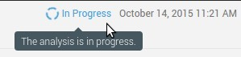
O ícone desaparece assim que o processamento é concluído, mas se o processamento do relatório de análise falhar por algum motivo, o ícone muda:

Perguntas frequentes
Q.
Erros de análise com
java.lang.OutOfMemoryError: GC overhead limit exceeded
.
O que eu faço?
R.
Isso significa que seu projeto é
muito grande ou muito complexo para o scanner analisar com a alocação de
memória padrão.
Para corrigir isso, aloque um heap
maior (usando
-Xmx[numeric value here]
) para o processo que executa a
análise.
Alguns mecanismos de IC podem
fornecer uma entrada para especificar os valores necessários, por
exemplo, se você estiver usando uma Etapa de criação do Maven em um
trabalho Jenkins para executar a análise.
Caso contrário, use Java Options para
definir um valor mais alto.
Observe que os detalhes da
configuração das Opções Java são omitidos aqui, pois variam de acordo
com o ambiente.
SonarScanner for Gradle
O SonarScanner for Gradle fornece uma maneira fácil de iniciar a análise do SonarQube de um projeto Gradle.
A capacidade de executar a análise do SonarQube por meio de uma tarefa regular do Gradle a torna disponível em qualquer lugar em que o Gradle esteja disponível (criação do desenvolvedor, servidor de CI etc.), sem a necessidade de baixar, configurar e manter manualmente a instalação do SonarQube Runner. A versão Gradle já possui muitas das informações necessárias para o SonarQube analisar com êxito um projeto. Ao pré-configurar a análise com base nessas informações, a necessidade de configuração manual é reduzida significativamente.
Pré-requisitos
- Versões Gradle 2.14+
- Pelo menos a versão mínima do Java suportada pelo servidor SonarQube está em uso
O bytecode criado pela compilação javac é necessário para a análise Java, incluindo projetos Android.
Configure o scanner
A instalação é automática, mas certas
propriedades globais ainda devem ser configuradas.
Um bom lugar para configurar
propriedades globais é
~/.gradle/gradle.properties
.
Esteja ciente de que o scanner usa
propriedades do sistema, portanto todas as propriedades devem ser
prefixadas por
systemProp
.
# gradle.properties systemProp.sonar.host.url=http://localhost:9000 #----- Token generated from an account with 'publish analysis' permission systemProp.sonar.login=<token/>Analisando
Primeiro, ative o scanner em sua
compilação.
Para o Gradle 2.1+, em
build.gradle
:
plugins { id "org.sonarqube" version "2.7" }Mais detalhes em https://plugins.gradle.org/plugin/org.sonarqube
Supondo que um servidor SonarQube local com configurações prontas para uso esteja instalado e funcionando, nenhuma configuração adicional é necessária.
Execute
gradle sonarqube
e aguarde até que a compilação seja
concluída e abra a página da web indicada na parte inferior da saída do
console.
Agora você deve conseguir procurar os
resultados da análise.
Analisando compilações de vários projetos
Para analisar uma hierarquia de projetos, aplique o plug-in SonarQube ao projeto raiz da hierarquia. Normalmente (mas não necessariamente), este será o projeto raiz da compilação Gradle. As informações pertencentes à análise como um todo devem ser configuradas no bloco sonarqube deste projeto. Quaisquer propriedades definidas na linha de comando também se aplicam a este projeto.
// build.gradle sonarqube { properties { property "sonar.sourceEncoding", "UTF-8" } }A configuração compartilhada entre subprojetos pode ser configurada em um bloco de subprojetos.
// build.gradle subprojects { sonarqube { properties { property "sonar.sources", "src" } } }
As informações específicas do projeto
são configuradas no
sonarqube
bloco do projeto correspondente.
// build.gradle project(":project1") { sonarqube { properties { property "sonar.branch", "Foo" } }}Para ignorar a análise do SonarQube para um subprojeto específico, configure sonarqube.skipProject como true.
// build.gradle project(":project2") { sonarqube { skipProject = true } }Dependências de tarefas
Todas as tarefas que produzem
resultados que devem ser incluídos na análise do SonarQube precisam ser
executadas antes da execução da
sonarqube
tarefa.
Normalmente, são tarefas de
compilação, tarefas de teste e tarefas de cobertura de código.
Para atender a essas necessidades, os
plug-ins adicionam uma dependência de tarefa a partir
sonarqube
de
test
se o plug-in Java for aplicado.
Dependências de tarefas adicionais
podem ser adicionadas conforme necessário.
Por exemplo:
// build.gradle project.tasks["sonarqube"].dependsOn "anotherTask"Projeto de exemplo
Um exemplo simples de trabalho está
disponível neste URL para que você possa verificar se tudo está
configurado corretamente em seu ambiente:
https://github.com/SonarSource/sonar-scanning-examples/tree/master/sonarqube-scanner-gradle
Padrões da propriedade de análise
O SonarScanner for Gradle usa as informações contidas no modelo de objeto da Gradle para fornecer padrões inteligentes para a maioria dos parâmetros de análise padrão , conforme listado abaixo.
Padrões Gradle para propriedades padrão do SonarQube:
| Propriedade | Padrão de gradle |
|---|---|
sonar.projectKey |
[${project.group}:]${project.name}
para módulo raiz;
<root module key>:<module path>
para submódulos
|
sonar.projectName |
${project.name} |
sonar.projectDescription |
${project.description} |
sonar.projectVersion |
${project.version} |
sonar.projectBaseDir |
${project.projectDir} |
sonar.working.directory |
${project.buildDir}/sonar |
Observe que padrões adicionais são fornecidos para projetos que têm o java-base ou o plugin java aplicado:
| Propriedade | Padrão de gradle |
|---|---|
sonar.sourceEncoding |
${project.compileJava.options.encoding} |
sonar.java.source |
${project.sourceCompatibility} |
sonar.java.target |
${project.targetCompatibility} |
sonar.sources |
${sourceSets.main.allSource.srcDirs}
(filtrado para incluir
apenas diretórios existentes)
|
sonar.tests |
${sourceSets.test.allSource.srcDirs}
(filtrado para incluir
apenas diretórios existentes)
|
sonar.java.binaries |
${sourceSets.main.output.classesDir} |
sonar.java.libraries |
${sourceSets.main.compileClasspath}
(filtragem para incluir
apenas arquivos; rt.jar e jfxrt.jar adicionados, se
necessário)
|
sonar.java.test.binaries |
${sourceSets.test.output.classesDir} |
sonar.java.test.libraries |
${sourceSets.test.compileClasspath}
(filtragem para incluir
apenas arquivos; rt.jar e jfxrt.jar adicionados, se
necessário)
|
sonar.junit.reportPaths |
${test.testResultsDir}
(se o diretório existir)
|
Os projetos Groovy obtêm todos os padrões Java, além de:
| Propriedade | Padrão de gradle |
|---|---|
sonar.groovy.binaries |
${sourceSets.main.output.classesDir} |
Padrões adicionais quando o plug-in JaCoCo é aplicado
| Propriedade | Padrão de gradle |
|---|---|
sonar.jacoco.reportPaths |
${jacoco.destinationFile} |
sonar.groovy.jacoco.reportPath |
${jacoco.destinationFile} |
Padrões adicionais para projetos do
Android (
com.android.application
,
com.android.library
ou
com.android.test
) Por padrão, a primeira variante do
tipo "debug" será usada para configurar a análise.
Você pode substituir o nome da
variante a ser usada usando o parâmetro 'androidVariant':
build.gradle sonarqube { androidVariant 'fullDebug' }| Propriedade | Padrão de gradle |
|---|---|
sonar.sources
(para variantes que não
são de teste)
|
${variant.sourcesets.map}
(ManifestFile /
CDirectories / AidlDirectories / AssetsDirectories /
CppDirectories / JavaDirectories /
RenderscriptDirectories / ResDirectories /
ResourcesDirectories)
|
sonar.tests
(para variantes de
teste)
|
${variant.sourcesets.map}
(ManifestFile /
CDirectories / AidlDirectories / AssetsDirectories /
CppDirectories / JavaDirectories /
RenderscriptDirectories / ResDirectories /
ResourcesDirectories)
|
sonar.java[.test].binaries |
${variant.destinationDir} |
sonar.java[.test].libraries |
${variant.javaCompile.classpath} + ${bootclasspath}
|
sonar.java.source |
${variant.javaCompile.sourceCompatibility} |
sonar.java.target |
${variant.javaCompile.targetCompatibility} |
Passando propriedades manuais / substituindo padrões
O SonarScanner for Gradle adiciona uma extensão SonarQubeExtension ao projeto e seus subprojetos, o que permite configurar / substituir as propriedades da análise.
// in build.gradle sonarqube { properties { property "sonar.exclusions", "**/*Generated.java" } }As propriedades do SonarQube também podem ser definidas na linha de comando ou configurando uma propriedade do sistema denominada exatamente como a propriedade do SonarQube em questão. Isso pode ser útil ao lidar com informações confidenciais (por exemplo, credenciais), informações do ambiente ou para configurações ad-hoc.
gradle sonarqube -Dsonar.host.url=http://sonar.mycompany.com -Dsonar.verbose=true
Embora certamente seja útil às vezes,
recomendamos manter a maior parte da configuração em um script de
construção (com versão), prontamente disponível para todos.
Um valor de propriedade do SonarQube
definido por meio de uma propriedade do sistema substitui qualquer valor
definido em um script de construção (para a mesma propriedade).
Ao analisar uma hierarquia de
projetos, os valores definidos por meio das propriedades do sistema se
aplicam ao projeto raiz da hierarquia analisada.
Cada propriedade do sistema iniciada
com
sonar.
será levada em consideração.
Analisando conjuntos de fontes personalizadas
Por padrão, o SonarScanner for Gradle passa a fonte principal do projeto definida como fontes de produção e a fonte de teste do projeto definida como fontes de teste. Isso funciona independentemente do layout do diretório de origem do projeto. Conjuntos de fontes adicionais podem ser adicionados conforme necessário.
// build.gradle sonarqube { properties { properties["sonar.sources"] += sourceSets.custom.allSource.srcDirs properties["sonar.tests"] += sourceSets.integTest.allSource.srcDirs } }Tópicos avançados
Mais sobre como configurar as propriedades do SonarQube
Vamos dar uma olhada no
sonarqube.properties{}
bloco.
Como já vimos nos exemplos, o
property()
método permite definir novas
propriedades ou substituir as existentes.
Além disso, todas as propriedades que
foram configuradas até esse momento, incluindo todas as propriedades
pré-configuradas pelo Gradle, estão disponíveis através do acessador de
propriedades.
As entradas no mapa de propriedades
podem ser lidas e gravadas com a sintaxe Groovy usual.
Para facilitar sua manipulação, os
valores ainda têm o seu tipo "idiomático" (Arquivo, Lista, etc.).
Após a avaliação do bloco
sonarProperties, os valores são convertidos em Strings da seguinte
maneira: Os valores da coleção (recursivamente) são convertidos em
Strings separados por vírgula e todos os outros valores são convertidos
chamando seus
toString()
métodos.
Como o
sonarProperties
bloco é avaliado preguiçosamente, as
propriedades do modelo de objeto de Gradle podem ser referenciadas com
segurança de dentro do bloco, sem ter que temer que ainda não tenham
sido definidas.
SonarScanner for MSBuild
O SonarScanner for MSBuild é a maneira recomendada de iniciar uma análise de projetos / soluções usando o comando MSBuild ou dotnet como uma ferramenta de construção. É o resultado de uma colaboração entre o SonarSource e a Microsoft .
O SonarScanner for MSBuild é distribuído como um executável de linha de comando independente, como uma extensão para o Azure DevOps Server e como um plug-in para Jenkins .
Ele suporta projetos multiplataforma do .Net Core e pode ser usado em plataformas não Windows.
Pré-requisitos
- Pelo menos a versão mínima do Java suportada pelo servidor SonarQube
-
O SDK correspondente ao seu sistema de construção:
- .NET Framework v4.6 + - Build Tools para Visual Studio 2015 Update 3 ou Build Build Tools para Visual Studio 2017
- .NET Core 2.0 - SDK do .NET Core 2.0 (para a versão do .NET Core do scanner)
- .NET Core 2.1 - NET Core SDK 2.1.3 (para a versão .NET Core do scanner ou se você planeja usar o .NET Core Global Tool
Instalação
SonarScanner para MSBuild for .NET Framework ou .NET Core
-
Expanda o arquivo baixado no diretório de sua escolha. Vamos nos referir a ele como
$install_directorynas próximas etapas.- No Windows, pode ser necessário desbloquear o arquivo ZIP primeiro (clique com o botão direito do mouse em arquivo> Propriedades> Desbloquear).
-
No Linux / OSX, pode ser
necessário definir permissões de execução nos arquivos em
$install_directory/sonar-scanner-(version)/bin.
-
Remova o comentário e atualize as configurações globais para apontar para o servidor SonarQube editando
$install_directory/SonarQube.Analysis.xml. Os valores definidos neste arquivo serão aplicados a todas as análises de todos os projetos, a menos que sejam substituídos localmente.
Considere definir permissões do sistema de arquivos para restringir o acesso a esse arquivo .:<SonarQubeAnalysisProperties xmlns:xsi="http://www.w3.org/2001/XMLSchema-instance" xmlns:xsd="http://www.w3.org/2001/XMLSchema" xmlns="http://www.sonarsource.com/msbuild/integration/2015/1"><Property Name="sonar.host.url">http://localhost:9000</Property><Property Name="sonar.login">[my-user-token]</Property></SonarQubeAnalysisProperties> -
Adicione
$install_directoryà sua variável de ambiente PATH.
Instalação da ferramenta global SonarScanner for MSBuild .NET Core Global
dotnet tool install --global dotnet-sonarscanner --version 4.8.0O argumento --version é opcional. Se for omitido, a versão mais recente será instalada.
No Linux / OSX, se o seu servidor SonarQube estiver protegido:
-
Copie os certificados de CA do
servidor para
/usr/local/share/ca-certificates -
Corre
sudo update-ca-certificates
Usar
Existem duas versões do SonarScanner for MSBuild.
Desde a versão 4.7.0 do Scanner, é possível invocá-lo usando argumentos com os separadores traço (-) ou barra (/). Exemplo: SonarScanner.MSBuild.exe begin / k: "project-key" ou SonarScanner.MSBuild.exe begin -k: "project-key" funcionará.
A primeira versão é baseada no .NET Framework "clássico". Para usá-lo, execute os seguintes comandos na pasta raiz do seu projeto:
SonarScanner.MSBuild.exe begin /k:"project-key" MSBuild.exe <path to solution.sln> /t:Rebuild SonarScanner.MSBuild.exe end
Nota: No Mac OS ou Linux, você também
pode usar
mono <path to SonarScanner.MSBuild.exe>
.
A segunda versão é baseada no .NET Core, que tem um uso muito semelhante:
dotnet <path to SonarScanner.MSBuild.dll> begin /k:"project-key" dotnet build <path to solution.sln>dotnet <path to SonarScanner.MSBuild.dll> end A versão do .NET Core também pode ser usada como uma ferramenta global do .NET Core. Depois de instalar o Scanner como uma ferramenta global, conforme descrito acima, ele pode ser chamado da seguinte maneira:
dotnet sonarscanner begin /k:"project-key" dotnet build <path to solution.sln>dotnet sonarscanner end O mesmo que acima, se você estiver direcionando um projeto do SonarCloud, precisará adicionar a organização e um login para autenticação.
Notas:
- A versão do .NET Core do scanner não suporta compilações TFS XAML. Além disso, as duas versões do scanner têm os mesmos recursos e argumentos de linha de comando.
-
Arquivos de projeto .NET Core
únicos (csproj ou vbproj) podem ser criados e analisados com êxito
apenas se um
<ProjectGuid>unique guid</ProjectGuid>elemento for adicionado no XML csproj ou vbproj. O<ProjectGuid>elemento não é necessário se você criar uma solução (sln) contendo esse projeto.
Etapas de análise
Início
A etapa inicial é executada quando
você adiciona o
begin
argumento da linha de comandos.
Ele se conecta ao pipeline do
MSBuild, baixa perfis e configurações de qualidade do SonarQube e
prepara seu projeto para a análise.
Parâmetros da linha de comando:
| Parâmetro | Descrição |
|---|---|
/k:<project-key> |
[obrigatório] Especifica a chave do projeto analisado no SonarQube |
/n:<project name> |
[opcional] Especifica o nome do projeto analisado no SonarQube. A adição desse argumento substituirá o nome do projeto no SonarQube, se ele já existir. |
/v:<version> |
[recomendado] Especifica a versão do seu projeto. |
/d:sonar.login=<username> or <token> |
[opcional] Especifica o nome de usuário ou o token de acesso para autenticação no SonarQube. Se esse argumento for adicionado à etapa inicial, ele também deverá ser adicionado na etapa final. |
/d:sonar.password=<password> |
[opcional] Especifica a
senha para o nome de usuário do SonarQube no
sonar.login
argumento.
Este argumento não é
necessário se você usar o token de autenticação.
Se esse argumento for
adicionado à etapa inicial, ele também deverá ser adicionado
na etapa final.
|
/d:sonar.verbose=true |
[opcional] Define a verbosidade do registro como detalhada. Adicione este argumento antes de enviar logs para solução de problemas. |
/d:<analysis-parameter>=<value> |
[opcional] Especifica um parâmetro de análise adicional do SonarQube , você pode adicionar esse argumento várias vezes. |
Para informações detalhadas sobre todos os parâmetros disponíveis, consulte Parâmetros de análise .
A etapa "begin" modificará sua compilação assim:
-
o ativo
CodeAnalysisRuleSetserá atualizado para corresponder ao perfil de qualidade do SonarQube WarningsAsErrorsserá desligado
Se o seu processo de compilação não puder tolerar essas alterações, recomendamos a criação de um segundo trabalho de compilação para a análise do SonarQube.
Construir
Entre as
etapas
begin
e
end
, você precisa criar seu projeto,
executar testes e gerar dados de cobertura de código.
Esta parte é específica para suas
necessidades e não é detalhada aqui.
Este guia pode ajudar:
[Cobertura e dados de teste] Gere
relatórios para C #, VB.net
.
Fim
A etapa final é executada quando você adiciona o argumento da linha de comando "end". Ele limpa os ganchos do MSBuild, coleta os dados de análise gerados pela compilação, os resultados dos testes, a cobertura do código e, em seguida, carrega tudo no SonarQube.
Existem apenas dois argumentos adicionais permitidos para a etapa final:
| Parâmetro | Descrição |
|---|---|
/d:sonar.login=<username> or <token> |
[opcional] Este argumento é necessário se tiver sido adicionado à etapa inicial. |
/d:sonar.password=<password> |
[opcional] Este argumento é necessário se tiver sido adicionado à etapa inicial e você não estiver usando um token de autenticação. |
Limitações conhecidas
- As versões do MSBuild anteriores a 14 não são suportadas.
- Projetos de aplicativos da Web são suportados. Projetos de sites herdados não são.
- Projetos direcionados a várias estruturas e usando diretivas de pré-processador podem ter métricas ligeiramente imprecisas (linhas de código, complexidade etc.), porque as métricas são calculadas apenas a partir do primeiro dos destinos construídos.
Excluindo projetos da análise
Alguns tipos de projeto, como o Microsoft Fakes , são automaticamente excluídos da análise. Para excluir manualmente um tipo diferente de projeto da análise, coloque o seguinte no arquivo .xxproj.
<!-- in .csproj --><PropertyGroup><!-- Exclude the project from analysis --><SonarQubeExclude>true</SonarQubeExclude></PropertyGroup>Tópicos avançados
Analisando projetos do MSBuild 12
com o MSBuild 14
O Sonar Scanner para MSBuild exige
que seu projeto seja criado com o MSBuild 14.0.
Recomendamos instalar o Visual Studio
2015, atualização 3 ou posterior, na máquina de análise, a fim de se
beneficiar da integração e dos recursos fornecidos com o ecossistema do
Visual Studio (VSTest, testes de unidade MSTest etc.).
Projetos direcionados a versões mais antigas do .NET Framework podem ser criados usando o MSBuild 14.0, definindo a propriedade MSBuild "TargetFrameworkVersion" conforme documentado pela Microsoft:
- Como direcionar uma versão do .NET Framework
- Estrutura de Destino e Plataforma de Destino do MSBuild
Se você não deseja mudar sua versão de produção para o MSBuild 14.0, é possível configurar uma versão separada dedicada à análise do SonarQube.
Detecção de projetos de teste O
SonarQube analisa projetos de teste
de maneira diferente dos projetos que não são de teste, por isso é
importante classificar corretamente os projetos de teste.
Por padrão, o SonarQube Scanner for MSBuild detectará como projeto de teste:
. Projetos de teste de unidade MSTest, graças à presença de um tipo de projeto conhecido GUID no arquivo .csproj desses projetos.
-
Projetos com nomes terminados em "Teste" ou "Testes". Esse comportamento pode ser alterado fornecendo o parâmetro
sonar.msbuild.testProjectPatternpara a etapa inicial (a regex segue a Expressão regular do .NET de maneira diferencia maiúsculas de minúsculas com o valor padrão.*Tests?\.(cs|vb)proj$). Essa regex é aplicada contra o nome completo do.csprojou.vbprojpor isso é recomendável manter no final de seu regex personalizado\.(cs|vb)proj$. Para classificar manualmente um projeto como um projeto de teste, marque-o com<SonarQubeTestProject>true</SonarQubeTestProject>:<!-- in .csproj --><PropertyGroup><!-- Mark the project as being a test project --><SonarQubeTestProject>true</SonarQubeTestProject></PropertyGroup>
Parâmetros de análise por projeto Alguns parâmetros de análise podem ser definidos para um único projeto MSBuild, adicionando-os ao seu arquivo .csproj.
<!-- in .csproj --><ItemGroup><SonarQubeSetting Include="sonar.stylecop.projectFilePath"><Value>$(MSBuildProjectFullPath)</Value></SonarQubeSetting></ItemGroup>
Análises simultâneas na mesma
máquina de compilação
Análises simultâneas (ou seja,
análises paralelas de duas soluções na mesma máquina de compilação
usando uma conta de serviço exclusiva) não são suportadas por padrão
pelo Scanner for MSBuild.
Você pode habilitá-lo da seguinte
maneira:
- Localize a pasta que contém o Scanner for MSBuild
-
Vá na
Targetspasta e copie a pastaSonarQube.Integration.ImportBefore.targets -
Cole-o na
ImportBeforepasta global da ferramenta de construção (se a pasta não existir, crie-a).-
Para MSBuild, o caminho é
<MSBUILD_INSTALL_DIR>\<Version>\Microsoft.Common.targets\ImportBeforeonde <MSBUILD INSTALL DIR> está: * Para a v14, o caminho padrão é:C:\Program Files (x86)\MSBuild\14.0\Microsoft.Common.Targets\ImportBefore-
Para a v15, o
caminho padrão é:
C:\Program Files (x86)\Microsoft Visual Studio\2017\Community\MSBuild\15.0\Microsoft.Common.targets\ImportBefore(para o VS Community Edition) -
Para a v16, o
caminho padrão é:
C:\Program Files (x86)\Microsoft Visual Studio\2019\Enterprise\MSBuild\Current\Microsoft.Common.targets(para o VS Community Edition)
-
Para a v15, o
caminho padrão é:
-
Para dotnet, o caminho é
<DOTNET_SDK_INSTALL_DIR>\15.0\Microsoft.Common.targets\ImportBeforeonde<DOTNET_SDK_INSTALL_DIR>podem ser encontrados usando odotnet --infoe olhando para a propriedade Path Base.
-
O impacto no desempenho desta
instalação global para projetos que não são analisados é
insignificante, pois esse destino é apenas um bootstrapper e será
resgatado quase instantaneamente quando a
.sonarqube
pasta não for encontrada na pasta que
está sendo criada.
Usando o SonarScanner for MSBuild
com um proxy
Em máquinas de construção que se
conectam à Internet por meio de um servidor proxy, você pode ter
dificuldades em se conectar ao SonarQube.
Para instruir a Java VM a usar as
configurações de proxy do sistema, é necessário definir a seguinte
variável de ambiente antes de executar o SonarScanner for MSBuild:
SONAR_SCANNER_OPTS = "-Djava.net.useSystemProxies=true"Para instruir a Java VM a usar configurações de proxy específicas ou quando não houver configuração em todo o sistema, use o seguinte valor:
SONAR_SCANNER_OPTS = "-Dhttp.proxyHost=yourProxyHost -Dhttp.proxyPort=yourProxyPort"Onde yourProxyHost e yourProxyPort são o nome do host e a porta do seu servidor proxy. Existem configurações de proxy adicionais para https, autenticação e exclusões que podem ser passadas para a Java VM. Para obter mais informações, consulte o seguinte artigo: https://docs.oracle.com/javase/8/docs/technotes/guides/net/proxies.html
SonarScanner for Maven
O SonarScanner é recomendado como o analisador padrão para projetos Maven.
A capacidade de executar a análise do SonarQube por meio de uma meta regular do Maven a torna disponível em qualquer lugar em que o Maven esteja disponível (criação do desenvolvedor, servidor de IC etc.), sem a necessidade de baixar, configurar e manter manualmente a instalação do SonarQube Runner. A versão do Maven já possui muitas das informações necessárias para o SonarQube analisar com êxito um projeto. Ao pré-configurar a análise com base nessas informações, a necessidade de configuração manual é reduzida significativamente.
Pré-requisitos
- Maven 3.x
- Pelo menos a versão mínima do Java suportada pelo servidor SonarQube está em uso
Configurações globais
Edite o
arquivo
settings.xml
, localizado em
$MAVEN_HOME/conf
ou
~/.m2
, para definir o prefixo do plug-in
e, opcionalmente, o URL do servidor SonarQube.
Exemplo:
<settings><pluginGroups><pluginGroup>org.sonarsource.scanner.maven</pluginGroup></pluginGroups><profiles><profile><id>sonar</id><activation><activeByDefault>true</activeByDefault></activation><properties><!-- Optional URL to server. Default value is http://localhost:9000 --><sonar.host.url>http://myserver:9000 </sonar.host.url></properties></profile></profiles></settings>Analisando
A análise de um projeto do Maven
consiste na execução de uma meta do Maven:
sonar:sonar
no diretório que contém o projeto
principal
pom.xml
.
mvn clean verify sonar:sonar
Em algumas situações, você pode
executar o
sonar:sonar
objetivo como uma etapa dedicada.
Certifique-se de usar
install
como primeira etapa para projetos com
vários módulos
mvn clean install mvn sonar:sonarPara especificar a versão do sonar-maven-plugin em vez de usar a mais recente:
mvn org.sonarsource.scanner.maven:sonar-maven-plugin:3.6.0.1398:sonarPara obter informações de cobertura, você precisará gerar o relatório de cobertura antes da análise.
Configurando a análise
A maioria das propriedades de análise
será lida no seu projeto.
Se você deseja substituir os valores
padrão de especificar parâmetros adicionais, configure os nomes dos
parâmetros encontrados na
página
Parâmetros de Análise
, na
<properties>
seção do seu pom.xml, desta forma:
<properties><sonar.buildString> [...] </sonar.buildString></properties>Projeto de amostra
Para ajudar você a começar, um exemplo simples de projeto está disponível aqui: https://github.com/SonarSource/sonar-scanning-examples/tree/master/sonarqube-scanner-maven
Excluindo um módulo da análise
-
defina a propriedade
<sonar.skip>true</sonar.skip>nopom.xmlmódulo que você deseja excluir - use perfis de construção para excluir algum módulo (como para testes de integração)
-
use as opções avançadas do reator
(como "-pl").
Por exemplo
mvn sonar:sonar -pl !module2
Como corrigir a versão do Maven Plugin
É recomendável bloquear as versões dos plugins do Maven:
<build><pluginManagement><plugins><plugin><groupId>org.sonarsource.scanner.maven</groupId><artifactId>sonar-maven-plugin</artifactId><version>3.6.0.1398</version></plugin></plugins></pluginManagement></build>Solução de problemas
Se você obtiver um
java.lang.OutOfMemoryError
Defina a
MAVEN_OPTS
variável de ambiente, como esta nos
ambientes * nix:
export MAVEN_OPTS="-Xmx512m"Nos ambientes Windows, evite aspas duplas, pois elas são mal interpretadas.
set MAVEN_OPTS=-Xmx512mSonarScanner para Azure DevOps
O SonarScanner para Azure DevOps facilita a integração da análise ao seu pipeline de criação. A extensão permite a análise de todos os idiomas suportados pelo SonarQube.
Compatibilidade
O SonarScanner para Azure DevOps é compatível com:
- Atualização 2+ do TFS 2017
- TFS 2018
- Azure DevOps Server 2019
Instalação
- Instale a extensão do mercado . Se você estiver usando agentes de construção hospedados pela Microsoft , não haverá mais nada para instalar. A extensão funcionará com todos os agentes hospedados (Windows, Linux e MacOS).
- Se você estiver hospedando os agentes de construção, certifique-se de ter pelo menos a versão mínima do Java suportada pelo SonarQube instalada.
Configurar
A primeira coisa a fazer é declarar o servidor SonarQube como um ponto de extremidade de serviço nas configurações do projeto do Azure DevOps.
- Abra a página Conexões no seu projeto do Azure DevOps Server: Configurações do Projeto> Pipelines> Conexões de Serviço .
- Clique em Nova conexão de serviço e escolha SonarQube .
- Especifique um nome de conexão , a URL do servidor do seu SonarQube Server (incluindo a porta, se necessário) e o token de autenticação a ser usado
Cada extensão fornece três tarefas que você usará nas definições de construção para analisar seus projetos:
-
Prepare a tarefa Configuração de Análise , para definir todas as configurações necessárias antes de executar a construção.
- Esta tarefa é obrigatória.
- No caso de soluções .NET ou projetos Java, ajuda a integrar-se perfeitamente às tarefas MSBuild, Maven e Gradle.
-
Execute a tarefa Análise de Código , para realmente executar a análise do código fonte.
- Esta tarefa não é necessária para projetos Maven ou Gradle, porque o scanner será executado como parte da construção Maven / Gradle.
-
Publique a tarefa Resultado do Quality Gate , para exibir o status do Quality Gate no resumo da construção e dar uma idéia de se o aplicativo está pronto para produção "com qualidade".
- Esta tarefa é opcional.
- Isso pode aumentar significativamente o tempo geral de compilação, porque pesquisará o SonarQube até que a análise seja concluída. A omissão desta tarefa não afetará os resultados da análise no SonarQube - significa simplesmente que a página Resumo da Compilação do Azure DevOps não mostrará o status da análise ou um link para o painel do projeto no SonarQube.
Ao criar uma definição de compilação, você pode filtrar a lista de tarefas disponíveis, digitando "Sonar" para exibir apenas as tarefas relevantes.
Analisando uma solução .NET
-
Na sua definição de construção, adicione:
- Pelo menos Prepare Configuração Análise da tarefa e Executar análise de código tarefa
- Tarefa de publicação opcional do resultado do Quality Gate
-
Reordene as tarefas para respeitar a seguinte ordem:
- Prepare a tarefa de Configuração de análise antes de qualquer tarefa do MSBuild ou do Visual Studio Build .
- Execute a tarefa de análise de código após a tarefa de teste do Visual Studio .
- Publicar Qualidade Portão Resultado tarefa após o Run análise de código tarefa
- Clique na etapa de compilação Prepare Analysis Configuration para configurá-lo:
-
Você deve especificar a conexão de serviço (ou seja, SonarQube) a ser usada. Você pode:
- selecione um terminal existente na lista suspensa
- adicione um novo terminal
- gerenciar terminais existentes
-
Mantenha a opção Integrar ao MSBuild marcada e especifique pelo menos a chave do projeto
- Chave do Projeto - a chave exclusiva do projeto no SonarQube
- Nome do Projeto - o nome do projeto no SonarQube
- Versão do projeto - a versão do projeto no SonarQube
- Clique na tarefa Teste do Visual Studio e marque a caixa de seleção Code Coverage Enabled para processar a cobertura do código e importá-la para o SonarQube. (Opcional, mas recomendado)
Feito tudo isso, você pode acionar uma compilação.
Analisando um projeto Java com Maven ou Gradle
- Na sua definição de construção, adicione:
- Pelo menos, preparar a tarefa de configuração de análise |
- Tarefa de publicação opcional do resultado do Quality Gate
- Reordene as tarefas para respeitar a seguinte ordem:
- Prepare a tarefa de Configuração da análise antes da tarefa Maven ou Gradle .
- Publique a tarefa Resultado do Quality Gate após a tarefa Maven ou Gradle .
- Clique na tarefa Preparar configuração de análise para configurá-la:
- Selecione o servidor SonarQube
- Selecione Integrar ao Maven ou Gradle
- Na tarefa Maven ou Gradle, em Code Analysis , marque Executar SonarQube ou SonarCloud Analysis
Feito tudo isso, você pode acionar uma compilação.
Analisando um projeto C / C ++ / Obj-C
No seu pipeline de construção, insira as seguintes etapas na ordem em que aparecem aqui. Essas etapas podem ser intercaladas com outras etapas de sua compilação, desde que a ordem a seguir seja seguida. Todas as etapas devem ser executadas no mesmo agente.
-
Disponibilize o
Build Wrapper
no agente de construção:
Faça o download e descompacte o Build Wrapper no agente de construção (consulte a seção Pré-requisitos da página C / C ++ / Objective-C ). O arquivo para baixar e descompactar depende da plataforma do host.
Por favor, note que: -
Para o agente de compilação hospedado pela Microsoft, você precisará fazer isso sempre (como parte do pipeline de compilação); por exemplo, você pode adicionar a tarefa de script do PowerShell para fazer isso. Isso pode ser feito inserindo uma tarefa de linha de comando .
Exemplo de comandos do PowerShell em um host do Windows:Invoke-WebRequest -Uri '<sonarqube_url>/static/cpp/build-wrapper-win-x86.zip' -OutFile 'build-wrapper.zip' Expand-Archive -Path 'build-wrapper.zip' -DestinationPath '.'Exemplo de comandos bash em um host linux:
curl '<sonarqube_url>/static/cpp/build-wrapper-linux-x86.zip' --output build-wrapper.zip unzip build-wrapper.zipExemplo de comandos bash em um host macos:
curl '<sonarqube_url>/static/cpp/build-wrapper-macosx-x86.zip' --output build-wrapper.zip unzip build-wrapper.zip - Para o agente de construção auto-hospedado, você pode baixá-lo sempre (usando os mesmos scripts) ou apenas uma vez (como parte da configuração manual do agente de construção).
-
Adicione uma
tarefa
Preparar configuração
de análise
e configure-a da
seguinte forma:
Clique na tarefa Preparar análise no SonarQube para configurá-la: - Selecione o servidor SonarQube
- Em Escolha a maneira de executar a análise , selecione scanner autônomo (mesmo se você criar com o Visual Studio / MSBuild )
-
Em
Propriedades
Adicionais
na
seção
Avançado
, inclua a propriedade
sonar.cfamily.build-wrapper-outputcom o valor de diretório de saída no qual o Wrapper de Compilação deve gravar seus resultados:sonar.cfamily.build-wrapper-output=<output directory> -
Adicione uma
tarefa de
linha de comando
para executar sua
compilação.
Para que a análise ocorra, sua construção deve ser executada através de uma linha de comando, para que possa ser finalizada pelo wrapper de compilação. Para fazer isso, -
Execute o Build Wrapper executável. Passe como os argumentos (1) o diretório de saída configurado na tarefa anterior e (2) o comando que executa uma compilação limpa do seu projeto (não uma compilação incremental).
Exemplo de comandos do PowerShell em um host do Windows com uma compilação MSBuild :build-wrapper-win-x86/build-wrapper-win-x86-64.exe --out-dir <output directory> MSBuild.exe /t:RebuildExemplo de comandos bash em um host linux com um make build:
build-wrapper-linux-x86/build-wrapper-linux-x86-64 --out-dir <output directory> make clean allExemplo de comandos bash em um host macos com uma compilação xcodebuild :
build-wrapper-macosx-x86/build-wrapper-macos-x86 --out-dir <output directory> xcodebuild -project myproject.xcodeproj -configuration Release clean build - Adicione uma tarefa Executar Análise de Código para executar a análise de código e disponibilizar os resultados para o SonarQube. Considere executar esta tarefa logo após a anterior, pois o ambiente de construção não deve ser significativamente alterado antes de executar a análise.
- Opcionalmente, adicione uma tarefa Publicar resultado do Quality Gate .
Feito tudo isso, você pode acionar uma compilação.
Analisando outros tipos de projetos
Se você não estiver desenvolvendo um aplicativo .NET ou um projeto Java, eis a maneira padrão de acionar uma análise:
- Na sua definição de construção, adicione:
- Pelo menos Prepare Configuração Análise da tarefa e Executar análise de código tarefa
- Tarefa de publicação opcional do resultado do Quality Gate
- Reordene as tarefas para respeitar a seguinte ordem:
- Preparar a configuração da análise
- Executar análise de código
- Publicar resultado do Quality Gate
- Clique na tarefa Preparar configuração de análise para configurá-la:
- Selecione o servidor SonarQube
- Selecione Usar scanner autônomo
-
Então:
-
As propriedades
do SonarQube estão armazenadas no
sonar-project.propertiesarquivo (padrão) no seu SCM, e você só precisa garantir que "Arquivo de configurações" aponte corretamente para ele. Esta é a maneira recomendada. - Ou você não possui esse arquivo no seu SCM e pode clicar em Fornecer manualmente a configuração para especificá-lo na sua definição de construção. Isso não é recomendado porque é menos portátil.
-
As propriedades
do SonarQube estão armazenadas no
Feito tudo isso, você pode acionar uma compilação.
Análise de solicitação de desvio e retirada
As análises de solicitação de ramificação e recepção estão disponíveis como parte da Developer Edition e acima
Ramos
Quando uma compilação é executada em uma ramificação do seu projeto, a extensão configura automaticamente a análise a ser enviada para a ramificação do projeto relevante no SonarQube. A mesma definição de construção pode ser aplicada a todas as suas ramificações, independentemente do tipo de repositório Git que você está analisando,
Se você estiver trabalhando com
ramificações em projetos TFVC, ainda precisará especificar manualmente a
ramificação a ser usada no SonarQube: na
tarefa
Preparar Configuração da Análise
, nas
Propriedades Adicionais
, é necessário definir
sonar.branch.name
.
Solicitações Pull
O SonarQube pode analisar o código dos novos recursos e anotar suas solicitações pull no Azure DevOps com comentários para destacar os problemas encontrados.
A análise de solicitação pull é suportada para qualquer tipo de repositório Git. Para ativá-lo:
- Siga as instruções para ativar o Pull Request Decoration para Azure DevOps no servidor e no projeto SonarQube
- Na página Políticas de ramificação de suas principais ramificações de desenvolvimento (por exemplo, "mestre"), adicione uma política de compilação que execute sua definição de compilação
Na próxima vez em que algum código for enviado na ramificação de uma solicitação pull, a definição de compilação executará uma verificação no código e publicará os resultados no SonarQube que decorarão a solicitação pull no Azure DevOps.
Nota: O número de comentários publicados em um PR é limitado a 50. Se esse limite for atingido, uma mensagem será exibida como um comentário, com um link para o restante dos problemas no SonarQube. Observe também que esse comentário não desaparecerá após a resolução de um problema, mas apenas em uma nova compilação, com menos de 50 problemas restantes.
Perguntas frequentes
Como posso interromper a
construção com base no status do Quality Gate?
Acreditamos que quebrar uma
compilação de IC não é a abordagem correta.
Em vez disso, estamos fornecendo uma decoração de solicitação de recebimento (para garantir que os problemas não sejam introduzidos no momento da mesclagem) e em breve adicionaremos uma maneira de verificar a qualidade do portão como parte de um processo de liberação.
SonarScanner for Jenkins
Este plug-in permite centralizar a configuração dos detalhes de conexão do servidor SonarQube na configuração global do Jenkins.
Em seguida, você pode acionar a análise do SonarQube da Jenkins usando o Jenkins Build Steps padrão ou o DSL do Jenkins Pipeline para acionar a análise com:
Após a conclusão da tarefa, o plug-in detectará que uma análise do SonarQube foi feita durante a construção e exibirá um emblema e um widget na página da tarefa com um link para o painel do SonarQube, além do status do portão de qualidade.
Instalação
- Instale o SonarScanner for Jenkins através do Jenkins Update Center .
-
Configure o (s) servidor (es) SonarQube:
- Faça login no Jenkins como administrador e vá para Gerenciar Jenkins> Configurar sistema .
- Role para baixo até a seção de configuração do SonarQube, clique em Adicionar SonarQube e adicione os valores solicitados.
- O token de autenticação do servidor deve ser criado como uma credencial de 'Texto Secreto'.
Analisando uma solução .NET
Configuração global
Esta etapa é obrigatória se você
deseja acionar alguma de suas análises com o SonarScanner for MSBuild.
Você pode definir quantas instâncias
do scanner desejar.
Então, para cada tarefa do Jenkins,
você poderá escolher com qual iniciador usar para executar a análise do
SonarQube.
- Faça login no Jenkins como administrador e vá para Gerenciar Jenkins> Configuração Global da Ferramenta
- Clique em Add SonarScanner for MSBuild
- Adicione uma instalação da versão mais recente disponível. Marque Instalar automaticamente para que o SonarScanner for MSBuild seja provisionado automaticamente em seus executores Jenkins
Se você não vir nenhuma versão disponível em Instalar do GitHub, primeiro vá para Gerenciar Jenkins> Gerenciar plug-ins> Avançado e clique em Verificar agora
Configuração do trabalho
- Configure o projeto e vá para a seção Compilar .
- Adicione o SonarQube for MSBuild - Begin Analysis à sua compilação
- Configure a chave, o nome e a versão do projeto SonarQube na etapa de construção do SonarScanner for MSBuild - Begin Analysis
- Adicione a etapa de compilação do MSBuild ou o comando em lote Executar o Windows para executar a compilação com o MSBuild 14 (consulte compatibilidade) na compilação.
- Adicione as etapas de compilação do SonarQube for MSBuild - End Analysis à sua compilação
Analisando um projeto Java com Maven ou Gradle
Configuração Global
- Faça login no Jenkins como administrador e vá para Gerenciar Jenkins> Configurar sistema
- Role até a seção Servidores SonarQube e marque Ativar injeção da configuração do servidor SonarQube como variáveis de ambiente de construção
Configuração do trabalho
- Configure o projeto e acesse a seção Build Environment .
- Ative o ambiente Prepare SonarScanner para permitir a injeção de valores do servidor SonarQube nessa tarefa específica. Se várias instâncias do SonarQube estiverem configuradas, você poderá escolher qual delas usar. Quando as variáveis de ambiente estiverem disponíveis, use-as em uma etapa de criação padrão do Maven (invocar metas de nível superior do Maven) definindo as metas a serem incluídas ou em uma etapa de construção padrão do Gradle (script de Invocação do gradle), definindo as tarefas a serem executadas.
Objetivo do Maven:
$SONAR_MAVEN_GOALTarefa Gradle:
sonarqubeNos dois casos, iniciar sua análise pode exigir autenticação. Nesse caso, verifique se a Configuração Global define um token SonarQube válido.
Analisando outros tipos de projetos
Configuração global
Esta etapa é obrigatória se você
deseja acionar qualquer uma das suas análises do SonarQube com o
SonarScanner.
Você pode definir quantas instâncias
do scanner desejar.
Então, para cada tarefa do Jenkins,
você poderá escolher com qual iniciador usar para executar a análise do
SonarQube.
- Faça login no Jenkins como administrador e vá para Gerenciar Jenkins> Configuração Global da Ferramenta
- Role para baixo até a seção de configuração do SonarScanner e clique em Adicionar SonarScanner. É baseado na instalação automática típica da ferramenta Jenkins. Você pode optar por apontar para uma versão já instalada do SonarScanner (desmarque 'Instalar automaticamente') ou dizer ao Jenkins para pegar o instalador em um local remoto (marque 'Instalar automaticamente')
Se você não vir uma lista suspensa com todas as versões disponíveis do SonarScanner, mas sim um campo de texto vazio, é porque o Jenkins ainda não baixou o arquivo do centro de atualização necessário (o período padrão é de 1 dia). Você pode forçar essa atualização clicando no botão "Verificar agora" em Gerenciar plug-ins> guia Avançado.
Configuração do trabalho
- Configure o projeto e vá para a seção Compilar .
- Adicione a etapa de compilação do SonarScanner à sua compilação.
- Configure as propriedades de análise do SonarQube. Você pode apontar para um arquivo sonar-project.properties existente ou definir as propriedades da análise diretamente no campo Propriedades da análise
Usando um pipeline Jenkins
Fornecemos um
withSonarQubeEnv
bloco que permite selecionar o
servidor SonarQube com o qual você deseja interagir.
Os detalhes da conexão que você
configurou na configuração global do Jenkins serão automaticamente
transmitidos ao scanner.
Se necessário, você pode substituir o
credentialId
que não deseja usar o definido na
configuração global (por exemplo, se você definir credenciais no nível
da pasta).
Aqui estão alguns exemplos para cada
scanner, supondo que você execute em escravos Unix e tenha configurado
um servidor chamado "My SonarQube Server", bem como as ferramentas
necessárias.
Se você executar em escravos do
Windows, substitua-o
sh
por
bat
.
SonarScanner:
node { stage('SCM') { git 'https://github.com/foo/bar.git' } stage('SonarQube analysis') { def scannerHome = tool 'SonarScanner 4.0'; withSonarQubeEnv('My SonarQube Server') { // If you have configured more than one global server connection, you can specify its name sh "${scannerHome}/bin/sonar-scanner" } } }SonarScanner for Gradle:
node { stage('SCM') { git 'https://github.com/foo/bar.git' } stage('SonarQube analysis') { withSonarQubeEnv() { // Will pick the global server connection you have configured sh './gradlew sonarqube' } } }SonarScanner for Maven:
node { stage('SCM') { git 'https://github.com/foo/bar.git' } stage('SonarQube analysis') { withSonarQubeEnv(credentialsId: 'f225455e-ea59-40fa-8af7-08176e86507a', installationName: 'My SonarQube Server') { // You can override the credential to be used sh 'mvn org.sonarsource.scanner.maven:sonar-maven-plugin:3.6.0.1398:sonar' } } }SonarScanner for MSBuild:
node { stage('SCM') { git 'https://github.com/foo/bar.git' } stage('Build + SonarQube analysis') { def sqScannerMsBuildHome = tool 'Scanner for MSBuild 4.6' withSonarQubeEnv('My SonarQube Server') { bat "${sqScannerMsBuildHome}\\SonarQube.Scanner.MSBuild.exe begin /k:myKey" bat 'MSBuild.exe /t:Rebuild' bat "${sqScannerMsBuildHome}\\SonarQube.Scanner.MSBuild.exe end" } } }Pausar o pipeline até que o portão de qualidade seja computado
A
waitForQualityGate
etapa pausará o pipeline até que a
análise do SonarQube seja concluída e retorne o status do portão de
qualidade.
Pré-requisitos:
-
Configure um webhook no servidor
SonarQube apontando para
<your Jenkins instance>/sonarqube-webhook/ -
Use a
withSonarQubeEnvetapa em seu pipeline (para que o taskId do SonarQube seja corretamente anexado ao contexto do pipeline).
Exemplo de pipeline com script:
node { stage('SCM') { git 'https://github.com/foo/bar.git' } stage('SonarQube analysis') { withSonarQubeEnv('My SonarQube Server') { sh 'mvn clean package sonar:sonar' } // submitted SonarQube taskId is automatically attached to the pipeline context } } // No need to occupy a node stage("Quality Gate"){ timeout(time: 1, unit: 'HOURS') { // Just in case something goes wrong, pipeline will be killed after a timeout def qg = waitForQualityGate() // Reuse taskId previously collected by withSonarQubeEnv if (qg.status != 'OK') { error "Pipeline aborted due to quality gate failure: ${qg.status}" } } }Graças ao webhook, a etapa é implementada de maneira muito leve: não é necessário ocupar um nó durante a pesquisa e não impede que o Jenkins seja reiniciado (a etapa será restaurada após a reinicialização). Observe que, para evitar condições de corrida, quando a etapa inicia (ou é reiniciada), é feita uma chamada direta ao servidor para verificar se a tarefa já está concluída.
Exemplo de pipeline declarativo:
pipeline { agent any stages { stage('SCM') { steps { git url: 'https://github.com/foo/bar.git' } } stage('build && SonarQube analysis') { steps { withSonarQubeEnv('My SonarQube Server') { // Optionally use a Maven environment you've configured already withMaven(maven:'Maven 3.5') { sh 'mvn clean package sonar:sonar' } } } } stage("Quality Gate") { steps { timeout(time: 1, unit: 'HOURS') { // Parameter indicates whether to set pipeline to UNSTABLE if Quality Gate fails // true = set pipeline to UNSTABLE, false = don't waitForQualityGate abortPipeline: true } } } } }Se você quiser executar várias análises no mesmo pipeline e usar waitForQualityGate, precisará fazer tudo em ordem:
pipeline { agent any stages { stage('SonarQube analysis 1') { steps { sh 'mvn clean package sonar:sonar' } } stage("Quality Gate 1") { steps { waitForQualityGate abortPipeline: true } } stage('SonarQube analysis 2') { steps { sh 'gradle sonarqube' } } stage("Quality Gate 2") { steps { waitForQualityGate abortPipeline: true } } } }Configurando um segredo de webhook
Se você deseja verificar a carga útil do webhook enviada ao Jenkins, é possível adicionar um segredo ao seu webhook no SonarQube.
Para definir o segredo:
- No Jenkins, navegue para Gerenciar Jenkins> Configurar Sistema> Servidor SonarQube> Avançado> Webhook Secret e clique no botão Adicionar .
- Selecione Texto secreto e forneça um ID ao segredo.
- Selecione o segredo no menu suspenso.
Se você deseja substituir o segredo
do webhook em um nível de projeto, você pode adicionar o segredo ao
Jenkins e, em seguida, fazer referência ao ID do segredo ao chamar
waitForQualityGate
.
waitForQualityGate(webhookSecretId: 'yourSecretID') se o seu pipeline for declarativo ou
waitForQualityGate webhookSecretId: 'yourSecretID'se o seu pipeline estiver com script.
SonarScanner for Ant
O SonarScanner for Ant permite
task
a integração da análise do SonarQube
em um script de construção do Apache Ant.
O SonarScanner for Ant é uma tarefa
Ant que é o invólucro do
SonarScanner
, que funciona invocando o
SonarScanner e passando a ele todas as
propriedades
nomeadas após uma
sonar.*
convenção.
Isso tem a desvantagem de não ser
muito Ant-y, mas a vantagem de fornecer disponibilidade instantânea de
qualquer novo parâmetro de análise introduzido por uma nova versão de um
plug-in ou do próprio SonarQube.
Portanto, o uso bem-sucedido do
SonarScanner for Ant requer uma adesão estrita aos nomes das
propriedades mostrados abaixo.
Usar
Defina um novo alvo Ant do sonar em seu script de construção do Ant:
<!-- build.xml --><project name="My Project" default="all" basedir="." xmlns:sonar="antlib:org.sonar.ant">... <!-- Define the SonarQube global properties (the most usual way is to pass these properties via the command line) --><property name="sonar.host.url" value="http://localhost:9000" />... <!-- Define the SonarQube project properties --><property name="sonar.projectKey" value="org.sonarqube:sonarqube-scanner-ant" /><property name="sonar.projectName" value="Example of SonarScanner for Ant Usage" /><property name="sonar.projectVersion" value="1.0" /><property name="sonar.sources" value="src" /><property name="sonar.java.binaries" value="build" /><property name="sonar.java.libraries" value="lib/*.jar" />... <!-- Define SonarScanner for Ant Target --><target name="sonar"><taskdef uri="antlib:org.sonar.ant" resource="org/sonar/ant/antlib.xml"><!-- Update the following line, or put the "sonarqube-ant-task-*.jar" file in your "$HOME/.ant/lib" folder --><classpath path="path/to/sonar/ant/task/lib/sonarqube-ant-task-*.jar" /></taskdef><!-- Execute SonarScanner for Ant Analysis --><sonar:sonar /></target>Execute o seguinte comando no diretório base do projeto para iniciar a análise:
ant sonarProjeto de amostra
Para ajudar você a começar, um exemplo simples de projeto está disponível aqui: https://github.com/SonarSource/sonar-scanning-examples/tree/master/sonarqube-scanner-ant
Solução de problemas
Habilitar logs de depuração
Para habilitar os logs de depuração,
use a opção detalhada Ant detalhada:
-v
ant sonar -vSonarScanner
O SonarScanner é o scanner a ser usado quando não há um scanner específico para o seu sistema de compilação.
Instalação
-
Expanda o arquivo baixado no
diretório de sua escolha.
Vamos nos referir a ele como
$install_directorynas próximas etapas. -
Atualize as configurações globais para apontar para o servidor SonarQube editando
$install_directory/conf/sonar-scanner.properties:#----- Default SonarQube server #sonar.host.url=http://localhost:9000 -
Adicione o
$install_directory/bindiretório ao seu caminho. -
Verifique sua instalação, abrindo um novo shell e executando o comando
sonar-scanner -h(sonar-scanner.bat -hno Windows). Você deve obter uma saída como esta:usage: sonar-scanner [options] Options: -D,--define <arg> Define property -h,--help Display help information -v,--version Display version information -X,--debug Produce execution debug output
Se precisar de mais informações de
depuração você pode adicionar uma das seguintes opções para a sua linha
de comando:
-X
,
--verbose
ou
-Dsonar.verbose=true
.
Usar
Crie um arquivo de configuração no
diretório raiz do projeto:
sonar-project.properties
# must be unique in a given SonarQube instance sonar.projectKey=my:project # --- optional properties --- # defaults to project key #sonar.projectName=My project # defaults to 'not provided' #sonar.projectVersion=1.0 # Path is relative to the sonar-project.properties file. Defaults to . #sonar.sources=. # Encoding of the source code. Default is default system encoding #sonar.sourceEncoding=UTF-8
Execute o seguinte comando no
diretório base do projeto para iniciar a análise:
sonar-scanner
Projetos de exemplo
Para ajudar você a começar, exemplos simples de projetos estão disponíveis para a maioria dos idiomas no github. Eles podem ser navegados ou baixados . Você os encontrará arquivados em sonarqube-scanner / src.
Alternativas ao sonar-project.properties
Se um arquivo sonar-project.properties não puder ser criado no diretório raiz do projeto, existem várias alternativas:
-
As propriedades podem ser especificadas diretamente através da linha de comandos. Ex:
sonar-scanner -Dsonar.projectKey=myproject -Dsonar.sources=src1 -
A propriedade project.settings pode ser usada para especificar o caminho para o arquivo de configuração do projeto (esta opção é incompatível com a
sonar.projectBaseDirpropriedade). Ex:sonar-scanner -Dproject.settings=../myproject.properties -
A pasta raiz do projeto a ser
analisada pode ser definida através da
sonar.projectBaseDirpropriedade desde o SonarScanner 2.4. Esta pasta deve conter umsonar-project.propertiesarquivo sesonar.projectKeynão for especificado na linha de comando. Parâmetros de análise adicionais podem ser definidos neste arquivo de configuração do projeto ou através de parâmetros da linha de comandos.
Diretório de Análise Alternativo
Se os arquivos a serem analisados
não estiverem no diretório em que a análise é iniciada, use a
sonar.projectBaseDir
propriedade para mover a análise para
um diretório diferente.
A análise de EG começa a partir,
jenkins/jobs/myjob/workspace
mas os arquivos a serem analisados
estão em
ftpdrop/cobol/project1
.
Isso é configurado da
sonar-project.properties
seguinte maneira:
sonar.projectBaseDir=/home/ftpdrop/cobol/project1 sonar.sources=src sonar.cobol.copy.directories=/copyMais parâmetros podem ser configurados, consulte Parâmetros de análise para obter detalhes.
Solução de problemas
Erro de espaço de heap Java ou
java.lang.OutOfMemoryError
Aumente a memória através da
SONAR_SCANNER_OPTS
variável de ambiente:
export SONAR_SCANNER_OPTS="-Xmx512m"Nos ambientes Windows, evite aspas duplas, pois elas são mal interpretadas e combinam os dois parâmetros em um único.
set SONAR_SCANNER_OPTS=-Xmx512m
Versão major.minor não suportada
Atualize a versão do Java que está
sendo usada para análise ou use um dos pacotes nativos (que incorporam
seu próprio tempo de execução Java).
Propriedade ausente:
`sonar.cs.analyzer.projectOutPaths '.
Nenhum arquivo protobuf será
carregado para este projeto.
A CLI do scanner não pode analisar
projetos .NET.
Por favor, use o Scanner para
MSBuild.
Se você estiver executando o Scanner
for MSBuild, verifique se não está atingindo uma limitação conhecida.
Parâmetros de análise
As configurações de análise do projeto podem ser configuradas em vários locais. Aqui está a hierarquia:
- As propriedades globais, definidas na interface do usuário, aplicam-se a todos os projetos (na barra superior, vá para Administração> Configuração> Configurações gerais )
- As propriedades do projeto, definidas na interface do usuário, substituem os valores globais das propriedades (no nível do projeto, vá para Configurações do projeto> Configurações gerais )
- Os parâmetros de análise do projeto, definidos em um arquivo de configuração da análise do projeto ou em um arquivo de configuração do analisador, substituem os definidos na interface do usuário
-
Parâmetros de análise / linha de
comando, definidos ao iniciar uma análise (com
-Dna linha de comando), substituem os parâmetros de análise do projeto
Observe que apenas os parâmetros
definidos por meio da interface do usuário são armazenados no banco de
dados.
Por exemplo, se você substituir o
sonar.exclusions
parâmetro via linha de comando para
um projeto específico, ele não será armazenado no banco de dados.
Análises subsequentes, ou análises no
SonarLint com modo conectado, ainda seriam executadas com as exclusões
definidas na interface do usuário e, portanto, armazenadas no banco de
dados.
A maioria das chaves de propriedade mostradas na interface nos níveis global e de projeto também pode ser configurada como parâmetros de análise, mas os parâmetros listados abaixo podem ser configurados apenas no momento da análise.
Para parâmetros específicos de idioma
relacionados à cobertura e execução de
testes
, consulte
Cobertura e execução de testes
.
Para parâmetros específicos de idioma
relacionados a relatórios de problemas externos, consulte
Problemas externos
.
Parâmetros obrigatórios
Servidor
| Chave | Descrição | Padrão |
|---|---|---|
sonar.host.url |
o URL do servidor | http: // localhost: 9000 |
Configuração do Projeto
| Chave | Descrição | Padrão |
|---|---|---|
sonar.projectKey |
A chave exclusiva do
projeto.
Caracteres permitidos
são: letras, números,
-
,
_
,
.
e
:
, com pelo menos um
não-dígito.
|
Para projetos Maven, esse
padrão é
<groupId>:<artifactId>
|
Parâmetros opcionais
Identidade do Projeto
| Chave | Descrição | Padrão |
|---|---|---|
sonar.projectName |
Nome do projeto que será exibido na interface da web. | <name>
para projetos Maven, caso
contrário, chave do projeto.
Se não for fornecido e já
houver um nome no banco de dados, ele não será substituído
|
sonar.projectVersion |
A versão do projeto. | <version>
para projetos Maven,
caso contrário "não fornecido"
|
Autenticação
Se o pseudo-grupo "Qualquer pessoa" não tiver permissão para executar análises, será necessário fornecer às credenciais de um usuário a permissão Executar Análise para que a análise seja executada.
| Chave | Descrição | Padrão |
|---|---|---|
sonar.login |
O token de login ou autenticação de um usuário do SonarQube com permissão Execute Analysis no projeto. | |
sonar.password |
A senha que acompanha o
sonar.login
nome de usuário.
Isso deve ser deixado em
branco se um token de autenticação estiver sendo usado.
|
Serviços web
| Chave | Descrição | Padrão |
|---|---|---|
sonar.ws.timeout |
Tempo máximo para aguardar a resposta de uma chamada de serviço da Web (em segundos). Modificar esse valor do padrão é útil somente quando você estiver enfrentando tempos limite durante a análise enquanto aguarda o servidor responder às chamadas de serviço da Web. | 60 |
Configuração do Projeto
| Chave | Descrição | Padrão |
|---|---|---|
sonar.projectDescription |
A descrição do projeto. | <description>
para projetos Maven
|
sonar.links.homepage |
Página inicial do projeto. | <url>
para projetos Maven
|
sonar.links.ci |
Integração contínua. | <ciManagement><url>
para projetos Maven
|
sonar.links.issue |
Rastreador de problemas. | <issueManagement><url>
para projetos Maven
|
sonar.links.scm |
Repositório de origem do projeto. | <scm><url>
para projetos Maven
|
sonar.sources |
Caminhos separados por vírgula para diretórios que contêm arquivos de origem principais. |
Leia a partir do sistema
de compilação para projetos Maven, Gradle e MSBuild.
O padrão é o diretório
base do projeto quando nem
sonar.sources
nem
sonar.tests
é fornecido.
|
sonar.tests |
Caminhos separados por vírgula para diretórios que contêm arquivos de origem de teste. | Leia a partir do sistema de compilação para projetos Maven, Gradle e MSBuild. Caso contrário, o padrão está vazio. |
sonar.sourceEncoding |
Codificação dos arquivos
de origem.
Ex:
UTF-8
,
MacRoman
,
Shift_JIS
.
Esta propriedade pode ser
substituída pela propriedade padrão
project.build.sourceEncoding
nos projetos Maven.
A lista de codificações
disponíveis depende da sua JVM.
|
Codificação do sistema |
sonar.externalIssuesReportPaths |
Lista de caminhos delimitados por vírgula para relatórios de problemas genéricos. | |
sonar.projectDate |
Atribua uma data à
análise.
Esse parâmetro é útil
apenas quando você precisa criar retroativamente o histórico
de um projeto não analisado antes.
O formato é
yyyy-MM-dd
, por exemplo:
2010-12-01.
Como você não pode
executar uma análise datada antes da mais recente no banco
de dados, você deve analisar recriar o histórico do seu
projeto em ordem cronológica, a mais antiga primeiro.
Nota: Pode ser necessário
ajustar as configurações de limpeza se desejar criar um
histórico de longa duração.
|
Data atual |
sonar.projectBaseDir |
Use essa propriedade
quando precisar que a análise ocorra em um diretório
diferente daquele em que foi iniciada.
A análise de EG começa a
partir,
jenkins/jobs/myjob/workspace
mas os arquivos a serem
analisados estão em
ftpdrop/cobol/project1
.
O caminho pode ser
relativo ou absoluto.
Especifique não o
diretório de origem, mas algum pai do diretório de origem.
O valor especificado aqui
se torna o novo "diretório de análise" e outros caminhos são
especificados como se a análise estivesse iniciando no valor
especificado de
sonar.projectBaseDir
.
Observe que o processo de
análise precisará de permissões de gravação neste diretório;
é onde a
sonar.working.directory
vontade será criada.
|
|
sonar.working.directory |
Defina o diretório de
trabalho para uma análise acionada com o SonarScanner ou o
SonarScanner for Ant (versões maiores que 2.0).
Esta propriedade não é
compatível com o SonarScanner for MSBuild.
O caminho deve ser
relativo e exclusivo para cada projeto.
Cuidado: a pasta
especificada é excluída antes de cada análise.
|
.scannerwork |
sonar.scm.provider |
Essa propriedade pode ser usada para informar explicitamente ao SonarQube qual plug-in SCM deve ser usado para capturar dados SCM no projeto (caso a detecção automática não funcione). O valor dessa propriedade é sempre minúsculo e depende do plug-in (ex. "Tfvc" para o plug-in TFVC). Verifique a página de documentação de cada plug-in para mais. | |
sonar.scm.forceReloadAll |
Por padrão, as
informações de culpa são recuperadas apenas para arquivos
alterados.
Defina essa propriedade
para
true
carregar informações de
culpa de todos os arquivos.
Isso pode ser útil se
você sentir que alguns dados do SCM estão desatualizados,
mas o SonarQube não obtém as informações mais recentes do
mecanismo do SCM.
|
|
sonar.scm.exclusions.disabled |
Para os mecanismos
suportados, os arquivos ignorados pelo SCM, ou seja, os
arquivos listados em
.gitignore
, também serão
automaticamente ignorados pela análise.
Defina esta propriedade
true
para desativar esse
recurso.
|
|
sonar.scm.revision |
Substitui a revisão, por exemplo, o Git sha1, exibido nos resultados da análise. Por padrão, o valor é fornecido pelo ambiente do IC ou calculado pelas fontes de saída. | |
sonar.buildString |
A cadeia passada com essa
propriedade será armazenada com a análise e disponível nos
resultados de
api/project_analyses/search
, permitindo identificar
posteriormente uma análise específica e obter seu ID para
uso
api/project_analyses/set_baseline
.
|
|
sonar.analysis.[yourKey] |
Esse stub de propriedade permite inserir pares de chave / valor personalizados no contexto de análise, que também será transmitido aos webhooks . |
Duplicações
| Chave | Descrição | Padrão |
|---|---|---|
sonar.cpd.${language}.minimumtokens |
Um trecho de código é
considerado duplicado assim que houver pelo menos 100 tokens
duplicados em uma linha (substituir por
sonar.cpd.${language}.minimumTokens
) espalhados por pelo
menos 10 linhas de código (substituir por
sonar.cpd.${language}.minimumLines
).
Para projetos Java, um
trecho de código é considerado duplicado quando há uma série
de pelo menos 10 instruções seguidas, independentemente do
número de tokens e linhas.
Este limite não pode ser
substituído.
|
100 |
sonar.cpd.${language}.minimumLines |
(Veja acima) | 10 |
Log de Análise
| Chave | Descrição | Padrão |
|---|---|---|
sonar.log.level |
Controle a quantidade /
nível de logs produzidos durante uma análise.
DEBUG
: Exibe
INFO
registros e mais detalhes
no
DEBUG
nível.
Semelhante a
sonar.verbose=true
.
TRACE
: Exibe
DEBUG
logs + os horários de
todas as consultas do ElasticSearch e chamadas da API da Web
executadas pelo SonarScanner.
|
INFO |
sonar.verbose |
Adicione mais detalhes
aos logs de análise do cliente e do servidor.
Ativa o
DEBUG
modo para o scanner e
adiciona variáveis de ambiente e propriedades do sistema
do lado do cliente ao log do servidor do processamento de
relatórios de análise.
NOTA: É possível que essa
configuração exponha informações confidenciais, como senhas,
se elas forem armazenadas como variáveis de ambiente do
servidor.
|
falso |
sonar.scanner.dumpToFile |
Envia para o arquivo especificado a lista completa de propriedades transmitidas para a API do scanner como um meio de depurar a análise. | |
sonar.scanner.metadataFilePath |
Defina o local em que o
scanner grava o
report-task.txt
arquivo que contém entre
outras coisas
ceTaskId
.
|
valor de
sonar.working.directory
|
Descontinuada
Esses parâmetros estão listados para serem completos, mas foram descontinuados e não devem ser usados em novas análises.
| Chave | Descrição | |
|---|---|---|
sonar.links.scm_dev
Descontinuado desde o
SQ 7.1
|
Conexão do desenvolvedor. | <scm><developerConnection>
para projetos Maven
|
Visão geral
O SonarQube permite analisar diferentes idiomas, dependendo da edição que você está executando.
| Língua | Edição da comunidade | Developer Edition | Edição Enterprise e Data Center |
|---|---|---|---|
| ABAP | |||
| Ápice | |||
| C # | |||
| C | |||
| C ++ | |||
| COBOL | |||
| CSS | |||
| Flex | |||
| Ir | |||
| Java | |||
| Javascript | |||
| Kotlin | |||
| Objetivo-C | |||
| PHP | |||
| PLI | |||
| PLSQL | |||
| Pitão | |||
| RPG | |||
| Rubi | |||
| Scala | |||
| Rápido | |||
| TypeScript | |||
| TSQL | |||
| VB.NET | |||
| VB6 | |||
| HTML | |||
| XML |
Nesta seção, você encontrará a documentação relacionada aos analisadores de idiomas feitos e suportados pelo SonarSource.
ABAP
O ABAP está disponível como parte da Developer Edition e acima .
Propriedades específicas do idioma
Descubra e atualize Administração específica da ABAP> Configurações gerais> ABAP
Extração de código fonte
Para analisar seu código-fonte com o SonarQube, você precisa primeiro extraí-lo do SAP para um sistema de arquivos. Você pode usar sua própria ferramenta ou uma ferramenta de código aberto; O SonarSource não fornece nenhum conector ou ferramenta de extração de código-fonte.
Ápice
A análise do Apex está disponível como parte da Enterprise Edition e acima .
Propriedades específicas do idioma
Descubra e atualize Administração específica do Apex > Configurações gerais> Apex
Páginas Relacionadas
- Importando problemas externos (PMD Apex)
- Cobertura e execução de teste (para projeto Salesforce DX)
C / C ++ / Objective-C
A análise C / C ++ / Objective-C está disponível como parte da Developer Edition e acima .
A análise C / C ++ / Objective-C está oficialmente registrada como Compatível com CWE .
Compiladores, padrões de idioma e sistemas operacionais suportados
- Qualquer versão dos compiladores Clang, GCC e Microsoft C / C ++
- Qualquer versão do compilador Intel para Linux e macOS
- Compiladores ARM5 e ARM6
- Compilador IAR para ARM, Renesas RL78, Renesas RX, Renesas V850, Texas Instruments MSP430 e para 8051
- Compiladores baseados inteiramente no GCC, incluindo, por exemplo, Linaro GCC e WindRiver GCC também são suportados
- Padrões C89, C99, C11, C ++ 03, C ++ 11, C ++ 14 e C ++ 17
- Extensões GNU
- Microsoft Windows, Linux e macOS para ambiente de tempo de execução
Propriedades específicas do idioma
Descubra e atualize as propriedades específicas de C / C ++ / Objective-C em: Administração> Configurações gerais> C / C ++ / Objective-C
Pré-requisitos
Build Wrapper
A análise de projetos C / C ++ / Objective-C requer o Build Wrapper . Ele executa a compilação e reúne toda a configuração necessária para a análise correta dos projetos C / C ++ / Objective-C (como definições de macro, inclui diretórios, ...). O Wrapper de compilação não afeta sua compilação; ele apenas escuta e grava o que aprende em arquivos em um diretório que você especificar.
Você pode fazer o download do Build Wrapper diretamente do servidor SonarQube, para que sua versão corresponda perfeitamente à sua versão do plugin.
- Faça o download do Build Wrapper para Linux a partir de {SonarQube URL} /static/cpp/build-wrapper-linux-x86.zip
- Faça o download do Build Wrapper para macOS em {SonarQube URL} /static/cpp/build-wrapper-macosx-x86.zip
- Faça o download do Build Wrapper para Windows em {SonarQube URL} /static/cpp/build-wrapper-win-x86.zip
Descompacte o
Build Wrapper
baixado
e configure-o no seu,
PATH
porque isso é apenas mais
conveniente.
SonarScanner
A análise de projetos C / C ++ / Objective-C requer a CLI do SonarScanner .
Etapas da análise
-
Quando não
msbuildestiver usando , é recomendável reunir toda a sua árvore de códigos em um subdiretório do seu projeto para evitar a análise de arquivos de origem irrelevantes, como testes de compilação. Você pode especificar esse subdiretório, definindo a propriedadesonar.sourcesadequadamente. A seguir, assumimos que esse subdiretório seja nomeadosrc. -
Inclua a execução do Wrapper de compilação como um prefixo no comando de compilação habitual (os exemplos abaixo usam
make,xcodebuildeMSBuild, mas qualquer ferramenta de compilação que execute uma compilação completa pode ser usada)// example for linux build-wrapper-linux-x86-64 --out-dir build_wrapper_output_directory make clean all // example for macOS build-wrapper-macosx-x86 --out-dir build_wrapper_output_directory xcodebuild clean build // example for Windows build-wrapper-win-x86-64.exe --out-dir build_wrapper_output_directory MSBuild.exe /t:RebuildNota: sua compilação pode ser um processo longo e pesado. Não há necessidade de executá-lo duas vezes. Basta criar uma e finalizar.
-
No arquivo sonar-project.properties na raiz do seu projeto, inclua a propriedade
sonar.cfamily.build-wrapper-outputcom o caminho no diretório de saída do Build Wrapper relativo ao diretório do projeto (build_wrapper_output_directorynesses exemplos)Amostra sonar-project.properties :
sonar.projectKey=myFirstProject sonar.projectName=My First C++ Project sonar.projectVersion=1.0 sonar.sources=src sonar.cfamily.build-wrapper-output=build_wrapper_output_directory sonar.sourceEncoding=UTF-8 -
Execute o SonarScanner (
sonar-scanner) no diretório raiz do projetosonar-scanner - Siga o link fornecido no final da análise para procurar as métricas de qualidade do seu projeto na interface do usuário
Nota: O Build Wrapper coleta informações sobre a compilação, incluindo caminhos de arquivo absolutos (arquivos de origem, cabeçalhos padrão, bibliotecas, etc ...). Posteriormente, o SonarScanner usa essas informações e precisa acessar esses caminhos. Embora isso seja direto ao executar essas duas etapas no mesmo host, vale a pena considerar ao usar qualquer tipo de conteinerização como o Docker.
Cache de análise
O plug-in é capaz de armazenar em cache os resultados da análise e reutilizá-los durante outra análise. Isso tem o benefício de acelerar a análise subsequente, analisando apenas as coisas que mudaram entre duas análises.
-
Ative o cache configurando:
sonar.cfamily.cache.enabled=true sonar.cfamily.cache.path=relative_or_absolute_path_to_cache_locationObserve que cada projeto deve usar seu próprio caminho. Para se beneficiar totalmente desse recurso, você deve configurar seu sistema de IC para manter o caminho do cache entre as execuções.
-
Se você preferir não ativar o cache e desejar desativar os avisos do console e da interface do usuário, desabilite-o explicitamente, definindo:
sonar.cfamily.cache.enabled=false
Varredura de código multithread
É possível usar todos os núcleos
disponíveis na máquina executando a verificação de código.
Isso pode ser ativado configurando a
propriedade
sonar.cfamily.threads
no nível do scanner.
Seu valor padrão é 1.
- Esse recurso não deve ser ativado em uma máquina com apenas 1 núcleo.
- O analisador não adivinhará qual o valor mais adequado para o seu projeto. Cabe a você testar e encontrar o melhor valor.
-
Se uma máquina de construção com
2 núcleos já estiver configurada para executar potencialmente duas
varreduras de código ao mesmo tempo, não há garantia de que a
configuração
sonar.cfamily.threads=2trará os benefícios de desempenho esperados. Pode até ser pior do que executar com o valor padrão. - A execução multithread requer mais memória que a execução single-threaded.
-
Uma máquina com 64 núcleos
configurados com
sonar.cfamily.threads=64certeza não trará um grande ganho de desempenho em comparação com uma máquina com 32 núcleos. A troca de desempenho variará dependendo da máquina, projeto e configuração, portanto, alguns testes serão necessários para decidir se o ganho de desempenho justifica a mudança para uma máquina maior.
Solução com uma mistura de C # e C ++
Quando você possui uma solução feita
em C ++ e C #, para usar o
Build Wrapper
e ter uma análise precisa do código
C #, você deve usar o
SonarScanner for MSBuild
.
O SonarScanner for MSBuild não
manipula
arquivos
sonar-project.properties,
portanto, o
diretório de saída
do
Build Wrapper
precisará ser definido durante a
begin
etapa
do MSBuild
.
Observe que, nesse cenário, o código-fonte armazenado em pastas compartilhadas, não considerado como "Projeto" pelo Visual Studio, não será verificado.
- Faça o download e instale o SonarScanner for MSBuild e o Build Wrapper (consulte a seção Pré-requisitos ).
-
Execute a
beginetapa SonarScanner for MSBuild com o parâmetro de saída Build Wrapper /d:sonar.cfamily.build-wrapper-output=<build wrapper output_directory> - Adicione a execução do Build Wrapper ao seu comando de construção normal do MSBuild
-
Execute a etapa do SonarScanner
for MSBuild
endpara concluir a análise
Por exemplo:
SonarScanner.MSBuild.exe begin /k:"cs-and-cpp-project-key" /n:"My C# and C++ project" /v:"1.0" /d:sonar.cfamily.build-wrapper-output="build_wrapper_output_directory" build-wrapper-win-x86-64.exe --out-dir build_wrapper_output_directory MSBuild.exe /t:Rebuild SonarScanner.MSBuild.exe endMedidas para arquivos de cabeçalho
Cada vez que analisamos um arquivo de cabeçalho como parte de uma unidade de compilação, calculamos para esse cabeçalho as medidas: instruções, funções, classes, complexidade ciclomática e complexidade cognitiva. Isso significa que cada medida pode ser calculada mais de uma vez para um determinado cabeçalho. Nesse caso, armazenamos o maior valor para cada medida.
Construindo com Bazel
Bazel
recomenda que você use a
--batch
opção ao executar em um contexto de
Construção Contínua.
Ao usar o
BuildWrapper
, você está nesse contexto.
Além disso, você precisa desativar o
mecanismo
"sandbox"
do
Bazel
para que os caminhos do arquivo
compilado possam ser recuperados após a fase de compilação.
Aqui está um exemplo do
comando
BuildWrapper
com parâmetros do Bazel no macOS:
build-wrapper-macosx-x86 --out-dir bw bazel --batch build --spawn_strategy=local --strategy=Genrule=local --bazelrc=/dev/null //main:hello-worldPáginas Relacionadas
- Cobertura e execução de teste (CPPUnit, GCOV, llvm-cov, Visual Studio, Bullseye)
- Projeto de amostra para C / C ++ (Linux)
- Projeto de amostra para Objective-C
- SonarScanner para Devops do Azure (analisando o projeto Visual C ++)
COBOL
A análise Cobol está disponível como parte da Enterprise Edition e acima .
Propriedades específicas do idioma
Você pode descobrir e atualizar a Administração específica da COBOL> Configurações gerais> Cobol
Extração de código fonte
Para analisar seu código-fonte com o SonarQube, você precisa primeiro extraí-lo em um sistema de arquivos. Você pode usar sua própria ferramenta ou uma ferramenta de código aberto; O SonarSource não fornece nenhum conector ou ferramenta de extração de código-fonte.
Configuração avançada
Definindo o formato do código fonte
Os formatos de código-fonte suportados são:
- Formato fixo
- Formato livre
- Formato variável
Para definir o formato, vá para Administração> Configurações gerais> Cobol e defina a propriedade "Formato da fonte".
O formato fixo possui três áreas principais:
Area1 | Area2 | Area3 000100* MY COMMENT 000100 IDENTIFICATION DIVISION. 000200 PROGRAM-ID. HELLOWORLD. *xxx 100000 PROCEDURE DIVISION. *yyy 100100 100200 START. 100400 DISPLAY "HELLO COBOL !" LINE 42 POSITION 12. 100500 STOP RUN.
As áreas 1 e 3 contêm caracteres não
significativos.
A área 2 contém o código fonte.
O primeiro caractere da área 2 é a
área do indicador, que tem um significado especial (por exemplo,
*
significa que a linha é uma linha de
comentário,
D
significa que a linha é levada em
consideração apenas no modo de depuração, etc.).
O formato livre:
Area1 | Area2 * MY COMMENT IDENTIFICATION DIVISION. PROGRAM-ID. HELLOWORLD. PROCEDURE DIVISION. DISPLAY "HELLO COBOL !" LINE 42 POSITION 12. STOP RUN.
A área do indicador que tem um
significado especial (por exemplo,
*
significa que a linha é uma linha de
comentário,
D
significa que a linha é levada em
consideração apenas no modo de depuração etc.) está localizada na coluna
0. O tamanho da área do código-fonte é não limitado.
O formato variável também é suportado: é semelhante ao formato fixo, mas sem a Área 3.
Definindo o dialeto COBOL
Vá para Administração> Configurações gerais> Cobol e defina a propriedade "Dialeto".
O analisador COBOL suporta os seguintes dialetos:
bull-gcos-cobolhp-tandem-cobolibm-os/vs-cobolibm-ile-cobolibm-cobol/iiibm-cobol/400ibm-enterprise-cobolmicrofocus-cobolmicrofocus-acucobol-gt-cobolopencobol/cobol-it
Disponibilizando Copybooks para a Análise
Os copybooks são, por definição,
arquivos COBOL que não são sintaticamente válidos por si mesmos.
No entanto, geralmente são
necessários copybooks para analisar adequadamente os programas COBOL.
Portanto, os caminhos para os
copybooks devem ser listados por meio da
sonar.cobol.copy.directories
propriedade
Levantando Problemas Contra Cadernos
Para que os copybooks sejam
importados para um projeto e os problemas registrados com relação a
eles, os diretórios do copybook devem ser adicionados a
sonar.sources
E os sufixos do arquivo de copybook
devem ser adicionados
sonar.cobol.file.suffixes
.
POR EXEMPLO:
sonar.sources=cobol,copy1,commonCopy sonar.cobol.file.suffixes=cbl,cpy sonar.cobol.copy.suffixes=cpy sonar.cobol.copy.directories=copy1,commonCopy
No caso de vários projetos
compartilharem um conjunto comum de copybooks, pode não ser desejável
incrementar a dívida técnica de cada projeto com os problemas dos
copybooks comuns.
Nesses casos, o diretório que contém
os copybooks comuns deve ser listado em
sonar.cobol.copy.directories
(como antes), mas deixado de fora do
sonar.sources, EG:
sonar.sources=cobol,copy1 sonar.cobol.file.suffixes=cbl,cpy sonar.cobol.copy.suffixes=cpy sonar.cobol.copy.directories=copy1,commonCopyAnalisando sem sufixos de arquivo
Observe que é possível analisar um
projeto COBOL sem sufixos de arquivo.
Para fazer isso, remova as duas
propriedades relacionadas ao sufixo da sua configuração e substitua a
seguinte configuração por
sonar.lang.patterns.cobol
:
sonar.lang.patterns.cobol=**/*Problemas de desativação
Existem três maneiras de desativar os problemas:
- Sinalizando problemas como falso positivo
- Ignorando os problemas
-
Usando a
NOSONARtag Para desativar um problema, coloque aNOSONARtag em uma linha de comentário localizada logo antes da linha que contém o problema. Exemplo:
* NOSONAR, in such case call to GO TO is tolerated, blabla... GO TO MY_PARAGRAPH.Diretivas de Controle de Código Fonte ACUCOBOL-GT
O analisador COBOL suporta as diretrizes de controle de código fonte do ACUCOBOL-GT. Esse mecanismo permite modificar condicionalmente o programa em tempo de compilação, excluindo ou incluindo linhas. Isso pode ser usado para manter diferentes versões do programa, talvez para oferecer suporte a diferentes ambientes da máquina.
O
-Si
sinalizador (incluir) controla as
ações do sistema de controle de código-fonte.
Deve ser seguido por um argumento que
especifique um padrão que o compilador procurará na Área de
Identificação de cada linha de origem.
Se o padrão for encontrado, a linha
será incluída no programa de origem, mesmo que seja uma linha de
comentário.
No entanto, se o padrão for
imediatamente precedido por um ponto de exclamação, a linha será
excluída da fonte (isto é, comentada).
O
-Sx
sinalizador (excluir) funciona da
mesma maneira, exceto que seu significado é invertido (as linhas com o
padrão serão comentadas e as linhas com um ponto de exclamação anterior
serão incluídas).
Por exemplo, suponha que um programa esteja sendo mantido para os ambientes UNIX e VMS. O seguinte trecho de código está no programa:
MOVE "SYS$HELP:HELPFILE" TO FILE-NAME. VMS *MOVE "/etc/helpfile" TO FILE-NAME. UNX OPEN INPUT HELP-FILE.Este fragmento de programa está pronto para ser compilado para o sistema VMS. Se uma versão UNIX for desejada, os seguintes sinalizadores irão corrigir a fonte durante a compilação:
-Si UNX -Sx VMSConsulte a documentação do ACUCOBOL-GT para obter mais informações sobre o mecanismo.
Existem duas maneiras no SonarQube de especificar a lista de sinalizadores ACUCOBOL-GT a serem usados para pré-processar o código-fonte. A primeira opção é definir uma lista de sinalizadores globais que serão usados para pré-processar todos os arquivos de origem. Isso pode ser feito em Administração> Configurações gerais> Cobol> Pré-processador .
A segunda opção é fornecer uma lista de caminhos relativos (com a ajuda da propriedade 'sonar.cobol.acucobol.preprocessor.directives.directories') que contém a lista de sinalizadores a serem usados para cada arquivo de origem COBOL. Vamos dar um exemplo simples. Se um arquivo 'MY PROGRAM.CBL' for processado, o pré-processador SonarQube ACUCOBOL-GT tentará encontrar um arquivo 'MY PROGRAM.CMD'. Se esse arquivo for encontrado, os sinalizadores contidos nesse arquivo serão usados para pré-processar o programa 'MY PROGRAM.CBL'. Se o arquivo 'MY PROGRAM.CMD' não existir, o pré-processo usará o conteúdo do arquivo 'DEFAULT.CMD', se existir.
Constantes do compilador de microfocagem
Se o seu código tirar proveito dos
recursos de compilação condicional fornecidos pelo Microfocus, talvez
seja necessário configurar constantes do compilador para sua análise.
Você pode definir uma constante do
compilador definindo uma propriedade denominada s
onar.cobol.compilationConstant.[constant name here].
Por exemplo, se o seu código COBOL estiver assim:
IDENTIFICATION DIVISION. $IF myconstant DEFINED PROGRAM-ID. x. $END $IF otherconstant DEFINED PROGRAM-ID. y. $ENDVocê pode definir o valor de uma constante do compilador denominada "myconstant", inserindo a seguinte linha no arquivo sonar-project.properties:
sonar.cobol.compilationConstant.myconstant=myvalueCatálogo de Banco de Dados (DB2)
O analisador COBOL oferece regras que visam instruções SQL incorporadas e exigem que o analisador tenha conhecimento do catálogo do banco de dados (por exemplo, a (s) coluna (s) da chave primária de uma determinada tabela). Essas regras gerarão problemas apenas se o catálogo do banco de dados for fornecido para a análise. No momento, ele está disponível apenas para catálogos IBM DB2 (z / OS) e o catálogo deve ser fornecido por meio de um conjunto de arquivos CSV ("Comma Separated Values").
Essas regras se baseiam em duas propriedades de análise:
| Chave | Descrição |
|---|---|
sonar.cobol.sql.catalog.csv.path |
caminho relativo do diretório que contém arquivos CSV para o catálogo do banco de dados |
sonar.cobol.sql.catalog.defaultSchema |
lista separada por vírgula de esquemas de banco de dados padrão usados em instruções SQL incorporadas |
sonar.cobol.sql.catalog.csv.path
deve definir um diretório que
contenha 8 arquivos CSV.
Cada um desses arquivos CSV contém
dados para uma tabela de catálogo específica do DB2 e recebe o nome
dela.
A tabela a seguir lista os arquivos
necessários e suas respectivas colunas obrigatórias.
Colunas adicionais podem estar
listadas, mas serão ignoradas:
| Tabela | Nome do arquivo | Colunas necessárias |
|---|---|---|
SYSIBM.SYSCOLUMNS |
SYSCOLUMNS.csv |
TBNAME
,
TBCREATOR
,
NAME
,
PARTKEY_COLSEQ
,
DEFAULT
,
NULLS
,
DEFAULTVALUE
|
SYSIBM.SYSINDEXES |
SYSINDEXES.csv |
NAME
,
CREATOR
,
TBNAME
,
TBCREATOR
,
UNIQUERULE
,
INDEXTYPE
|
SYSIBM.SYSINDEXPART |
SYSINDEXPART.csv |
IXNAME
,
IXCREATOR
,
PARTITION
|
SYSIBM.SYSKEYS |
SYSKEYS.csv |
IXNAME
,
IXCREATOR
,
COLNAME
,
COLSEQ
|
SYSIBM.SYSSYNONYMS |
SYSSYNONYMS.csv |
NAME
,
CREATOR
,
TBNAME
,
TBCREATOR
|
SYSIBM.SYSTABLES |
SYSTABLES.csv |
NAME
,
CREATOR
,
TYPE
,
PARTKEYCOLNUM
,
TSNAME
,
DBNAME
,
TBNAME
,
TBCREATOR
,
CARDF
|
SYSIBM.SYSTABLESPACE |
SYSTABLESPACE.csv |
NAME
,
DBNAME
,
PARTITIONS
|
SYSIBM.SYSVIEWS |
SYSVIEWS.csv |
NAME
,
CREATOR
,
STATEMENT
|
O formato CSV é o seguinte:
- Cada arquivo deve ser nomeado para a tabela que representa.
- A primeira linha deve conter os nomes exatos das colunas.
- A ordem das colunas não é significativa.
- Os campos são delimitados por vírgulas.
- Se um campo contiver uma vírgula, seu valor deverá estar entre aspas duplas (").
- Se um campo cercado por aspas duplas contiver um caractere de aspas duplas ("), esse caractere deverá ser duplicado (" ").
Exemplo para
SYSVIEWS.csv
:
CREATOR,NAME,STATEMENT USER1,VIEW1,select x from table1 USER1,VIEW2,"select x, y from table1" USER1,VIEW3,"select x, ""y"" from table1"
O
UNLOAD
utilitário DB2 com a
DELIMITED
opção deve produzir os arquivos
necessários, exceto os nomes das colunas na primeira linha.
Regras personalizadas
Visão geral
O analisador COBOL analisa o código-fonte, cria uma Árvore de sintaxe abstrata (AST) e depois percorre a árvore inteira. Uma regra de codificação pode se inscrever para ser notificado sempre que um nó de um determinado tipo for visitado.
Assim que a regra de codificação é notificada, ela pode navegar na árvore ao redor do nó e levantar problemas, se necessário.
Escrevendo um plug-in
Escrever novas regras de codificação COBOL é um processo de seis etapas:
- Crie um plug-in padrão do SonarQube.
-
Anexe este plug-in ao plug-in
SonarQube COBOL (consulte o
pom.xmlarquivo do projeto de plug-in de amostra fornecido). -
Crie quantas regras de
codificação COBOL customizadas forem necessárias, estendendo
com.sonarsource.api.ast.CobolChecke adicione-as ao repositório anterior. - Gere o plug-in SonarQube (arquivo jar).
-
Coloque esse arquivo jar no
$SONARQUBE_HOME/extensions/pluginsdiretório - Reinicie o servidor SonarQube.
Exemplo de projeto de plug-in
Para começar, clone o projeto de plug-in de amostra e siga as etapas abaixo:
- Instale o Maven
-
Crie o plug-in executando
mvn installno diretório do projeto. Isso gerará um arquivo jar do plug-in do SonarQube no diretório de destino. -
Adicione seu jar recém-criado ao
$SONARQUBE_HOME/extensions/pluginsdiretório - Reinicie o servidor SonarQube
Se você agora observar os perfis de qualidade COBOL, encontrará a nova regra de codificação ("Verificação de amostra"). Não se esqueça de ativá-lo. Execute uma análise de um projeto COBOL e você descobrirá que um problema foi registrado na linha 5 em cada arquivo.
Inscrevendo-se em um NodeType
Muitas vezes, ao escrever uma regra de codificação, você deseja assinar um NodeType. Um NodeType pode ser uma regra da gramática ou uma palavra-chave do idioma. Como exemplo, aqui está o código da implementação da regra de codificação "Evite usar a instrução Merge":
public class MergeStatementUsageCheck extends CobolCheck { public void init() { subscribeTo(getCobolGrammar().mergeStatement); } public void visitNode(AstNode node) { reportIssue("Avoid using MERGE statement.").on(node); } }
Observe que as gramáticas CICS e SQL
podem ser acessadas usando
getCicsGrammar()
e
getSqlGrammar()
.
Ciclo de vida da regra de codificação
Uma regra de codificação pode opcionalmente substituir seis métodos herdados da classe CobolCheck. Esses métodos são chamados seqüencialmente na seguinte ordem:
public void init() {…}: Esse método é chamado apenas uma vez e deve ser usado para assinar um ou mais NodeType (s).public void visitFile(AstNode astNode) {…}: Esse método é chamado em cada arquivo antes de iniciar a análise.public void visitNode(AstNode astNode) {…}: Esse método é chamado quando um AstNode corresponde a um NodeType registrado (consulte Assinando um NodeType) e antes de analisar seu conteúdo.public void leaveNode(AstNode astNode) {…}: Esse método é chamado quando um AstNode corresponde a um NodeType desejado (consulte Inscrevendo-se em um NodeType) e depois de analisar seu conteúdo.public void leaveFile(AstNode astNode) {…}: Esse método é chamado antes de sair de um arquivo.public void destroy() {…}: Esse método é chamado antes de desligar a regra de codificação.-
O
reportIssue(…)método, usado para registrar um problema, deve ser chamado apenas no interior dasvisitFile(…),visitNode(…),leaveNode(…)eleaveFile(…)métodos. De fato, o contexto do arquivo não é conhecido quando os métodosinit()edestroy()são chamados, portanto, o problema não pode ser associado a um arquivo.
Recursos mais avançados estão documentados no Javadoc da API .
Navegando no AST (Abstract Syntax Tree) com o SSLR COBOL Toolkit
Ao começar a escrever uma nova regra de codificação COBOL, a principal dificuldade é entender o COBOL AST para saber quais NodeType (s) precisam ser visitados. Isso pode ser alcançado usando o SSLR COBOL Toolkit , um aplicativo Swing que permite carregar um arquivo COBOL e exibir sua representação como uma Árvore de sintaxe abstrata.
Cada nó no AST é uma regra gramatical
de COBOL e cada folha no AST é um token COBOL.
Digamos que você queira visitar o nó
ifStatement
.
Nesse caso, o
init()
método da sua regra de codificação
COBOL deve conter a seguinte instrução:
subscribeTo(getCobolGrammar().ifStatement);
Alterações na API
Desde 4.0 Uma nova API está disponível para escrever as regras, mas também para implementar os testes.
As regras personalizadas agora devem
se estender
CobolCheck
(
CobolAstCheck
estão obsoletas) e os problemas devem
ser registrados usando o
reportIssue(...)
método
Testes sobre regras personalizadas
agora devem ser usados
CobolCheckVerifier
: as asserções sobre problemas agora
devem ser adicionadas como comentários nos arquivos de teste COBOL.
As regras personalizadas devem ser
listadas em uma implementação de
CobolCheckRepository
(
CobolAstCheckRepository
agora está obsoleta) e os metadados
devem ser carregados pela implementação
RulesDefinitionExtension
.
Agora você pode armazenar suas regras
personalizadas em um repositório de regras dedicado implementando o
SonarQube
RulesDefinition
: nesse caso, você não precisa
implementar
RulesDefinitionExtension
.
Para usuários que já possuem regras
personalizadas em produção: os problemas existentes serão fechados e
reabertos porque as chaves internas das regras estão mudando.
Se você escreveu um plug-in
personalizado no SonarCOBOL 3.x, ele ainda deve ser compatível em tempo
de execução com o SonarCOBOL 4.0.
Para migrar para a nova API ( exemplo completo no github ):
- Primeiro, migre os testes sem modificar as classes de regra. Isso requer principalmente a mudança de asserções das classes de teste java para comentários dentro dos arquivos de teste cobol ( veja um exemplo no github ).
- Atualize as classes de verificação para substituir as chamadas para métodos obsoletos pelos novos métodos que criam problemas ( veja um exemplo no github ).
-
Implemente
CobolRulesDefinitionExtensioneCobolCheckRepositoryremova a extensão da classeCobolAstCheckRepository( veja um exemplo no github ). -
Atualize as classes de
verificação para estender em
CobolCheckvez deCobolAstCheckparar de usar APIs obsoletas ( veja um exemplo no github ).
Para mover suas regras personalizadas para um repositório de regras dedicado, veja um exemplo no github .
Páginas Relacionadas
C #
Propriedades específicas do idioma
Descubra e atualize Administração específica de C #> Configurações gerais> C #.
Analisar código gerado
Para analisar o código gerado pela
ferramenta (por exemplo, código WCF gerado por
SvcUtil.exe
, código protobuf gerado por
protoc
, código do cliente Swagger gerado
por
NSwag
) para um projeto C # específico,
ative a configuração "Analisar código gerado" em
Projeto> Administração>
Configurações gerais> C #
.
Por padrão, os arquivos de código
gerados pela ferramenta são ignorados da análise.
Páginas Relacionadas
- Excluindo problemas externos do Roslyn (consulte "Notas sobre problemas externos do .NET")
- Cobertura de teste e execução (cobertura de código do Visual Studio, dotCover, OpenCover)
- SonarScanner for MSBuild
- SonarScanner para Azure DevOps
CSS
Pré-requisitos
Para analisar o código CSS, você
precisa ter o Node.js> = 8 instalado na máquina que está executando a
verificação.
Defina a propriedade
sonar.nodejs.executable
como um caminho absoluto para o
executável do Node.js., se o padrão
node
não estiver disponível.
Se você tiver um plugin da comunidade que lide com CSS instalado na sua instância do SonarQube, ele entrará em conflito com o SonarCSS; portanto, ele deve ser removido.
Propriedades específicas do idioma
Descubra e atualize a Administração específica de CSS> Configurações gerais> CSS
Idiomas suportados
- CSS, SCSS, Menos
- Também 'estilo' dentro de arquivos PHP, HTML e VueJS
Páginas Relacionadas
- Importando problemas externos (StyleLint.io)
Flex
Versões suportadas
- ActionScript 2
- ActionScript 3
Propriedades específicas do idioma
Descubra e atualize a Administração específica do Flex > Configurações gerais> Flex
Páginas Relacionadas
Ir
Pré-requisitos
- O SonarQube Scanner deve ser executado em uma máquina x86-64 para Windows, macOS ou Linux de 64 bits
- Você precisa da instalação Go na máquina de digitalização apenas se desejar importar dados de cobertura
Propriedades específicas do idioma
Você pode descobrir e atualizar Administração específica do Go> Configurações gerais> Ir
Amostra "sonar-project.properties"
Aqui está uma boa primeira versão de
a
sonar-project.properties
, excluindo corretamente os
diretórios "vendor" e categorizando os arquivos como "main" ou "test":
sonar.projectKey=com.company.projectkey1 sonar.projectName=My Project Name sonar.sources=. sonar.exclusions=**/*_test.go,**/vendor/** markdown-container sonar.tests=. sonar.test.inclusions=**/*_test.go sonar.test.exclusions=**/vendor/**Páginas Relacionadas
- Cobertura e Execução de Testes
- Importando problemas externos (GoVet, GoLint, GoMetaLinter)
HTML
Propriedades específicas do idioma
Você pode descobrir e atualizar Administração específica de HTML> Configurações gerais> HTML.
Análise de código PHP
SonarPHP e SonarHTML analisar tanto
os arquivos com as extensões:
.php
,
.php3
,
.php4
,
.php5
,
.phtml
.
As métricas de arquivo, como o número de linhas de código, só podem ser medidas por um dos idiomas, PHP ou HTML. Eles são tratados pelo SonarPHP por padrão e pelo SonarHTML se, por algum motivo, o SonarPHP não estiver presente.
O SonarHTML analisa arquivos PHP, mesmo que as extensões não estejam incluídas na lista de extensões a serem analisadas.
Java
Propriedades específicas do idioma
Você pode descobrir e atualizar Administração específica de Java> Configurações gerais> Java
Análise Java e Bytecode
.class
Arquivos
compilados
são necessários para projetos java
com mais de um arquivo java.
Se não for fornecida adequadamente, a
análise falhará com a mensagem:
Your project contains .java files, please provide compiled classes with sonar.java.binaries property, or exclude them from the analysis with sonar.exclusions property.
Se apenas alguns
.class
arquivos estiverem ausentes, você
verá avisos como este:
Class 'XXXXXX' is not accessible through the ClassLoader.Se você não estiver usando o Maven ou o Gradle para análise, deverá fornecer manualmente o bytecode para a análise. Você também pode analisar o código de teste e, para isso, precisa fornecer testes binaires e propriedades de bibliotecas de teste.
| Chave | Valor |
|---|---|
sonar.java.binaries
(requeridos)
|
Caminhos separados por vírgula para diretórios que contêm os arquivos de bytecode compilados correspondentes aos seus arquivos de origem. |
sonar.java.libraries |
Caminhos separados por
vírgula para arquivos com bibliotecas de terceiros (arquivos
JAR ou Zip) usados pelo seu projeto.
Os curingas podem ser
usados:
sonar.java.libraries=path/to/Library.jar,directory/**/*.jar
|
sonar.java.test.binaries |
Caminhos separados por vírgula para diretórios que contêm os arquivos de bytecode compilados correspondentes aos seus arquivos de teste |
sonar.java.test.libraries |
Caminhos separados por
vírgula para arquivos com bibliotecas de terceiros (arquivos
JAR ou Zip) usados por seus testes.
(Por exemplo, isso deve
incluir o jar junit).
Os curingas podem ser
usados:
sonar.java.test.libraries=directory/**/*.jar
|
Usuários do Android, Jack não
fornece os
.class
arquivos
necessários
.
Desativando problemas
A melhor maneira de desativar um problema individual que você não pretende corrigir é marcá-lo como "Não será corrigido" ou "Falso positivo" através da interface do usuário do SonarQube.
Se você precisar desativar uma regra
(ou todas as regras) para um arquivo inteiro,
emitir exclusões
é o caminho a seguir.
Mas se você deseja apenas desativar
uma regra em um subconjunto de um arquivo - todas as linhas de um método
ou classe - você pode usar
@SuppressWarnings("all")
ou
@SuppressWarnings
com as chaves de regra:
@SuppressWarnings("squid:S2078")
ou
@SuppressWarnings({"squid:S2078", "squid:S2076"})
.
Manipulando a Versão de Origem Java
O Java Analyzer pode reagir à versão java usada para fontes. Esse recurso permite a desativação de regras que visam versões superiores do Java que a utilizada no projeto, para que falsos positivos não sejam gerados a partir de regras irrelevantes.
O recurso depende inteiramente da
sonar.java.source
propriedade, que é preenchida
automaticamente pela maioria dos scanners usados para análises (Maven,
Gradle).
As regras específicas da versão Java
não são desativadas quando
sonar.java.source
não são fornecidas.
Concretamente, as regras projetadas
para atingir versões java específicas (marcadas com "java7" ou "java8")
são ativadas por padrão no perfil Java do Sonar Way.
Da perspectiva do usuário, o recurso
é totalmente automático, mas significa que você provavelmente deseja que
seus projetos sejam configurados corretamente.
Ao usar o SonarScanner para realizar
análises do projeto, a propriedade
sonar.java.source
pode ser configurada manualmente
sonar-project.properties
.
Os formatos aceitos são:
- "1.X" (por exemplo, 1.6 para java 6, 1.7 para java 7, 1.8 para java 8, etc.)
- "X" (por exemplo, 7 para java 7, 8 para java 8, etc.)
Exemplo:
sonar.java.source=1.6
Se a propriedade for fornecida, a análise levará em consideração a versão de origem e executará as regras relacionadas de acordo. No tempo de execução, cada uma dessas regras será executada - ou não - dependendo da versão Java usada pelas fontes no projeto. Por exemplo, em um projeto configurado corretamente construído com Java 6, as regras direcionadas para Java 7 e Java 8 nunca geram problemas, mesmo que estejam ativadas no perfil de regra associado.
Analisando as vulnerabilidades JSP e Thymeleaf para XSS
Nas edições SonarQube Developer e
Enterprise e no SonarCloud, você pode se beneficiar das regras de
segurança avançadas, incluindo a detecção de vulnerabilidades XSS.
O analisador Java suporta a análise
das visualizações Thymeleaf e JSP quando usado com Java Servlets ou
Spring.
Para se beneficiar dessa análise,
você precisa tornar suas visualizações parte das fontes do projeto
usando a
sonar.sources
propriedade
Na prática, isso geralmente significa
adicionar o seguinte no seu
pom.xml
arquivo
Maven
<properties><sonar.sources>src/main/java,src/main/webapp</sonar.sources></properties>ou se você usa Gradle
sonarqube { properties { property "sonar.sources", "src/main/java,src/main/webapp" } }
onde
src/main/webapp
é o diretório que contém
.jsp
os
.html
arquivos
do Thymeleaf
.
Páginas Relacionadas
- Cobertura e execução de testes (JaCoCo, Surefire)
- Importando problemas externos ( SpotBugs , FindBugs , FindSecBugs , PMD , Checkstyle )
- Adicionando regras de codificação
Regras personalizadas
O tutorial Escrevendo Regras Java Personalizadas 101 ajudará a começar rapidamente a escrever regras personalizadas para Java.
Mudanças na API
6.3.
-
A API agora é enriquecida com
MethodMatchers. Você pode usá-lo para identificar um método com determinado tipo, nome e parâmetros. Percebemos que o MethodMatchers é uma maneira realmente conveniente de escrever novas regras, espero facilitar a adição de regras em plugins personalizados, sem ter que reescrever a lógica. Estamos usando muito nas diferentes verificações , muitos exemplos podem ser encontrados lá. -
Dois novos métodos foram adicionados à API semântica para acessar o tipo parametrizado nas regras personalizadas. As alterações estão disponíveis em
org.sonar.plugins.java.api.semantic.Type:/** * Check if the current type is a parameterized type or not. * * @return true in case of Generic and Parameterized types * * @since SonarJava 6.3 */ boolean isParameterized(); /** * The arguments of a parameterized type, as a parameterization of a generic type. * * @return the ordered list of type arguments. Returns an empty lists for non-parameterized types. * * @since SonarJava 6.3 */ List<Type> typeArguments(); -
O
JavaCheckVerifier, usado para testar implementações de regras e entregue com ojava-checks-testkitpacote, foi totalmente reformulado, a fim de lidar com inconcistências. Todos os métodos existentes anteriormente foram preteridos . Além disso, um novo método foi adicionado, o que permite o acesso a uma nova interface de teste de regras. A partir da versão 6.3, ao gravar o teste de regras personalizadas, você deve confiar apenas nissoorg.sonar.java.checks.verifier.JavaCheckVerifier.newVerifier(). Exemplo de mudança:// old test prior to 6.3: @Test public void deprecatedCustomRuleTest() { JavaCheckVerifier.verify("path/to/my/custom/check/test/file.java", new MyCheck()); } // new test starting from 6.3: @Test public void newCustomRuleTest() { JavaCheckVerifier.newVerifier() .onFile("path/to/my/custom/check/test/file.java") .withCheck(new MyCheck()) .verifyIssues(); }
6.1
-
A
ExpressionTreeinterface, da API AST, agora é enriquecida por dois novos métodosOptional<Object> asConstant()e<T> Optional<T> asConstant(Class<T> type). Esses métodos permitem tentar recuperar o valor constante equivalente de uma expressão (de uma variável, por exemplo). Um exemplo de uso seria:
class A { public static final String CONSTANT1 = "abc"; public static final String CONSTANT2 = CONSTANT1 + "def"; void foo() { System.out.println(CONSTANT2); // ^^^^^^^^^ calling 'identifier.asConstant(String.class)' will return 'Optional.of("abcdef")' } }6.0
-
O método descontinuado
org.sonar.plugins.java.api.JavaFileScannerContext.addIssue(File, JavaCheck, int, String)foi removido . Regras personalizadas que dependem dele devem relatar problemas aTreepartir de agora. -
O método descontinuado
org.sonar.plugins.java.api.JavaFileScannerContext.getFile()foi removido . As regras personalizadas que dependem disso devem se basear no conteúdo da API do SQInputFile. -
O método descontinuado
org.sonar.plugins.java.api.tree.TryStatementTree.resources()foi removido , a favor deorg.sonar.plugins.java.api.tree.TryStatementTree.resourceList(), pois o Java 9 permite que outras árvores queVariableTreenão sejam colocadas como recursos nas instruções try-with-resources. -
O método
org.sonar.plugins.java.api.semantic.Symbol.owner()foi marcado com@Nullableanotação para documentar explicitamente o fato de que alguns símbolos (pacote, desconhecido, recuperado) podem retornarnull. -
Motor semântico
-
O tipo de retorno de
construtor é agora em
void typevez denull. -
Um tipo bruto agora é explicitamente diferente de um tipo de apagamento . Recomenda-se usar sistematicamente o apagamento de tipo para comparação de tipos ao lidar com genéricos.
class A<T> { // ^^^^ Definition of a Generic Type boolean equals(Object o) { if (o instance of A) { // ^ this is a raw type, not erasure of A<T>return true; } return false; } A<String> foo() { return new A<String>(); // ^^^^^^^^^ Parameterization of a Generic Type } } -
De acordo com a Java
Language Specification, todo tipo de matriz implementa a
interface
java.io.Serializable, chamandoisSubtypeOf("java.io.Serializable")um tipo de matriz agora retorna consistentementetrue. - O símbolo correspondente às invocações genéricas do método agora está corretamente parametrizado.
-
Em alguns casos especiais (principalmente falta de dependências de bytecode, projetos mal configurados) e, devido ao sistema de recuperação ECJ, tipos desconhecidos / recuperados agora podem levar a símbolos desconhecidos, mesmo em
ClassTree/MethodTree/VariableTree. Para ilustrar isso, o exemplo a seguir agora associa o método a um símbolo desconhecido, enquanto o mecanismo semântico anterior da versão 5.X series estava criando umSymbol.MethodSymbolcom um tipo de retorno desconhecido.Class A { UnknownType<String> myMethod() { /* ... */ } // ^^^^^^^^ symbol corresponding to the MethodTree will be unknown, } -
Graças à melhoria da
semântica fornecida pelo motor TJCE, nova semântica é agora
capaz de dizer que um
desconhecido
símbolo é suposto ser
tipo / variável / método (
isTypeSymbol(),isVariableSymbol()...). A semântica antiga estava respondendofalsepor todos eles. Conseqüentemente, sempre useisUnknown()para validar a resolução do símbolo. Outrosis...Symbol()métodos são projetados apenas para saber como converter os símbolos (por exemplo, deSymbolparaSymbol.MethodSymbol).
-
O tipo de retorno de
construtor é agora em
5,12
-
Desistiu
-
org.sonar.plugins.java.api.JavaFileScannerContext: Descartar o método obsoleto usado para recuperar árvores que contribuem para a complexidade de um método (obsoleto desde o SonarJava 4.1).//org.sonar.plugins.java.api.JavaFileScannerContext /** * Computes the list of syntax nodes which are contributing to increase the complexity for the given methodTree. * @deprecated use {@link #getComplexityNodes(Tree)} instead * @param enclosingClass not used. * @param methodTree the methodTree to compute the complexity. * @return the list of syntax nodes incrementing the complexity. */ @Deprecated List<Tree> getMethodComplexityNodes(ClassTree enclosingClass, MethodTree methodTree); -
org.sonar.plugins.java.api.JavaResourceLocator: O método a seguir foi descartado (descontinuado desde o SonarJava 4.1), sem substituição.//org.sonar.plugins.java.api.JavaResourceLocator /** * get source file key by class name. * @deprecated since 4.1 : will be dropped with no replacement. * @param className fully qualified name of the analyzed class. * @return key of the source file for the given class. */ @Deprecated String findSourceFileKeyByClassName(String className); -
org.sonar.plugins.surefire.api.SurefireUtils: Descartar campo obsoleto com propriedade antiga (descontinuado desde o SonarJava 4.11)//org.sonar.plugins.surefire.api.SurefireUtils /** * @deprecated since 4.11 */ @Deprecated public static final String SUREFIRE_REPORTS_PATH_PROPERTY = "sonar.junit.reportsPath";
-
-
Descontinuada
-
org.sonar.plugins.java.api.JavaFileScannerContext: Descontinue o uso de métodos baseados em arquivo da API, que serão removidos em versões futuras. A partir desta versão, os métodos que dependem do InputFile devem ser preferidos.//org.sonar.plugins.java.api.JavaFileScannerContext /** * Report an issue at a specific line of a given file. * This method is used for one * @param file File on which to report * @param check The check raising the issue. * @param line line on which to report the issue * @param message Message to display to the user * @deprecated since SonarJava 5.12 - File are not supported anymore. Use corresponding 'reportIssue' methods, or directly at project level */ @Deprecated void addIssue(File file, JavaCheck check, int line, String message); /** * FileKey of currently analyzed file. * @return the fileKey of the file currently analyzed. * @deprecated since SonarJava 5.12 - Rely on the InputFile key instead, using {@link #getInputFile()} */ @Deprecated String getFileKey(); /** * File under analysis. * @return the currently analyzed file. * @deprecated since SonarJava 5.12 - File are not supported anymore. Use {@link #getInputFile()} or {@link #getProject()} instead */ @Deprecated File getFile(); -
Descontinue métodos que não são mais relevantes em árvores relacionadas a comutadores da API, após a introdução da nova
switchexpressão Java 12 ://org.sonar.plugins.java.api.tree.CaseLabelTree /** * @deprecated (since 5.12) use the {@link #expressions()} method. */ @Deprecated @Nullable ExpressionTree expression(); /** * @deprecated (since 5.12) use the {@link #colonOrArrowToken()} method. */ @Deprecated SyntaxToken colonToken();
-
-
Adicionado
-
org.sonar.plugins.java.api.JavaFileScannerContext: Os métodos a seguir foram adicionados para fornecer ajuda ao relatar problemas no nível do projeto e acessar dados através da API InputFile do SonarQube, que não será mais possível através de arquivos://JavaFileScannerContext: New methods /** * Report an issue at at the project level. * @param check The check raising the issue. * @param message Message to display to the user */ void addIssueOnProject(JavaCheck check, String message); /** * InputFile under analysis. * @return the currently analyzed inputFile. */ InputFile getInputFile(); /** * InputComponent representing the project being analyzed * @return the project component */ InputComponent getProject(); -
A fim de cobrir a nova expressão interruptor de Java 12, introduzir uma nova árvore na API SonarJava Syntax Tree (Correspondente
Tree.Kind:SWITCH_EXPRESSION). Novos métodos também foram adicionados para integrar fluentemente a nova expressão de chave na API SonarJava.//org.sonar.plugins.java.api.tree.SwitchExpressionTree /** * 'switch' expression. * * JLS 14.11 * * <pre>* switch ( {@link #expression()} ) { * {@link #cases()} * } * </pre>* * @since Java 12 */ @Beta public interface SwitchExpressionTree extends ExpressionTree { SyntaxToken switchKeyword(); SyntaxToken openParenToken(); ExpressionTree expression(); SyntaxToken closeParenToken(); SyntaxToken openBraceToken(); List<CaseGroupTree> cases(); SyntaxToken closeBraceToken(); }//org.sonar.plugins.java.api.tree.SwitchStatementTree /** * Switch expressions introduced with support Java 12 * @since SonarJava 5.12 */ SwitchExpressionTree asSwitchExpression();//org.sonar.plugins.java.api.tree.CaseLabelTree /** * @return true for case with colon: "case 3:" or "default:" * false for case with arrow: "case 3 ->" or "default ->" * @since 5.12 (Java 12 new features) */ boolean isFallThrough(); /** * @since 5.12 (Java 12 new features) */ SyntaxToken colonOrArrowToken();//org.sonar.plugins.java.api.tree.BreakStatementTree /** * @since 5.12 (Java 12 new features) */ @Nullable ExpressionTree value();//org.sonar.plugins.java.api.tree.TreeVisitor void visitSwitchExpression(SwitchExpressionTree tree);
-
5,7
-
Quebra
- Essa alteração afetará principalmente as regras personalizadas baseadas na API semântica. O tipo retornado por alguns símbolos mudará de tipo bruto para tipo parametrizado com substituição de identidade e isso mudará como a subtipagem responderá.
É possível recuperar o comportamento anterior usando o apagamento de tipo no tipo recém-retornado. Observe que nem todos os tipos retornados são afetados por essa alteração.
Exemplo:
@Rule(key = "MyFirstCustomRule") public class MyFirstCustomCheck extends IssuableSubscriptionVisitor { @Override public List<Kind> nodesToVisit() { return ImmutableList.of(Kind.METHOD); } @Override public void visitNode(Tree tree) { MethodTree method = (MethodTree) tree; MethodSymbol symbol = method.symbol(); Type returnType = symbol.returnType().type(); // When analyzing the code "MyClass<Integer> foo() {return null; }" // BEFORE: returnType == ClassJavaType // NOW: returnType == ParametrizedTypeJavaType // Getting back previous type Type erasedType = returnType.erasure(); // erasedType == ClassJavaType } }
Javascript
Pré-requisitos
Para analisar o código JavaScript,
você precisa ter o Node.js> = 8 instalado na máquina que está
executando a verificação.
Se o padrão
node
não estiver disponível, você deverá
definir a propriedade
sonar.nodejs.executable
como um caminho absoluto para o
executável do Node.js.
Propriedades específicas do idioma
Descubra e atualize as propriedades específicas do JavaScript em: Administração> Configurações gerais> JavaScript
Estruturas e versões suportadas
- ECMAScript 5 / ECMAScript 2015 (ECMAScript 6) / ECMAScript 2016-2017-2018
- Reagir JSX
- Vue.js
- Fluxo
Perfis de regra
Existem 2 perfis de regra internos
para JavaScript:
Sonar way
(padrão) e
Sonar way Recommended
.
Sonar wayperfil é ativado por padrão. Ele define uma lista aparada de regras de alto valor / baixo ruído, úteis em quase qualquer contexto de desenvolvimento de JS.Sonar way Recommendedcontém todas as regras deSonar way, além de mais regras que exigem alta legibilidade do código e evolução do projeto a longo prazo.
Solução de problemas
Análise lenta ou sem resposta
Em um grande projeto, pode acontecer que o analisador precise alocar mais memória para analisar o projeto. Isso seria manifestado pela análise travada e o seguinte rastreamento de pilha pode aparecer nos logs
ERROR: Failed to get response while analyzing [file].ts java.io.InterruptedIOException: timeout
Você pode usar a
sonar.javascript.node.maxspace
propriedade para permitir que o
analisador use mais memória.
Defina esta propriedade para
4096
ou
8192
para grandes projetos.
Essa propriedade deve ser configurada
no
sonar-project.properties
arquivo ou na linha de comando do
scanner (com
-Dsonar.javascript.node.maxspace=4096
).
Regras personalizadas
Este recurso está obsoleto
Como substituição, sugerimos que você dê uma olhada no ESLint , que fornece regras personalizadas que você pode importar graças ao recurso Problemas externos .
Visão geral
O JavaScript Analyzer analisa o código-fonte, cria uma Árvore de sintaxe abstrata (AST) e depois percorre a árvore inteira. Uma regra de codificação é um visitante capaz de visitar nós deste AST.
Assim que a regra de codificação visita um nó, ela pode navegar na árvore ao redor do nó e registrar problemas, se necessário.
Criar plug-in do SonarQube
Regras personalizadas para JavaScript podem ser adicionadas escrevendo um Plug-in SonarQube e usando APIs do analisador JavaScript.
Para começar, um exemplo de plug-in pode ser encontrado aqui: javascript-custom-rules . Aqui estão os passos a seguir:
- Crie um projeto de plug-in padrão do SonarQube
-
Anexe este plug-in ao analisador JavaScript SonarQube através do
pom.xml:- Adicione a dependência ao analisador JavaScript.
-
Adicione a seguinte linha na configuração do sonar-packaging-maven-plugin.
<basePlugin>javascript</basePlugin>
-
Implemente os seguintes pontos de extensão:
- Plugar
- RulesDefinition
CustomRuleRepository, essa interface registra classes de regra com o plug-in JavaScript, para que sejam invocadas durante a análise dos arquivos JavaScript.
-
Declarar
RulesDefinitioncomo uma extensão noPluginponto de extensão.
Você pode implementar ambos
RulesDefinition
e
CustomRulesRepository
em uma única classe.
Implementar uma regra
-
Crie uma classe que manterá a implementação da regra. Deveria:
-
Estender
DoubleDispatchVisitorCheckouSubscriptionVisitorCheck - Defina o nome da regra, chave, tags, etc. com anotações Java.
-
Estender
-
Declare esta classe no
RulesDefinition.
Detalhes da implementação
Usando DoubleDispatchVisitorCheck
DoubleDispatchVisitorCheck
estende
DoubleDispatchVisitor
que fornece um conjunto de métodos
para visitar nós de árvore específicos (os nomes desses métodos começam
com
visit
).
Para explorar uma parte do AST,
substitua o (s) método (s) necessário (s).
Por exemplo, se você quiser explorar
os
if
nós de instrução, substitua o
DoubleDispatchVisitor#visitIfStatement
método que será chamado sempre que um
IfStatementTree
nó for encontrado no AST.
Ao substituir um método de visita,
você deve chamar o
super
método para permitir que o visitante
visite o restante da árvore.
Usando SubscriptionVisitorCheck
SubscriptionVisitorCheck
se estende
SubscriptionVisitor
.
Para explorar uma parte do AST,
substitua
SubscribtionVisitor#nodesToVisit()
retornando a lista
Tree#Kind
do nó que você deseja visitar.
Por exemplo, se você quiser explorar
if
os nós de instrução o método irá
retornar uma lista que contém o elemento
Tree#Kind#IF_STATEMENT
.
Criar problemas
Use estes métodos para registrar um problema:
JavaScriptCheck#addIssue(tree, message)cria e retorna uma instância dePreciseIssue. Na interface do usuário do SonarQube, esse problema destacará todo o código correspondente à árvore passada como o primeiro parâmetro. Para adicionar custos (esforço para corrigir) ou locais secundários, forneça esses valores à sua instância recém-criada dePreciseIssue.JavaScriptCheck#addIssue(issue)cria e retorna a instância deIssue. Use este método para criar problemas fora do padrão (por exemplo, para instanciar um problema no nível do arquivoFileIssue).
Verificar contexto
O contexto de verificação é fornecido
por
DoubleDispatchVisitorCheck
ou
SubscriptionVisitorCheck
chamando o
JavaScriptCheck#getContext
método
O contexto de verificação fornece
acesso à árvore raiz do arquivo, ao próprio arquivo e ao modelo de
símbolo (informações sobre variáveis).
Regra de teste
Para testar a regra, você pode usar
JavaScriptCheckVerifier#verify()
ou
JavaScriptCheckVerifier#issues()
.
Para poder usar esses métodos,
adicione uma dependência ao seu projeto:
<dependency><groupId>org.sonarsource.javascript</groupId><artifactId>javascript-checks-testkit</artifactId><version>XXX</version><scope>test</scope></dependency>Alterações na API
SonarJS 6.0
- O recurso e a API foram preteridos.
SonarJS 4.2.1
CustomJavaScriptRulesDefinitionestá obsoleto. Implemente a extensãoRulesDefinitione, emCustomRuleRepositoryvez disso.
SonarJS 4.0
-
O método
TreeVisitorContext#getFile()foi removido.
Páginas Relacionadas
Kotlin
Propriedades específicas do idioma
Você pode descobrir e atualizar Administração específica do Kotlin> Configurações gerais> Kotlin.
Páginas Relacionadas
- Importando problemas externos (AndroidLint e Detekt)
- Cobertura e Execução de Testes (JaCoCo)
PHP
Propriedades específicas do idioma
Descubra e atualize a Administração específica do PHP> Configurações gerais> PHP
Analisar arquivos php.ini
O analisador PHP pode analisar
php.ini
arquivos com algumas regras
específicas (se essas regras estiverem ativadas no seu perfil de
qualidade).
php.ini
os arquivos devem fazer parte do
projeto que você está analisando, o que significa que os
php.ini
arquivos devem estar dentro dos
diretórios listados em
sonar.sources
.
Os
php.ini
arquivos de
regras de segmentação
podem ser rapidamente identificados
através da
tag
"php-ini"
definida neles.
Regras personalizadas
Visão geral
O analisador PHP analisa o código-fonte, cria uma Árvore de sintaxe abstrata (AST) e depois percorre a árvore inteira. Uma regra de codificação é um visitante capaz de visitar nós deste AST.
Assim que a regra de codificação visita um nó, ela pode navegar por seus filhos e registrar problemas, se necessário.
Exemplo de plug-in
Para começar, um exemplo de plugin pode ser encontrado aqui: php-custom-rules .
Escrevendo um plug-in
Regras personalizadas para PHP podem ser adicionadas escrevendo um SonarQube Plugin e usando APIs do analisador PHP. Aqui estão os passos a seguir:
Criar plug-in do SonarQube
- criar um projeto de plug-in padrão do SonarQube
-
anexe este plug-in ao analisador PHP do SonarQube através do
pom.xml:- adicione a dependência ao analisador PHP.
-
adicione a seguinte linha na configuração do sonar-packaging-maven-plugin.
<basePlugin>php</basePlugin>
-
implemente os seguintes pontos de extensão:
- Plugar
- RulesDefinition e PHPCustomRuleRepository , que podem ser implementados por uma única classe, para declarar suas regras personalizadas
- declare o RulesDefinition como uma extensão no ponto de extensão do plug-in.
Implementar uma regra
-
Para criar uma classe que manterá a implementação da regra, deve:
-
estender
PHPVisitorCheckouPHPSubscriptionCheck - defina o nome da regra, chave, tags, etc. com anotações Java.
-
estender
-
declare essa classe no
RulesDefinition.
Detalhes da implementação
Usando
PHPVisitorCheck
Para explorar uma parte do AST, substitua um método do PHPVisitorCheck. Por exemplo, se você quiser explorar os nós "if statement", substitua o método PHPVisitorCheck # visitIfStatement que será chamado sempre que um nó ifStatementTree for encontrado no AST.
Ao substituir um método de visita,
você deve chamar o super método para permitir que o visitante visite o
nó dos filhos.
Usando
PHPSubscriptionCheck
Para explorar uma parte do AST,
substitua
PHPSubscriptionCheck#nodesToVisit
retornando a lista
Tree#Kind
do nó que você deseja visitar.
Por exemplo, se você quiser explorar
"if" nós o método irá retornar uma lista que contém o elemento
Tree#Kind#IF_STATEMENT
.
Criar problemas
A partir da verificação, o problema
pode ser criado chamando o
CheckContext#newIssue
método
Verificações de teste
Para testar verificações
personalizadas que você pode usar o método
PHPCheckVerifier#verify
.
Você deve terminar cada linha com um
problema com um comentário no seguinte formulário:
// Noncompliant {{Message}}A sintaxe do comentário é descrita aqui .
Páginas Relacionadas
PLI
O PL / I está disponível como parte da Enterprise Edition e acima .
Propriedades específicas do idioma
Descubra e atualize as propriedades específicas do PL / I em: Administração> Configurações gerais> PL / I
Extração de código fonte
Para analisar seu código-fonte com o SonarQube, você precisa primeiro extraí-lo em um sistema de arquivos. Você pode usar sua própria ferramenta ou uma ferramenta de código aberto; O SonarSource não fornece nenhum conector ou ferramenta de extração de código-fonte.
Lidando com Inclui
Existem duas maneiras possíveis de informar ao SonarQube onde recuperar o código-fonte referenciado por uma instrução% INCLUDE.
As seguintes sintaxes são suportadas:
%INCLUDE 'C:/temp/myLib.pli' %INCLUDE ddname(member); %INCLUDE member; /* With member not enclosed within single or double quotes, i.e. a SYSLIB member */Exemplo:
Se você deseja interpretar:
%INCLUDE O (XX02511) as %INCLUDE 'C:/temp/o/XX02511.99IPO'; %INCLUDE lib1 as %INCLUDE 'C:/temp/syslib/lib1.pli';os nomes de domínio são definidos como:
sonar.pli.includeDdnames=O,SYSLIB sonar.pli.includeDdname.O.path=c:/temp/o sonar.pli.includeDdname.O.suffix=.99IPO sonar.pli.includeDdname.SYSLIB.path=c:/temp/syslib sonar.pli.includeDdname.SYSLIB.suffix=.pliObserve que as seguintes construções, envolvendo pelo menos dois membros, não são suportadas no momento:
%INCLUDE member1, member2; %INCLUDE ddname1(member1), member2; %INCLUDE member1, ddname1(member2); %INCLUDE ddname1(member1), ddname2(member2);Páginas Relacionadas
PL / SQL
Propriedades específicas do idioma
Descubra e atualize Administração específica de PL / SQL> Configurações gerais> PL / SQL
Parâmetros avançados
Esquema padrão
| Parâmetro | Descrição |
|---|---|
sonar.plsql.defaultSchema |
Quando um objeto de esquema (tabela, exibição, índice, sinônimo) é referenciado no código SQL sem um prefixo de esquema, o analisador assume que pertence a esse esquema. |
Dicionário de dados
Algumas regras levantam problemas
somente quando um dicionário de dados é fornecido durante a análise.
Para fornecer um dicionário de dados,
você deve definir as seguintes propriedades no
sonar-project.properties
arquivo ou na linha de comandos do
scanner usando o
-D
prefixo:
| Parâmetro | Descrição |
|---|---|
sonar.plsql.jdbc.url |
URL da conexão JDBC.
Necessário para
pesquisa no dicionário de dados
.
Por exemplo:
jdbc:oracle:thin:@my-oracle-server:1521/my-db
|
sonar.plsql.jdbc.user |
Usuário JDBC para autenticar a conexão. |
sonar.plsql.jdbc.password |
Senha JDBC fornecida para autenticar a conexão. |
sonar.plsql.jdbc.driver.path |
Caminho ou URL do jar do driver jdbc do Oracle. |
sonar.plsql.jdbc.driver.class |
Nome da classe Java do
driver Oracle.
Por exemplo:
oracle.jdbc.OracleDriver
|
O fornecimento dessa configuração
permite que o SonarPLSQL consulte as visualizações do dicionário de
dados, como
SYS.ALL_TAB_COLUMNS
para analisar melhor seu SQL.
Páginas Relacionadas
Pitão
Versões suportadas
- Python 3.X
- Python 2.X
Propriedades específicas do idioma
Descubra e atualize a Administração específica do Python> Configurações gerais> Python.
Pylint
O Pylint é um analisador de código-fonte estático externo, que pode ser usado em conjunto com o SonarPython.
Você pode ativar as regras do Pylint diretamente no seu perfil de qualidade do Python. Suas chaves de regra começam com " Pylint: ".
Depois que as regras forem ativadas, você deverá executar o Pylint e importar o relatório:
pylint <module_or_package> -r n --msg-template="{path}:{line}: [{msg_id}({symbol}), {obj}] {msg}" > <report_file>
Em seguida, passe o caminho do
relatório gerado para a análise por meio da
sonar.python.pylint.reportPath
propriedade
Regras personalizadas
Visão geral
O analisador Python analisa o código-fonte, cria uma Árvore de sintaxe abstrata (AST) e depois percorre a árvore inteira. Uma regra de codificação é um visitante capaz de visitar nós deste AST.
Assim que a regra de codificação visita um nó, ela pode navegar por seus filhos e registrar problemas, se necessário.
Escrevendo um plug-in
Regras personalizadas para Python podem ser adicionadas escrevendo um SonarQube Plugin e usando APIs do analisador Python. Aqui estão as etapas a seguir:
Crie um plug-in SonarQube
- crie um projeto de plug-in padrão do SonarQube.
-
anexe este plug-in ao analisador SonarQube Python através do
pom.xml:- adicione a dependência ao analisador Python.
-
adicione a seguinte linha na configuração do sonar-packaging-maven-plugin.
<requirePlugins>python:2.0-SNAPSHOT</requirePlugin>
-
implemente os seguintes pontos de extensão:
- Plugar
- RulesDefinition e PythonCustomRuleRepository , que podem ser implementados por uma única classe, para declarar suas regras personalizadas.
- declare o RulesDefinition como uma extensão no ponto de extensão do plug-in.
Implementar uma regra
-
Para criar uma classe que manterá a implementação da regra, deve:
-
estender
PythonCheckTreeouPythonSubscriptionCheck. - defina o nome da regra, chave, tags, etc. com anotações Java.
-
estender
-
declare essa classe no
RulesDefinition.
Exemplo de plug-in
Para começar, um exemplo de plug-in pode ser encontrado aqui: python-custom-rules .
Detalhes da implementação
Usando
PythonCheckTree
Para explorar uma parte do AST, substitua um método do PythonCheckTree. Por exemplo, se você quiser explorar os nós "if statement", substitua o método PythonCheckTree # visitIfStatement que será chamado sempre que um nó ifStatement for encontrado no AST.
Ao substituir um método de visita,
você deve chamar o super método para permitir que o visitante visite os
filhos do nó.
Usando
PythonSubscriptionCheck
Para explorar uma parte da AST,
override
PythonSubscriptionCheck#initialize
e chamar o
SubscriptionCheck.Context#registerSyntaxNodeConsumer
com o
Tree#Kind
de nó que você deseja visitar.
Por exemplo, se você quiser explorar
"instrução if", registre-se no tipo
Tree#Kind#IF_STATEMENT
e forneça um lambda que consumirá a
SubscriptionContext
para agir sobre esses ndoes.
Criar problemas
A partir da verificação, o problema
pode ser criado chamando
SubscriptionContext#addIssue
método ou
PythonCheckTree#addIssue
método.
Verificações de teste
Para testar verificações
personalizadas que você pode usar o método
PythonCheckVerifier#verify
.
Não se esqueça de adicionar a
dependência do kit de teste para acessar esta classe do seu projeto:
<dependency><groupId>org.sonarsource.python</groupId><artifactId>python-checks-testkit</artifactId><version>${project.version}</version><scope>test</scope></dependency>Você deve terminar cada linha com um problema com um comentário no seguinte formulário:
# Noncompliant {{Message}}A sintaxe do comentário é descrita aqui .
Páginas Relacionadas
- Importando problemas externos ( Pylint , Bandit )
- Cobertura e execução de teste (a ferramenta de cobertura fornecida por Ned Batchelder , Nose , pytest )
RPG
O RPG está disponível como parte da Enterprise Edition e acima .
Propriedades específicas do idioma
Descubra e atualize a Administração específica de RPG> Configurações gerais> RPG
Extração de código fonte
Para analisar seu código-fonte com o SonarQube, você precisa primeiro extraí-lo em um sistema de arquivos. Você pode usar sua própria ferramenta ou uma ferramenta de código aberto; O SonarSource não fornece nenhum conector ou ferramenta de extração de código-fonte.
Formato de origem RPG
Dependendo do processo de extração,
os arquivos de origem do RPG podem incluir uma margem extra à esquerda
das 80 colunas usadas para o código.
Essa margem é uma adição à margem
padrão que ocupa caracteres de 1 a 5 no formato de origem de 80
caracteres.
A margem extra é controlada através
da
sonar.rpg.leftMarginWidth
propriedade.
Por padrão, é definido como 12, que é
o tamanho da margem em um "arquivo físico de origem" da IBM.
Se os arquivos de origem do RPG não
contiverem essa margem, defina
sonar.rpg.leftMarginWidth
como
0
.
Você pode encontrar um arquivo de exemplo ilustrando uma margem de 12 caracteres em nosso projeto de amostra.
Você também deve definir
sonar.sourceEncoding
a codificação apropriada.
Por favor, verifique a
documentação desta propriedade
.
Suporte de forma livre
O formato livre é suportado para especificações C e instruções SQL. O formato livre ainda não é suportado pelas especificações H, F, D e P (que foram incluídas no IBM i 7.2 ).
Regras personalizadas para RPG
Para começar, você pode navegar ou baixar um plugin simples.
Pré-requisitos
- JDK 8
- SonarRPG 2.0+
Criando um projeto Maven
Você deve primeiro criar um projeto Maven: reutilizar o pom.xml do exemplo de RPG é um bom começo.
As seguintes dependências precisam ser definidas no pom.xml:
sonar-plugin-apiobter acesso às APIs do SonarQubesonar-rpg-pluginusar as APIs do plug-in RPG
Escrevendo uma regra personalizada
Cada regra precisa ser definida em uma classe que:
-
Implementos
com.sonarsource.rpg.api.checks.Check. Em vez de implementar essa interface diretamente, a classe também pode se estender, oVisitorBasedCheckque facilita o destino de algumas partes específicas do código-fonte analisado. -
Possui uma
org.sonar.check.Ruleanotação para definir a chave da regra.
Navegando na Árvore de Sintaxe
O código fonte analisado é
representado como uma estrutura em árvore.
A árvore mais acima é uma instância
da
ModuleTree
qual tem referências a outras
árvores.
Algumas das árvores representam um
grupo de cálculos de RPG (por exemplo, um
IF
grupo é representado como uma árvore
que faz referência aos cálculos que são executados quando a condição é
verdadeira), outras representam expressões como
a + b
.
A instância da
CheckContext
qual é passada para as verificações
fornece uma referência ao
ModuleTree
código-fonte analisado.
Toda a estrutura da árvore pode ser
navegada a partir desse objeto.
Na maioria das vezes, é mais fácil
estender
VisitorBasedCheck
e substituir um ou mais métodos cujo
nome começa com a visita, por exemplo
visitIfGroup
.
Dessa forma, é possível definir o que
deve ser executado ao visitar alguns tipos específicos de árvores.
Criando problemas
CheckContext
fornece métodos para criar problemas
no nível do arquivo ou na linha.
Testando a regra
É possível escrever testes de unidade
para regras personalizadas usando
com.sonarsource.rpg.api.test.RpgCheckVerifier
.
Essa classe de utilitário executa uma
regra personalizada em um determinado arquivo de teste de RPG.
O arquivo de teste de RPG deve conter
comentários indicando linhas em que os problemas devem ser esperados:
-
se a linha terminar com "// Não
compatível",
RpgCheckVerifierespera um problema nessa linha. -
se a linha terminar com "// Não
compatível {{minha mensagem}}",
RpgCheckVerifierespera um problema nessa linha e verifica se a mensagem de problema é "minha mensagem".
O projeto de exemplo contém uma classe de teste de exemplo e o arquivo RPG associado .
Definição de Regras
Uma classe deve ser estendida
com.sonarsource.rpg.api.CustomRulesDefinition
: deve listar as classes das regras
personalizadas e usar a API do SonarQube para definir os metadados
dessas regras: nome, descrição HTML, gravidade padrão ...
Classe de plug-in
O ponto de entrada do plug-in personalizado é uma classe que lista as extensões do SonarQube. Esta lista deve conter a classe criada na etapa anterior.
Empacotando o plug-in personalizado
Para empacotar seu plug-in
personalizado, o pom.xml deve ser usado
org.sonarsource.sonar-packaging-maven-plugin
, conforme descrito na
documentação que explica como
criar um plug-in
.
Na configuração para
sonar-packaging-maven-plugin
, basePlugin deve ser definido como
"rpg".
A construção do projeto Maven produzirá um arquivo JAR que pode ser implantado em um servidor SonarQube.
Rubi
Propriedades específicas do idioma
Descubra e atualize Administração específica do Ruby> Configurações gerais> Ruby
Páginas Relacionadas
- Importando problemas externos (Rubocop)
- Cobertura e execução de testes (SimpleCov)
Scala
Propriedades específicas do idioma
Descubra e atualize a Administração específica do Scala> Configurações gerais> Scala.
Páginas Relacionadas
- Importando problemas externos (estilo de escala ou bode expiatório)
- Cobertura e Execução de Testes (Scoverage)
Rápido
Versões suportadas
- Swift 3 até Swift 5.1
Propriedades específicas do idioma
Descubra e atualize a Administração específica do Swift> Configurações gerais> Swift.
Páginas Relacionadas
- Importando problemas externos (SwiftLint)
- Cobertura e execução de testes (Xcode AKA ProfData)
T-SQL
Propriedades específicas do idioma
Descubra e atualize Administração> Configurações gerais> T-SQL específica de T-SQL.
Nota importante
Com a configuração padrão, apenas os
arquivos com
.tsql
são analisados como T-SQL e os
arquivos com
.sql
extensão de arquivo são analisados
como PL / SQL.
Esse comportamento é definido em
Administração> Configurações
gerais> PL / SQL> Sufixos de arquivo
.
Você pode substituir essas
propriedades no nível do servidor ou no projeto.
TypeScript
Pré-requisitos
Para analisar o código TypeScript,
você precisa ter o Node.js> = 8 instalado na máquina que está
executando a verificação.
Se o padrão
node
não estiver disponível, você deverá
definir a propriedade
sonar.nodejs.executable
como um caminho absoluto para o
executável do Node.js.
Certifique-se também de ter o TypeScript como uma dependência do projeto ou dependência do desenvolvedor. Se não for o caso, adicione-o:
cd <your-project-folder>npm install -D typescript
Se você não pode ter o TypeScript
como uma dependência do projeto, pode definir sua
NODE_PATH
variável para apontar para o
TypeScript instalado globalmente (mas isso geralmente é desencorajado
pela documentação do Node.js.).
Propriedades específicas do idioma
Descubra e atualize as propriedades específicas do TypeScript em: Administração> Configurações gerais> TypeScript
Estruturas e versões suportadas
- TypeScript> = 3.2.1 <3.8.0. Se não for possível atualizar a versão do TypeScript usada pelo projeto, considere instalar a versão suportada do TypeScript apenas para o tempo da análise.
Perfis de regra
Existem 2 perfis de regra internos
para TypeScript:
Sonar way
(padrão) e
Sonar way Recommended
.
Sonar wayperfil é ativado por padrão. Ele define uma lista aparada de regras de alto valor / baixo ruído, úteis em quase qualquer contexto de desenvolvimento de TS.Sonar way Recommendedcontém todas as regras deSonar way, além de mais regras que exigem alta legibilidade do código e evolução do projeto a longo prazo.
Páginas Relacionadas
VB6
A análise VB6 está disponível como parte da Enterprise Edition e acima .
Propriedades específicas do idioma
Você pode descobrir e atualizar Administração> Configurações Gerais> Visual Basic do VB6.
VB.NET
Propriedades específicas do idioma
Descubra e atualize Administração específica do VB.NET> Configurações gerais> VB.NET
Analisar código gerado
Para analisar o código gerado pela
ferramenta (por exemplo, o código WCF gerado por
SvcUtil.exe
) para um projeto VB.NET específico,
ative a configuração "Analisar código gerado" em
Projeto> Administração>
Configurações gerais> VB.NET
.
Por padrão, os arquivos de código
gerados pela ferramenta são ignorados da análise.
Limitações conhecidas
Atualmente, um erro será gerado
quando um problema for levantado em uma linha de código que contém o
seguinte padrão
\s+error\s*:
(ou seja, um ou mais espaços, a
sequência 'erro', zero ou mais espaços e um ':').
Esse é um problema conhecido no lado
da Microsoft (consulte a
edição
).
Para solucionar esse problema, nosso
analisador ignorará os problemas relatados em qualquer linha em que o
padrão seja detectado.
Páginas Relacionadas
- Importando problemas externos (VSTest, NUnit, MSTest, xUnit)
- Cobertura de teste e execução (cobertura de código do Visual Studio, dotCover, OpenCover, NCover 3)
- SonarScanner for MSBuild
- SonarScanner para Azure DevOps
XML
Propriedades específicas do idioma
Descubra e atualize Administração específica de XML> Configurações gerais> XML
Páginas Relacionadas
Cobertura e Execução de Testes
Esta página lista os parâmetros de análise relacionados aos relatórios de cobertura e execução de testes. Para mais outros parâmetros, consulte Parâmetros de análise .
Os analisadores SonarSource não executam seus testes ou geram relatórios. Eles importam apenas relatórios pré-gerados. Abaixo, você encontrará parâmetros de análise específicos de idioma e ferramenta para importar relatórios de cobertura e execução.
Na categoria Guias do fórum da comunidade SonarSource, você pode encontrar instruções sobre como gerar esses relatórios.
Algumas propriedades suportam os seguintes curingas nos caminhos. As observações para propriedades que suportam curingas mencionarão esse fato. Se as observações não dizem que caracteres curinga são suportados, eles não são:
| Símbolo | Significado |
|---|---|
? |
um único caractere |
* |
qualquer número de caracteres |
** |
qualquer número de diretórios |
Cobertura de teste
Salvo especificação em contrário, essas propriedades requerem valores que são relativos à raiz do projeto.
| Língua | Propriedade | Observações |
|---|---|---|
| Qualquer | sonar.coverageReportPaths |
Caminho para o relatório de cobertura no formato Dados de teste genéricos . |
| Ápice | sonar.apex.coverage.reportPath |
Caminho para o
test-result-codecoverage.json
arquivo de relatório
gerado pelo
apex:test:run
comando da
CLI
do
Salesforce
.
Observe que você deve ter
um
projeto do Salesforce
DX
configurado e vinculado
à sua organização
|
| C / C ++ / Objective-C | sonar.cfamily.gcov.reportsPath |
Caminho para o diretório
que contém
*.gcov
relatórios
nativos
(não os relatórios XML
gerados pelo gcovr)
|
| C / C ++ / Objective-C | sonar.cfamily.llvm-cov.reportPath |
Caminho para um relatório llvm-cov |
| C / C ++ / Objective-C | sonar.cfamily.vscoveragexml.reportsPath |
O caminho pode ser
absoluto ou relativo ao diretório da solução.
Os curingas de caminho
(veja acima) são suportados.
Observe que o
.coveragexml
formato de relatório
oferecido pelo Visual Studio não é suportado.
|
| C / C ++ / Objective-C | sonar.cfamily.bullseye.reportPath |
Caminho para o relatório do Bullseye, versão> = 8.9.63 (use a ferramenta covxml ) |
| C # | sonar.cs.vscoveragexml.reportsPaths |
Caminho para o relatório de cobertura de código do Visual Studio. Vários caminhos podem ser delimitados por vírgulas ou incluídos por meio de curingas. Consulte Notas sobre a importação de relatórios .NET abaixo. |
| C # | sonar.cs.dotcover.reportsPaths |
Caminho para o relatório de cobertura do dotCover. Consulte Notas sobre a importação de relatórios .NET abaixo. |
| C # | sonar.cs.opencover.reportsPaths |
Caminho para o relatório de cobertura do OpenCover. Consulte Notas sobre a importação de relatórios .NET abaixo. |
| Flex | sonar.flex.cobertura.reportPaths |
Caminho para os relatórios XML da Cobertura. Vários caminhos podem ser delimitados por vírgulas. Pode ser absoluto ou relativo ao diretório base do projeto. |
| Ir | sonar.go.coverage.reportPaths |
Lista de caminhos delimitados por vírgula para arquivos de relatório de cobertura. Os curingas de caminho são suportados (veja acima) desde o SonarGo 1.1. |
| Java / Kotlin / Scala / JVM | sonar.coverage.jacoco.xmlReportPaths |
Caminho para os relatórios de cobertura XML da JaCoCo. Os curingas de caminho são suportados (veja acima). |
| Java | sonar.jacoco.reportPaths
|
Descontinuada.
Use
sonar.coverage.jacoco.xmlReportPaths
.
Caminho para os
relatórios da JaCoCo em formato binário.
Suportado apenas para
Java
.
|
| JavaScript / TypeScript | sonar.javascript.lcov.reportPaths |
Lista de caminhos delimitados por vírgula para arquivos de relatório de cobertura LCOV. Os caminhos podem ser absolutos ou relativos à raiz do projeto. |
| PHP | sonar.php.coverage.reportPaths |
Lista de caminhos delimitados por vírgula para arquivos de relatório de cobertura no formato XML do Clover. Os caminhos podem ser absolutos ou relativos à raiz do projeto. |
| Pitão | sonar.python.coverage.reportPaths |
Lista de caminhos
delimitados por vírgulas para relatórios de cobertura no
formato Cobertura XML.
Os curingas de caminho
são suportados (veja acima).
Deixe desativado para
usar o padrão (
coverage-reports/*coverage-*.xml
).
|
| Rubi | sonar.ruby.coverage.reportPaths |
Lista de caminhos
delimitados por vírgula para os
.resultset.json
arquivos de relatório do
SimpleCov
.
Os caminhos podem ser
absolutos ou relativos à raiz do projeto.
|
| Scala | sonar.scala.coverage.reportPaths |
Lista de caminhos
separados por vírgula para
scoverage.xml
reportar arquivos gerados
pelo Scoverage.
|
| Swift, Xcode 9.3 ou superior | Você pode usar o script xccov-to-sonarqube-generic.sh do projeto sonar-scan-examples / swift- cover converter a saída da ferramenta xccov do Xcode 9.3 para o formato Generic Test Data . | |
| Swift, Xcode 7-9.2 | sonar.swift.coverage.reportPath |
Caminho para o relatório
gerado por
llvm-cov show
.
O caminho pode ser
absoluto ou relativo à raiz do projeto.
|
| VB.NET | sonar.vbnet.vscoveragexml.reportsPaths |
Caminho para o relatório de cobertura de código do Visual Studio. Vários caminhos podem ser delimitados por vírgulas ou incluídos por meio de curingas. Consulte Notas sobre a importação de relatórios .NET abaixo. |
| VB.NET | sonar.vbnet.dotcover.reportsPaths |
Caminho para o relatório de cobertura do dotCover. Consulte Notas sobre a importação de relatórios .NET abaixo. |
| VB.NET | sonar.vbnet.opencover.reportsPaths |
Caminho para o relatório de cobertura do OpenCover. Consulte Notas sobre a importação de relatórios .NET abaixo. |
Execução de teste
Salvo especificação em contrário, essas propriedades requerem valores que são relativos à raiz do projeto.
| Língua | Propriedade | Observações |
|---|---|---|
| Tudo | sonar.testExecutionReportPaths |
Lista de caminhos delimitados por vírgula para execução de relatórios no formato Dados de Execução Genérica . |
| C / C ++ / Objective-C | sonar.cfamily.cppunit.reportsPath |
Caminho para o diretório que contém os relatórios CPPUnit . Observe que, embora medidas como o número de testes sejam exibidas no nível do projeto, nenhuma pesquisa detalhada está disponível. |
| C # | sonar.cs.vstest.reportsPaths |
Caminhos para os relatórios VSTest. Vários caminhos podem ser delimitados por vírgulas ou incluídos por meio de curingas. Observe que, embora medidas como o número de testes sejam exibidas no nível do projeto, nenhuma pesquisa detalhada está disponível. |
| C # | sonar.cs.nunit.reportsPaths |
Caminhos para os relatórios de execução do NUnit. Vários caminhos podem ser delimitados por vírgulas ou incluídos por meio de curingas. Observe que, embora medidas como o número de testes sejam exibidas no nível do projeto, nenhuma pesquisa detalhada está disponível. |
| C # | sonar.cs.xunit.reportsPaths |
Caminhos para os relatórios de execução do xUnit. Vários caminhos podem ser delimitados por vírgulas ou incluídos por meio de curingas. Observe que, embora medidas como o número de testes sejam exibidas no nível do projeto, nenhuma pesquisa detalhada está disponível. |
| Ir | sonar.go.tests.reportPaths |
Lista de caminhos delimitados por vírgula para arquivos de relatório de teste de unidade. Os caminhos podem ser absolutos ou relativos à raiz do projeto. |
| Java | sonar.junit.reportPaths |
Lista de caminhos delimitados por vírgula para relatórios no formato XML do Surefire. |
| JavaScript / TypeScript | Você pode usar jest-sonar-reporter ou karma-sonarqube-unit-reporter para criar relatórios no formato Dados de Execução Genérica . Ambos os pacotes estão disponíveis no npm. | |
| PHP | sonar.php.tests.reportPath |
Caminho para o arquivo de relatório de execução de teste de unidade PHPUnit. O caminho pode ser absoluto ou relativo à raiz do projeto. |
| Pitão | sonar.python.xunit.reportPath |
Caminho para o relatório
de execução do teste de unidade.
Deixe desativado para
usar o padrão (
xunit-reports/xunit-result-*.xml
).
Os curingas de caminho
(veja acima) são suportados.
Se algum caminho no
relatório for inválido, configure
sonar.python.xunit.skipDetails=true
para coletar apenas
detalhes no nível do projeto.
|
| VB.NET | sonar.vbnet.vstest.reportsPaths |
Caminhos para os relatórios de execução do VSTest. Vários caminhos podem ser delimitados por vírgulas ou incluídos por meio de curingas. Observe que, embora medidas como o número de testes sejam exibidas no nível do projeto, nenhuma pesquisa detalhada está disponível. |
| VB.NET | sonar.vbnet.nunit.reportsPaths |
Caminhos para os relatórios de execução do NUnit. Vários caminhos podem ser delimitados por vírgulas ou incluídos por meio de curingas. Observe que, embora medidas como o número de testes sejam exibidas no nível do projeto, nenhuma pesquisa detalhada está disponível. |
| VB.NET | sonar.vbnet.xunit.reportsPaths |
Caminhos para os relatórios de execução do xUnit. Vários caminhos podem ser delimitados por vírgulas ou incluídos por meio de curingas. Observe que, embora medidas como o número de testes sejam exibidas no nível do projeto, nenhuma pesquisa detalhada está disponível. |
Notas sobre a importação de
relatórios .NET Os relatórios
.NET são importados para o SonarQube
em 4 etapas:
-
Execute o
begincomando SonarScanner.MSBuild.exe , especificando o caminho absoluto em que os relatórios estarão disponíveis usando a/d:propertyKey="path"sintaxe ("propertyKey" depende da ferramenta) - Crie seu projeto usando o MSBuild
- Execute sua ferramenta de teste, instruindo-a a produzir um relatório no mesmo local especificado anteriormente para o MSBuild SonarQube Runner ( Como gerar relatórios com ferramentas diferentes )
-
Execute o
endcomando SonarScanner.MSBuild.exe
Importando problemas de terceiros
Esta página lista os parâmetros de análise relacionados à importação de problemas levantados por analisadores externos de terceiros. Se o seu analisador não estiver nesta página, consulte o Formato de importação de problemas genéricos para obter uma maneira genérica de importar problemas externos.
Os analisadores SonarSource não executam seus analisadores externos ou geram relatórios. Eles importam apenas relatórios pré-gerados. Abaixo, você encontrará parâmetros de análise específicos de idioma e ferramenta para importar relatórios gerados por analisadores externos.
Na categoria Guias do fórum da comunidade SonarSource, você pode encontrar instruções sobre como gerar esses relatórios.
Algumas propriedades suportam os seguintes curingas nos caminhos. As observações para propriedades que suportam curingas mencionarão esse fato. Se as observações não dizem que caracteres curinga são suportados, eles não são:
| Símbolo | Significado |
|---|---|
? |
um único caractere |
* |
qualquer número de caracteres |
** |
qualquer número de diretórios |
Salvo indicação em contrário, as seguintes propriedades aceitam caminhos absolutos e caminhos relativos à raiz do projeto.
| Língua | Propriedade | Observações |
|---|---|---|
| Ápice | sonar.apex.pmd.reportPaths |
Lista de caminhos delimitados por vírgula para relatórios XML do PMD Apex |
| CSS | sonar.css.stylelint.reportPaths |
Lista de caminhos delimitados por vírgula para relatórios do StyleLint.io |
| Ir | sonar.go.govet.reportPaths |
Lista de caminhos delimitados por vírgula para os relatórios do GoVet |
| Ir | sonar.go.golint.reportPaths |
Lista de caminhos delimitados por vírgula para os relatórios do GoLint |
| Ir | sonar.go.gometalinter.reportPaths |
Lista de caminhos delimitados por vírgula para os relatórios do GoMetaLinter |
| Ir | sonar.go.golangci-lint.reportPaths |
Lista delimitada por
vírgula de caminhos para
relatórios
golangci-lint
no formato checkstyle
(use
--out-format checkstyle
a opção golangci-lint)
|
| Java | sonar.java.spotbugs.reportPaths |
Lista de caminhos delimitados por vírgula para relatórios de SpotBugs , FindSecBugs ou FindBugs |
| Java | sonar.java.pmd.reportPaths |
Lista de caminhos delimitados por vírgula para relatórios do PMD |
| Java | sonar.java.checkstyle.reportPaths |
Lista de caminhos delimitados por vírgula para relatórios do Checkstyle |
| Javascript | sonar.eslint.reportPaths |
Lista de caminhos
delimitados por vírgula para
relatórios
JSON
ESLint
(use a
-f json
opção ESLint)
|
| Kotlin | sonar.androidLint.reportPaths |
Lista de caminhos delimitados por vírgula para relatórios do AndroidLint |
| Kotlin | sonar.kotlin.detekt.reportPaths |
Lista de caminhos delimitados por vírgula para relatórios Detekt |
| Pitão | sonar.python.pylint.reportPath |
Caminho para um relatório Pylint . Caracteres curinga são suportados |
| Pitão |
Descontinuada
sonar.python.pylint_configsonar.python.pylint
|
Por padrão, o SonarPython
executará o comando pylint para você, se você não tiver
especificado o caminho para um relatório PyLint.
Use
sonar.python.pylint
para usar um executável
pylint em um local não padrão.
A propriedade
deve
ser configurada nas
janelas (mesmo no local padrão), usando barras invertidas
escapadas ou barras simples (por exemplo
C:\\Python26\\Scripts\\pylint.bat
,
C:/Python26/Scripts/pylint.bat
).
Use
sonar.python.pylint_config
para especificar o
caminho relativo ou absoluto para um arquivo de configuração
não padrão do pylint.
|
| Pitão | sonar.python.bandit.reportPaths |
Lista de caminhos delimitados por vírgula para relatórios do Bandit |
| Rubi | sonar.ruby.rubocop.reportPaths |
Lista de caminhos delimitados por vírgula para relatórios Rubocop |
| Scala | sonar.scala.scalastyle.reportPaths |
Lista de caminhos delimitados por vírgula para relatórios do Scalastyle |
| Scala | sonar.scala.scapegoat.reportPaths |
Lista de caminhos delimitados por vírgula para relatórios de bode expiatório no formato Scalastyle |
| Rápido | sonar.swift.swiftLint.reportPaths |
Lista de caminhos delimitados por vírgula para relatórios SwiftLint no formato JSON |
| TypeScript | sonar.typescript.tslint.reportPaths |
Lista de caminhos
delimitados por vírgula para
relatórios
TSLint
no formato JSON (use a
-t json
opção TSLint)
|
Observações sobre problemas
externos do .NET Os problemas
dos analisadores Roslyn de terceiros
(incluindo os analisadores Roslyn fornecidos pela Microsoft) são
incluídos na saída do MSBuild e importados por padrão no SonarQube,
portanto não existem propriedades para permitir esse comportamento.
Em vez disso, estão disponíveis
propriedades para ajustar a importação e
parar de
importar esses problemas.
Observe que os problemas de Roslyn com gravidade de erro falham automaticamente na compilação e não é recomendável executar a etapa final do Scanner for MSBuild se a etapa MSBuild falhar por qualquer motivo, porque resultará em uma análise essencialmente vazia, que fechará todos os problemas pendentes no projeto.
| Língua | Propriedade | Observações |
|---|---|---|
| C # | sonar.cs.roslyn.ignoreIssues |
Defina como
true
para desativar a
importação de problemas externos.
O padrão é
false
.
|
| C # | sonar.cs.roslyn.bugCategoriessonar.cs.roslyn.vulnerabilityCategoriessonar.cs.roslyn.codeSmellCategories
|
Lista de categorias delimitadas por vírgula cujos problemas devem ser classificados como Bugs, Vulnerabilidades ou Cheiros de Código. |
| VB.NET | sonar.vbnet.roslyn.ignoreIssues |
Defina como
true
para desativar a
importação de problemas externos.
O padrão é
false
.
|
| VB.NET | sonar.vbnet.roslyn.bugCategoriessonar.vbnet.roslyn.vulnerabilityCategoriessonar.vbnet.roslyn.codeSmellCategories
|
Lista de categorias delimitadas por vírgula cujos problemas devem ser classificados como Bugs, Vulnerabilidades ou Cheiros de Código. |
Formato de importação de problema genérico
O SonarQube suporta um formato de importação genérico para levantar problemas externos no código. Você pode usar esse formato para importar problemas do seu linter favorito, mesmo que não exista um plug-in. O SonarQube também suporta muitos formatos de relatórios de problemas de terceiros, consulte Importando problemas de terceiros para obter mais informações.
Existem algumas limitações na importação de problemas externos:
- você não pode gerenciá-los no SonarQube; por exemplo, não há capacidade de marcá-los como falso positivo.
- você não pode gerenciar a ativação das regras que levantam esses problemas no SonarQube. As regras externas não são visíveis na página Regras ou refletidas nos Perfis de qualidade.
Problemas externos e as regras que os geram devem ser gerenciados na configuração do seu linter.
Importar
O parâmetro de análise
sonar.externalIssuesReportPaths
aceita uma lista delimitada por
vírgula de caminhos para os relatórios.
Cada relatório deve conter, no nível
superior, uma matriz de
Issue
objetos nomeados
issues
.
Campos de emissão:
engineId- cordaruleId- cordaprimaryLocation- Objeto de localizaçãotype- corda. Um de BUG, VULNERABILITY, CODE_SMELLseverity- corda. Um de BLOCKER, CRÍTICO, MAIOR, MENOR, INFOeffortMinutes- inteiro, opcional. O padrão é 0secondaryLocations- matriz de objetos Location, opcional
Campos de localização:
message- cordafilePath- cordatextRange- Objeto TextRange, opcional apenas para locais secundários
Campos TextRange:
startLine- inteiro. Indexado 1endLine- inteiro, opcional. Indexado 1startColumn- inteiro, opcional. Indexado a 0endColumn- inteiro, opcional. Indexado a 0
Exemplo
Aqui está um exemplo do formato esperado:
{ "issues": [ { "engineId": "test", "ruleId": "rule1", "severity":"BLOCKER", "type":"CODE_SMELL", "primaryLocation": { "message": "fully-fleshed issue", "filePath": "sources/A.java", "textRange": { "startLine": 30, "endLine": 30, "startColumn": 9, "endColumn": 14 } }, "effortMinutes": 90, "secondaryLocations": [ { "message": "cross-file 2ndary location", "filePath": "sources/B.java", "textRange": { "startLine": 10, "endLine": 10, "startColumn": 6, "endColumn": 38 } } ] }, { "engineId": "test", "ruleId": "rule2", "severity": "INFO", "type": "BUG", "primaryLocation": { "message": "minimal issue raised at file level", "filePath": "sources/Measure.java" } } ]}Tarefas em segundo plano
Uma tarefa em segundo plano pode ser:
- a importação de um Relatório de Análise
- o cálculo de um portfólio
- a importação ou exportação de um projeto
O que acontece depois que o scanner termina de analisar?
A análise não será concluída até que
a Tarefa em segundo plano relevante seja concluída.
Mesmo que o log do SonarScanner seja
exibido
EXECUTION SUCCESS
, os resultados da análise não serão
visíveis no projeto SonarQube até que a Tarefa em segundo plano seja
concluída.
Depois que um SonarScanner terminar
de analisar seu código, o resultado da análise (Fontes, Problemas,
Métricas) - o Relatório de Análise - é enviado ao SonarQube Server para
processamento final pelo Compute Engine.
Os relatórios de análise são
enfileirados e processados serialmente.
No nível do Projeto, quando há um Relatório de Análise pendente aguardando para ser consumido, você tem uma notificação "Pendente" no cabeçalho, próximo à data da análise concluída mais recente.
Os administradores globais podem visualizar a fila atual em Administração> Projetos> Tarefas em segundo plano . Os administradores de projeto podem ver as tarefas de um projeto em Configurações do projeto> Tarefas em segundo plano .
Como sei quando o processamento do relatório de análise falha?
As tarefas em segundo plano geralmente são bem-sucedidas, mas às vezes circunstâncias incomuns causam falha no processamento. Exemplos incluem:
- falta de memória ao processar um relatório de um projeto muito grande
- atingindo um conflito entre a chave de um módulo ou projeto existente e uma no relatório
- ...
Quando isso acontece, o status com falha é refletido na página inicial do projeto, mas isso exige que alguém o observe. Você também pode optar por ser notificado por email quando as tarefas em segundo plano falharem - em um projeto por projeto ou globalmente em todos os projetos em que você possui direitos de administração, na seção Notificações do seu perfil.
Como diagnosticar uma tarefa em segundo plano com falha?
Para cada relatório de análise, há um menu suspenso que permite acessar o "Contexto do scanner", mostrando a configuração do scanner no momento em que a verificação de código foi executada.
Se o processamento falhar para a tarefa, uma opção adicional estará disponível: "Mostrar Detalhes do Erro", para obter os detalhes técnicos do motivo pelo qual o processamento da Tarefa em Segundo Plano falhou.
Como cancelo um relatório de análise pendente?
Os administradores podem cancelar o processamento de uma tarefa pendente clicando em:
-
no 'x' vermelho disponível em
cada linha de uma
Pendingtarefa - na opção vermelha "cancelamento em massa" ao lado da contagem de trabalhos pendentes. Este botão cancela todas as tarefas pendentes.
Após o início do processamento de um relatório, é tarde demais para cancelá-lo.
Dados de teste genéricos
Pronto para uso, o SonarQube suporta formatos genéricos para cobertura e importação de execução de teste. Se os formatos de saída nativos de seus mecanismos de cobertura não forem compatíveis com os plug-ins de idioma, basta encobri-los nesses formatos.
Cobertura genérica
Os caminhos do relatório devem ser passados em uma lista delimitada por vírgula para:
sonar.coverageReportPaths
O formato suportado é descrito pelo
sonar-generic-coverage.xsd
:
<xs:schema><xs:element name="coverage"><xs:complexType><xs:sequence><xs:element name="file" minOccurs="0" maxOccurs="unbounded"><xs:complexType><xs:sequence><xs:element name="lineToCover" minOccurs="0" maxOccurs="unbounded"><xs:complexType><xs:attribute name="lineNumber" type="xs:positiveInteger" use="required"/><xs:attribute name="covered" type="xs:boolean" use="required"/><xs:attribute name="branchesToCover" type="xs:nonNegativeInteger"/><xs:attribute name="coveredBranches" type="xs:nonNegativeInteger"/></xs:complexType></xs:element></xs:sequence><xs:attribute name="path" type="xs:string" use="required"/></xs:complexType></xs:element></xs:sequence><xs:attribute name="version" type="xs:positiveInteger" use="required"/></xs:complexType></xs:element></xs:schema>e fica assim:
<coverage version="1"><file path="xources/hello/NoConditions.xoo"><lineToCover lineNumber="6" covered="true"/><lineToCover lineNumber="7" covered="false"/></file><file path="xources/hello/WithConditions.xoo"><lineToCover lineNumber="3" covered="true" branchesToCover="2" coveredBranches="1"/></file></coverage>
O nó raiz deve ser nomeado
coverage
.
Seu atributo de versão deve ser
definido como
1
.
Insira um
file
elemento para cada arquivo que possa
ser coberto por testes.
Seu
path
atributo pode ser absoluto ou
relativo à raiz do módulo.
Dentro de um
file
elemento, insira um
lineToCover
para cada linha que possa ser coberta
por testes de unidade.
Pode ter os seguintes atributos:
lineNumber(obrigatório)covered(obrigatório): valor booleano indicando se os testes realmente atingem essa linhabranchesToCover(opcional): número de sucursais que podem ser cobertascoveredBranches(opcional): número de sucursais que são realmente cobertas por testes
Execução genérica
Os caminhos do relatório devem ser passados em uma lista delimitada por vírgula para:
sonar.testExecutionReportPaths
O formato suportado tem a seguinte aparência:
<testExecutions version="1"><file path="testx/ClassOneTest.xoo"><testCase name="test1" duration="5"/><testCase name="test2" duration="500"><skipped message="short message">other</skipped></testCase><testCase name="test3" duration="100"><failure message="short">stacktrace</failure></testCase><testCase name="test4" duration="500"><error message="short">stacktrace</error></testCase></file></testExecutions>
O nó raiz deve ser nomeado
testExecutions
.
Seu atributo de versão deve ser
definido como
1
.
Insira um
file
elemento para cada arquivo de teste.
Seu
path
atributo pode ser absoluto ou
relativo à raiz do módulo.
Observe que, diferentemente dos relatórios de cobertura, os arquivos presentes no relatório devem ser nomes de arquivos de teste, não arquivos de código-fonte cobertos por testes.
Dentro de um
file
elemento, insira um
testCase
para cada teste executado por testes
de unidade.
Pode ter os seguintes atributos /
filhos:
-
testCase(obrigatório)name(obrigatório): nome do caso de testeduration(obrigatório): valor longo em milissegundosfailure|error|skipped(opcional): se o teste não estiver bom, relate a causa com uma mensagem e uma descrição longamessage(obrigatório): mensagem curta descrevendo a causastacktrace(opcional): mensagem longa contendo detalhes sobre ofailure|error|skippedstatus
Visão geral
A análise Pull Request está disponível como parte da Developer Edition e acima .
Você pode ver suas solicitações de recebimento no SonarQube no menu suspenso Ramos e solicitações de recebimento do seu projeto.
A análise Pull Request permite que você veja a Quality Gate e a análise do Pull Request na interface do SonarQube:
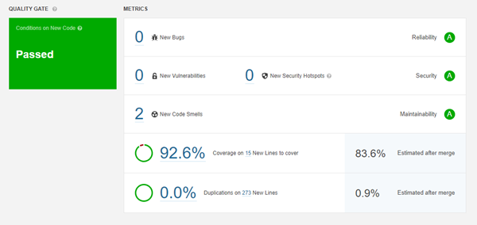
Pull Request Decoration
Você também pode adicionar uma decoração de solicitação de recebimento que mostra a análise de solicitação de recebimento e o Quality Gate diretamente na interface do ALM. Consulte Decoração de solicitações pull para obter mais informações sobre como configurá-lo.
Porta de qualidade de solicitação de solicitação
Um Quality Gate permite garantir que você esteja cumprindo a política de qualidade da sua organização e que possa mesclar sua solicitação de recebimento. O portão de qualidade de solicitação de recebimento:
- Concentra-se no novo código - O gate de qualidade Pull Request usa apenas as condições do gate de qualidade do seu projeto que se aplicam às métricas "no novo código".
- Atribui um status - Cada solicitação de recebimento mostra um status de portão de qualidade refletindo se passou ou falhou.
As análises Pull Request no SonarQube são excluídas automaticamente após 30 dias sem análise. Isso pode ser atualizado em Administração> Configuração> Configurações gerais> Serviço doméstico> Número de dias antes de remover ramificações inativas .
Parâmetros de análise
Esses parâmetros permitem a análise de relações públicas:
| Nome do parâmetro | Descrição |
|---|---|
sonar.pullrequest.key |
Identificador exclusivo
da sua solicitação de recebimento.
Deve corresponder à chave
da solicitação de recebimento no seu ALM.
por exemplo: sonar.pullrequest.key=5
|
sonar.pullrequest.branch |
O nome da ramificação que
contém as alterações a serem mescladas.
por exemplo: sonar.pullrequest.branch=feature/my-new-feature
|
sonar.pullrequest.base |
A ramificação na qual a
solicitação de recebimento será mesclada.
Padrão: master, por exemplo: sonar.pullrequest.base=master
|
Decoração de solicitações pull
A decoração Pull Request está disponível como parte da Developer Edition e acima .
Você pode adicionar a análise do SonarQube e um Quality Gate às suas solicitações de recebimento (PR) na interface do seu provedor de ALM.
A decoração Pull Request requer que uma análise do SonarQube seja executada em seu código. Você pode encontrar os parâmetros adicionais necessários para a análise de relações públicas na página Análise de relações públicas .
Decoração Pull Request pelo fornecedor
Clique no seu provedor de ALM abaixo para expandir as instruções sobre a configuração do SonarQube para decoração de solicitação de solicitação.
GitHub Enterprise e GitHub.com
Para o GitHub Enterprise, a versão mínima é 2.14
Criando um aplicativo GitHub
Você pode adicionar a decoração de solicitação de recebimento na guia Verificações do GitHub ou na guia Conversa . Para fazer isso, o administrador da instância deve primeiro criar um aplicativo GitHub:
- Siga as etapas 1 a 4 aqui para começar a criar seu aplicativo GitHub.
- Em Nome do aplicativo GitHub , atribua um nome ao seu aplicativo (como SonarQubePRChecks).
-
O GitHub requer um
URL da página inicial
e um
URL do Webhook
.
Esses valores não são
importantes para a decoração de solicitação de recebimento,
portanto você pode usar qualquer URL (como
https://www.sonarqube.org/). -
Conceda acesso às seguintes permissões
Permissão Acesso Verificações Ler escrever GitHub Enterprise: Metadados do repositório
GitHub.com: MetadadosSomente leitura Solicitações Pull Ler escrever Status de confirmação Somente leitura - Em "Onde esse aplicativo GitHub pode ser instalado?", Selecione Qualquer conta .
- Clique em Criar aplicativo GitHub . Isso levará você à página do seu novo aplicativo GitHub.
-
Role até a parte inferior
da página do aplicativo e clique em
Gerar chave privada
.
Isso baixa um
.pemarquivo que você usará na seção Definindo suas configurações globais .
Instalando seu aplicativo
Instale seu aplicativo GitHub na página de configurações do aplicativo. Veja as instruções do GitHub para mais informações.
Definindo suas configurações globais
Para definir suas configurações globais no SonarQube, navegue para Administração> Configuração> Configurações gerais> Integrações do ALM e selecione a guia GitHub .
A partir daqui, defina o Nome da configuração , o URL da instância do GitHub , o ID do aplicativo GitHub e a chave privada do aplicativo GitHub (que foi gerada acima na seção Criando um aplicativo GitHub ).
Nota: Verifique se o nome da configuração é sucinto e facilmente reconhecível, pois será usado no nível do projeto para identificar a configuração correta do ALM.
Definindo as configurações do seu projeto
Vá para Configurações do projeto> Configurações gerais> Decoração da solicitação de recebimento , selecione seu Nome da configuração e defina seu identificador de repositório .
Por padrão, Ativar resumo da análise na guia Conversa do GitHub está ativado e sua análise de solicitação de solicitação será mostrada nas guias Conversação e Verificações no GitHub. Desativar essa configuração fará com que a análise Pull Request seja mostrada apenas na guia Cheques .
Servidor Bitbucket
Servidor BitBucket mínimo versão 5.15
Uma conta de usuário do Bitbucket Server é usada para decorar solicitações de recebimento. Recomendamos o uso de uma conta dedicada do Bitbucket Server com permissões de administrador. Você precisa de um token de acesso pessoal desta conta com permissão de gravação para os repositórios que serão analisados.
Definindo suas configurações globais
Para definir suas configurações globais no SonarQube, navegue para Administração> Configuração> Configurações gerais> Integrações do ALM e selecione a guia Bitbucket Server .
A partir daqui, defina seu nome de configuração , URL do servidor Bitbucket e o token de acesso pessoal da conta que você está usando para decorar suas solicitações de recebimento.
Nota: Verifique se o nome da configuração é sucinto e facilmente reconhecível, pois será usado no nível do projeto para identificar a configuração correta do ALM.
Definindo as configurações do seu projeto
Projetos criados a partir de um repositório do Bitbucket Server
Se você criar um projeto Em um repositório do Bitbucket Server , o SonarQube define automaticamente as configurações do seu projeto para a decoração Pull Request. Você precisará fornecer um token de acesso pessoal da sua conta de usuário com permissões de leitura para projetos e repositórios. Este Token de Acesso Pessoal será armazenado no SonarQube até você revogá-lo no lado do Bitbucket Server.
Projetos criados manualmente
Se você criar um novo projeto manualmente ou desejar adicionar uma decoração de solicitação de recebimento a um projeto existente, defina as configurações do projeto em Configurações do projeto> Configurações gerais> Decoração de solicitação de solicitação . Aqui, você seleciona o nome da configuração e define a chave do projeto e o repo slug .
Mesclagem de solicitação pull de bloqueio
* A solicitação de bloqueio de mesclagem está disponível a partir da versão 6.9 do Bitbucket Server
Após configurar a análise de solicitação de recebimento, você pode impedir que as solicitações de recebimento sejam mescladas se elas não atenderem aos seus padrões de qualidade (se o Quality Gate estiver falhando). Para fazer isso:
- No Bitbucket Server, navegue até Configurações do repositório> Code Insights .
-
Adicione um relatório
Obrigatório chamado
com.sonarsource.sonarqube, selecione Deve passar como o status Necessário e Não deve ter nenhuma anotação como os requisitos de Anotação.
Servidor DevOps do Azure
Uma conta de usuário do Azure DevOps Server é usada para decorar solicitações de recebimento. Recomendamos o uso de uma conta dedicada do Azure DevOps Server com permissões de administrador. Você precisa de um token de acesso pessoal desta conta com o escopo autorizado para Código> Leitura e gravação para os repositórios que serão analisados.
Para adicionar uma decoração de solicitação de recebimento no Azure DevOps Server, você também precisa atualizar as configurações globais e do projeto.
Definindo suas configurações globais
Para definir suas configurações globais no SonarQube, navegue para Administração> Configuração> Configurações gerais> Integrações do ALM e selecione a guia Servidor do Azure DevOps .
A partir daqui, defina seu nome de configuração e o token de acesso pessoal da conta que você está usando para decorar suas solicitações de recebimento.
Nota: Verifique se o nome da configuração é sucinto e facilmente reconhecível, pois será usado no nível do projeto para identificar a configuração correta do ALM.
Definindo as configurações do seu projeto
Vá para Configurações do projeto> Configurações gerais> Decoração da solicitação de recebimento e selecione seu nome de configuração .
GitLab Autogerenciado e GitLab.com
Para o GitLab Autogerenciado, a versão mínima é 11.7
Uma conta de usuário do GitLab é usada para decorar solicitações de mesclagem. Recomendamos o uso de uma conta GitLab dedicada com pelo menos permissões de Reporter (a conta precisa de permissão para deixar comentários). Você precisa de um token de acesso pessoal desta conta com o escopo autorizado para a API para os repositórios que serão analisados.
Para adicionar a decoração Merge Request ao GitLab, você também precisa atualizar as configurações globais e do projeto.
Definindo suas configurações globais
Para definir suas configurações globais no SonarQube, navegue para Administração> Configuração> Configurações gerais> Integrações do ALM e selecione a guia GitLab .
A partir daqui, defina seu nome de configuração e o token de acesso pessoal da conta que você está usando para decorar suas solicitações de mesclagem. Se você estiver usando o GitLab CI para varrer seu projeto, poderá deixar o URL do GitLab em branco, pois ele será detectado automaticamente. Se você estiver usando uma ferramenta de IC diferente (por exemplo: Jenkins, Travis CI, etc.) ou executar a análise manualmente, forneça o URL base para a API do GitLab.
Nota: Verifique se o nome da configuração é sucinto e facilmente reconhecível, pois será usado no nível do projeto para identificar a configuração correta do ALM.
Definindo as configurações do seu projeto
Vá para Configurações do projeto> Configurações gerais> Decoração da solicitação de recebimento e selecione seu nome de configuração . Se você estiver usando o GitLab CI , poderá deixar a ID do projeto em branco, pois ela será detectada automaticamente. Se você estiver usando uma ferramenta de IC diferente (por exemplo: Jenkins, Travis CI, etc.) ou executar a análise manualmente, forneça o ID numérico do projeto.
Várias instâncias do ALM
É possível decorar solicitações de recebimento de várias instâncias do ALM. Para fazer isso, você pode criar uma configuração (como mostrado na seção anterior) para cada uma das suas instâncias do ALM. Essa configuração de instância pode ser atribuída aos projetos apropriados.
Como parte do Developer Edition , você pode criar uma configuração para cada ALM.
Como parte do Enterprise Edition e superior , você pode criar várias configurações para cada ALM.
Se você tiver várias configurações do Bitbucket Server conectadas ao SonarQube, não poderá usar a opção automática criar um novo projeto em um repositório do Bitbucket Server e precisará criar projetos manualmente.
Links de edições
Durante a decoração da solicitação de
recebimento, problemas individuais serão vinculados aos seus homólogos
do SonarQube automaticamente.
No entanto, para que isso funcione
corretamente, o
URL base
do
servidor
da instância
(
Administração>
Configuração> Configurações gerais> Geral> Geral
) deve estar definido corretamente.
Caso contrário, os links serão
padronizados para
localhost
.
Análise de Filiais
A análise de ramificação está disponível como parte da Developer Edition e acima .
Visão geral
Com o Branch Analysis, você pode garantir a manutenção da qualidade consistente do código até o nível do ramo de seus projetos.
Mestre / Filial Principal
Esse é o ramo padrão e normalmente corresponde ao que está sendo desenvolvido para sua próxima versão. Isso geralmente é conhecido dentro de uma equipe de desenvolvimento como "mestre" ou "chefe" e é analisado quando nenhum parâmetro de ramificação específico é fornecido. Ele é rotulado como "Ramificação principal" e o nome "mestre" é padronizado, mas pode ser renomeado nas configurações do projeto em Administração> Ramificações e solicitações de recebimento . Quando você está usando o Community Edition, esse é o único ramo que você vê.
Configurações e perfis de qualidade em filiais
As configurações da filial e os perfis de qualidade são os mesmos da filial principal e, por design, não é possível configurar outros valores. O período do novo código é a única exceção, pois pode ser definido ramo a ramo.
Novo período do código
Você pode definir um novo período de código para cada filial. Isso é especialmente útil se é provável que você desenvolva e libere várias versões da ramificação. Consulte a documentação do Novo período de código para obter mais informações sobre como definir um novo período de código.
Quality Gate
O Quality Gate da filial permite que você saiba se sua filial está pronta para ser mesclada. Cada filial tem um portão de qualidade que:
- Aplica-se às condições do Novo Código e do código geral.
- Atribui um status (Aprovado ou Reprovado).
Configurando a análise de ramificação
Uma ramificação é criada quando o
sonar.branch.name
parâmetro é passado durante a
análise.
| Nome do parâmetro | Descrição |
|---|---|
sonar.branch.name |
Nome da filial (visível na interface do usuário) |
Limitando a análise a ramificações relevantes
Você precisa adicionar uma condição ao seu script de pipeline para garantir que apenas ramificações relevantes sejam analisadas. Por exemplo, você não deseja executar análises em ramificações de recursos que não precisarão de análise até que tenham solicitações de recebimento.
No exemplo a seguir, a análise seria
limitada a ramificações nomeadas
master
ou
release/*
.
if [[ "$CI_BRANCH_NAME" == master ]] || [[ "$CI_BRANCH_NAME" == release/* ]]; then ./gradlew sonarqube fiCriação e sincronização de problemas
Durante a primeira análise, os problemas (tipo, gravidade, status, responsável, log de alterações, comentários) são sincronizados com a ramificação principal. Em cada problema sincronizado, um comentário é adicionado ao log de alterações do problema na ramificação: "O problema foi copiado da ramificação 'master' para a ramificação aaaa".
Em cada análise subseqüente da ramificação, qualquer novo problema proveniente de uma solicitação pull herda automaticamente os atributos (tipo, gravidade, ...) que o problema tinha na solicitação pull. Um comentário é adicionado ao log de alterações do problema na ramificação: "O problema foi mesclado de 'xxx' para 'aaaa'"
Buscando o histórico completo do Git
Por padrão, alguns ICs não buscam seu
histórico completo do Git.
Por exemplo, o TravisCI busca apenas
os últimos 50 commit de git.
Você deve usar
git fetch --unshallow
para obter o histórico completo.
Caso contrário, novos problemas podem
não ser atribuídos ao desenvolvedor correto.
Gerenciando ramificações inativas
Ramificações inativas são ramificações que não estão mais sendo analisadas. Você pode usar o Housekeeping para excluir automaticamente as ramificações que estão inativas (por exemplo, ramificações de recurso antigas) ou para manter as ramificações inativas que você deseja continuar mantendo (por exemplo, liberar ramificações).
Excluindo ramificações inativas
Você pode definir o número de dias em que uma ramificação pode ficar inativa antes de ser excluída nas configurações globais em Administração> Configurações gerais> Serviço doméstico> Número de dias antes de excluir ramificações inativas . As ramificações inativas pelo número de dias que você definir serão excluídas automaticamente.
Usando padrões para manter ramificações inativas
Você pode usar padrões de nomeação para proteger ramificações específicas, como ramificações de liberação, da exclusão automática. Para fazer isso, inclua um padrão usando expressões regulares Java em Administração> Configurações gerais> Serviço doméstico> Ramos> Ramos para manter quando inativo no nível global ou do projeto. Quando um ramo é criado com um nome que segue um desses padrões, ele é mantido indefinidamente.
Por exemplo, a adição do padrão
release/.*
manteria quaisquer ramificações
denominadas release / 6.0, release / 7 e assim por diante.
Nota: Os padrões não são retroativos e não se aplicam a ramificações que já foram criadas. Eles se aplicam apenas a ramificações criadas depois que o padrão é definido. Você pode proteger uma ramificação existente no nível do projeto. Veja a seção seguinte.
Gerenciando ramificações inativas no nível do projeto
Você pode definir uma ramificação para Manter quando inativa no nível do projeto, na guia Ramos em Configurações do projeto> Ramificações e solicitações de recebimento . Aqui, você também pode desativar a proteção de uma ramificação para que ela seja excluída quando estiver inativa pelo número de dias especificado nas configurações globais em Administração> Configurações gerais> Serviço doméstico> Número de dias antes de excluir ramificações inativas .
Nota: A ramificação principal está sempre protegida contra exclusão automática, mesmo que esteja inativa. Isso não pode ser alterado.
Perguntas frequentes sobre filiais
A análise de ramificação está disponível como parte da Developer Edition e acima .
Por quanto tempo as filiais são mantidas?
As ramificações serão excluídas automaticamente quando estiverem inativas, de acordo com as suas configurações em Administração> Configuração> Configurações gerais> Serviço doméstico> Número de dias antes de excluir ramificações inativas, exceto as ramificações que você definiu para serem mantidas quando inativas. Essas ramificações são mantidas até que você as exclua manualmente no nível do projeto em Configurações do projeto> Ramificações e solicitações de recebimento . Consulte a Análise de ramificações para obter mais informações sobre como manter ramificações inativas.
Meu projeto precisa ser armazenado em um SCM como Git ou SVN?
Não, você não precisa estar conectado a um SCM. No entanto, os dados do SCM ainda aprimoram a experiência do SonarQube (incluindo atribuição automática de problemas e atualização de problemas), e você estará bem preparado para tirar proveito da Análise de Solicitações Pull !
E se eu marcar um problema como "Não será corrigido" ou "Falso positivo" em uma ramificação?
Ele será replicado como tal ao criar uma solicitação pull e mesclar a solicitação pull na ramificação principal.
Posso excluir manualmente uma ramificação?
Você pode excluir uma ramificação na guia Ramificações em Configurações do projeto> Ramificações e solicitações de recebimento .
A carga útil do Webhook inclui informações de filial?
Sim, um nó extra chamado "ramificação" é adicionado à carga útil.
Quando os Webhooks são chamados?
Quando o cálculo da tarefa em segundo plano é feito para um determinado ramo.
Qual é o impacto no meu consumo de LOCs versus minha licença?
O LOC da sua maior filial é contabilizado no limite da sua licença. Todos os outros ramos são ignorados.
Visão geral
A análise de solicitação de mesclagem e recepção está disponível como parte da Developer Edition e acima .
O SonarScanners em execução no GitLab CI / CD e Jenkins pode detectar automaticamente ramificações e solicitações de mesclagem ou recepção usando variáveis de ambiente definidas nas tarefas.
Essa configuração automática será desativada se alguma propriedade de Solicitação de ramificação ou solicitação tiver sido definida manualmente.
Mantendo o histórico de ramificações "principal" ao atualizar do Community Edition para uma edição comercial
Na Community Edition, sua ramificação analisada é denominada "mestre" por padrão.
Ao atualizar para uma versão atual da edição comercial, a configuração automática de ramificação e solicitação de solicitação cria ramificações com base em seus nomes no seu repositório de códigos. Se o nome da sua filial principal (master) no SonarQube não corresponder ao nome da filial no seu repositório de códigos, o histórico da filial principal não será assumido pela filial que você analisa.
Antes de executar a análise , você pode manter seu histórico de ramificação renomeando a Ramificação principal no SonarQube com o nome da ramificação em seu repositório de código em Configurações do projeto> Ramificações e solicitações de recebimento .
Por exemplo, se sua Filial principal é denominada "master" no SonarQube, mas "desenvolve" em seu repositório de código, renomeie sua Filial principal "desenvolva" no SonarQube.
CI / CD do GitLab
- Para configuração do GitLab CI / CD, consulte GitLab CI / CD .
Jenkins
- Para a configuração do Jenkins, consulte Jenkins .
CI / CD do GitLab
A análise de solicitação de mesclagem está disponível como parte da Developer Edition e acima .
O SonarScanners em execução nos trabalhos de CI / CD do GitLab pode detectar automaticamente ramificações ou solicitações de mesclagem sendo construídas, para que você não precise passá-las especificamente como parâmetros para o scanner.
Você precisa desativar o git shallow clone para garantir que o scanner tenha acesso a todo o seu histórico ao executar a análise com o GitLab CI / CD. Para obter mais informações, consulte Git shallow clone .
Ativando compilações
Configure sua compilação de acordo com a edição do SonarQube, conforme descrito abaixo.
Edição da comunidade
Como o Community Edition não suporta
várias ramificações, você deve analisar apenas sua ramificação
principal.
Você pode restringir a análise à sua
filial principal adicionando o nome da filial ao
only
parâmetro
Developer Edition e acima
Por padrão, o GitLab criará todas as
ramificações, mas não as Solicitações de Mesclagem.
Para criar solicitações de mesclagem,
é necessário atualizar o
.gitlab-ci.yml
arquivo adicionando
merge_requests
ao
only
parâmetro
Veja as configurações de exemplo
abaixo para obter mais informações.
Falha no trabalho do pipeline quando o SonarQube Quality Gate falha
Para que o Quality Gate falhe no lado
do GitLab quando o Quality Gate falha no lado do SonarQube, o scanner
precisa aguardar o status do SonarQube Quality Gate.
Para habilitar isso, defina o
sonar.qualitygate.wait=true
parâmetro no
.gitlab-ci.yml
arquivo
Você pode definir a
sonar.qualitygate.timeout
propriedade para um período de tempo
(em segundos) que o scanner deve esperar pelo processamento de um
relatório.
O padrão é 300 segundos.
Veja as configurações de exemplo abaixo para obter mais informações.
Configurações de exemplo
As seguintes configurações de exemplo mostram como configurar a execução do SonarScanner for Gradle, SonarScanner for Maven e SonarScanner CLI com GitLab CI / CD.
Nas configurações de exemplo:
O
allow_failure
parâmetro permite que uma tarefa
falhe sem afetar o restante do conjunto de ICs.
As
variáveis
SONAR_TOKEN
e
SONAR_HOST_URL
estão incluídas.
Se você não tiver variáveis de
ambiente definidas para todas as compilações nas configurações do GitLab
(como mostrado em
Definindo variáveis de ambiente
para todas as compilações
abaixo), será necessário definir as
variáveis para passar um
token
e a URL do seu servidor SonarQube.
Clique no seu scanner abaixo para ver o exemplo de configuração:
SonarScanner for Gradle:
image: gradle:alpine variables: SONAR_TOKEN: "your-sonarqube-token" SONAR_HOST_URL: "http://your-sonarqube-instance.org" GIT_DEPTH: 0 sonarqube-check: stage: test script: gradle sonarqube -Dsonar.qualitygate.wait=true allow_failure: true only: - merge_requests - masterSonarScanner for Maven:
image: maven:latest variables: SONAR_TOKEN: "your-sonarqube-token" SONAR_HOST_URL: "http://your-sonarqube-url" GIT_DEPTH: 0 sonarqube-check: script: - mvn verify sonar:sonar -Dsonar.qualitygate.wait=true allow_failure: true only: - merge_requests - masterCLI do SonarScanner:
image: name: sonarsource/sonar-scanner-cli:latest entrypoint: [""] variables: SONAR_TOKEN: "your-sonarqube-token" SONAR_HOST_URL: "http://your-sonarqube-instance.org" GIT_DEPTH: 0 sonarqube-check: stage: test script: - sonar-scanner -Dsonar.qualitygate.wait=true allow_failure: true only: - merge_requests - master
Nota:
Uma chave do projeto deve
ser fornecida através
sonar-project.properties
ou através do parâmetro da
linha de comandos.
Para mais informações,
consulte a
documentação
do
SonarScanner
.
Configurando variáveis de ambiente para todas as construções
Em vez de especificar variáveis de
ambiente no seu
.gitlab-ci.yml
arquivo (como
SONAR_TOKEN
e
SONAR_HOST_URL
), você pode configurá-las com
segurança para todos os pipelines nas configurações do GitLab.
Consulte
Criando uma variável de ambiente
personalizada
para obter mais informações.
Para maiores informações
Para obter mais informações sobre como configurar sua compilação com o GitLab CI / CD, consulte a Referência de configuração de pipeline do GitLab CI / CD .
Jenkins
A análise Pull Request está disponível como parte da Developer Edition e acima .
Os SonarScanners em execução no Jenkins podem detectar automaticamente ramificações e solicitações de mesclagem ou recepção em determinadas tarefas.
Configurando trabalhos de pipeline de filial única
Com o Community Edition, você pode analisar apenas uma única ramificação. Para obter mais informações, consulte a documentação do SonarScanner for Jenkins .
Configurando trabalhos de pipeline de várias filiais
Com a Developer Edition e acima , você pode analisar várias ramificações e solicitações de recebimento. A Configuração automática depende de variáveis de ambiente disponíveis nos trabalhos do Pipeline Multibranch. Eles são definidos com base nas informações exportadas pelos plugins Jenkins. Dependendo do seu ALM fornecido, você precisará do plug-in BitBucket, GitHub ou GitLab Branch Source. Esse recurso é ativado por padrão em qualquer SonarScanner, mesmo que o SonarScanner for Jenkins não seja usado.
O exemplo a seguir mostra como configurar seu Pipeline Multibranch com o SonarScanner for Jenkins.
pipeline { agent none stages { stage("build & SonarQube analysis") { agent any steps { withSonarQubeEnv('your-sq-instance') { sh 'mvn clean package sonar:sonar' } } } } }Para mais exemplos, consulte a documentação do SonarScanner for Jenkins .
Detectando código alterado em solicitações de recebimento
O SonarScanners precisa acessar o ramo de destino de uma solicitação de recebimento para detectar alterações de código na solicitação de recebimento. Se você estiver usando uma estratégia de descoberta Jenkins Pull Request que busca apenas a solicitação pull e não se funde com a ramificação de destino, a ramificação de destino não é buscada e não está disponível no clone git local para o scanner ler.
Nesse caso, o código destacado como "novo" na solicitação de solicitação pode não ser exato e você verá o seguinte aviso no log do scanner:
File '[name]' was detected as changed but without having changed linesPara corrigir isso, altere a estratégia de descoberta ou busque manualmente o ramo de destino antes de executar o SonarScanner. Por exemplo:
git fetch +refs/heads/${CHANGE_TARGET}:refs/remotes/origin/${CHANGE_TARGET}Integração SCM
A coleta de dados do SCM durante a análise de código pode desbloquear vários recursos do SonarQube:
- Atribuição automática de emissão
- anotação de código (dados de culpa) no Code Viewer
- Detecção de novo código orientada por SCM (para ajudar com o Clean as You Code ). Sem os dados do SCM, o SonarQube determina o novo código usando as datas da análise (para registrar a modificação das linhas no timestamp).
A integração SCM requer suporte para seu provedor SCM individual. Git e SVN são suportados por padrão. Para outros fornecedores de SCM, consulte o Marketplace.
Se necessário, é possível desativá-lo em nível global, por meio de configurações de administração, e em nível de projeto, por meio de configurações de projeto.
Git
A integração do Git é suportada imediatamente com uma implementação Java pura, portanto não é necessário ter a ferramenta de linha de comando Git instalada na máquina em que a análise é realizada.
A detecção automática do Git durante
a análise ocorrerá se houver uma pasta .git no diretório raiz do projeto
ou em uma de suas pastas pai.
Caso contrário, você pode forçar o
provedor a usar
-Dsonar.scm.provider=git
.
É necessário um clone completo para
que essa integração possa coletar as informações de culpa necessárias
(consulte Problemas conhecidos).
Se um clone superficial for
detectado, um aviso será registrado e nenhuma tentativa será feita para
recuperar informações de culpa.
O plug-in usa JGit . O JGit é uma implementação Java pura do cliente Git.
Problemas conhecidos
- O Git não considera as antigas linhas "Mac" (CR) como novas linhas. Como resultado, a operação de culpa conterá menos linhas do que o esperado pelo SonarQube e a análise falhará. A solução é corrigir as extremidades da linha para usar as extremidades da linha Windows (CR / LF) ou Unix (LF).
- O JGit não suporta o arquivo .mailmap para "limpar" o endereço de email durante a culpa
- "Informações de falta de culpa ..." podem ser causadas pelo check-out com um clone parcial / superficial ou pelo uso de sub-módulos Git.
Como investigar erros durante a culpa (apenas possível no Unix / Linux)?
Se você receber um erro quando a culpa é executada em um arquivo, pode ser uma limitação ou um bug no JGit. Para confirmar, siga estas etapas:
- Faça o download da distribuição de linha de comando JGit independente
-
Tente executar o comando culpar
no arquivo incorreto:
chmod +x /path/to/org.eclipse.jgit.pgm-4.9.0.201710071750-r.sh /path/to/org.eclipse.jgit.pgm-4.9.0.201710071750-r.sh blame -w /path/to/offending/file - Se você receber o mesmo erro durante a análise, isso realmente parecerá um bug no JGit (especialmente se você não tiver um problema com a ferramenta de linha de comando nativa do git). Tente executar as etapas anteriores com a versão mais recente do JGit e relate todas as informações ao Fórum da comunidade SonarQube .
Subversão
A integração do Subversion é suportada imediatamente para o Subversion 1.6 a 1.9.x.
A detecção automática de SVN durante
a análise ocorrerá se houver uma
.svn
pasta em algum lugar na hierarquia
pai da raiz do projeto.
Caso contrário, você pode forçar o
provedor usando
-Dsonar.scm.provider=svn
na linha de comando da análise.
Problemas conhecidos
Se você receber erros como:
Caused by: org.tmatesoft.svn.core.SVNException: svn: E200007: Retrieval of mergeinfo unsupported by 'https://pmd.svn.sourceforge.net/svnroot/pmd/trunk/pmd/src/main/java/net/sourceforge/pmd/AbstractConfiguration.java';
Isso significa que o servidor SVN não
está anunciando o recurso 'mergeinfo'.
Você pode verificar os recursos
anunciados simplesmente conectando-se a ele:
telnet <svn_server> 3690
Geralmente, isso ocorre porque o
servidor SVN não é> = 1.5 ou o projeto não foi migrado corretamente
após uma atualização do servidor.
Também pode ser uma configuração
incorreta do servidor.
Você deve tentar executar o svnadmin upgrade no servidor . Para obter mais informações, leia https://subversion.apache.org/docs/release-notes/1.5.html#repos-upgrades .
Configuração personalizada do mecanismo de segurança
A Configuração Personalizada do Security Engine está disponível como parte da Enterprise Edition e acima .
O mecanismo de segurança rastreia o caminho que os dados seguem através do seu código. Ele detecta quando os dados potencialmente manipulados por um usuário mal-intencionado atingem um pedaço de código confidencial, onde um ataque pode ocorrer.
Esses dados potencialmente maliciosos também são chamados de dados contaminados , porque são contaminados pelas entradas do usuário.
O mecanismo de segurança do SonarQube já conhece muitas APIs que são fontes potenciais de ataque e APIs que são alvos potenciais de ataque. Embora façamos o possível para identificar APIs disponíveis publicamente, não podemos saber tudo sobre suas estruturas caseiras, principalmente quando se trata de higienizar seus dados. Por isso, o SonarQube permite que você personalize o mecanismo de segurança para adicionar suas próprias "fontes", "higienizadores", "passagens" e "sumidouros" (consulte a seção Elementos abaixo para obter mais informações sobre esses elementos).
Por exemplo, você pode querer:
- adicione uma fonte para adicionar suporte a uma estrutura que o SonarQube não cobre imediatamente
- use um desinfetante personalizado para informar ao mecanismo de segurança que todos os dados que passam pelos desinfetantes devem ser considerados seguros. Isso permite remover falsos positivos e adaptar o mecanismo de segurança à sua empresa.
Elementos
Você pode adicionar os seguintes elementos à sua configuração personalizada:
-
Origem
- Onde você obtém dados do
usuário.
Você sempre deve considerar os
dados do usuário contaminados e vulneráveis a ataques de injeção.
Exemplo: a chamada
HttpServletRequest#getParam("foo")retornará conteúdo contaminado - Sanitizer - localiza e remove conteúdo malicioso de dados contaminados.
- Passagem - Permite acompanhar dados corrompidos enviados para uma biblioteca fora da função atual. Quando você passa um valor contaminado para as funções de uma biblioteca fora da função atual, o SonarQube assume automaticamente que ele está sendo passado para um desinfetante. Se os dados contaminados não estiverem sendo transmitidos para um desinfetante, você poderá configurar uma passagem para acompanhar os dados.
-
Pia
- Um pedaço de código que pode
executar uma tarefa sensível à segurança.
Os dados não devem conter nenhum
conteúdo mal-intencionado quando chegarem ao coletor.
Exemplo: Executando uma Consulta
SQL com
java.sql.Statement#execute
Parâmetros de análise
Para personalizar o mecanismo de segurança SonarQube, você precisa alimentar os dados de configuração de segurança por meio de parâmetros fornecidos ao SonarScanners. Para fazer isso, você deve fornecer aos arquivos JSON o valor dos novos parâmetros de análise. Os parâmetros devem usar a seguinte sintaxe:
sonar.security.[ConfigType].[RuleRepository].[RuleKey]=[FileName]
O
ConfigType
valor pode ser um dos seguintes:
sourcessanitizerspassthroughssinks
O
RuleRepository
valor pode ser um dos seguintes:
javasecurity: se você deseja customizar o Java Security Enginephpsecurity: se você deseja personalizar o PHP Security Engineroslyn.sonaranalyzer.security.cs: se você deseja personalizar o C # Security Engine
O
RuleKey
valor pode ser um dos seguintes:
-
Para Java
- S3649 : Injeção de SQL
- S5131 : XSS
- S5146 : Redirecionamento aberto
- S5167 : Divisão de resposta HTTP
- S2083 : Injeção transversal de caminho
- S2078 : Injeção de LDAP
- S5145 : Injeção de toras
- S2076 : Injeção de comando do SO
- S2631 : Injeção RegExp
- S5144 : falsificação de solicitação do lado do servidor (SSRF)
- S2091 : Injeção XPath
- S5135 : Injeção de desserialização
- S5334 : Injeção de código
-
Para PHP
- S3649 : Injeção de SQL
- S5131 : XSS
- S5146 : Redirecionamento aberto
- S5167 : Divisão de resposta HTTP
- S2083 : Injeção transversal de caminho
- S2078 : Injeção de LDAP
- S5145 : Injeção de toras
- S2076 : Injeção de comando do SO
- S2631 : Injeção RegExp
- S5144 : falsificação de solicitação do lado do servidor (SSRF)
- S2091 : Injeção XPath
- S5135 : Injeção de desserialização
- S5334 : Injeção de código
- S5335 : Incluir injeção
-
Para c #
- S3649 : Injeção de SQL
- S5131 : XSS
- S5146 : Redirecionamento aberto
- S5167 : Divisão de resposta HTTP
- S2083 : Injeção transversal de caminho
- S2078 : Injeção de LDAP
- S5145 : Injeção de toras
- S2076 : Injeção de comando do SO
- S2631 : Injeção RegExp
- S5144 : falsificação de solicitação do lado do servidor (SSRF)
- S2091 : Injeção XPath
-
Para Python
- S3649 : Injeção de SQL
- S5146 : Redirecionamento aberto
- S5167 : Divisão de resposta HTTP
- S2083 : Injeção transversal de caminho
- S2078 : Injeção de LDAP
- S5145 : Injeção de toras
- S2076 : Injeção de comando do SO
- S5144 : falsificação de solicitação do lado do servidor (SSRF)
- S2091 : Injeção XPath
- S5135 : Injeção de Objeto
- S5334 : Injeção de código
A configuração funciona por regra. Não há como compartilhar a configuração entre regras.
Formato de arquivo
A configuração é fornecida através de arquivos JSON. Aqui está um arquivo JSON de amostra que ajuda a entender o formato JSON esperado.
Exemplo de formato de arquivo JSON para PHP
{ "sources": [ { "methodId": "My\\Namespace\\ClassName\\ServerRequest::getQuery" } ], "sanitizers": [ { "methodId": "str_replace" } ], "passthroughs": [ { "methodId": "rawurldecode", "args": [ 1 ] } ], "sinks": [ { "methodId": "mysql_query", "args": [ 1 ] }, { "methodId": "My\\Namespace\\SqlStatement::execute", "isMethodPrefix": true, // this is to say that all the methods starting with execute on the SqlStatement object will be considered "args": [ 0, 1 ] }, { "methodId": "My\\Namespace\\SqlStatement::run", "interval": { "fromIndex": 1 // every parameter from the number 1 will be considered } } ] }
O
args
é o índice do parâmetro que pode
receber uma variável contaminada.
O índice inicia:
1para uma chamada de função.0para uma chamada de método, indexe0a instância atual (this)
MethodId
Todas as configurações personalizadas
dependem da precisão do
methodIds
fornecido.
Para cada idioma, o formato do
methodId
é diferente.
MethodId para Java
O
methodId
formato é inspirado no bytecode.
A maneira mais fácil de obter um
methodId
é escrever um pedaço simples de
código Java, compilá-lo e depois olhar o bytecode gerado usando o
javap -c path_to.class
arquivo e transformá-lo um pouco.
Observar o seguinte exemplo da vida
real ajudará você a entender o formato.
Vamos imaginar que você deseja
declarar
org.rapidoid.jdbc.JdbcClient.execute(String sql, Object... args)
como um novo coletor (você não
precisa fazer isso porque o Rapidoid faz parte do que é coberto
imediatamente).
Escreva um pedaço simples de código chamando o método JdbcClient.execute (...). O código não precisa realmente fazer nada.
import org.rapidoid.http.Req; import org.rapidoid.jdbc.JdbcClient; public static void callJDBCMethods(Req req) { String tainted = req.param("TAINTED"); JdbcClient jdbc = JDBC.api(); dbc.execute(tainted, req); // Noncompliant }
Execute
javap -c
e localize a parte do bytecode
correspondente à chamada para
JdbcClient.execute
[...] org/rapidoid/jdbc/JdbcClient.execute:(Ljava/lang/String;[Ljava/lang/Object;)I [...]-
Substitua o
/nome no pacote por. -
Remova o
: -
Substitua a
.separação do nome da classe e do nome do método por uma#
O resultado
methodId
é:
org.rapidoid.jdbc.JdbcClient#execute(Ljava/lang/String;[Ljava/lang/Object;)IMethodId para PHP
O
methodId
pode ser:
- o nome de uma função PHP
-
o nome completo de um método
seguindo este formato:
namespace\\ClassName::methodName
Exemplo:
Symfony\\Component\\HttpFoundation\\Request::getUser
para o
getUser()
método do
Request
objeto fornecido por
Symfony
Nota:
methodId
deve estar relacionado a métodos ou
funções que fazem parte do escopo da análise.
Como recomendamos não analisar o
código das estruturas ao mesmo tempo em que você digitaliza seu próprio
código-fonte, definir métodos ou funções a partir das estruturas não
terá efeito.
Isso está relacionado ao fato de que
o mecanismo de segurança SonarQube precisa conhecer o tipo de tempo de
execução de cada variável.
O tipo não pode ser adivinhado quando
os objetos são criados pelas fábricas das estruturas.
Pronto para uso, o mecanismo de
segurança SonarQube suporta os principais tipos de Symfony e Laravel.
MethodId para C #
Se você deseja declarar o construtor
SqlCommand
pertencente ao espaço para nome
System.Data.SqlClient
como um coletor,
methodId
deve ser:
System.Data.SqlClient.SqlCommand.SqlCommand(string, System.Data.SqlClient.SqlConnection)Você só precisa fornecer o nome completo do método ou construtor, além dos tipos dos argumentos.
Desativar configuração principal
Você pode desativar a configuração principal por idioma ou regra usando o seguinte:
sonar.security.[ConfigType].[RuleRepository].noDefaultConfig=[true|false] sonar.security.[ConfigType].[RuleRepository].[RuleKey].noDefaultConfig=[true|false]Limpe enquanto codifica
O que é limpo ao codificar?
Clean as you code é uma abordagem à qualidade do código que elimina muitos dos desafios das abordagens tradicionais. Como desenvolvedor, você se concentra em manter altos padrões e em assumir responsabilidades especificamente no Novo Código em que está trabalhando. O SonarQube oferece as ferramentas que permitem definir altos padrões e ter orgulho em saber que seu código atende a esses padrões.
Foco no novo código
Com Clean as you code, seu foco está sempre no novo código (código que foi adicionado ou alterado no período do novo código) e para garantir que o código que você escreve hoje seja limpo e seguro.
O período do novo código pode ser definido em diferentes níveis (global, projeto e com Developer Edition e acima no nível da filial). Dependendo do nível em que o seu Novo Período de Código está definido, você pode alterar o ponto inicial do seu Período de Novo Código para se adequar à sua situação.
Para obter mais informações sobre o período do novo código e a configuração, consulte Configurando o novo período do código .
Responsabilidade pessoal
Com o Clean as You Code, você não é responsável pelo código de ninguém. Você possui a qualidade e a segurança do Novo Código em que está trabalhando hoje. Se você adicionar novos problemas, o SonarQube os atribuirá automaticamente para que você possa manter a qualidade no seu código.
Para obter mais informações sobre problemas e como eles são atribuídos, consulte a documentação de problemas .
Quality Gate
Seu Quality Gate é um conjunto de condições que informa se seu projeto está ou não pronto para liberação. Com a abordagem Clean as You Code, seu Quality Gate deve:
- Foco nas métricas do novo código - Quando o Quality Gate estiver definido para se concentrar nas métricas do novo código (como o Quality Gate integrado do Sonar), os novos recursos serão entregues de maneira limpa. Enquanto o seu portão de Qualidade estiver verde, seus lançamentos continuarão a melhorar.
- Definir e aplicar altos padrões - Quando os padrões são definidos e aplicados no Novo Código, você não se preocupa em atender a esses padrões no código antigo e limpar o código de outra pessoa. Você pode se orgulhar de cumprir altos padrões em seu código. Se um projeto não atender a esses altos padrões, ele não passará pelo Quality Gate e, obviamente, não estará pronto para ser lançado.
Para obter mais informações sobre o Quality Gates e verificar se o Quality Gate está aplicando seus padrões, consulte a documentação do Quality Gates .
Análise de solicitação pull
Você pode usar a análise e a decoração de solicitação de recebimento para garantir que seu código atenda aos seus padrões antes de mesclar. A análise Pull Request permite que você veja o Quality Gate do Pull Request na interface do usuário do SonarQube. Em seguida, você pode decorar suas solicitações de recebimento com problemas do SonarQube diretamente na interface do ALM.
Para obter mais informações sobre como configurar a análise e decoração de solicitação de recebimento, consulte a documentação de solicitação de recebimento.
Página do Projeto
A página inicial do projeto é o ponto de entrada de qualquer projeto mostrando:
- o status de liberabilidade do projeto
- o estado atual de sua qualidade
- a qualidade do que foi produzido desde o início de seu novo período de código .
A página do projeto responde a duas perguntas:
- posso liberar meu projeto hoje?
- caso contrário, o que devo melhorar para que o projeto passe pelo Quality Gate?
Posso liberar hoje?
Como o Quality Gate é a ferramenta mais poderosa para aplicar sua política de qualidade, a página começa com o status atual do Quality Gate do projeto. Se o projeto for aprovado, um simples verde claro será exibido.
Caso contrário, detalhes e detalhamento estarão imediatamente disponíveis para identificar rapidamente o que deu errado, com uma seção para cada condição de erro mostrando qual é o valor atual do projeto e qual deve ser. Como de costume, você poderá clicar nos valores atuais para acessar os detalhes.
O que devo corrigir primeiro?
Como a melhor maneira de melhorar a qualidade de um projeto é capturar e corrigir novos problemas antes que se tornem entrincheirados, a primeira visualização de um projeto é centrada no período do novo código, destacado em amarelo à direita da página inicial do projeto. A página do espaço do projeto mostra um resumo de alto nível das métricas críticas, os valores atuais e os valores do Novo Período de Código.
Logo abaixo das informações do Quality Gate, você tem o número de problemas antigos e novos nos domínios de confiabilidade e segurança e, em seguida, no domínio de manutenção. Clicar em qualquer figura da página o levará a uma visualização detalhada, na página Medidas ou na página Problemas.
A coisa mais importante que um desenvolvedor deve fazer é garantir que os novos problemas na parte amarela da tela sejam reconhecidos, revisados e corrigidos e garantir que o novo código seja coberto por testes para ajudar a evitar futuras regressões. Independentemente de quantos problemas foram introduzidos no passado ou da pouca cobertura geral de testes, o foco nos problemas adicionados recentemente garantirá que a situação não se degradará em relação à versão lançada anteriormente na produção.
Então, quais problemas você deve buscar primeiro: bugs, vulnerabilidades ou odores de código? Depende, porque a resposta depende da natureza dos seus problemas. Digamos que você tenha problemas para um bloco de código duplicado 5 vezes e, dentro desse bloco duplicado, você tenha 3 erros e 5 problemas de segurança. A melhor abordagem é provavelmente corrigir a duplicação primeiro e, em seguida, resolver os bugs e vulnerabilidades no local recentemente centralizado, em vez de corrigi-los 5 vezes.
É por isso que você precisa revisar seus novos problemas antes de resolvê-los.
Como posso ...
Como posso ver as medidas do projeto em um nível inferior?
O item de menu Medidas no nível do projeto leva você a um subespaço dedicado, onde você vê todas as medidas do projeto. Escolha uma medida para mais detalhes. As visualizações de lista e de árvore estão disponíveis para cada medida e os mapas de árvore estão disponíveis para porcentagens e classificações.
Como posso ver todos os problemas em um projeto?
O
item de menu
Problemas no
nível do projeto
leva você a uma página de Problemas
específicos do projeto, onde é possível executar as mesmas ações que
você pode realizar no nível superior.
Nesta página, você pode restringir
facilmente a lista aos Novos Problemas introduzidos durante o Novo
Período de Código, selecionando
New Code
na
faceta
Data de Criação
.
Como posso ver a estrutura e o código do projeto?
O item de menu Código no nível do projeto leva você a um esboço da estrutura do seu projeto. Faça uma busca detalhada para ver os arquivos em um diretório e escolha um arquivo para ver seu código.
Se o seu projeto for muito grande para facilitar a exploração via perfuração, o recurso de pesquisa nesta página ajudará. Enquanto a pesquisa global no menu principal retorna resultados de toda a instância do SonarQube, a pesquisa localizada na página de códigos é restrita a arquivos e diretórios no projeto atual.
Como posso ver a atividade / histórico do projeto?
O item de menu Atividade no nível do projeto leva você à lista completa de verificações de código executadas no seu projeto desde que ele foi criado no SonarQube. Ao ir para lá, você pode acompanhar a evolução do Quality Gate, ver as alterações dos perfis de qualidade e saber quando uma determinada versão do seu código foi digitalizada.
Como posso identificar facilmente os riscos em um projeto?
As visualizações permitem comparar os componentes do projeto e identificar rapidamente os que representam os maiores riscos. A página Atividade oferece várias visualizações predefinidas e você também pode criar visualizações personalizadas com as métricas de sua escolha.
Como posso promover a saúde do meu projeto para os colegas?
Se o seu projeto estiver visível publicamente, você poderá promover ainda mais seu status em ferramentas e sites externos usando Crachás de Projeto nativos. O botão Obter emblemas do projeto na página inicial de um projeto público permite escolher / ajustar seu crachá e fornecer o URL para ele.
Formulários
Os aplicativos estão disponíveis como parte da Enterprise Edition e acima .
Usando aplicativos
Um aplicativo é uma agregação de projetos em um projeto sintético. Suponha que você tenha um conjunto de projetos que foram divididos por motivos técnicos, mas que compartilham um ciclo de vida; eles interagem diretamente na produção e são sempre liberados juntos. Com um Aplicativo, eles podem ser tratados como uma única entidade no SonarQube com uma Página inicial do projeto unificada, lista de problemas, espaço de medidas e, o mais importante: Quality Gate.
Aplicações vs. Portfólios
Aplicativos e portfólios são agregações de projetos, mas eles têm objetivos diferentes e, portanto, apresentações diferentes. Um portfólio é projetado para ser um executivo de alto nível, que mostra como um pacote de projetos que podem ser relacionados apenas tangencialmente está funcionando com qualidade e quais são as tendências. Os aplicativos permitem que você veja seu conjunto de projetos como um meta-projeto geral maior.Por exemplo, porque todos os projetos em um aplicativo são enviados juntos, se um deles não é liberável, nenhum deles é, e o Quality Gate consolidado do aplicativo fornece um resumo imediato do que deve ser corrigido em todos os projetos para permitir que você libere o conjunto.
Configuração do aplicativo
Os aplicativos são criados e editados na interface de administração global do Portfólio: Administração> Configuração> Portfólios . Para mais informações, consulte Gerenciando aplicativos . Os aplicativos devem ser criados inicialmente por um usuário com direitos de administração global, mas após a configuração, a administração de um Aplicativo individual pode ser delegada a outros usuários.
Preenchendo dados do aplicativo
Um Aplicativo é recalculado automaticamente após cada análise de um de seus projetos. Se você deseja um (re) cálculo imediato, um usuário com direitos de administração no Aplicativo pode usar o botão Recomputar na interface Configurações do aplicativo no nível do aplicativo> Editar definição . A interface de administração global do Portfólio: Administração> Configuração> Portfólios oferece a capacidade de enfileirar o recálculo de todos os Aplicativos e Portfólios de uma só vez.
Aplicações e Análise de Filiais
As ramificações estão disponíveis para aplicativos. Eles permitem agregar ramificações dos projetos em um Aplicativo.
Nota: Evite adicionar ramificações ao seu aplicativo que serão excluídas para evitar problemas com o status do seu Aplicativo.
Depois que um aplicativo é configurado, qualquer pessoa com direitos de administração no aplicativo pode criar manualmente uma nova ramificação na interface Configurações do aplicativo> Editar definição . As ramificações também podem ser gerenciadas na interface global Administração> Configuração> Portfólios . Para cada ramificação do aplicativo, você pode escolher qual ramificação do projeto deve ser incluída ou se o projeto deve ser representado na ramificação.
Portfólios
Os portfólios estão disponíveis como parte da Enterprise Edition e acima .
Página inicial de portfólios
A home page do portfólio é o local central para os gerentes e os líderes de tecnologia ficarem de olho na possibilidade de liberação dos projetos sob sua supervisão. A liberação é baseada no portal de qualidade do projeto: Passado é liberável e Falha não. Cada home page do portfólio oferece uma visão agregada da capacidade de liberação de todos os projetos no portfólio.
Na parte superior da página, você pode ver facilmente se o portfólio geral está classificado como liberável no momento e se algum projeto no portfólio falhou em seu Quality Gate. E as classificações Confiabilidade, Vulnerabilidades de segurança, Revisão de segurança e Manutenção mostram a integridade geral do portfólio nesses três domínios, juntamente com um indicador do (s) projeto (s) com pior desempenho em cada domínio.
Para cada domínio, você verá:
- a classificação (consulte Definições de métricas para obter mais detalhes sobre como elas são calculadas)
- um indicador de quando a classificação foi alterada pela última vez
- um indicador do (s) projeto (s) com pior desempenho no domínio
Classificação de Liberabilidade
A classificação de Releasability é a proporção de projetos no portfólio que possuem um Passed Quality Gate:
A
:> 80%
B
:> 60%
C
:> 40%
D
:> 20%
E
: <= 20%
Confiabilidade, Vulnerabilidades de Segurança, Revisão de Segurança e Classificações de Manutenção
As classificações de Confiabilidade, Vulnerabilidades de Segurança, Revisão de Segurança e Manutenção de um Portfólio são calculadas como a média das classificações de todos os projetos incluídos no Portfólio.
O SonarQube converte a classificação de letras de cada projeto em um número (consulte a tabela de conversão abaixo), calcula um número médio para os projetos no portfólio e converte essa média em uma classificação de letras. As médias que terminam com 0,5 são arredondadas para cima, resultando na "menor" das duas classificações possíveis, de modo que uma média de 2,5 seria arredondada para 3 e resultaria em uma classificação "C").
Isso fornece uma medida de "densidade de problemas" nos quatro eixos de Confiabilidade, Vulnerabilidades de Segurança, Revisão de Segurança e Manutenção do seu Portfólio.
Conversão de classificação:
E
: 5
D
: 4
C
: 3
B
: 2
A
: 1
Nota: a Página Inicial do Portfólio também está disponível no nível do Sub-Portfólio
Relatório PDF do portfólio
Em uma página inicial do portfólio, é possível fazer o download de um PDF "> do portfólio, selecionando Download como PDF no menu suspenso" Relatório do PDF do portfólio ", no canto superior direito. Isso é realmente conveniente, por exemplo, se você quiser em uma reunião em que você pode não ter acesso à sua instância do SonarQube.
Você pode se inscrever para receber um PDF por e-mail, selecionando Inscrever -se no menu suspenso "Relatório PDF do portfólio". Você pode definir a frequência do relatório nos níveis global e de portfólio como diário , semanal ou mensal . A frequência padrão é mensal.
Nota: Você receberá o PDF apenas se o Portfólio for calculado.
Os portfólios são criados e editados na interface de administração global do Portfólio: Administração> Configuração> Portfólios . Para obter mais informações, consulte Gerenciando portfólios .
Problemas
Ao executar uma análise, o SonarQube levanta um problema toda vez que um pedaço de código quebra uma regra de codificação. O conjunto de regras de codificação é definido por meio do perfil de qualidade associado a cada idioma no projeto.
Tipos de problema
Existem três tipos de problemas:
- Bug - Um erro de codificação que interrompe seu código e precisa ser corrigido imediatamente.
- Vulnerabilidade - um ponto do seu código aberto a ataques.
- Cheiro de código - um problema de manutenção que torna seu código confuso e difícil de manter.
Gravidade do problema
Cada problema possui uma das cinco gravidades:
-
BLOCKER
Bug com alta probabilidade de afetar o comportamento do aplicativo em produção: vazamento de memória, conexão JDBC não fechada, .... O código DEVE ser corrigido imediatamente. -
CRÍTICO
Um bug com baixa probabilidade de afetar o comportamento do aplicativo em produção ou um problema que represente uma falha de segurança: bloco de captura vazio, injeção de SQL, ... O código DEVE ser revisado imediatamente. -
MAJOR Falha de
qualidade que pode impactar bastante a produtividade do desenvolvedor: código descoberto, blocos duplicados, parâmetros não utilizados, ... -
MENOR Falha na
qualidade que pode afetar um pouco a produtividade do desenvolvedor: as linhas não devem ser muito longas, as instruções "switch" devem ter pelo menos três casos, ... -
INFORMAÇÕES
Nem um bug nem uma falha de qualidade, apenas uma descoberta.
Idealmente, a equipe não apresentaria novos problemas (nenhuma nova dívida técnica). O SonarLint pode ajudar os desenvolvedores porque fornece a capacidade de executar análises locais para verificar seu código antes de enviá-lo de volta ao SCM. Mas na vida real, nem sempre é possível codificar sem nenhuma nova dívida técnica e, às vezes, não vale a pena.
Então, novos problemas são introduzidos.
Entendendo o contexto do problema
Às vezes, os problemas são evidentes
quando são apontados.
Por exemplo, se sua equipe concordou
com uma convenção de nomenclatura variável init-lower, camelCase, e um
problema foi levantado
My_variable
, você não precisa de muito contexto
para entender o problema.
Mas, em outras situações, o contexto
pode ser essencial para entender por que um problema foi levantado.
É por isso que o SonarQube suporta
não apenas o local principal do problema, onde a mensagem é exibida, mas
também os locais secundários.
Por exemplo, os locais de problemas
secundários são usados para marcar os trechos de código em um método
que adiciona Complexidade Cognitiva a um método.
Mas há momentos em que uma lista simples de locais contribuintes não é suficiente para entender um problema. Por exemplo, quando um ponteiro nulo pode ser desreferenciado em alguns caminhos através do código, o que você realmente precisa são fluxos de problemas. Cada fluxo é um conjunto de locais secundários ordenados para mostrar o caminho exato através do código no qual um problema pode ocorrer. E como pode haver vários caminhos através do código no qual, por exemplo, um recurso não é liberado, o SonarQube suporta múltiplos fluxos.
Ciclo de vida dos problemas
Status
Após a criação, os problemas fluem por um ciclo de vida, assumindo um dos cinco status possíveis:
- Aberto - definido pelo SonarQube para novas edições
- Confirmado - defina manualmente para indicar que o problema é válido
- Resolvido - defina manualmente para indicar que a próxima análise deve fechar o problema
- Reaberto - definido automaticamente pelo SonarQube quando um problema resolvido não foi realmente corrigido
- Fechado - definido automaticamente pelo SonarQube para problemas criados automaticamente.
Resoluções
Questões fechadas terão uma de duas resoluções:
- Corrigido - definido automaticamente quando uma análise subsequente mostra que o problema foi corrigido ou o arquivo não está mais disponível (removido do projeto, excluído ou renomeado)
- Removido - defina automaticamente quando a regra relacionada não estiver mais disponível. A regra pode não estar disponível porque foi removida do Perfil de qualidade ou porque o plug-in subjacente foi desinstalado.
Os problemas resolvidos terão uma de duas resoluções:
- Positivo falso - definido manualmente
- Não será corrigido - definido manualmente
Emitir fluxo de trabalho
Os problemas são fechados automaticamente (status: Fechado) quando:
- um problema (de qualquer status) foi corrigido corretamente => Resolução: corrigida
- um problema não existe mais porque a regra de codificação relacionada foi desativada ou não está mais disponível (por exemplo: o plug-in foi removido) => Resolução: removida
Os problemas são reabertos automaticamente (status: Reaberto) quando:
- um problema que foi resolvido manualmente como corrigido (mas a resolução não é falsa positiva) é mostrado por uma análise subsequente ainda existir
Entendendo quais problemas são "novos"
Para determinar a data de criação de um problema, um algoritmo é executado durante cada análise para determinar se um problema é novo ou se existia anteriormente. Esse algoritmo depende de hashes de conteúdo (excluindo espaço em branco) para a linha na qual o problema foi relatado. Para problemas de várias linhas, o hash da primeira linha é usado. Para cada arquivo (após a detecção da renomeação de arquivos), o algoritmo pega a lista base de problemas da análise anterior e tenta corresponder esses problemas à lista de problemas brutos relatada pela nova análise. O algoritmo tenta corresponder primeiro usando a evidência mais forte e depois volta a heurísticas mais fracas.
- se o problema estiver na mesma regra, com o mesmo número de linha e com o mesmo hash de linha (mas não necessariamente com a mesma mensagem)> MATCH
- detectar bloco mover dentro do arquivo, se o problema estiver na mesma linha (movida) e na mesma regra (mas não necessariamente com a mesma mensagem)> MATCH
- na mesma regra, com a mesma mensagem e com o mesmo hash de linha (mas não necessariamente com a mesma linha)> MATCH
- na mesma regra, com a mesma mensagem e com o mesmo número de linha (mas não necessariamente com o mesmo hash de linha)> MATCH
- na mesma regra e com o mesmo hash de linha (mas não a mesma mensagem e não a mesma linha)> MATCH
- existe um problema FECHADO correspondente > MATCH e reabrir
Problemas "base" incomparáveis são fechados como corrigidos.
Problemas "brutos" incomparáveis são novos.
Noções básicas sobre backdating de problemas
Depois que um problema é considerado "novo", como descrito acima, a próxima pergunta é qual a data a ser apresentada. Por exemplo, e se ele existir no código há muito tempo, mas somente encontrado na análise mais recente porque novas regras foram adicionadas ao perfil? Esse problema deve receber a data da última alteração em sua linha ou a data da análise em que foi levantada pela primeira vez? Ou seja, deve ser datado? Se a data da última alteração na linha estiver disponível (isso requer integração do SCM ), em determinadas circunstâncias, o problema será retroatualizado:
- Na primeira análise de um projeto ou filial
- Quando a regra é nova no perfil (uma regra totalmente nova ativada ou uma regra que foi desativada e agora está ativada)
- Quando o analisador acaba de ser atualizado (porque as implementações de regras podem ser mais inteligentes agora)
- Quando a regra é externa
Como conseqüência, é possível que a data de atualização mantenha as questões recém-levantadas fora do período do novo código.
Atribuição automática de emissão
Para bug, vulnerabilidade e cheiro de código
Novos problemas são atribuídos automaticamente durante a análise ao último emissor na linha de problema, se o emissor puder ser correlacionado com um usuário do SonarQube. Observe que, atualmente, problemas em qualquer nível acima de um arquivo, por exemplo, diretório / projeto, não podem ser atribuídos automaticamente.
Correlação de Usuário
As correlações de login e email são feitas automaticamente. Ou seja, se o usuário confirmar com seu endereço de email e esse endereço fizer parte do perfil do SonarQube, novos problemas surgidos nas linhas em que ela foi o último comunicador serão automaticamente atribuídos a ela.
Correlações adicionais podem ser feitas manualmente no perfil do usuário (consulte "Contas SCM" em Autorização para obter mais informações).
Limitação conhecida
Se o login do SCM associado a um problema tiver mais de 255 caracteres permitidos para um autor do problema, o autor será deixado em branco.
Edições da edição
O fluxo de trabalho de problemas do SonarQube pode ajudá-lo a gerenciar seus problemas. Há sete coisas diferentes que você pode fazer em um problema (além de corrigi-lo no código!): Comentar, Atribuir, Confirmar, Alterar gravidade, Resolver, Não consertar e Falso positivo.
Essas ações se dividem em três categorias diferentes. Primeiro, a categoria "revisão técnica".
Revisao Tecnica
As ações Confirmar, Falso Positivo, Não Corrigir, Alteração de Gravidade e Resolução se enquadram nessa categoria, que pressupõe uma revisão inicial de um problema para verificar sua validade. Suponha que é hora de revisar a dívida técnica adicionada no último período de revisão - seja um dia, uma semana ou um sprint inteiro. Você passa por cada nova edição e faz uma:
- Confirmar - Ao confirmar um problema, você está basicamente dizendo "Sim, isso é um problema". Isso o tira do status "Aberto" para "Confirmado".
- Falso positivo - Olhando para o problema no contexto, você percebe que, por qualquer motivo, esse problema não é realmente um problema. Então, marque-o como falso positivo e siga em frente. Requer a permissão Administrar problemas no projeto.
- Não será corrigido - olhando para o problema no contexto, você percebe que, embora seja um problema válido, ele não precisa ser corrigido. Em outras palavras, representa dívida técnica aceita. Então, marque-o Não corrige e siga em frente. Requer a permissão Administrar problemas no projeto.
- Alteração de gravidade - este é o meio termo entre as duas primeiras opções. Sim, é um problema, mas não é tão ruim quanto a gravidade padrão da regra parece ser. Ou talvez seja realmente muito pior. De qualquer forma, você ajusta a gravidade do problema para alinhá-lo ao que você acha que merece. Requer a permissão Administrar problemas no projeto.
- Resolver - Se você acha que resolveu um problema em aberto, pode resolvê-lo. Se você estiver certo, a próxima análise a moverá para o status fechado. Se você estiver errado, seu status será reaberto.
Se você costuma marcar muitos problemas como Falso Positivo ou Não Consertará, significa que algumas regras de codificação não são apropriadas para o seu contexto. Portanto, você pode desativá-las completamente no perfil de qualidade ou usar exclusões de problemas para restringir o foco das regras para que elas não sejam usadas em partes específicas (ou tipos de objetos) do seu aplicativo. Da mesma forma, fazer muitas alterações de severidade deve solicitar a atualização das severidades da regra nos seus perfis.
À medida que você edita os problemas, as métricas relacionadas (por exemplo, Novos Bugs) serão atualizadas automaticamente, assim como o status do Quality Gate, se relevante.
Disposição
Depois que os problemas passam pela revisão técnica, é hora de decidir quem os negociará. Por padrão, eles são atribuídos ao último committer na linha do problema (no momento em que o problema é levantado), mas você pode certamente atribuí-los a você ou a outra pessoa. O responsável receberá uma notificação por e-mail da tarefa se ele se inscrever para receber notificações, e a tarefa será exibida em todos os lugares em que o problema for exibido, inclusive na lista Meus problemas no espaço Minha conta.
Geral
A qualquer momento durante o ciclo de vida de um problema, você pode registrar um comentário. Os comentários são exibidos nos detalhes do problema em um log em execução. Você tem a capacidade de editar ou excluir os comentários que fez.
Você também pode editar as tags de um problema. Os problemas herdam as marcas das regras que as criaram, mas a marca definida em um problema é totalmente editável. As tags podem ser criadas, adicionadas e removidas à vontade para usuários com a permissão Browse no projeto.
Embora eles sejam herdados inicialmente da regra relevante, as tags em um problema não são sincronizadas com a regra, portanto, adicionar tags a uma regra não adicionará essas tags aos problemas da regra.
Alteração em massa
Todas essas alterações e mais podem ser feitas em vários problemas de uma só vez, usando a opção Alteração em massa no painel de resultados da pesquisa de problemas.
Eliminando problemas fechados
Por padrão, os problemas fechados são mantidos por 30 dias. Para mais detalhes, consulte Tarefas domésticas .
Pontos de acesso de segurança
O que é um ponto de acesso de segurança?
Um ponto de acesso de segurança destaca um código sensível à segurança que o desenvolvedor precisa revisar. Após a revisão, você descobrirá que não há ameaça ou precisará aplicar uma correção para proteger o código.
Outra maneira de observar pontos de acesso pode ser o conceito de defesa em profundidade, no qual várias camadas de proteção redundantes são colocadas em um aplicativo, para que ele se torne mais resiliente no caso de um ataque.
Vulnerabilidade ou Hotspot?
A principal diferença entre um ponto de acesso e uma vulnerabilidade é a necessidade de uma revisão antes de decidir se deve aplicar uma correção:
- Com um Hotspot, um trecho de código sensível à segurança é destacado, mas a segurança geral do aplicativo pode não ser afetada. Cabe ao desenvolvedor revisar o código para determinar se é necessária uma correção ou não para proteger o código.
- Com uma vulnerabilidade, foi descoberto um problema que afeta a segurança do aplicativo que precisa ser corrigido imediatamente.
Um exemplo é o RSPEC-2092, em que o uso do sinalizador seguro de cookie é recomendado para impedir o envio de cookies por conexões não HTTPS, mas é necessária uma revisão porque:
- O HTTPS é a principal proteção contra ataques MITM e, portanto, o sinalizador seguro é apenas uma proteção adicional no caso de algumas falhas na segurança da rede.
- O cookie pode ser projetado para ser enviado a qualquer lugar (sites que não sejam HTTPS incluídos) porque é um cookie de rastreamento ou similar.
Com os hotspots, tentamos dar alguma liberdade aos usuários e educá-los sobre como escolher as proteções mais relevantes / apropriadas, dependendo do contexto (orçamento, ameaças, etc.).
Por que os pontos de acesso de segurança são importantes?
Embora a necessidade de corrigir pontos de acesso individuais dependa do contexto, você deve ver os pontos de acesso de segurança como uma parte essencial para melhorar a robustez de um aplicativo. Quanto mais pontos de acesso fixos houver, mais seguro será o seu código no caso de um ataque. A análise de pontos de acesso de segurança permite:
- Entenda o risco - Entenda quando e por que você precisa aplicar uma correção para reduzir um risco à segurança da informação (ameaças e impactos).
- Identificar proteções - Ao revisar pontos de acesso, você verá como evitar a gravação de código em risco, determinar quais correções estão em vigor e determinar quais correções ainda precisam ser implementadas para corrigir o código destacado.
- Identificar impactos - Com os pontos ativos, você aprenderá como aplicar correções para proteger seu código com base no impacto na segurança geral do aplicativo. As práticas recomendadas de codificação segura estão incluídas na página Pontos de acesso para ajudá-lo durante sua revisão.
Ciclo da vida
Os pontos de acesso de segurança têm um ciclo de vida dedicado. Para fazer alterações de status, o usuário precisa da permissão Administrar pontos de acesso de segurança . Esta permissão está ativada por padrão. Os usuários com permissão de Navegação podem comentar ou alterar o usuário atribuído a um Hotspot de segurança.
Status
Durante o ciclo de vida, um ponto de acesso de segurança assume um dos seguintes status:
- Para revisar - o status padrão dos novos pontos de acesso de segurança definidos pelo SonarQube. Um ponto de acesso de segurança foi relatado e precisa ser verificado.
- Analisado - um desenvolvedor avaliou manualmente o Security Hotspot e decidiu se aplica ou não uma correção.
Fluxo de trabalho
Siga este fluxo de trabalho para revisar os pontos de acesso de segurança e aplicar as correções necessárias para proteger seu código.
Prioridade de revisão
Quando o SonarQube detecta um ponto de acesso de segurança, ele é adicionado à lista de pontos de acesso de segurança de acordo com a prioridade de revisão de alto para baixo. Os pontos de acesso com alta prioridade de revisão são os que mais provavelmente contêm códigos que precisam ser protegidos e requerem sua atenção primeiro.
A prioridade de revisão é determinada pela categoria de segurança de cada regra de segurança. As regras em categorias com classificação alta nos padrões OWASP Top 10 e CWE Top 25 são consideradas com alta prioridade de revisão. Regras em categorias que não são classificadas como altas ou não são mencionadas nos padrões OWASP Top 10 ou CWE Top 25 são classificadas como Média ou Baixa.
Revendo pontos de acesso
Ao revisar um ponto de acesso, você deve:
- Revise a guia Qual é o risco para entender por que o Hotspot de segurança foi gerado.
- Na guia Você está em risco , leia a seção Pergunte a si mesmo se para determinar se você precisa aplicar uma correção para proteger o código destacado no Hotspot.
- Na guia Como você pode corrigi-lo , siga as Práticas recomendadas de codificação segura para corrigir seu código, se você tiver determinado que não é seguro.
Depois de seguir estas etapas, defina o Hotspot de segurança como um dos seguintes:
- Corrigido - se você aplicou uma correção para proteger o código destacado pelo Hotspot.
- Seguro - se o código já estiver seguro e não precisar ser corrigido. (por exemplo, outras proteções mais relevantes já estão em vigor).
- Precisa de revisão adicional - se precisar da revisão de outro usuário.
Revisar Histórico
A guia Histórico da revisão mostra o histórico do ponto de acesso de segurança, incluindo o status ao qual ele foi atribuído e quaisquer comentários que o revisor teve sobre o ponto de acesso.
Regras
Visão geral
No SonarQube, os analisadores contribuem com regras executadas no código fonte para gerar problemas. Existem quatro tipos de regras:
- Cheiro de código (domínio de manutenção)
- Bug (domínio de confiabilidade)
- Vulnerabilidade (domínio de segurança)
- Ponto de acesso de segurança (domínio de segurança)
Para odores e erros de código, são esperados zero falsos positivos. Pelo menos esse é o objetivo, para que os desenvolvedores não precisem se perguntar se é necessária uma correção.
Para as vulnerabilidades, o objetivo é fazer com que mais de 80% dos problemas sejam verdadeiros positivos.
As regras de ponto de acesso de segurança chamam a atenção para códigos sensíveis à segurança. Espera-se que mais de 80% dos problemas sejam resolvidos rapidamente como "Revisados" após a revisão por um desenvolvedor.
A página Regras é o ponto de entrada onde você pode descobrir todas as regras existentes ou criar novas com base nos modelos fornecidos.
Regras
Por padrão, ao inserir o item de menu superior "Regras", você verá todas as regras disponíveis trazidas pelos analisadores instalados na sua instância do SonarQube. Você pode restringir a seleção com base nos critérios de pesquisa no painel esquerdo:
- Idioma : o idioma ao qual uma regra se aplica.
- Tipo : Regras de bug, vulnerabilidade, cheiro de código ou ponto de acesso de segurança.
- Tag : é possível adicionar tags às regras para classificá-las e ajudar a descobri-las mais facilmente.
- Repositório : o mecanismo / analisador que contribui com regras para o SonarQube.
- Gravidade padrão : a gravidade original da regra - conforme definido pelo analisador que contribui com essa regra.
-
Status : as regras podem ter três status diferentes:
- Beta : a regra foi implementada recentemente e ainda não recebemos comentários suficientes dos usuários, portanto, pode haver falsos positivos ou negativos.
- Descontinuado : a regra não deve mais ser usada porque existe uma regra semelhante, mas mais poderosa e precisa.
- Pronto : a regra está pronta para ser usada na produção.
- Disponível desde : data em que uma regra foi adicionada pela primeira vez no SonarQube. Isso é útil para listar todas as novas regras desde a última atualização de um plug-in, por exemplo.
- Modelo : exibe modelos de regra que permitem criar regras personalizadas (veja mais adiante nesta página).
- Perfil de qualidade : inclusão ou exclusão de um perfil específico
Se um perfil de qualidade for selecionado, também é possível verificar sua gravidade ativa e se ele é herdado ou não. Consulte a documentação do perfil de qualidade para obter mais informações.
Detalhes da regra
Para ver os detalhes de uma regra, clique nela ou use a tecla de seta à direita. Junto com os dados básicos das regras, você também poderá ver em quais perfis, se houver algum, está ativo e quantos problemas em aberto foram levantados com ele.
As ações a seguir estão disponíveis apenas se você tiver as permissões corretas ("Administrar perfis e portões de qualidade"):
-
Adicionar / remover tags :
- É possível adicionar tags existentes em uma regra ou criar novas (basta inserir um novo nome enquanto digita no campo de texto).
- Observe que algumas regras possuem tags internas que você não pode remover - elas são fornecidas pelos plug-ins que contribuem com as regras.
-
Estender a descrição :
- Você pode estender as descrições das regras para que os usuários saibam como sua organização está usando uma regra específica ou para fornecer mais informações sobre uma regra.
- Observe que a extensão estará disponível para usuários não administradores como parte normal dos detalhes da regra.
Modelos de regra e regras personalizadas
Os modelos de regras são fornecidos por plug-ins como base para os usuários definirem suas próprias regras personalizadas no SonarQube. Para encontrar modelos, selecione a faceta Mostrar apenas modelos no menu suspenso "Modelo":

Para criar uma regra personalizada a partir de um modelo, clique no botão Criar ao lado do cabeçalho "Regras personalizadas" e preencha as seguintes informações:
- Nome
- Chave (sugestão automática)
- Descrição (o formato Markdown é suportado)
- Gravidade padrão
- Status
- Os parâmetros especificados pelo modelo
Você pode navegar de um modelo para os detalhes das regras personalizadas definidas a partir dele, clicando no link na seção "Regras personalizadas".
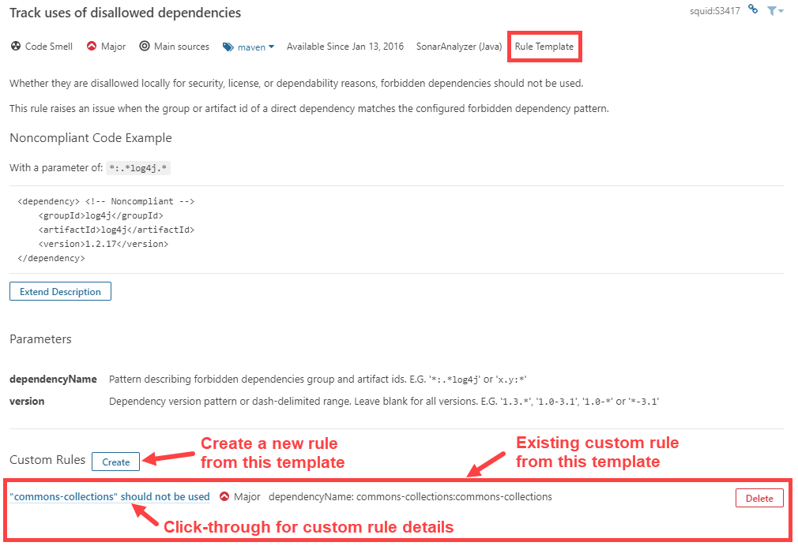
Regras personalizadas
Regras personalizadas são consideradas como qualquer outra regra, exceto que você pode editá-las ou excluí-las:

Nota: Ao excluir uma regra personalizada, ela não é fisicamente removida da instância do SonarQube. Em vez disso, seu status é definido como "REMOVIDO". Isso permite que os problemas atuais ou antigos relacionados a esta regra sejam exibidos corretamente no SonarQube até serem totalmente removidos.
Estendendo regras de codificação
Regras de codificação personalizadas podem ser adicionadas. Consulte Adicionando regras de codificação para obter informações detalhadas e tutoriais.
Tipos de regra e severidades
Como as regras são categorizadas?
O SonarQube Quality Model divide as regras em quatro categorias: Bugs, Vulnerabilidades, Pontos de Acesso de Segurança e Cheiros de Código. As regras são atribuídas às categorias com base nas respostas a estas perguntas:
A regra sobre o código está
comprovadamente errada ou mais provavelmente errada do que não?
Se a resposta for "sim", é uma regra
de bug.
Se não...
A regra sobre código que pode ser
explorada por um hacker?
Nesse caso, é uma regra de
vulnerabilidade.
Se não...
A regra sobre código é sensível à
segurança?
Nesse caso, é uma regra de Hotspot de
segurança.
Se não...
A regra não é um bug nem uma
vulnerabilidade?
Nesse caso, é uma regra de Cheiro de
Código.
Como as severidades são atribuídas?
Para atribuir gravidade a uma regra, fazemos uma série adicional de perguntas. O primeiro é basicamente:
Qual a pior coisa que poderia acontecer?
Ao responder a essa pergunta, tentamos levar em consideração a Lei de Murphy sem prever o Armagedom.
Depois, avaliamos se o impacto e a probabilidade da pior coisa (consulte Como a gravidade e a probabilidade são decididas?, Abaixo) são altos ou baixos e inserimos as respostas em uma tabela de verdade:
| Impacto | Probabilidade | |
|---|---|---|
| Blocker | ||
| Crítico | ||
| Principal | ||
| Menor |
Como a gravidade e a probabilidade são decididas?
Para avaliar a gravidade de uma regra, partimos da Pior Coisa (consulte Como as severidades são atribuídas?, Acima) e fazemos perguntas específicas da categoria.
Insetos
Impacto: a pior coisa poderia causar o travamento do aplicativo ou dados corrompidos armazenados?
Probabilidade: Qual é a probabilidade de que a pior coisa aconteça?
Vulnerabilidades
Impacto: a exploração da pior coisa poderia resultar em danos significativos aos seus ativos ou usuários?
Probabilidade: Qual é a probabilidade de um hacker conseguir explorar a pior coisa?
Pontos de acesso de segurança
Os pontos de acesso de segurança não têm severidades atribuídas, pois não se sabe se há realmente uma vulnerabilidade subjacente até que sejam revisados.
Regras relacionadas à segurança
O SonarQube Quality Model possui quatro tipos diferentes de regras: Confiabilidade (bug), Manutenção (cheiro de código), Segurança (vulnerabilidade e hotspot). Há muitas expectativas sobre segurança, portanto, a seguir, explicamos alguns conceitos-chave e como as regras de segurança diferem de outras.
O que esperar das regras relacionadas à segurança
Como em outros tipos de regras, tentamos não gerar falsos positivos: você deve ter certeza de que qualquer coisa relatada a você como um problema é realmente um problema.
Sob o capô, o SonarQube é baseado em diferentes representações do código-fonte e das tecnologias, a fim de detectar qualquer tipo de problema de segurança:
-
Regras de injeção de segurança : existe uma vulnerabilidade aqui quando as entradas manipuladas pelo aplicativo são controladas por um usuário (potencialmente um invasor) e não são validadas ou higienizadas; quando isso ocorre, o fluxo das fontes (entradas controladas pelo usuário) para os sumidouros ( funções sensíveis) serão apresentadas. Para isso, o SonarQube usa a conhecida tecnologia de análise de contaminação no código fonte, que permite, por exemplo, a detecção de:
-
Regras de configuração de segurança : aqui há um problema de segurança porque o parâmetro errado (por exemplo: algoritmo criptográfico inválido ou versão TLS) ao chamar uma função sensível foi definido ou quando uma verificação (por exemplo: tipo de função check_permissions ()) não foi realizada ou não na ordem correta, é provável que esse problema apareça com frequência quando o programa for executado (nenhum ataque injetado / complexo é necessário ao contrário da categoria anterior):
Esses problemas de segurança são então divididos em duas categorias: vulnerabilidades e pontos de acesso (consulte as principais diferenças na página Pontos de segurança ). Os pontos de acesso de segurança foram introduzidos para proteções de segurança que não têm impacto direto na segurança geral do aplicativo. A maioria das regras de injeção são vulnerabilidades, por exemplo, se uma injeção SQL for encontrada, é certo que uma correção (validação de entrada) é necessária, portanto, essa é uma vulnerabilidade. Pelo contrário, o sinalizador httpOnly ao criar um cookie é uma proteção adicional desejada (para reduzir o impacto quando as vulnerabilidades do XSS aparecem), mas nem sempre é possível implementar ou relevante, dependendo do contexto do aplicativo, por isso é um ponto de acesso.
Com os Hotspots, queremos ajudar os desenvolvedores a entender os riscos à segurança da informação, ameaças, impactos, causas principais de problemas de segurança e a escolha de proteções de software relevantes. Em resumo, queremos realmente educar os desenvolvedores e ajudá-los a desenvolver aplicativos seguros, éticos e amigáveis à privacidade.
Quais padrões de segurança são cobertos?
Nossas regras de segurança são classificadas de acordo com padrões de segurança bem estabelecidos, como:
- CWE : SonarQube é um produto compatível com CWE desde 2015 .
- SANS Top 25
- Top 10 da OWASP
Os padrões aos quais uma regra se refere serão listados na seção Ver na parte inferior da descrição da regra. De maneira mais geral, você pode procurar uma regra em rules.sonarsource.com :
- Java-vulnerability-issue-type : todas as regras de vulnerabilidade para a linguagem Java.
- Java-hotspots-issue-type : todas as regras de hotspot de segurança para a linguagem Java.
- Injeção de tag Java : todas as regras de injeção de segurança para a linguagem Java.
Como propor novas regras de segurança?
A segurança é um mundo animado onde novos tipos de ataques e vulnerabilidades aparecem com muita frequência; portanto, agradecemos qualquer sugestão de novas regras de segurança. Você pode ler a página de adição de regras de codificação para ver como desenvolver uma nova regra ou propor uma nova no nosso fórum da comunidade .
Com relação às regras de injeção de segurança mencionadas acima, é possível estender a configuração da análise de contaminação para permitir que o mecanismo SonarQube use novas fontes, desinfetantes, validadores e sumidouros das estruturas caseiras que você usa. A Configuração Personalizada do Security Engine está disponível como parte da Enterprise Edition e acima.
Quality Gates
Visão geral
Um portal de qualidade é a melhor maneira de impor uma política de qualidade em sua organização. Está aqui para responder UMA pergunta: posso entregar meu projeto para produção hoje ou não?
Para responder a essa pergunta, você define um conjunto de condições booleanas com base nos limites de medida em relação aos quais os projetos são medidos. Por exemplo:
- Nenhum novo problema de bloqueador
- Cobertura de código em novo código maior que 80%
- Etc.
Idealmente, todos os projetos serão verificados no mesmo portal de qualidade, mas isso nem sempre é prático. Por exemplo, você pode achar que:
- A implementação tecnológica difere de um aplicativo para outro (talvez você não precise da mesma cobertura de código no novo código para aplicativos Web ou Java).
- Você deseja garantir requisitos mais fortes em alguns de seus aplicativos (estruturas internas, por exemplo).
- Etc.
É por isso que você pode definir quantos portões de qualidade desejar. Quality Gates são definidos e gerenciados na página Quality Gates , localizada no menu superior.
Use a melhor configuração de porta de qualidade
O portal de qualidade "Sonar way" é fornecido pelo SonarSource, ativado por padrão e considerado como interno e, portanto, somente leitura. Ele representa nossa visão da melhor maneira de implementar o conceito Clean as You Code . A cada versão do SonarQube, ajustamos automaticamente esse padrão de qualidade de acordo com os recursos do SonarQube.
Três métricas permitem impor uma determinada classificação de confiabilidade, segurança e manutenção, não apenas no geral, mas também no novo código. Essas métricas são recomendadas e fazem parte do portão de qualidade padrão. É altamente recomendável que você ajuste seus próprios portões de qualidade para usá-los para tornar o feedback mais claro para seus desenvolvedores, observando o seu portão de qualidade na página do projeto.
Não esqueça também que as condições de qualidade da porta devem usar valores diferenciais. Não há nenhum ponto, por exemplo, para verificar um valor absoluto, como: O número de linhas de código é maior que 1000.
Portão de qualidade recomendado
O
Sonar way
portão de qualidade interno é
recomendado para a maioria dos projetos.
Se concentra em manter o novo código
limpo, em vez de gastar muito esforço corrigindo o código antigo.
Fora da caixa, ele já está definido
como o perfil padrão.
Status do Quality Gate
O status atual é exibido em destaque na parte superior da página do projeto:

Ser notificado quando um Quality Gate falha
Graças ao mecanismo de notificação, os usuários podem ser notificados quando um portão de qualidade falha. Para fazer isso, assine a notificação de status de novo portão de qualidade para todos os projetos ou para um conjunto de projetos nos quais você está interessado.
Segurança
O Quality Gates pode ser acessado por qualquer usuário (mesmo usuários anônimos). Todos os usuários podem visualizar todos os aspectos de um portão de qualidade.
Para fazer alterações (criar, editar ou excluir), os usuários devem receber a permissão Administrar perfis e portões de qualidade .
Um administrador de projeto pode escolher a quais portões de qualidade o seu projeto está associado. Consulte Configurações do projeto para mais.
Definindo portas de qualidade
Para gerenciar portas de qualidade, vá para Portas de qualidade (barra de menus superior).
Cada condição do Quality Gate é uma combinação de:
- a medida
- operador de comparação
- valor do erro
Por exemplo, uma condição pode ser:
- medida: questão do bloqueador
- operador de comparação:>
- valor do erro: 0
O que pode ser declarado como: Não há problemas com o bloqueador.
Definições de métricas
Complexidade
Complexidade
(
complexity
)
É a complexidade ciclomática
calculada com base no número de caminhos através do código.
Sempre que o fluxo de controle de uma
função é dividido, o contador de complexidade é incrementado em um.
Cada função tem uma complexidade
mínima de 1. Esse cálculo varia um pouco por idioma, como fazem as
palavras-chave e as funcionalidades.
Detalhes específicos do idioma
| Língua | Notas |
|---|---|
| ABAP |
As seguintes
palavras-chave aumentar a complexidade por um:
AND
,
CATCH
,
CONTINUE
,
DO
,
ELSEIF
,
IF
,
LOOP
,
LOOPAT
,
OR
,
PROVIDE
,
SELECT…ENDSELECT
,
TRY
,
WHEN
,
WHILE
|
| C / C ++ / Objective-C |
A complexidade é
incrementado por um para: definições de funções,
while
,
do while
,
for
,
throw
afirmações,
switch
,
case
,
default
,
&&
operador,
||
operador,
?
operador
ternário,
catch
,
break
,
continue
,
goto
.
|
| COBOL |
Os comandos
seguintes aumentar a complexidade por um (excepto
quando eles são utilizados num caderno):
ALSO
,
ALTER
,
AND
,
DEPENDING
,
END_OF_PAGE
,
ENTRY
,
EOP
,
EXCEPTION
,
EXIT
,
GOBACK
,
CONTINUE
,
IF
,
INVALID
,
OR
,
OVERFLOW
,
SIZE
,
STOP
,
TIMES
,
UNTIL
,
USE
,
VARYING
,
WHEN
,
EXEC CICS HANDLE
,
EXEC CICS LINK
,
EXEC CICS XCTL
,
EXEC CICS RETURN
|
| Java |
Palavras-chave
incrementar a complexidade:
if
,
for
,
while
,
case
,
catch
,
throw
,
&&
,
||
,
?
|
| JavaScript, PHP |
A complexidade é
incrementada em um para cada:
disjunção lógica
de
função (por
exemplo, construtores, funções, procedimentos ou
métodos não abstratos e não anônimos),
if
conjunção lógica
de curto-circuito (AKA preguiçoso) (
&&
), disjunção
lógica de curto-circuito (AKA preguiçoso) (
||
), expressões
condicionais ternárias, loop,
case
cláusula de uma
switch
instrução
throw
e
catch
instrução,
go to
instrução (apenas
para PHP)
|
| PL / I |
As seguintes
palavras-chave aumentar a complexidade por um:
PROC
,
PROCEDURE
,
GOTO
,
GO TO
,
DO
,
IF
,
WHEN
,
|
,
!
,
|=
,
!=
,
&
,
&=
|
| PL / SQL | A complexidade é incrementada em um para: o bloco anônimo principal de PL / SQL (não os internos), criar procedimento, criar gatilho, definição de procedimento , instrução básica de loop, instrução cláusula when (o "quando" da instrução de caso simples e da instrução de caso pesquisada ), instrução continue , cursor para instrução de loop , continue exit quando cláusula (A parte “WHEN” das instruções continue e sair), manipulador de exceção (todo indivíduo “WHEN”), instrução exit , para instrução loop , instrução forall , if statement , cláusula elsif , instrução raise , instrução return , enquanto loop de declaração e de expressão ( “e” palavra reservada usado dentro de expressões PL / SQL), ou de expressão ( “ou” palavra reservada usado dentro de expressões PL / SQL), quando cláusula de expressão (o “quando” de simples caso expressão e procurou expressão_case ) |
| VB.NET |
A complexidade é
incrementado por um por: método ou declaração
construtor (Sub, Function),
AndAlso
,
Case
,
Continue
,
End
,
Error
,
Exit
,
If
,
Loop
,
On Error
,
GoTo
,
OrElse
,
Resume
,
Stop
,
Throw
,
Try
.
|
Complexidade cognitiva
(
cognitive_complexity
)
Quão difícil é entender o fluxo de
controle do código.
Consulte
o White Paper da Complexidade
Cognitiva
para obter uma descrição completa do
modelo matemático aplicado para calcular esta medida.
Duplicações
Blocos duplicados
(
duplicated_blocks
)
Número de blocos duplicados de
linhas.
Detalhes específicos do idioma
Para que um bloco de código seja considerado duplicado:
Projetos não Java:
- Deve haver pelo menos 100 tokens sucessivos e duplicados.
- Esses tokens devem ser distribuídos pelo menos em:
- 30 linhas de código para COBOL
- 20 linhas de código para ABAP
- 10 linhas de código para outros idiomas
Projetos Java:
deve haver pelo menos 10
instruções sucessivas e duplicadas, independentemente do número
de tokens e linhas.
Diferenças na indentação e
nos literais de cadeia de caracteres são ignoradas ao detectar
duplicações.
Arquivos duplicados
(
duplicated_files
)
Número de arquivos envolvidos nas
duplicações.
Linhas duplicadas
(
duplicated_lines
)
Número de linhas envolvidas nas
duplicações.
Linhas duplicadas (%)
(
duplicated_lines_density
)
=
duplicated_lines
/
lines
* 100
Problemas
Novos problemas
(
new_violations
)
Número de problemas levantados pela
primeira vez no período do novo código.
Novas questões de xxx
(
new_xxx_violations
)
Número de questões da gravidade
especificada levantada pela primeira vez no período New Code, onde xxx é
um dos seguintes:
blocker
,
critical
,
major
,
minor
,
info
.
Problemas
(
violations
)
Contagem total de problemas em todos
os estados.
xxx questões
(
xxx_violations
)
Contagem total de questões da
gravidade especificada, onde xxx é um dos seguintes:
blocker
,
critical
,
major
,
minor
,
info
.
Problemas de falsos positivos
(
false_positive_issues
)
Contagem total de problemas marcados
como falsos positivos
Problemas em aberto
(
open_issues
)
Contagem total de problemas no estado
Aberto.
Problemas confirmados
(
confirmed_issues
)
Contagem total de problemas no estado
Confirmado.
Problemas reabertos
(
reopened_issues
)
Contagem total de problemas no estado
Reaberto
Manutenção
Código Cheiros
(
code_smells
)
Contagem total de questões cheiro de
código.
Cheiros de novo código
(
new_code_smells
)
Contagem total de problemas de
cheiros
de código levantados pela primeira
vez no período do novo código.
Classificação de Manutenção
(
sqale_rating
)
(Anteriormente a classificação
SQALE.) Classificação atribuída ao seu projeto relacionada ao valor do
seu Índice de Dívida Técnica.
A grade padrão de classificação de
manutenção é:
A = 0-0,05, B = 0,06-0,1, C = 0,11-0,20, D = 0,21-0,5, E = 0,51-1
A escala do Rating de Manutenção pode ser alternadamente declarada, dizendo que se o custo de correção pendente for:
- <= 5% do tempo que já foi aplicado ao aplicativo, a classificação é A
- entre 6 e 10% a classificação é um B
- entre 11 e 20% a classificação é C
- entre 21 e 50%, a classificação é um D
- qualquer coisa acima de 50% é um E
Esforço
técnico da dívida
(
sqale_index
)
para corrigir todos os odores do
código.
A medida é armazenada em minutos no
banco de dados.
Um dia de 8 horas é assumido quando
os valores são mostrados em dias.
Dívida técnica no novo código
(
new_technical_debt
)
Esforço para corrigir todos os odores
de código levantados pela primeira vez no período do novo código.
Índice de Dívida Técnica
(
sqale_debt_ratio
)
Índice entre o custo para desenvolver
o software e o custo para corrigi-lo.
A fórmula do Índice de Dívida Técnica
é:
Remediation cost / Development cost
Que pode ser atualizada como:
Remediation cost / (Cost to develop 1 line of code * Number of lines of code)
O valor do custo para desenvolver uma
linha de código é de 0,06 dias.
Índice de Dívida Técnica no Novo
Código
(
new_sqale_debt_ratio
) O
índice entre o custo para desenvolver
o código foi alterado no período do Novo Código e o custo das questões a
ele vinculadas.
Quality Gates
Status do Quality Gate
(
alert_status
)
Estado do Quality Gate associado ao
seu projeto.
Os valores possíveis são:
ERROR
,
OK
WARN valor foi removido desde 7.6.
Detalhes do Quality Gate
(
quality_gate_details
)
Para todas as condições do seu
Quality Gate, você sabe qual condição está falhando e qual não está.
Confiabilidade
Bugs
(
bugs
)
Número de problemas de bugs.
Novos erros
(
new_bugs
)
Número de novos problemas de erros.
Classificação de confiabilidade
(
reliability_rating
)
A = 0 erros
B = pelo menos 1 erro menor
C = pelo menos 1 erro grave
D = pelo menos 1 erro crítico
E = pelo menos 1 erro bloqueador
Esforço de correção da
confiabilidade
(
reliability_remediation_effort
)
Esforço para corrigir todos os
problemas de bug.
A medida é armazenada em minutos no
banco de dados.
Um dia de 8 horas é assumido quando
os valores são mostrados em dias.
Esforço de correção da
confiabilidade no novo código
(
new_reliability_remediation_effort
) O
mesmo que o
esforço de correção da
confiabilidade,
mas o código foi alterado no período
do Novo Código.
Segurança
Vulnerabilidades
(
vulnerabilities
)
Número de problemas de
vulnerabilidade.
Vulnerabilidades no novo código
(
new_vulnerabilities
)
Número de novos problemas de
vulnerabilidade.
Classificação de segurança
(
security_rating
)
A = 0 Vulnerabilidades
B = pelo menos 1 Vulnerabilidade
Menor
C = pelo menos 1 Vulnerabilidade
Maior
D = pelo menos 1 Vulnerabilidade
Crítica
E = pelo menos 1 Vulnerabilidade de
Bloqueador
Esforço de correção da
segurança
(
security_remediation_effort
)
Esforço para corrigir todos os
problemas de vulnerabilidade.
A medida é armazenada em minutos no
banco de dados.
Um dia de 8 horas é assumido quando
os valores são mostrados em dias.
Esforço de correção de segurança
no novo código
(
new_security_remediation_effort
)
Igual ao
esforço de correção de segurança,
mas o código foi alterado no período
do Novo Código.
Pontos de acesso de segurança
(
security_hotspots
) Número de pontos de acesso de
segurança
Pontos ativos de segurança no
novo código
(
new_security_hotspots
) Número de novos pontos ativos de
segurança no novo período de código.
Classificação de revisão de
segurança
(
security_review_rating
)
A Classificação de Revisão de Segurança é uma nota com base na porcentagem de Pontos de Segurança Revisados (Fixo ou Seguro).
A => = 80%
B => = 70% e <80%
C => = 50% e <70%
D => = 30% e <50%
E = <30%
Classificação de revisão de
segurança no novo código
(
new_security_review_rating
)
Classificação de revisão de segurança para o novo período de código.
Pontos de acesso de segurança
revisados
(
security_hotspots_reviewed
)
Porcentagem de pontos de acesso de segurança revisados (fixos ou seguros).
Fórmula de relação:
Number of Reviewed (Fixed or Safe) Hotspots x 100 / (To_Review Hotspots + Reviewed Hotspots)
Novos pontos ativos de segurança revisados
Porcentagem de pontos ativos de segurança revisados (fixos ou seguros) para o novo período de código.
Tamanho
Classes
(
classes
)
Número de classes (incluindo classes
aninhadas, interfaces, enumerações e anotações).
Linhas de comentário
(
comment_lines
)
Número de linhas que contêm código de
comentário ou comentário.
Linhas de comentários não significativas (linhas de comentários vazias, linhas de comentários contendo apenas caracteres especiais etc.) não aumentam o número de linhas de comentários.
O seguinte trecho de código contém 9 linhas de comentário:
/** +0 => empty comment line * +0 => empty comment line * This is my documentation +1 => significant comment * although I don't +1 => significant comment * have much +1 => significant comment * to say +1 => significant comment * +0 => empty comment line *************************** +0 => non-significant comment * +0 => empty comment line * blabla... +1 => significant comment */ +0 => empty comment line /** +0 => empty comment line * public String foo() { +1 => commented-out code * System.out.println(message); +1 => commented-out code * return message; +1 => commented-out code * } +1 => commented-out code */ +0 => empty comment lineDetalhes específicos do idioma
| Língua | Nota |
|---|---|
| COBOL |
Linhas contendo
as seguintes instruções são contados tanto como
comentários e linhas de código de:
AUTHOR
,
INSTALLATION
,
DATE-COMPILED
,
DATE-WRITTEN
,
SECURITY
.
|
| Java | Os cabeçalhos dos arquivos não são contados como linhas de comentário (porque geralmente definem a licença). |
Comentários (%)
(
comment_lines_density
)
Densidade das linhas de comentário =
Linhas de comentário / (Linhas de código + Linhas de comentário) * 100
Com essa fórmula:
- 50% significa que o número de linhas de código é igual ao número de linhas de comentário
- 100% significa que o arquivo contém apenas linhas de comentário
Diretórios
(
directories
)
Número de diretórios.
Arquivos
(
files
)
Número de arquivos.
Linhas
(
lines
)
Número de linhas físicas (número de
retornos de carro).
Linhas de código
(
ncloc
)
Número de linhas físicas que contêm
pelo menos um caractere que não é um espaço em branco nem uma tabulação
nem parte de um comentário.
Detalhes específicos do idioma
| Língua | Nota |
|---|---|
| COBOL |
Linhas de código
geradas e instruções pré-processamento (
SKIP1
,
SKIP2
,
SKIP3
,
COPY
,
EJECT
,
REPLACE
) não são
contados como linhas de código.
|
Linhas de código por idioma
(
ncloc_language_distribution
)
Linhas de código
sem comentários distribuídas por
idioma
Funções
(
functions
)
Número de funções.
Dependendo do idioma, uma função é
uma função ou um método ou um parágrafo.
Detalhes específicos do idioma
| Língua | Nota |
|---|---|
| COBOL | É o número de parágrafos. |
| Java | Métodos em classes anônimas são ignorados. |
| VB.NET | Os acessórios não são considerados métodos. |
Projetos
(
projects
)
Número de projetos em um portfólio.
Declarações
(
statements
)
Número de declarações.
Testes
Cobertura da condição
(
branch_coverage
)
Em cada linha de código que contém
algumas expressões booleanas, a cobertura da condição simplesmente
responde à seguinte pergunta: 'Cada expressão booleana foi avaliada como
verdadeira e falsa?'.
Essa é a densidade de possíveis
condições nas estruturas de controle de fluxo que foram seguidas durante
a execução dos testes de unidade.
Condition coverage = (CT + CF) / (2*B)
Onde
- CT = condições que foram avaliadas como 'verdadeiras' pelo menos uma vez
- CF = condições que foram avaliadas como 'falsas' pelo menos uma vez
- B = número total de condições
Cobertura da condição no novo
código
(
new_branch_coverage
)
Idêntica à cobertura da condição, mas
restrita ao código fonte novo / atualizado.
Resultados da cobertura da
condição
(
branch_coverage_hits_data
)
Lista de condições cobertas.
Condições por linha
(
conditions_by_line
)
Número de condições por linha.
Condições cobertas por linha
(
covered_conditions_by_line
)
Número de condições cobertas por
linha.
Cobertura
(
coverage
)
É uma mistura de cobertura de linha e
cobertura de condição.
Seu objetivo é fornecer uma resposta
ainda mais precisa à seguinte pergunta: Quanto do código fonte foi
coberto pelos testes de unidade?
Coverage = (CT + CF + LC)/(2*B + EL)
Onde
- CT = condições que foram avaliadas como 'verdadeiras' pelo menos uma vez
- CF = condições que foram avaliadas como 'falsas' pelo menos uma vez
- LC = linhas cobertas = linhas a cobrir - linhas_ descobertas
- B = número total de condições
-
EL = número total de linhas
executáveis (
lines_to_cover)
Cobertura no novo código
(
new_coverage
)
Idêntico à cobertura, mas restrito ao
código fonte novo / atualizado.
Cobertura de linha
(
line_coverage
)
Em uma determinada linha de código, a
cobertura de linha simplesmente responde à seguinte pergunta: Essa linha
de código foi executada durante a execução dos testes de unidade ?.
É a densidade das linhas cobertas por
testes de unidade:
Line coverage = LC / EL
Onde
-
LC = linhas cobertas (
lines_to_cover-uncovered_lines) -
EL = número total de linhas
executáveis (
lines_to_cover)
Cobertura de linha no novo código
(
new_line_coverage
)
Idêntico à cobertura de linha, mas
restrito ao código fonte novo / atualizado.
Resultados da cobertura de linhas
(
coverage_line_hits_data
)
Lista de linhas cobertas.
Linhas a cobrir
(
lines_to_cover
)
Número de linhas de código que podem
ser cobertas por testes de unidade (por exemplo, linhas em branco ou
linhas de comentários completas não são consideradas linhas a serem
cobertas).
Linhas a serem abordadas no novo
código
(
new_lines_to_cover
)
Idêntico às Linhas a serem abordadas,
mas restrito ao código-fonte novo / atualizado.
Testes
de unidade ignorados
(
skipped_tests
)
Número de testes de unidade
ignorados.
Condições
não cobertas
(
uncovered_conditions
)
Número de condições que não são
cobertas por testes de unidade.
Condições não descobertas no novo
código
(
new_uncovered_conditions
)
Idênticas às condições não
descobertas, mas restritas ao código-fonte novo / atualizado.
Linhas
não cobertas
(
uncovered_lines
)
Número de linhas de código que não
são cobertas por testes de unidade.
Linhas não descobertas no novo
código
(
new_uncovered_lines
)
Idêntico às linhas não descobertas,
mas restrito ao código-fonte novo / atualizado.
Testes de unidade
(
tests
)
Número de testes de unidade.
Duração dos testes de unidade
(
test_execution_time
)
Tempo necessário para executar todos
os testes de unidade.
Erros no teste de unidade
(
test_errors
)
Número de testes de unidade que
falharam.
Falhas no teste de unidade
(
test_failures
)
Número de testes de unidade que
falharam com uma exceção inesperada.
Densidade de sucesso do teste de
unidade (%)
(
test_success_density
)
Test success density = (Unit tests - (Unit test errors + Unit test failures)) / Unit tests * 100
Conceitos
Arquitetura
| Conceito | Definição |
|---|---|
| Analisador | Um aplicativo cliente que analisa o código-fonte para calcular instantâneos . |
| Base de dados | Armazena configuração e instantâneos |
| Servidor | Interface da Web usada para procurar dados de captura instantânea e fazer alterações na configuração |
Veja também a Visão geral da plataforma SonarQube.
Qualidade
| Conceito | Definição |
|---|---|
| Erro | Um problema que representa algo errado no código. Se isso ainda não se rompeu, ocorrerá e provavelmente no pior momento possível. Isso precisa ser corrigido. Ontem. |
| Code Smell | Um problema relacionado à manutenção no código. Deixar como está significa que, na melhor das hipóteses, os mantenedores terão mais dificuldade do que deveriam fazer alterações no código. Na pior das hipóteses, eles ficarão tão confusos com o estado do código que introduzirão erros adicionais à medida que fizerem alterações. |
| Custo | Consulte Custo de correção |
| Dívida | Ver Dívida Técnica |
| Questão | Quando um pedaço de código não está em conformidade com uma regra, um problema é registrado no instantâneo . Um problema pode ser registrado em um arquivo de origem ou em um arquivo de teste de unidade. Existem 3 tipos de problemas: bugs , odores de código e vulnerabilidades |
| A medida | O valor de uma métrica para um determinado arquivo ou projeto em um determinado momento. Por exemplo, 125 linhas de código na classe MyClass ou densidade de linhas duplicadas de 30,5% no projeto myProject |
| Métrica | Um tipo de medida. As métricas podem ter valores ou medidas variados ao longo do tempo. Exemplos: número de linhas de código, complexidade, etc. Uma métrica pode ser qualitativa (fornece uma indicação de qualidade no componente, densidade de EG de linhas duplicadas, cobertura de linha por testes, etc.) ou quantitativa (não fornece uma indicação de qualidade no componente, número de linhas de código do EG, complexidade, etc.) |
| Novo período do código |
O período em que você
acompanha de perto a introdução de novos problemas no
código.
Idealmente, isso ocorre
desde o dia
previous_version
, mas se você não usar um
esquema de versão do tipo Maven, pode ser necessário definir
um período de tempo relativamente arbitrário, como 21 dias
ou desde uma data específica.
|
| Perfil de Qualidade | Um conjunto de regras . Cada instantâneo é baseado em um único perfil de qualidade. Veja também Perfis de qualidade |
| Regra | Um padrão ou prática de codificação que deve ser seguida. O não cumprimento das regras de codificação leva a erros , vulnerabilidades , pontos de acesso de segurança e odores de código . As regras podem verificar a qualidade nos arquivos de código ou nos testes de unidade. |
| Custo de correção | O tempo estimado necessário para corrigir problemas de vulnerabilidade e confiabilidade. |
| Instantâneo | Um conjunto de medidas e problemas em um determinado projeto em um determinado momento. Um instantâneo é gerado para cada análise. |
| Ponto de acesso de segurança | Partes de código sensíveis à segurança que precisam ser revisadas manualmente. Após a revisão, você descobrirá que não há ameaça ou que existe um código vulnerável que precisa ser corrigido. |
| Dívida Técnica | O tempo estimado necessário para corrigir todos os problemas de manutenção / odores de código |
| Vulnerabilidade | Um problema relacionado à segurança que representa um backdoor para invasores. Consulte também Regras relacionadas à segurança . |
Atividade e História
A página Atividade do projeto oferece uma lista abrangente das análises registradas em um projeto (sujeitas a tarefas domésticas ) e a capacidade de ver a evolução das medidas do projeto ao longo do tempo.
Os gráficos na página de atividades ajudam a entender a evolução de até três medidas de sua escolha. Passe o mouse sobre o gráfico mostra os valores e eventos da medida associados a análises específicas.
Eventos
Existem quatro tipos de eventos:
- Portão de qualidade - o status do portão de qualidade alterado.
- Perfil - o perfil de qualidade usado para analisar o projeto foi alterado - o perfil foi editado ou um perfil diferente foi usado para analisar o projeto.
- Versão - a versão do projeto foi alterada.
- Outro - um evento foi criado manualmente em um instantâneo. Consulte Gerenciando histórico
Os eventos são mostrados na página inicial do projeto e na página Atividade do projeto.
Visualizações
Estão disponíveis visualizações para ajudá-lo a obter informações mais profundas sobre os status e históricos atuais de seus projetos.
Como faço para comparar o estado atual de vários projetos ou componentes de projeto?
O espaço Projetos permite filtrar os projetos em sua instância por vários critérios baseados em medidas. Depois de escolher seu conjunto, você não precisa olhar para os números brutos para identificar os riscos que seus projetos enfrentam. Em vez disso, várias visualizações ( Projetos> Perspectiva ) estão disponíveis para ajudá-lo a entender a posição relativa de cada projeto em termos de cada um dos principais eixos:
- Risco - classificações de confiabilidade e segurança, cobertura de testes, dívida técnica e linhas de código
- Confiabilidade - Classificação de confiabilidade, esforço de correção da confiabilidade, linhas de código e contagem de bugs
- Segurança - classificação de segurança, esforço de correção de segurança, linhas de código e contagem de vulnerabilidades
- Manutenção - Classificação de manutenção, dívida técnica, linhas de código e contagem de cheiros de código
- Cobertura - cobertura, complexidade e linhas descobertas
- Duplicações -% de linhas duplicadas, linhas de código e blocos duplicados
- No nível do projeto, essas mesmas visualizações estão disponíveis na guia Medidas para ajudá-lo a comparar os componentes do projeto. O Projeto "> corresponde à visualização de Risco no espaço Projetos. Nos outros cinco gráficos, escolha a opção"> no domínio relevante.
Além disso, os mapas em árvore também estão disponíveis para métricas de porcentagem e classificação no nível do projeto. Navegue até eles na guia Medidas usando o seletor de perspectiva no painel direito.
Como visualizo o histórico de métricas?
No nível do projeto, a guia Atividade oferece vários gráficos de linhas selecionados de métricas selecionadas ao longo do tempo, com mouseovers convenientes para mostrar detalhes do gráfico e a capacidade de restringir facilmente o gráfico a uma parte do histórico do projeto. Além dos gráficos em lata, você também pode mapear as métricas de sua escolha em um gráfico personalizado.
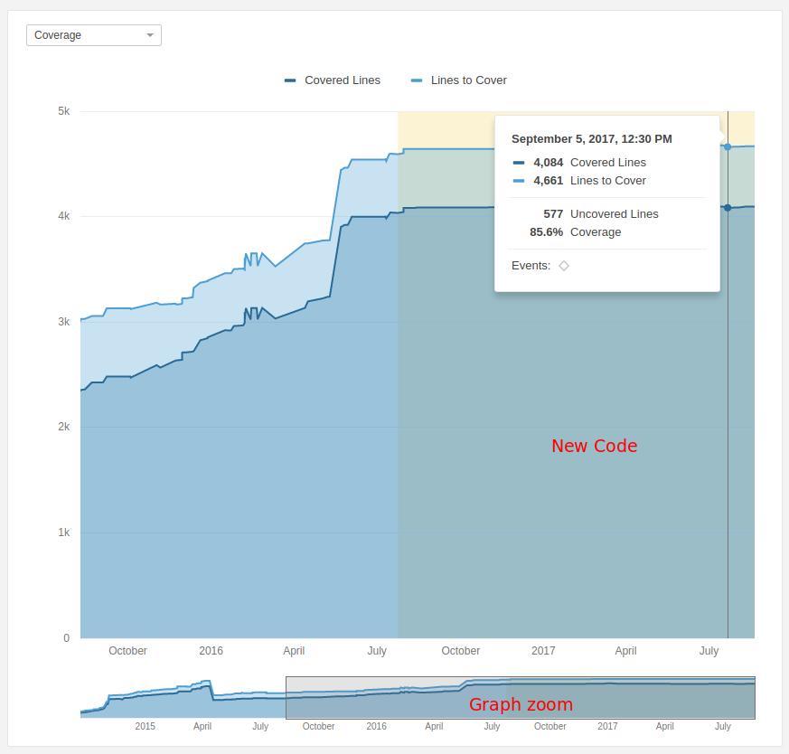
Notificações inteligentes do SonarLint
O SonarLint Smart Notifications está disponível como parte da Developer Edition e acima .
As notificações inteligentes permitem que os desenvolvedores que usam o Modo conectado no SonarLint recebam notificações no IDE do SonarQube quando:
- o status do Quality Gate (falha / êxito) de um projeto / solução aberto no IDE muda
- uma análise do SonarQube levanta novos problemas introduzidos por esse desenvolvedor em um projeto / solução aberto no IDE
Ativar / desativar notificações
A ativação ou desativação de notificações deve ser feita individualmente, por cada desenvolvedor diretamente no SonarLint (no lado do IDE).
O recebimento de notificações é configurável no lado do SonarLint, no servidor SonarQube, servidor por servidor.
Relatórios de segurança
Os Relatórios de segurança estão disponíveis como parte da Enterprise Edition e acima .
O que mostram os relatórios de segurança?
Os Relatórios de segurança fornecem rapidamente uma visão geral da segurança de seu aplicativo, com detalhamento de sua posição em relação a cada uma das categorias OWASP Top 10 e SANS Top 25 e detalhes específicos da CWE .
Os Relatórios de segurança são alimentados pelos analisadores, que dependem das regras ativadas em seus perfis de qualidade para levantar problemas de segurança. Se não houver regras correspondentes a uma determinada categoria OWASP ativada em seu Perfil de qualidade, você não terá problemas vinculados a essa categoria específica e a classificação exibida será A. Isso não significa que você está seguro para essa categoria, mas que você precisa ativar mais regras (supondo que existam).
Qual é a diferença entre um ponto de acesso de segurança e uma vulnerabilidade?
Para obter mais detalhes, consulte a página Pontos de acesso de segurança e para resumir:
- Com um Hotspot, um trecho de código sensível à segurança é destacado, mas a segurança geral do aplicativo pode não ser afetada. Cabe ao desenvolvedor revisar o código para determinar se é necessária uma correção ou não para proteger o código.
- Com uma vulnerabilidade, foi descoberto um problema que afeta a segurança do aplicativo que precisa ser corrigido imediatamente.
Por que não vejo vulnerabilidades ou pontos de acesso de segurança?
Você pode não encontrar nenhuma vulnerabilidade ou ponto de acesso de segurança pelos seguintes motivos:
- Você não possui nenhum porque o código foi gravado sem o uso de uma API sensível à segurança.
- As regras de vulnerabilidade ou ponto de acesso de segurança estão disponíveis, mas não ativadas no seu perfil de qualidade, portanto, nenhum ponto de acesso ou vulnerabilidade de segurança é gerado.
- Atualmente, o analisador para o seu idioma pode oferecer apenas algumas regras e não gera um ou apenas um pequeno número de vulnerabilidades ou pontos de acesso de segurança.
Conta de usuário
Como usuário do SonarQube, você tem seu próprio espaço, onde pode ver as coisas que são relevantes para você:
Perfil
Ele fornece um resumo de:
- seus grupos
- suas contas SCM
Segurança
Se sua instância não estiver usando um mecanismo de autenticação de terceiros, como LDAP ou um provedor OAuth (GitHub, Conta do Google, ...), você poderá alterar sua senha a partir daqui. Além disso, você também pode gerenciar seus próprios tokens de autenticação.
Você pode criar quantos tokens quiser. Depois que um Token é criado, você pode usá-lo para executar a análise em um projeto em que você tem a permissão Executar Análise .
Token de Usuário
Cada usuário tem a capacidade de gerar tokens que podem ser usados para executar análises ou chamar serviços da Web sem acesso às credenciais reais do usuário.
Como gerar um token
Para gerar um token, vá em Usuário> Minha Conta> Segurança . Seus tokens existentes estão listados aqui, cada um com um botão Revogar.
O formulário na parte inferior da página permite gerar novos tokens. Depois de clicar no botão Gerar , você verá o valor do token. Copie-o imediatamente; depois de descartar a notificação, você não poderá recuperá-la.
Como usar um token
Os tokens de usuário devem ser usados como uma substituição do seu login usual:
-
ao executar análises no seu
código: substitua seu login pelo token na
sonar.loginpropriedade - ao invocar serviços da Web: basta passar o token em vez do seu login enquanto faz a autenticação básica.
Nos dois casos, você não precisa
fornecer uma senha (portanto, ao executar análises no seu código, a
propriedade
sonar.password
é opcional).
Atalhos do teclado
Global
| Atalho | Açao |
|---|---|
s |
abrir barra de pesquisa |
? |
ajuda aberta |
Página de código
| Atalho | Açao |
|---|---|
↑↓ |
selecionar arquivos |
→ |
abrir arquivo |
← |
voltar para a lista |
Página de edições
| Atalho | Açao |
|---|---|
↑↓ |
navegar entre os problemas |
→ |
vá da lista de problemas para o código fonte |
← |
voltar para a lista |
alt
+
↑↓
|
para navegar nos locais dos problemas |
alt
+
←→
|
mudar fluxos |
f |
faça uma transição de problema |
a |
atribuir problema |
m |
atribuir problema ao usuário atual |
i |
alterar a gravidade do problema |
c |
questão de comentário |
ctrl
+
enter
|
enviar comentário |
t |
alterar tags de problema |
Página Medidas
| Atalho | Açao |
|---|---|
↑↓ |
selecionar arquivos |
→ |
abrir arquivo |
← |
voltar para a lista |
Página Regras
| Atalho | Açao |
|---|---|
↑↓ |
navegar entre regras |
→ |
vá da lista de regras para os detalhes da regra |
← |
voltar para a lista |
Existência do Projeto
Normalmente, os projetos são criados durante a primeira análise e nunca são excluídos (porque o software antigo nunca morre). Para situações atípicas, existe a página em Administração> Projetos> Gerenciamento , que permite gerenciar a existência do projeto.
Como provisionar um projeto antes de sua primeira análise?
O provisionamento de um projeto permite que você o declare e configure (defina permissões, defina perfis de qualidade etc.) antes de executar a primeira análise. Para poder provisionar projetos, você precisa fazer login e receber a permissão Provision Projects.
Para provisionar um novo projeto, use o menu '+' no menu superior ou se você tiver privilégios de administração global, vá em Administração> Projetos> Gerenciamento e clique em Criar Projeto . As únicas informações necessárias são a chave e o nome do seu projeto.
Depois que o projeto é provisionado, você pode configurá-lo (definir permissões, definir perfis de qualidade etc.) e, quando terminar a configuração, pode simplesmente executar a primeira análise do projeto.
Você também pode provisionar e configurar projetos usando a API da Web.
Como encontro projetos provisionados (que ainda não foram analisados)?
A interface de pesquisa Gerenciamento de projetos inclui uma alternância para permitir que você restrinja seus resultados nesta página apenas aos projetos que nunca foram analisados. A partir daí, você pode lidar com eles nesta página como um conjunto ou clicar nas páginas iniciais do projeto para obter atenção e administração individuais.
Como bloqueio as permissões em um projeto? (Privado x Público)
Por padrão, qualquer projeto recém-criado será considerado "Público". Isso significa que todo usuário do SonarQube, autenticado ou não, poderá:
- Navegar : Acesse um projeto, pesquise suas medidas, problemas e realize algumas edições (confirmar / resolver / reabrir, atribuição, comentário).
- Consulte Código-fonte : visualize o código-fonte do projeto.
Se você deseja garantir que apenas uma lista limitada de Grupos e Usuários possa ver o projeto, marque-o como Privado. Depois que um projeto for privado, você poderá definir quais grupos e usuários podem navegar no projeto ou ver o código-fonte .
Se você deseja que todos os projetos recém-criados sejam considerados "Privados", é possível alterar a visibilidade padrão em Administração> Projetos> Gerenciamento .
Como faço para excluir projetos?
Um projeto pode ser excluído individualmente da página Administração do projeto. Consulte Configurações do projeto para obter mais detalhes. Para excluir projetos em massa, use Administração> Projetos> Gerenciamento . Aqui você pode selecionar os projetos a serem excluídos. Um projeto excluído foi desativado definitivamente, não há como desfazer essa ação.
Como encontro projetos que não são mais analisados?
A interface de pesquisa Gerenciamento de projetos inclui um seletor de datas para ajudá-lo a encontrar todos os projetos analisados pela última vez antes da data especificada. A partir daí, você pode lidar com eles nesta página como um conjunto ou clicar nas páginas iniciais do projeto para obter atenção e administração individuais.
Gerenciando o histórico do projeto
Um dos recursos mais poderosos do SonarQube é que ele mostra não apenas a integridade do seu projeto hoje, mas como ele mudou com o tempo. Ele faz isso mantendo seletivamente os dados de análises anteriores (consulte Tarefas domésticas ). Ele não mantém todas as análises anteriores - isso incharia o banco de dados. Da mesma forma, para as análises que ele mantém, o SonarQube não mantém todos os dados. Depois que um instantâneo do projeto passa da "Última análise" (ou seja, a mais recente) para fazer parte do histórico do projeto, os dados abaixo do nível do projeto são eliminados - novamente para não inchar o banco de dados.
Normalmente, essas não são coisas que você precisa pensar; O SonarQube apenas lida com eles para você. Mas, ocasionalmente, pode ser necessário remover uma captura instantânea incorreta do histórico de um projeto ou alterar os algoritmos de limpeza.
Gerenciando a História
Ocasionalmente, pode ser necessário excluir manualmente uma captura instantânea do projeto, seja porque o perfil de qualidade errado foi usado ou porque houve um problema com a análise e assim por diante. Observe que o instantâneo mais recente (rotulado "Último instantâneo") nunca pode ser excluído.
Sobre a exclusão de
instantâneos A
exclusão de um instantâneo é
um processo de duas etapas:
- O instantâneo deve primeiro ser removido do histórico do projeto, clicando em Excluir instantâneo. Ele não será mais exibido nesta página Histórico, mas continuará presente no banco de dados.
- O instantâneo é realmente excluído durante a próxima análise do projeto.
No nível do projeto, na lista Atividade da primeira página , escolha Mostrar mais para ver a lista completa de atividades.
Para cada instantâneo, é possível manualmente:
- Adicionar, renomear ou remover uma versão
- Adicionar, renomear ou remover um evento
- Excluir o instantâneo
Estreitando o foco
Se os resultados do SonarQube não forem relevantes, ninguém vai querer usá-lo. É por isso que configurar com precisão o que analisar para cada projeto é uma etapa muito importante. Isso permite remover o ruído, como os problemas e duplicações marcados no código gerado ou os problemas de regras que não são relevantes para certos tipos de objetos.
O SonarQube oferece várias opções para configurar exatamente o que será analisado. Você pode
- ignore completamente alguns arquivos ou diretórios
- excluir arquivos / diretórios da detecção de problemas (regras específicas ou todos eles), mas analisar todos os outros aspectos
- excluir arquivos / diretórios da detecção de duplicatas, mas analisar todos os outros aspectos
- excluir arquivos / diretórios dos cálculos de cobertura, mas analisar todos os outros aspectos
Você pode fazer essas alterações globalmente ou no nível do projeto. No nível global, o caminho de navegação é Administração> Configurações Gerais> Escopo da Análise . No nível do projeto, o caminho de navegação é Configurações do Projeto> Configurações Gerais> Escopo da Análise
Padrões
Os caminhos são relativos ao diretório base do projeto. Os seguintes curingas podem ser usados:
*- Combine zero ou mais caracteres**- Corresponde a zero ou mais diretórios?- Combine um único caractere
Os caminhos relativos são baseados no nome completo do componente.
| Exemplo | Partidas | Não corresponde |
|---|---|---|
**/*Bean.java |
org / sonar.api /
MyBean.java
org / sonar / util / MyOtherBean.java |
org / sonar / util / MyDTO.java |
**/*Bean?.java |
org / sonar / util / MyOtherBean1.java |
org / sonar / util /
MyOtherBean.java
org / sonar.api / MyBean.java org / sonar / util / MyDTO.java |
org/sonar/* |
org / sonar /
MyClass.java
org / sonar / MyOtherClass.java |
org / sonar / util / MyClassUtil.java |
org/sonar/**/* |
org / sonar /
MyClass.java
org / sonar / MyOtherClass.java org / sonar / util / MyClassUtil.java |
Ignorar arquivos
Recomendamos que você exclua o código
gerado, o código-fonte das bibliotecas etc. Existem quatro maneiras
diferentes de restringir sua análise ao código-fonte que será relevante
para a equipe de desenvolvimento.
Você pode combiná-los todos juntos
para ajustar seu escopo de análise.
Além disso, excluímos automaticamente
da análise os arquivos descritos nos arquivos dos seus projetos
.gitignore
.
Esse comportamento pode ser
desabilitado.
Consulte
sonar.scm.exclusions.disabled
a
página
Parâmetros de análise
para obter detalhes.
Diretórios de origem
Defina a propriedade sonar.sources para limitar o escopo da análise a determinados diretórios.
Sufixos de arquivo
A maioria dos plugins de idiomas oferece uma maneira de restringir o escopo da análise a arquivos que correspondem a um conjunto de extensões. Vá para Administração> Configurações gerais> [Idioma] para definir a propriedade de sufixos de arquivo.
Escolhendo arquivos
Sua primeira linha de defesa com um
conjunto bem definido de arquivos em sua análise é o seu
sonar.sources
valor.
Para projetos construídos e
analisados com Maven, Gradle ou MSBuild, esse valor é definido
automaticamente com um valor geralmente completo, porém sadio.
Para outros projetos, você quer ter
certeza de que
sonar.sources
está definido no
subdiretório do
projeto
que realmente contém seus arquivos de
origem.
A configuração para
.
lançar uma rede mais ampla do que a
maioria das pessoas pretende.
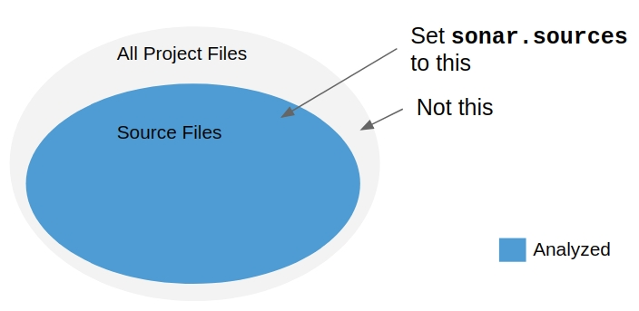
Depois de ter todos os arquivos
em
sua análise que você deseja, é hora
de verificar se você tem algum arquivo que prefere deixar de
fora
da análise, como bibliotecas
JavaScript e arquivos gerados.
Aqueles podem ser tratados com
exclusões.
Especificar uma exclusão significa
que tudo no seu
sonar.sources
diretório será incluído na análise,
exceto
os arquivos com caminhos que
correspondem à sua expressão regular de exclusão.

Para usar exclusões para analisar tudo, exceto os arquivos especificados, vá para Administração> Configurações gerais> Escopo da análise> Arquivos .
-
Exclusões de arquivo de
origem
(
sonar.exclusions) - para excluir arquivos de código-fonte -
Exclusões de arquivo de teste
(
sonar.test.exclusions) - para excluir arquivos de teste
A grande maioria das necessidades é
atendida simplesmente definindo
sonar.sources
cuidadosamente.
A maioria das outras necessidades é
atendida com a adição de algumas exclusões simples.
Em alguns casos extremos, é
necessário ser explícito sobre o que está
incluído
na análise e deixar de fora todo o
resto, mas esse não é o caso normal, e incluir inclusões não deve ser a
primeira coisa que você tenta ao configurar um novo projeto.
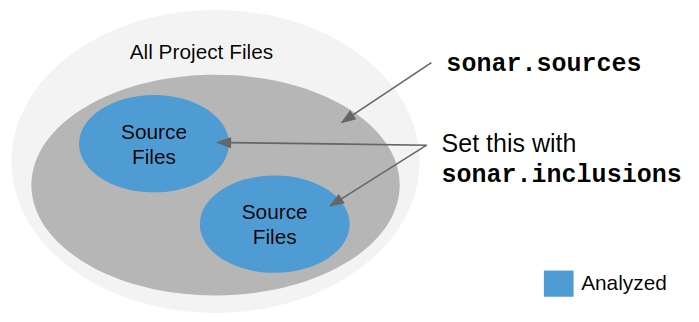
Para usar exclusões para analisar
apenas
os subconjuntos especificados de
arquivos
sonar.sources
, vá para
Administração> Configurações
gerais> Escopo da análise> Arquivos
.
-
Inclusões de arquivo de
origem
(
sonar.inclusions) -
Inclusões de arquivo de teste
(
sonar.test.inclusions)
Você pode definir essas propriedades nos níveis global e do projeto.
Consulte a seção Padrões abaixo para obter mais detalhes sobre a sintaxe a ser usada nessas entradas.
Ignorar problemas
Você pode fazer com que o SonarQube ignore problemas em certos componentes e contra certas regras de codificação. Vá para Administração> Configurações gerais> Escopo da análise> Problemas .
Observe que as propriedades abaixo só podem ser definidas através da interface da Web porque são multivaloradas.
Ignorar problemas nos arquivos
Você pode ignorar todos os problemas nos arquivos que contêm um bloco de código correspondente a uma determinada expressão regular.
Exemplo:
-
Ignore todos os problemas nos
arquivos que contêm "@ javax.annotation.Generated"
@javax\.annotation\.Generated
Ignorar problemas em blocos
Você pode ignorar todos os problemas em blocos específicos de código, continuando a verificar e marcar os problemas no restante do arquivo. Os blocos a serem ignorados são delimitados pelas seqüências de início e final, que podem ser especificadas por expressões regulares (ou sequências simples).
Notas:
- Se a primeira expressão regular for encontrada, mas não a segunda, o final do arquivo será considerado o final do bloco.
- Expressões regulares não são correspondidas em várias linhas.
Ignorar problemas em vários critérios
Você pode ignorar problemas em determinados componentes e em certas regras de codificação. Para listar uma regra específica, use o ID completo da regra.
Você pode encontrar o ID da regra totalmente qualificado na definição de Regra.
Exemplos:
-
Ignore todos os problemas em
todos os arquivos
KEY =*
PATH =**/* -
Ignore todos os problemas no
programa COBOL "bank / ZTR00021.cbl"
KEY =*
PATH =bank/ZTR00021.cbl -
Ignore todos os problemas nas
classes localizadas diretamente no pacote Java "com.foo", mas
não em seus subpacotes
KEY =*
PATH =com/foo/* -
Ignore todos os problemas da
regra de codificação "cpp: Union" em arquivos no diretório
"objeto" e seus subdiretórios
KEY =cpp:Union
PATH =object/**/*
Restringir o escopo das regras de codificação
Você pode restringir a aplicação de uma regra a apenas determinados componentes, ignorando todos os outros.
Exemplos:
-
Marque apenas a regra "Número
mágico" nos objetos "Bean" e não em mais nada
KEY =checkstyle:com.puppycrawl.tools.checkstyle.checks.coding.MagicNumberCheck
PATH =**/*Bean.java -
Verifique apenas a regra
"Impedir que a instrução GO TO transfira o controle para fora do
módulo atual nos programas COBOL", localizada nos diretórios
"banco / cartão de crédito" e "banco / cartão de banco".
Isso requer dois critérios
para defini-lo:
CHAVE # 1 =cobol:COBOL.GotoTransferControlOutsideCurrentModuleCheck
CAMINHO # 1 =bank/creditcard/**/*
CHAVE # 2 =cobol:COBOL.GotoTransferControlOutsideCurrentModuleCheck
CAMINHO # 2 =bank/bankcard/**/*
Ignorar duplicações
Você pode impedir que alguns arquivos sejam verificados quanto a duplicações.
Para fazer isso, vá para Administração> Configurações gerais> Escopo da análise> Duplicações e defina a propriedade Exclusões de duplicação . Veja a seção Padrões para mais detalhes sobre a sintaxe.
Ignorar cobertura de código
Você pode impedir que alguns arquivos sejam levados em consideração na cobertura do código por testes de unidade.
Para fazer isso, vá para Administração> Configurações gerais> Escopo da análise> Cobertura de código e defina a propriedade Exclusões de cobertura . Veja a seção Padrões para mais detalhes sobre a sintaxe.
Definindo seu novo período de código
Ao se concentrar no código que foi adicionado ou alterado no seu Novo Período de Código, você pode definir requisitos e expectativas de qualidade consistentes em todos os novos códigos. Com esse foco, seu novo código estará livre de problemas e você limpará o código que encontrar ao longo do caminho. Para obter mais informações sobre o novo período de código, consulte a página Limpar como você codifica .
Você pode definir um novo período de código no nível global, projeto ou filial.
Definindo um período de novo código global
Seu período de novo código global será o padrão para seus projetos. Você pode definir o Período novo do código global em Administração> Configuração> Configurações gerais> Novo período do código .
Você pode definir o Período do novo código global para o seguinte:
- Versão anterior - O Novo período de código é padronizado como Versão anterior, que mostra as alterações feitas na versão atual do seu projeto. Isso funciona bem para projetos com versões ou lançamentos regulares.
- Número de dias - você pode especificar um número de dias para um período de novo código flutuante. Por exemplo, definir Número de dias como 30 cria um período de novo código flutuante, começando 30 dias a partir da data atual.
Definindo um novo período de código no nível do projeto
Você pode substituir o Período de novo código global, definindo um Período de novo código no nível do projeto na página do projeto em Configurações do projeto> Novo período de código . Para a Developer Edition e versões posteriores , este será o período do novo código padrão para todas as ramificações do projeto.
Você pode definir o Novo período de código de um projeto para o seguinte:
- Versão anterior - Defina o Novo período de código para mostrar as alterações feitas na versão atual do seu projeto. Isso funciona bem para projetos com versões ou lançamentos regulares.
- Número de dias - especifique um número de dias para um período de novo código flutuante. Por exemplo, definir Número de dias como 30 cria um período de novo código flutuante, começando 30 dias a partir da data atual.
-
Análise específica - Escolha uma análise anterior como seu Novo período de código. O período do novo código mostrará todas as alterações feitas desde essa análise.
Nota: Para o Community Edition, você pode definir o Novo Período de Código para uma análise passada específica no nível do projeto, porque o Community Edition não suporta várias ramificações. A Developer Edition e acima permitem definir o Novo período de código para uma análise específica no nível da ramificação. Cada ramificação pode ser configurada para uma das análises anteriores específicas da ramificação. Consulte a seção a seguir para obter informações sobre a configuração de um novo período de código no nível da filial.
Definindo um novo período de código no nível da filial
A análise de ramificação está
disponível como parte da
Developer Edition
e
acima
.
Para projetos com várias
ramificações, é possível definir um Novo Período de Código para cada
ramificação na
coluna
Ações
da tabela de ramificações na
página de configurações
do
Novo Período de Código
do projeto
.
Você pode definir o Novo período de código de uma filial para o seguinte:
- Versão anterior - Defina o Novo período de código para mostrar as alterações feitas na versão atual da sua filial. Isso funciona bem para ramificações com versões regulares.
- Número de dias - especifique um número de dias para um período de novo código flutuante. Por exemplo, definir Número de dias como 30 cria um período de novo código flutuante, começando 30 dias a partir da data atual.
- Análise específica - Escolha uma análise anterior específica da ramificação como o Novo período de código. O período do novo código mostrará todas as alterações feitas desde essa análise.
Gerenciamento de portfólios
Os portfólios estão disponíveis como parte da Enterprise Edition e acima .
Permissões
Existem dois níveis de usuários com permissões para adicionar e editar portfólios: usuários com a permissão Criar portfólios e Administradores globais.
Criar permissão de portfólios
Os usuários com a permissão Criar portfólios (concedida no nível global em Administração> Segurança> Permissões globais) podem criar portfólios clicando no "+" no menu superior.

Os usuários com a permissão Criar portfólios podem editar uma definição de portfólio individual na interface Configurações do portfólio no nível do portfólio> Editar definição .
Administradores globais
Além do acesso concedido aos usuários com a permissão Criar portfólios, os Administradores globais têm acesso à interface geral de administração de portfólio e aplicativos em Administração> Configuração> Portfólios . Nessa página, eles podem criar e editar portfólios.
Os administradores globais também têm acesso à página Gerenciamento de projetos em Administração> Projetos> Gerenciamento . Alterar o mecanismo de seleção nesta página para "Portfólios" ou "Aplicativos" permite gerenciar os portfólios ou aplicativos da sua instância do SonarQube. O menu suspenso à direita de cada item permite editar permissões, aplicar modelos de permissão ou restaurar o acesso a um portfólio ou aplicativo.
Preenchendo portfólios
Depois que seu portfólio existir, você poderá preenchê-lo com qualquer combinação de projetos, aplicativos e subportfólios.
Adicionando um sub-portfólio
Para adicionar um sub-portfólio, clique em "Adicionar portfólio" na parte superior da terceira coluna e escolha:
- Padrão - Esta opção permite criar um novo sub-portfólio a partir do zero. Depois de criado, você pode adicionar projetos, aplicativos e mais camadas de subportfólios.
- Referência local - Esta opção permite que você faça referência a um portfólio / aplicativo existente como um sub-portfólio. Uma vez adicionado, não é editável aqui, mas deve ser escolhido na coluna mais à esquerda para ser editado.
Adicionando projetos a um portfólio
Para adicionar projetos diretamente a um portfólio ou sub-portfólio padrão, verifique primeiro se o item correto está selecionado e escolha o modo de seleção Projeto :
- Manual - escolha os projetos individualmente.
- Tags - selecione uma ou mais tags do projeto. Projetos com essas tags serão incluídos automaticamente.
- Expressão regular - especifique uma expressão regular e os projetos com um nome correspondente OU a chave será incluída.
- Todos os projetos restantes - escolha esta opção para adicionar todos os projetos ainda não incluídos neste portfólio (diretamente ou via sub-portfólio).
Adicionando aplicativos a um portfólio
Para adicionar um aplicativo a um portfólio, primeiro verifique se o seu aplicativo já está criado . Então:
- Navegue até a página de configuração Portfólios, indo para Administração> Configuração> Portfólios .
- Selecione o portfólio em que deseja adicionar seu aplicativo
- Clique em Adicionar portfólio
- Selecionar Referência Local
- Escolha seu aplicativo na lista suspensa e clique em Adicionar .
Unicidade de projeto em
um portfólio
Projetos, aplicativos e
subportfólios podem aparecer apenas uma vez em qualquer
hierarquia para evitar aumentar seus impactos nas classificações
agregadas.
A interface de configuração
do portfólio possui alguma lógica para evitar duplicações óbvias
(por exemplo, adicionar manualmente o mesmo projeto); no
entanto, no caso de duplicações mais sutis (por exemplo, devido
a regex ou outra definição em massa), o cálculo desse portfólio
falhará com uma ajuda útil. mensagem de erro.
Cálculo
Por padrão, os portfólios são enfileirados para serem recalculados após cada análise de um projeto incluído. Para cada portfólio relevante, uma “Tarefa em segundo plano” é criada e você pode acompanhar o progresso de cada uma delas em Administração> Projetos> Tarefas em segundo plano, observando os logs disponíveis para cada item.
Se você estiver com problemas de desempenho relacionados ao recálculo automático de portfólios grandes, poderá especificar as horas em que deseja que eles sejam recalculados em Administração> Portfólios> Recálculo . Os portfólios são enfileirados para serem recalculados no início da (s) hora (s) especificada (s).
Gerenciando aplicativos
Os aplicativos estão disponíveis como parte da Enterprise Edition e acima .
Permissões
Existem dois níveis de usuários com permissões para adicionar e editar aplicativos: usuários com a permissão Criar Aplicativos e Administradores Globais.
Permissão para Criar Aplicativos
Usuários com a permissão Criar aplicativos (concedida em nível global em Administração> Segurança> Permissões globais) podem criar aplicativos clicando no "+" no menu superior.
Os usuários com a permissão Criar aplicativos podem editar uma definição de aplicativo individual na interface Configurações do portfólio no nível do aplicativo > Editar definição .
Administradores globais
Além do acesso concedido aos usuários com a permissão Criar aplicativos, os Administradores globais têm acesso à interface geral de administração de Portfólio e Aplicativo em Administração> Configuração> Portfólios . Nesta página, eles podem criar e editar aplicativos.
Os administradores globais também têm acesso à página Gerenciamento de projetos em Administração> Projetos> Gerenciamento . Alterar o mecanismo de seleção nesta página para "Portfólios" ou "Aplicativos" permite gerenciar os portfólios ou aplicativos da sua instância do SonarQube. O menu suspenso à direita de cada item permite editar permissões, aplicar modelos de permissão ou restaurar o acesso a um portfólio ou aplicativo.
Preenchendo aplicativos
Depois que seu aplicativo existir, você poderá preenchê-lo com projetos selecionados manualmente. Por padrão, a interface de configuração mostra a lista de projetos atualmente selecionados para o aplicativo. Para adicionar projetos adicionais, escolha o filtro "Não selecionado" ou "Todos".
Criando ramificações de aplicativos
Depois que seu Aplicativo é preenchido com projetos, você pode criar ramificações de aplicativos escolhendo ramificações nos projetos de componentes do Aplicativo. Esta opção está disponível na interface Configurações do aplicativo> Editar definição do aplicativo ou na interface de administração global.
Cálculo
Por padrão, os aplicativos são enfileirados para serem recalculados após cada análise de um projeto incluído. Para cada Aplicativo relevante, uma “Tarefa em Segundo Plano” é criada, e você pode acompanhar o progresso de cada um em Administração> Projetos> Tarefas em Segundo Plano , observando os logs disponíveis para cada item.
Configuração do PDF do portfólio
Os PDFs do portfólio estão disponíveis como parte da Enterprise Edition e acima .
Um usuário com direitos administrativos em um portfólio pode configurar a distribuição de email do PDF. Na home page do portfólio, vá para Administração> Relatório Executivo .
Frequência
Você pode ajustar a frequência do email do relatório em PDF. Os valores possíveis são:
- Diariamente: o relatório é enviado durante o primeiro cálculo do portfólio do dia (se houver)
- Semanal: o relatório é enviado durante o primeiro cálculo de portfólio da semana (se houver) a partir de segunda-feira
- Mensal (padrão): o relatório é enviado durante o primeiro cálculo de portfólio do mês (se houver), a partir do primeiro dia do mês atual.
Outros destinatários
Se pessoas sem contas do SonarQube quiserem receber o PDF, você pode alimentar o campo administrativo "Outros destinatários" com seus endereços de email.
Configurações do projeto
Tag
As tags de projeto permitem categorizar e agrupar projetos para facilitar a seleção na página Projetos . As tags do projeto podem ser administradas na página inicial do projeto. Os administradores verão um indicador do menu suspenso ao lado da lista de tags atuais do projeto (ou ao lado do indicador "Sem tags"). Se a tag desejada não estiver visível no menu suspenso, use a entrada "pesquisa" incorporada para encontrar o que você está procurando ou crie-a rapidamente.
Itens de administração
A administração do projeto pode ser acessada através do menu Configurações do Projeto de cada projeto.
Somente administradores de projeto podem acessar as configurações do projeto (consulte Autorização ).
Adicionando um projeto
Um projeto é adicionado automaticamente em sua primeira análise. Observe que você também pode provisionar projetos .
Processamento de relatórios de análise
Uma página Tarefas em segundo plano no nível do projeto está disponível em Configurações do projeto> Tarefas em segundo plano para permitir que os administradores do projeto verifiquem o processamento de seus projetos. Oferece detalhes e registros do relatório de análise.
Excluindo um projeto
Excluindo um único projeto
Você pode excluir um projeto em Configurações do projeto> Exclusão .
Excluindo vários projetos
Você também pode excluir vários projetos simultaneamente em Configurações globais do projeto> Projetos> Gerenciamento .
Atualizando a chave do projeto
A chave do projeto pode ser atualizada (sem perder o histórico do projeto) em Configurações do projeto> Atualizar chave .
A nova chave deve conter pelo menos um caractere que não seja um dígito. Os caracteres permitidos são: 'a' a 'z', 'A' a 'Z', '-' (traço), '_' (sublinhado), '.' (ponto), ':' (dois pontos) e dígitos '0' a '9'.
Responsável de emissão padrão
Quando novos problemas são criados durante uma análise, eles são atribuídos ao último emissor em que o problema foi levantado. Quando não é possível identificar o último consolidador, os problemas podem ser atribuídos a um responsável padrão, em Administração> Configurações gerais> Problemas.
Configurando perfis de qualidade e porta
Os administradores de projeto podem selecionar quais ...
- Perfis de qualidade (vá para Configurações do projeto> Perfis de qualidade )
- Portão de qualidade (vá para Configurações do projeto> Portão de qualidade )
... para usar em seu projeto.
Definindo exclusões
Consulte Limitando o foco .
Personalizando Links
Além dos links padrão que só podem ser definidos como Parâmetros de Análise , links personalizados adicionais podem ser adicionados através da interface da web (em Configurações do Projeto> Links ). Esses links serão exibidos na página do projeto .
Webhooks
Webhooks notificam serviços externos quando uma análise de projeto é concluída. Uma solicitação HTTP POST incluindo uma carga JSON é enviada para cada URL. Os URLs podem ser especificados nos níveis global e do projeto. A especificação em nível de projeto não substitui webhooks em nível global. Todos os ganchos nos dois níveis são chamados.
A chamada HTTP (S):
- é feita independentemente do status da tarefa em segundo plano
- inclui um documento JSON como carga útil, usando o método POST
- possui um tipo de conteúdo "application / json", com codificação UTF-8
Configuração
Você pode configurar até 10 webhooks no nível do projeto em Configurações do projeto> Webhooks .
Um conjunto adicional de 10 webhooks pode ser configurado em nível global em Administração> Configuração> Webhooks .
Se configurado, todos os 20 serão executados.
Entrega e Carga Útil
Entrega
O console de administração do Webhook mostra o resultado e o carimbo de data e hora da entrega mais recente de cada webhook com a carga útil disponível através do ícone da lista. Os resultados e cargas de entregas anteriores estão disponíveis no menu Ferramentas à direita de cada webhook.
Os registros de resposta são limpos após 30 dias.
O URL deve responder dentro de 10 segundos ou a entrega está marcada como com falha.
Carga útil
Um cabeçalho HTTP "X-SonarQube-Project" com a chave do projeto é enviado para permitir a rápida identificação do projeto envolvido.
A carga útil é um documento JSON que inclui:
- quando a análise foi realizada: consulte "analysedAt"
- a identificação do projeto analisado: ver "projeto"
- cada critério do Quality Gate verificado e seu status: consulte "qualityGate"
- o status do Quality Gate do projeto: consulte "qualityGate.status"
- o status e o identificador da tarefa em segundo plano: consulte "status" e "taskId"
- propriedades especificadas pelo usuário: consulte "propriedades"
Exemplo
{ "serverUrl": "http://localhost:9000", "taskId": "AVh21JS2JepAEhwQ-b3u", "status": "SUCCESS", "analysedAt": "2016-11-18T10:46:28+0100", "revision": "c739069ec7105e01303e8b3065a81141aad9f129", "project": { "key": "myproject", "name": "My Project", "url": "https://mycompany.com/sonarqube/dashboard?id=myproject" }, "properties": { }, "qualityGate": { "conditions": [ { "errorThreshold": "1", "metric": "new_security_rating", "onLeakPeriod": true, "operator": "GREATER_THAN", "status": "OK", "value": "1" }, { "errorThreshold": "1", "metric": "new_reliability_rating", "onLeakPeriod": true, "operator": "GREATER_THAN", "status": "OK", "value": "1" }, { "errorThreshold": "1", "metric": "new_maintainability_rating", "onLeakPeriod": true, "operator": "GREATER_THAN", "status": "OK", "value": "1" }, { "errorThreshold": "80", "metric": "new_coverage", "onLeakPeriod": true, "operator": "LESS_THAN", "status": "NO_VALUE" } ], "name": "SonarQube way", "status": "OK" } }Protegendo seus webhooks
Depois de configurar o servidor para receber cargas úteis, você quer ter certeza de que as cargas recebidas são iniciadas pelo SonarQube e não por hackers. Você pode fazer isso validando uma assinatura de hash que garante que as solicitações sejam originárias do SonarQube.
Definir o seu segredo
Para definir seu segredo no SonarQube:
- No projeto ou organização em que você está protegendo seus webhooks, navegue até as configurações de webhooks em Configurações do projeto> Webhooks
- Você pode clicar em Criar para criar um novo webhook ou clicar no menu suspenso de configurações de um webhook existente e clicar em Atualizar .
-
Digite uma sequência aleatória na
caixa de texto
Segredo
.
Isso é usado como a chave para
gerar o valor de digestão hexadecimal do HMAC no
X-Sonar-Webhook-HMAC-SHA256cabeçalho. - Clique em Update .
Validando cargas úteis do SonarQube
Após definir seu segredo, ele é usado
pelo SonarQube para criar uma assinatura de hash com cada carga útil que
é passada usando o
X-Sonar-Webhook-HMAC-SHA256
cabeçalho HTTP.
O valor do cabeçalho precisa
corresponder à assinatura que você espera receber.
O SonarQube usa um resumo do SHA256
em minúsculas do HMAC para calcular a assinatura do corpo da
solicitação.
Aqui está um exemplo de código Java
para o seu servidor:
private static boolean isValidSignature(YourHttpRequest request) { String receivedSignature = request.getHeader("X-Sonar-Webhook-HMAC-SHA256"); // See Apache commons-codec String expectedSignature = new HmacUtils(HmacAlgorithms.HMAC_SHA_256, "your_secret").hmacHex(request.getBody()) return Objects.equals(expectedSignature, receivedSignature); }Se as assinaturas não corresponderem, a carga útil deverá ser ignorada.
Parâmetros adicionais
Um mecanismo básico de autenticação é
suportado, fornecendo usuário / senha na URL do Webhook, como
https://myLogin:myPassword@my_server/foo
.
Se você fornecer propriedades
adicionais ao seu SonarScanner usando o padrão
sonar.analysis.*
, essas propriedades serão
automaticamente adicionadas à seção "propriedades" da carga útil.
Por exemplo, estes parâmetros adicionais:
sonar-scanner -Dsonar.analysis.buildNumber=12345Adicione isso à carga útil:
"properties": { "sonar.analysis.buildNumber": "12345" }Perfis de qualidade
Visão geral
Os Perfis de qualidade são um componente principal do SonarQube, pois são onde você define conjuntos de regras que, quando violadas, devem causar problemas à sua base de código (exemplo: Métodos não devem ter uma complexidade cognitiva maior que 15). Perfis de qualidade são definidos para idiomas individuais.
Para gerenciar perfis de qualidade, navegue até a página Perfis de qualidade , onde você encontrará perfis de qualidade agrupados por idioma.
Idealmente, todos os seus projetos serão medidos com os mesmos perfis de qualidade, mas isso nem sempre é prático. Em alguns casos, você pode achar que:
- Você tem requisitos técnicos diferentes de um projeto para outro (regras diferentes podem se aplicar a um aplicativo Java encadeado / não encadeado)
- Você deseja garantir requisitos mais fortes para alguns de seus projetos (estruturas internas, por exemplo)
Embora seja recomendável ter o mínimo de perfis de qualidade possível para garantir a consistência entre os projetos, você pode definir quantos perfis de qualidade forem necessários para atender às suas necessidades específicas.
Cada idioma deve ter um Perfil de qualidade padrão (marcado com a tag Padrão). Os projetos que não são explicitamente atribuídos a perfis de qualidade específicos serão analisados usando os perfis de qualidade padrão. Também há pelo menos um Perfil de qualidade interno (o modo Sonar ) por idioma. Esses perfis de qualidade são projetados pelo SonarSource com regras geralmente aplicáveis à maioria dos projetos.
O modo Sonar Quality Profiles é um bom ponto de partida quando você começa a analisar o código e eles começam como os Perfis de qualidade padrão para cada idioma. Dito isto, recomendamos que você copie este perfil e comece a ajustar o conteúdo. Por quê?
- Os perfis de qualidade padrão não são editáveis; portanto, você não poderá personalizar o caminho do sonar para suas necessidades
- O caminho do sonar se torna uma linha de base contra a qual você pode acompanhar seus próprios perfis de qualidade
- O caminho do sonar pode ser atualizado com o tempo para ajustar quais regras estão incluídas e a gravidade das regras.
Como é que eu...
Delegar o gerenciamento de perfis de qualidade a outra pessoa?
Por padrão, apenas usuários com a permissão "Administrar perfis de qualidade" podem editar perfis de qualidade. Mas em grandes organizações, pode não ser desejável conceder permissões para alterar todos os perfis de qualidade sem distinção. É por isso que você também pode conceder aos usuários / grupos a permissão para editar um Perfil de qualidade individual, para que, por exemplo, o gerenciamento do perfil Swift possa ser delegado a um grupo de especialistas Swift, e o mesmo para COBOL, ...
Essa delegação de permissão só pode ser executada por alguém que já tenha a permissão "Administrar perfis de qualidade" ou direitos individuais de edição no perfil ao qual permissões adicionais devem ser concedidas. A interface para conceder permissões individuais está disponível na página de detalhes do perfil.
Copiar as regras de um perfil para outro?
Muitas vezes, as pessoas desejam trabalhar com um perfil baseado em um perfil interno sem realmente usá-lo. A coisa mais fácil a se fazer nesse caso é acessar o perfil original, como Fonte , em Perfis de Qualidade . A partir daí, clique no número total de regras na Origem para chegar à página Regras em uma pesquisa pré-restrita das regras da Origem . Use Ativar em massa para ativar as regras da Origem no seu perfil de destino.
Sabe o que mudou em um perfil?
Quando o SonarQube percebe que uma análise foi realizada com um perfil diferente de alguma forma da análise anterior, um evento Quality Profile é adicionado ao log de eventos do projeto. Para ver as alterações em um perfil, navegue até o perfil ( Perfis de qualidade> [Nome do perfil] ) e escolha Registro de alterações . Isso pode ajudá-lo a entender como as alterações de perfil afetam os problemas levantados em uma análise.
Além disso, os usuários com privilégios de administração do Perfil de qualidade são notificados por email sempre que um perfil interno (fornecido diretamente por um analisador) é atualizado. Essas atualizações podem ser causadas apenas por atualizações do analisador.
Copiar um perfil de uma instância do SonarQube para outra?
Use o recurso de backup na instância de origem para exportar o perfil para um arquivo XML. Use o recurso Restaurar perfil na instância de destino para importar o arquivo. Observe que existem algumas limitações nesse recurso.
Aplicar um conjunto básico de regras mais regras adicionais a um projeto?
Digamos que sua empresa tenha um conjunto mínimo de regras de codificação que todas as equipes devem seguir, mas você deseja adicionar regras específicas à tecnologia em uso em seu projeto. Essas regras são boas para sua equipe, mas irrelevantes ou até enganosas para os outros. Esta situação exige herança. Configure um perfil base, que chamaremos de Root com seu conjunto principal de regras. Em seguida, crie um perfil filho, chamado de Sprout . Depois de criado, você pode alterar o pai para herdar da raiz e adicionar as regras ausentes.
Qualquer perfil herdado de outro perfil de qualidade será atualizado quando o perfil de qualidade pai for atualizado.
Verifique se meu perfil não padrão é usado em um projeto?
Um perfil para cada idioma é marcado como padrão. Salvo qualquer outra intervenção, todos os projetos que usam essa linguagem serão analisados com esse perfil. Para que um projeto seja analisado por um perfil não padrão, inicie em Quality Profiles , clique no perfil de destino e use a parte Projetos da interface para gerenciar quais projetos estão explicitamente atribuídos ao perfil.
Verifique se tenho todas as novas regras relevantes no meu perfil?
Sempre que uma atualização de plug-in de idioma é lançada, novas regras são adicionadas, mas elas não aparecem automaticamente no seu perfil, a menos que você esteja usando um perfil interno , como o Sonar .
Se você não estiver usando um perfil interno, poderá comparar seu perfil com o perfil interno para ver quais novas regras padrão estão faltando.
Outra opção é ir para o espaço Regras e usar a faceta de Pesquisa Disponível desde para ver quais regras foram adicionadas à plataforma desde o dia em que você atualizou o plug-in relevante.
E, finalmente, a própria interface de perfil ajudará você a conhecer as regras adicionadas em uma nova versão do plug-in na seção Últimas Novas Regras , à direita da interface.
Comparar dois perfis?
A partir da página Perfis de qualidade , clique em um dos perfis que você deseja comparar e use a interface Ações> Comparar para selecionar o segundo perfil e ver as diferenças.
Verifique se não tenho regras obsoletas no meu perfil?
A seção Regras Descontinuadas da própria interface de regras é seu primeiro aviso de que um perfil contém regras descontinuadas. Esta seção em segundo plano fornece o número total de instâncias de regras descontinuadas que estão ativas nos perfis e uma análise detalhada da contagem descontinuada por perfil. Um clique aqui leva você à página Regras para editar o perfil em questão.
Como alternativa, você pode executar uma pesquisa de Regras para as regras em um perfil (manualmente ou clicando na página Perfis de Qualidade ) e usar a faceta de pesquisa de Regras de status para restringir a lista àquelas que precisam de atenção.
Segurança
O serviço Quality Profiles pode ser acessado por qualquer usuário (mesmo usuários anônimos). Todos os usuários podem visualizar todos os aspectos de um perfil. Isso significa que qualquer pessoa pode ver quais regras estão incluídas em um perfil e quais foram deixadas de fora, ver como um perfil mudou ao longo do tempo e comparar as regras em quaisquer dois perfis.
Para fazer alterações no perfil da regra (criar, editar ou excluir), os usuários devem receber a permissão Administrar perfis e portões de qualidade .
Um administrador de projeto pode escolher com quais perfis o projeto está associado. Consulte Configurações do projeto para mais.
Segurança
Visão geral
O SonarQube vem com vários recursos de segurança global:
- mecanismos de autenticação e autorização de bordo
- a capacidade de forçar os usuários a se autenticarem antes que possam ver qualquer parte de uma instância do SonarQube
- a capacidade de delegar para autenticação (para saber mais, consulte Delegando a autenticação )
Além disso, você pode configurar em um nível de grupo ou usuário que pode:
- veja que existe um projeto
- acessar o código fonte de um projeto
- administrar um projeto (definir padrões de exclusão, ajustar a configuração do plug-in para esse projeto etc.)
- administrar perfis de qualidade, portões de qualidade e a própria instância do SonarQube.
Outro aspecto da segurança é a criptografia de configurações como senhas. O SonarQube fornece um mecanismo embutido para criptografar configurações.
Autenticação
A primeira pergunta que deve ser respondida ao definir a estratégia de segurança para o SonarQube é: Usuários anônimos podem navegar na instância do SonarQube ou a autenticação é necessária?
Para forçar a autenticação do usuário, efetue login como administrador do sistema, vá para Administração> Configuração> Configurações gerais> Segurança e defina a propriedade Forçar autenticação do usuário como true.
O SonarQube não suporta o compartilhamento de endereços de email entre vários usuários.
Mecanismos de autenticação
A autenticação pode ser gerenciada através de vários mecanismos:
- Através do banco de dados interno de usuários / grupos do SonarQube
- Via provedores de identidade externos, como um servidor LDAP (incluindo o Serviço LDAP do Active Directory), GitHub etc. Consulte a seção Autenticação e autorização da Biblioteca de plug-ins.
- Via cabeçalhos HTTP
Usuários técnicos
Quando você cria um usuário no
próprio banco de dados do SonarQube, ele é considerado local e será
autenticado somente no banco de dados de usuário / grupo do SonarQube, e
não em qualquer ferramenta externa (LDAP, Active Directory, Crowd,
etc.).
Por padrão,
admin
é uma conta local.
Da mesma forma, todas as contas não locais serão autenticadas apenas na ferramenta externa.
Um administrador pode gerenciar
tokens em nome de um usuário em
Administração> Segurança>
Usuários
.
A partir daqui, clique na
coluna
Tokens
do usuário
para ver os tokens existentes do
usuário e revogar os tokens existentes ou gerar novos.
Uma vez estabelecido, um token é a
única credencial necessária para executar uma análise.
Os tokens devem ser passados como o
valor da
sonar.login
propriedade.
Credenciais de administrador padrão
Ao instalar o SonarQube, um usuário padrão com permissão Administrar Sistema é criado automaticamente:
- Login: admin
- Senha: admin
Restabelecendo o acesso de administrador
Se você alterou e perdeu a
admin
senha, é possível redefini-la usando
a seguinte consulta:
update users set crypted_password = '$2a$12$uCkkXmhW5ThVK8mpBvnXOOJRLd64LJeHTeCkSuB3lfaR2N0AYBaSi', salt=null, hash_method='BCRYPT' where login = 'admin'
Se você excluiu
admin
e bloqueou subsequentemente os outros
usuários com permissões administrativas globais, precisará conceder
novamente
admin
a um usuário com a seguinte consulta:
INSERT INTO user_roles(user_id, role, organization_uuid) VALUES ((select id from users where login='mylogin'), 'admin', (select uuid from organizations where kee='default-organization'));Autorização
A maneira como a autorização é implementada no SonarQube é bastante padrão. É possível criar quantos usuários e grupos de usuários forem necessários. Os usuários podem ser anexados (ou não) a (vários) grupos. Grupos e / ou usuários recebem permissões (múltiplas). As permissões concedem acesso a projetos, serviços e funcionalidades.
Para administrar grupos e usuários, escolha Administração> Segurança e use os itens do submenu.
Do utilizador
Várias integrações que permitem a delegação de autenticação estão disponíveis (consulte Configurações> Segurança> Usuários. Para usuários criados manualmente, o login e a senha podem ser definidos na criação. Os usuários criados manualmente podem editar suas senhas.
Durante a criação e edição do usuário, você pode definir o nome de tela e o endereço de email de uma conta. O login do usuário e o endereço de email serão implicitamente reconhecidos pelo recurso Atribuição de Emissão como contas SCM, se aplicável, mas você pode definir contas SCM adicionais explicitamente.
Grupo
Um grupo é um conjunto de usuários.
Para administrar grupos, vá para Administração> Segurança> Grupos .
Para editar a associação de um grupo, clique no ícone ao lado do total da associação.
Dois grupos têm um significado especial:
- Qualquer pessoa é um grupo que existe no sistema, mas que não pode ser gerenciado. Todo usuário pertence a este grupo, incluindo usuário anônimo.
- sonar-users é o grupo padrão ao qual os usuários são adicionados automaticamente.
Permissões globais
Para definir permissões globais, efetue login como administrador do sistema e acesse Administração> Segurança> Permissões globais .
- Administrar sistema : todas as funções de administração da instância: configuração global.
- Administrar perfis de qualidade : qualquer ação nos perfis de qualidade.
- Administrar portões de qualidade : qualquer ação sobre portões de qualidade
- Executar análise : execute análises (projeto, exibição, relatório, desenvolvedor) e para obter todas as configurações necessárias para executar a análise, mesmo as seguras, como a senha da conta scm, e assim por diante.
- Criar projetos : inicialize a estrutura de um novo projeto antes de sua primeira análise. Essa permissão também é necessária ao fazer a primeira análise de um projeto que ainda não foi criado por meio da GUI. * **
- Criar aplicativos : crie um novo aplicativo. * **
- Criar portfólios : crie um novo portfólio. * **
* Usuários com qualquer permissão explícita de criação verão um item "+" no menu superior, dando acesso a essas funções. Se essas permissões forem removidas dos administradores globais, eles perderão o acesso rápido a eles pelo menu "+", mas manterão o acesso à criação pelo menu Administração .
** A criação de um item não concede automaticamente direitos para administrá-lo. Para isso, consulte a permissão dos criadores abaixo.
Permissões do projeto
As permissões do projeto estão disponíveis no menu Administração no nível do projeto: Configurações do projeto> Permissões .
A visibilidade do projeto pode ser
alternada entre pública ou privada.
Tornar um projeto privado oculta seu
código fonte e medidas do
Anyone
grupo.
Para projetos públicos e privados,
quatro permissões diferentes podem ser definidas:
- Administrar problemas : altere o tipo e a gravidade dos problemas, resolva os problemas como "Não será corrigido" ou "Falso positivo" (os usuários também precisam da permissão "Procurar").
- Administrar pontos de acesso de segurança : altere o status de um ponto de acesso de segurança.
- Administrar : acesse as configurações do projeto e execute tarefas de administração (os usuários também precisam da permissão "Procurar").
- Executar análise : execute análises (projeto, exibição, relatório, desenvolvedor) e para obter todas as configurações necessárias para executar a análise, mesmo as seguras, como a senha da conta scm, a senha da conta jira e assim por diante.
Projetos privados têm duas permissões adicionais:
- Navegar : Acesse um projeto; procure suas medidas, problemas e pontos de acesso de segurança; realizar algumas edições (confirmar / resolver / reabrir, atribuição, comentário); comentar ou alterar o usuário atribuído a um ponto de acesso de segurança.
- Consulte Código-fonte : visualize o código-fonte do projeto.
Observe que as permissões não são cumulativas. Por exemplo, se você deseja administrar o projeto, também precisa receber a permissão de Navegação para poder acessar o projeto (que é o padrão para o projeto Público).
Você pode conceder manualmente permissões para cada projeto a alguns usuários e grupos ou aplicar modelos de permissão a projetos.
Modelos de permissão para permissões padrão
O SonarQube é fornecido com um modelo de permissões padrão, que concede automaticamente permissões específicas a certos grupos quando um projeto, portfólio ou aplicativo é criado. É possível editar este modelo e criar modelos adicionais. Um modelo separado pode ser definido para cada tipo de recurso. Além disso, para projetos, você pode aplicar um modelo apenas a um subconjunto de novos projetos usando uma expressão regular de chave de projeto (o Padrão de Chave de Projeto do modelo ). Por padrão, todo novo projeto com uma chave que corresponda ao padrão fornecido terá as permissões do modelo aplicadas.
Os modelos estão vazios imediatamente após a criação. Ao clicar no nome do modelo, você será levado à interface de edição de permissões.
Os modelos são administrados por meio de Administração> Segurança> Modelos de permissão .
Permissões de criadores
Criadores é um grupo especial que aparece apenas na interface de edição do modelo de permissão. Quaisquer permissões atribuídas a esse grupo serão concedidas no momento da criação do projeto / portfólio / aplicativo à conta de usuário única usada para criar o projeto. Isso permite que os administradores do SonarQube permitam que os usuários criem e administrem autonomamente seus próprios projetos.
Embora os modelos possam ser aplicados após a criação do projeto, a aplicação de um modelo que inclua permissões "Criadores" em um projeto / portfólio / aplicativo existente não concederá as permissões relevantes ao criador original do projeto, porque essa associação não está armazenada.
Redefinir permissões de projeto para um modelo
Para aplicar modelos de permissão a projetos, vá para Administração> Projetos> Gerenciamento . Você pode aplicar um modelo a um projeto específico usando a opção Ações específicas do projeto > Aplicar modelo de permissão ou usar o Modelo de permissão de aplicação em massa para aplicar um modelo a todos os projetos selecionados.
Observe que não há relação entre um projeto e um modelo de permissão, o que significa que:
- as permissões de um projeto podem ser modificadas após a aplicação de um modelo de permissão nesse projeto
- nenhuma das permissões do projeto é alterada quando um modelo de permissão é modificado
Criptografia de configurações
A criptografia é usada principalmente para remover senhas claras das configurações (banco de dados ou credenciais de SCM, por exemplo). A solução implementada é baseada em um algoritmo de chave simétrica. O ponto principal é que a chave secreta é armazenada em um arquivo protegido no disco. Este arquivo deve pertencer a e legível apenas pela conta do sistema que executa o servidor SonarQube.
O algoritmo é AES 128 bits. Observe que a cifra de 256 bits não é usada porque não é suportada por padrão em todas as Java Virtual Machines ( consulte este artigo ).
-
Gerar a chave secreta
Uma chave secreta exclusiva deve ser compartilhada entre todas as partes da infraestrutura do SonarQube (servidor e analisadores). Para gerá-lo, vá para Administração> Configuração> Criptografia e clique em Gerar Chave Secreta. -
Armazene a chave secreta no servidor SonarQube
-
Copie a chave secreta
gerada para um arquivo na máquina que hospeda o servidor
SonarQube.
O local padrão é
~ / .sonar /
sonar-secret.txt
.
Se você deseja
armazená-lo em outro lugar, defina seu caminho através da
sonar.secretKeyPathpropriedade em $ SONARQUBE-HOME / conf / sonar.properties - Restrinja as permissões de arquivo à conta executando o servidor SonarQube (somente propriedade e acesso de leitura).
- Reinicie seu servidor SonarQube
-
Copie a chave secreta
gerada para um arquivo na máquina que hospeda o servidor
SonarQube.
O local padrão é
~ / .sonar /
sonar-secret.txt
.
Se você deseja
armazená-lo em outro lugar, defina seu caminho através da
-
Gere os valores
criptografados de suas configurações
Volte para Administração> Configuração> Criptografia e use o formulário que foi adicionado à interface para gerar versões criptografadas de seus valores. 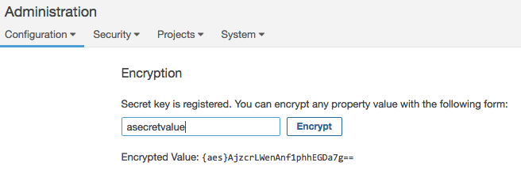 -
Use os valores criptografados na configuração do servidor SonarQube
Simplesmente copie esses valores criptografados para $ SONARQUBE-HOME / conf / sonar.propertiessonar.jdbc.password={aes}CCGCFg4Xpm6r+PiJb1Swfg== # Encrypted DB password ... sonar.secretKeyPath=C:/path/to/my/secure/location/my_secret_key.txt
Delegando a autenticação
O SonarQube vem com um banco de dados de usuário integrado, bem como a capacidade de delegar autenticação via HTTP Headers, GitHub Authentication, GitLab Authentication, SAML ou LDAP. Cada método oferece gerenciamento de identidade do usuário, sincronização / mapeamento de grupo e autenticação.
Mapeamento de grupo
Ao usar o mapeamento de grupo, as seguintes advertências se aplicam, independentemente do método de autenticação delegada usado:
- a associação em grupos sincronizados substituirá qualquer associação configurada localmente no SonarQube a cada login
- a associação a um grupo é sincronizada apenas se um grupo com o mesmo nome existir no SonarQube
-
a participação no grupo padrão
sonar-userspermanece (este é um grupo interno), mesmo que o grupo não exista no provedor de identidade
Quando o mapeamento de grupo é configurado, a fonte de autenticação delegada se torna o único local para gerenciar a associação ao grupo, e os grupos de usuários são buscados novamente a cada logon.
Autenticação de cabeçalho HTTP
Você pode delegar a autenticação do usuário a sistemas de terceiros (proxies / servidores) usando a autenticação de cabeçalho HTTP.
Quando esse recurso é ativado, o SonarQube espera que a autenticação seja tratada antes de qualquer consulta chegar ao servidor. A ferramenta que lida com a autenticação deve:
- interceptar chamadas para o servidor SonarQube
- cuide da autenticação
- atualize o cabeçalho da solicitação HTTP com as informações relevantes do usuário do SonarQube
- reencaminhe a solicitação para o SonarQube com as informações de cabeçalho apropriadas
Todos os parâmetros necessários para ativar e configurar esse recurso estão disponíveis no arquivo de configuração do servidor SonarQube (em $ SONARQUBE-HOME / conf / sonar.properties ).
Usar a autenticação de cabeçalho Http é uma maneira fácil de integrar sua implantação do SonarQube com uma implementação interna de SSO.
Autenticação GitHub
Você pode delegar autenticação ao GitHub Enterprise e GitHub.com usando um aplicativo GitHub OAuth dedicado. Como alternativa, se você estiver usando a decoração de solicitação de recebimento fornecida como parte do Developer Edition e acima, poderá aproveitar o aplicativo GitHub necessário para a decoração de RP também fornecer autenticação.
Aplicativo dedicado do GitHub OAuth
-
Você precisará primeiro criar um aplicativo GitHub OAuth. Clique aqui para obter instruções gerais:
- "URL da página inicial" é o URL público do seu servidor SonarQube, por exemplo "Administração> Geral> URL base do servidor
-
No
GitHub Enterprise,
"URL de retorno de
chamada de autorização" e no
GitHub.com,
"URL de retorno de
chamada de autorização do usuário" é
/ oauth2 / callback, por exemplo " https://sonarqube.mycompany.com/oauth2/callback "
-
No SonarQube, navegue para Administração> Configuração> Configurações gerais> Integrações do ALM> GitHub :
-
Defina
Ativado
como
true - Defina o ID do cliente como o valor fornecido pelo aplicativo de desenvolvedor do GitHub
- Defina o segredo do cliente para o valor fornecido pelo aplicativo de desenvolvedor do GitHub
-
Defina
Ativado
como
No formulário de login, o novo botão "Efetuar login no GitHub" permite que os usuários se conectem às suas contas do GitHub Enterprise.
Reutilize o aplicativo de decoração GitHub PR
- No aplicativo GitHub, em Permissão e eventos> Permissões do usuário : adicione acesso somente leitura em emails .
- Nas configurações do SonarQube, atualize o Client ID e Client Secret e use os valores definidos no aplicativo GitHub.
Se você já usou um aplicativo dedicado do GitHub OAuth para autenticação, ele poderá ser removido.
Autenticação GitLab
Você pode delegar autenticação ao GitLab usando um aplicativo GitLab OAuth dedicado.
Crie um aplicativo GitLab OAuth a partir da sua conta GitLab. Clique aqui para obter instruções gerais.
- Na caixa de texto Nome , nomeie seu aplicativo como SonarQube.
-
Na
caixa de texto
Redirect URI
, digite o URL do SonarQube com
o caminho
/oauth2/callback/gitlab. Por exemplohttps://sonarqube.mycompany.com/oauth2/callback/gitlab,. - Em Escopos , selecione api se você planeja ativar a sincronização de grupo. Em vez disso, você pode selecionar read_user se planeja delegar autenticação.
Depois de salvar seu aplicativo, o GitLab fornece seu ID e segredo do aplicativo . Mantenha-os à mão, abra sua instância do SonarQube e navegue para Administração> Configuração> Configurações gerais> Integrações do ALM> GitLab para concluir a configuração da autenticação do GitLab:
-
Defina
Ativado
como
true. - Digite o ID do aplicativo fornecido pelo GitLab na caixa de texto ID do aplicativo .
- Digite o Segredo fornecido pelo GitLab na caixa de texto Segredo .
No formulário de login, o novo botão "Efetuar login no GitLab" permite que os usuários se conectem às suas contas do GitLab.
Sincronização de grupo GitLab
Definir
grupos de usuários Sincronizar
para
true
a
Administração>
Configurações> Configurações gerais> ALM Integrações>
gitlab
associa grupos gitlab com grupos
SonarQube do mesmo nome (se existirem).
Os usuários do GitLab herdam a
associação a subgrupos de grupos-pai, para que um usuário que seja
membro de um grupo também seja membro dos subgrupos do grupo.
Para sincronizar um grupo ou subgrupo
GitLab com um grupo SonarQube, nomeie o grupo SonarQube com o caminho
completo do URL do grupo ou subgrupo GitLab.
Por exemplo, digamos que você tenha
um grupo GitLab chamado "Meu Grupo" com um subgrupo chamado "Meu
Subgrupo" e o URL do subgrupo seja
https://YourGitLabURL.com/my-group/my-subgroup
.
Você nomearia seu grupo SonarQube
my-group/my-subgroup
para sincronizá-lo com seu subgrupo
GitLab.
Autenticação SAML
Você pode delegar a autenticação a um provedor de identidade SAML 2.0 usando a autenticação SAML.
Limitações
- Solicitações de SAML não são assinadas. A validação da assinatura do cliente deve ser desativada no Identity Provider.
- Respostas criptografadas SAML não são suportadas. A criptografia SAML deve estar desabilitada no Identity Provider.
Exemplo: Usando Keycloak como um provedor de identidade SAML
O exemplo a seguir pode ser útil se você estiver usando o Keycloak como um provedor de identidade SAML. Se você não estiver usando o Keycloak, é provável que suas configurações sejam diferentes.
No servidor Keycloak, crie um novo cliente SAML
Crie um novo cliente
- "Client ID" é algo como "sonarqube"
- "Client Protocol" deve ser definido como "saml"
- "Cliente SAML Endpoint" pode ser deixado em branco
Configure o novo cliente
-
em Configurações
- Defina "Client Signature Required" como OFF
-
Defina "URIs de
redirecionamento válidos" para "
/ oauth2 / callback / *, EG https://sonarqube.mycompany.com/oauth2/callback/saml
-
em Escopos do cliente>
Escopos do cliente padrão, remova "role_list" de "Escopos do
cliente padrão atribuídos" (para evitar o erro
com.onelogin.saml2.exception.ValidationError: Found an Attribute element with duplicated Namedurante a autenticação) -
Nos mapeadores, crie um mapeador para cada atributo do usuário (observe que os valores fornecidos abaixo para Nome, Nome do atributo SAML, Nome do atributo da função são apenas valores de exemplo):
- Crie um mapeador para o logon:
- Nome: Login
- Mapeador Tipo: Propriedade do Usuário
-
Propriedade: Nome
de usuário (Observe que o logon não deve conter
caracteres especiais além de
.-_@atender às restrições do SonarQube.) - Nome do Atributo SAML: login
- Crie um mapeador para o nome:
- Nome nome
- Mapeador Tipo: Propriedade do Usuário
- Atributo do usuário: Nome de usuário (também pode ser outro atributo que você especificaria anteriormente para os usuários)
- Nome do Atributo SAML: name
- (Opcional) Crie um mapeador para o email:
- Nome: Email
- Mapeador Tipo: Propriedade do Usuário
- Propriedade: Email
- Nome do Atributo SAML: email
- (Opcional) Crie um mapeador para os grupos (se você confiar em uma lista de funções definidas em "Funções" da Região (não em "Funções" do cliente)):
- Nome: Grupos
- Tipo de mapeador: lista de funções
- Nome do Atributo da Função: groups
- Atributo de função única: LIGADO
- Se você confia em uma lista de grupos definidos em "Grupos":
- Nome: Grupos
- Tipo de mapeador: lista de grupos
- Nome do Atributo da Função: groups
- Atributo de função única: LIGADO
- Caminho completo do grupo: OFF
Faça o download do arquivo de configuração XML do Keycloak.
No SonarQube, configure a autenticação SAML
Vá para Administração> Configuração> Configurações gerais> Segurança> SAML
- Ativado deve ser definido como true
- ID do aplicativo é o valor do "ID do cliente" definido no Keycloak (por exemplo "sonarqube")
- O ID do provedor é o valor do atributo "EntityDescriptor"> "entityID" no arquivo de configuração XML (por exemplo " http: // keycloak: 8080 / auth / realms / sonarqube " em que sonarqube é o nome da região)
- URL de login SAML é o valor do atributo "SingleSignOnService"> "Local" no arquivo de configuração XML (por exemplo " http: // keycloak: 8080 / auth / realms / sonarqube / protocol / saml" )
- Certificado de provedor é o valor que você obtém em Configurações de Reaml -> Chaves -> clique no botão Certificado
- O atributo de login do usuário SAML é o valor definido no mapeador de login em "Nome do Atributo SAML"
- Atributo de nome de usuário SAML é o valor definido no mapeador de nomes em "Nome do Atributo SAML"
- (Opcional) O atributo de email do usuário SAML é o valor definido no mapeador de email em "Nome do Atributo SAML"
- (Opcional) Atributo do grupo SAML é o valor definido no mapeador de grupos em "Nome da Função / Grupo"
No formulário de login, o novo botão "Efetuar login com SAML" permite que os usuários se conectem à sua conta SAML.
Autenticação LDAP
Você pode configurar a autenticação e a autorização do SonarQube para um servidor LDAP (incluindo o Serviço LDAP do Active Directory) configurando os valores corretos em $ SONARQUBE-HOME / conf / sonar.properties .
As principais características são:
- Verificação de senha no mecanismo de autenticação externa.
- Sincronização automática de nomes de usuário e e-mails.
- Sincronização automática de relacionamentos entre usuários e grupos (autorização).
- Capacidade de autenticação nos sistemas de autenticação externo e interno. Há um fallback automático no sistema interno do SonarQube se o servidor LDAP estiver inativo.
- Durante o primeiro teste de autenticação, se a senha do usuário estiver correta, o banco de dados do SonarQube será preenchido automaticamente com o novo usuário. Cada vez que um usuário efetua login no SonarQube, o nome de usuário, o email e os grupos aos quais esse usuário pertence são atualizados no banco de dados do SonarQube. Você também pode optar por sincronizar a associação ao grupo, mas esse não é o padrão.
| Apache DS | OpenLDAP | Open DS | Diretório ativo | |
|---|---|---|---|---|
| Anônimo | ||||
| Simples | ||||
| LDAPS | ||||
| DIGEST-MD5 | ||||
| CRAM-MD5 | ||||
| GSSAPI |
= testado com sucesso
Configuração
- Configure o LDAP editando $ SONARQUBE-HOME / conf / sonar.properties (consulte a tabela abaixo)
-
Reinicie o servidor SonarQube e verifique o arquivo de log para:
INFO org.sonar.INFO Security realm: LDAP ... INFO o.s.p.l.LdapContextFactory Test LDAP connection: OK - Entrar no SonarQube
- No logout, os usuários receberão uma página de login ( / sessions / login ), na qual poderão optar por fazer login como usuário técnico ou como domínio, passando as credenciais apropriadas
No SonarScanners, recomendamos o uso de usuários técnicos locais para autenticação no SonarQube Server.
Configuração geral
| Propriedade | Descrição | Valor padrão | Requeridos | Exemplo |
|---|---|---|---|---|
sonar.security.realm |
Defina isso para
LDAP
autenticar primeiro no
sistema externo.
Se o sistema externo não
estiver acessível ou se o usuário não estiver definido no
sistema externo, a autenticação será realizada no banco de
dados interno do SonarQube.
|
Nenhum | sim | LDAP
(apenas valor possível)
|
sonar.authenticator.downcase |
Defina como true ao conectar-se a um servidor LDAP usando uma configuração que não diferencia maiúsculas de minúsculas. | false |
Não | |
ldap.url |
URL do servidor LDAP. Se você estiver usando ldaps, instale o certificado do servidor no armazenamento confiável Java. | Nenhum | sim | ldap://localhost:10389 |
ldap.bindDn |
O nome de usuário de um usuário LDAP ao qual se conectar (ou vincular). Deixe em branco para acesso anônimo ao diretório LDAP. | Nenhum | Não | cn=sonar,ou=users,o=mycompany |
ldap.bindPassword |
A senha do usuário com o qual se conectar. Deixe em branco para acesso anônimo ao diretório LDAP. | Nenhum | Não | secret |
ldap.authentication |
Os valores possíveis:
simple
,
CRAM-MD5
,
DIGEST-MD5
,
GSSAPI
.
Veja
o tutorial sobre
mecanismos de autenticação
|
simple |
Não | |
ldap.realm |
Consulte Autenticação Digest-MD5 , Autenticação CRAM-MD5 | Nenhum | Não | example.org |
ldap.contextFactoryClass |
Classe de fábrica de contexto. | com.sun.jndi.ldap.LdapCtxFactory |
Não | |
ldap.StartTLS |
Habilitar o uso de
StartTLS
|
false |
Não | |
ldap.followReferrals |
Siga as referências ou não. Consulte Referências no JNDI | true |
Mapeamento de Usuário
| Propriedade | Descrição | Valor padrão | Requeridos | Exemplo para o Active Directory |
|---|---|---|---|---|
ldap.user.baseDn |
Nome Distinto (DN) do nó raiz no LDAP a partir do qual procurar usuários. | Nenhum | sim | cn=users,dc=example,dc=org |
ldap.user.request |
Solicitação de usuário LDAP. | (&(objectClass=inetOrgPerson)(uid={login})) |
Não | (&(objectClass=user)(sAMAccountName={login})) |
ldap.user.realNameAttribute |
Atributo no LDAP que define o nome real do usuário. | cn |
Não | |
ldap.user.emailAttribute |
Atributo no LDAP que define o email do usuário. | mail |
Não |
Mapeamento de grupo Apenas grupos (não funções) e grupos estáticos (não grupos dinâmicos) são suportados. Clique aqui para mais informações.
Para a delegação de autorização, os grupos devem ser definidos primeiro no SonarQube . Em seguida, as seguintes propriedades devem ser definidas para permitir que o SonarQube sincronize automaticamente os relacionamentos entre usuários e grupos.
| Propriedade | Descrição | Valor padrão | Requeridos | Exemplo para o Active Directory |
|---|---|---|---|---|
ldap.group.baseDn |
Nome Distinto (DN) do nó raiz no LDAP a partir do qual procurar grupos. | Nenhum | Não | cn=groups,dc=example,dc=org |
ldap.group.request |
Solicitação de grupo LDAP. | (&(objectClass=groupOfUniqueNames)(uniqueMember={dn}))
|
Não | (&(objectClass=group)(member={dn})) |
ldap.group.idAttribute |
Propriedade usada para especificar o atributo a ser usado para retornar a lista de grupos de usuários no modo de compatibilidade. | cn |
Não | sAMAccountName |
Configuração de amostra
# LDAP configuration # General Configuration sonar.security.realm=LDAP ldap.url=ldap://myserver.mycompany.com ldap.bindDn=my_bind_dn ldap.bindPassword=my_bind_password # User Configuration ldap.user.baseDn=ou=Users,dc=mycompany,dc=com ldap.user.request=(&(objectClass=inetOrgPerson)(uid={login})) ldap.user.realNameAttribute=cn ldap.user.emailAttribute=mail # Group Configuration ldap.group.baseDn=ou=Groups,dc=sonarsource,dc=com ldap.group.request=(&(objectClass=posixGroup)(memberUid={uid}))Tópicos avançados de LDAP
Métodos de autenticação
Anonymous- Usado quando apenas o acesso somente leitura a entradas e atributos não protegidos é necessário ao vincular ao servidor LDAP.SimpleA autenticação simples não é recomendada para implantações de produção que não usem o protocolo seguro ldaps, pois ele envia uma senha de texto não criptografado pela rede.CRAM-MD5- O método de autenticação de resposta ao desafio (CRAM) baseado no algoritmo HMAC-MD5 MAC ( RFC 2195 ).DIGEST-MD5- Esta é uma melhoria no método de autenticação CRAM-MD5 ( RFC 2831 ).GSSAPI- GSS-API é API de serviço de segurança genérica ( RFC 2744 ). Um dos serviços de segurança mais populares disponíveis para a GSS-API é o Kerberos v5, usado na plataforma Windows 2000 da Microsoft.
Para uma discussão completa sobre as abordagens de autenticação LDAP, consulte RFC 2829 e RFC 2251 .
Vários servidores
Para configurar vários servidores:
# List the different servers ldap.servers=server1,server2 # Configure server1 ldap.server1.url=ldap://server1:1389 ldap.server1.user.baseDn=dc=dept1,dc=com ... # Configure server2 ldap.server2.url=ldap://server2:1389 ldap.server2.user.baseDn=dc=dept2,dc=com ...A autenticação será tentada em cada servidor, na ordem em que estão listados nas configurações, até que um seja bem-sucedido. O mapeamento de usuário / grupo será realizado no primeiro servidor em que o usuário for encontrado.
Observe que todos os servidores LDAP devem estar disponíveis ao (re) iniciar o servidor SonarQube.
Solução de problemas
-
Logs de conexão detalhados (e
possíveis códigos de erro recebidos do servidor LDAP) são enviados
para
$ SONARQUBE
HOME / logs / web.log_ do
SonarQube, quando o log está no
DEBUGmodo. -
O tempo limite ao executar a
análise do SonarQube usando os parâmetros Java LDAP está documentado
aqui:
http://docs.oracle.com/javase/jndi/tutorial/ldap/connect/config.html
.
Tais parâmetros podem ser
definidos em
sonar.web.javaAdditionalOptsno $ SONARQUBE-PRINCIPAL / conf / sonar.properties .
Aparência
Logo em casa
Você pode definir seu próprio logotipo "inicial" em Administração> Geral> Aparência . Basta fornecer um URL e largura da imagem. Idealmente, a largura aumentará a altura para 30 pixels. Este logotipo será usado na barra de menus e na página Sobre.
Conteúdo da página "Sobre"
Você também pode adicionar conteúdo à página Sobre, na qual os usuários anônimos acessam por padrão: Administração> Geral> Aparência .
Gravatar
O suporte ao Gravatar é ativado por padrão, usando gravatar.com. Você pode configurar um servidor diferente ou desativar completamente o recurso. Quando ativado, os gravatares aparecem ao lado da maioria dos usos do nome de usuário.
Mercado
Os administradores podem acessar o Marketplace em Administração> Marketplace . O Marketplace é o local para manter as peças da plataforma SonarQube atualizadas. Permite:
Vejo
- O SonarQube Edition atualmente instalado
- Quais plugins estão instalados
- Se as atualizações de plug-in estão disponíveis
- Quais outros plugins são compatíveis com a sua versão do SonarQube
Descobrir
- Quais outras edições estão disponíveis para ativar mais recursos
Instalar
- Novos plugins
- Atualizações de plug-in
Para visualizar / instalar atualizações de plug-ins, seu servidor SonarQube precisa de acesso à Internet. As instalações exigem que a plataforma seja reiniciada antes de entrar em vigor.
Operações pendentes
Quando você executa uma ação no Markplace (instala, atualiza ou desinstala um plug-in), um banner amarelo aparece no topo da página, mostrando as operações pendentes que serão executadas quando o SonarQube for reiniciado. As operações pendentes podem ser canceladas até que o servidor seja reiniciado.
Reinicie o SonarQube
A reinicialização do SonarQube pode
ser feita manualmente a partir da linha de comando, executando
sonar.sh restart
ou diretamente a partir da interface
do usuário:
- no Update Center, quando você tiver alterações pendentes, o botão reiniciar será exibido na faixa amarela (consulte Operações pendentes)
- na página Informações do sistema a qualquer momento
Atualizações manuais
Se o seu servidor não tiver acesso à Internet, você não poderá contar com o Marketplace para plug-ins e precisará lidar com as instalações e atualizações de plug-ins manualmente.
Para ver quais plug-ins estão disponíveis e qual versão de um plug-in é apropriada para o servidor, use a matriz da versão do plug - in , que é atualizada com a disponibilidade e compatibilidade atuais do plug-in.
Para instalar um plug-in, basta fazer o download usando o link de download manual na página de documentação do plug-in, coloque-o em $ SONARQUBE-HOME / extensions / downloads e reinicie o servidor.
A quais URLs o Marketplace se conecta?
O SonarQube Marketplace se conecta a https://update.sonarsource.org/ para obter a lista de plugins. A maioria dos plugins mencionados é baixada em:
Usando o Marketplace atrás de um proxy
O Marketplace usa conexões HTTP (S) com servidores externos para fornecer esses serviços. Se o SonarQube estiver localizado atrás de um proxy, informações adicionais deverão ser fornecidas no arquivo de configuração $ SONARQUBE-HOME / conf / sonar.properties :
http.proxyHost=<your.proxy.host>http.proxyPort=<yout.proxy.port>#If proxy authentication is required http.proxyUser=<your.proxy.user>http.proxyPassword=<your.proxy.password> Nota: as mesmas propriedades podem ser usadas no 'https'. formulário para conexões HTTPS.
Matriz da versão do plug-in
 = Suportado pelo SonarSource
= Suportado pelo SonarSource
 = Não compatível
= Não compatível
Serviço de limpeza
Quando você executa uma nova análise do seu projeto ou de suas ramificações ou solicitações de recebimento (PRs), alguns dados que estavam disponíveis anteriormente são limpos do banco de dados. Por exemplo, o código-fonte da análise anterior, as medidas nos níveis de diretório e arquivo e assim por diante são automaticamente removidos no final de uma nova análise. Além disso, alguns instantâneos de análise antigos, análises de relações públicas e ramificações também são removidos.
Por quê? Bem, é útil analisar um projeto com frequência para ver como sua qualidade evolui. Também é útil poder ver as tendências ao longo de semanas, meses, anos. Mas quando você olha para trás no tempo, não precisa realmente do mesmo nível de detalhe do estado atual do projeto. Para economizar espaço e melhorar o desempenho geral, o Limpador de Banco de Dados exclui algumas linhas no banco de dados. Aqui está sua configuração padrão:
-
Para cada projeto:
- apenas um instantâneo por dia é mantido após 1 dia. Os instantâneos marcados por um evento não são excluídos.
- apenas um instantâneo por semana é mantido após 1 mês. Os instantâneos marcados por um evento não são excluídos.
- apenas um instantâneo por mês é mantido após 1 ano. Os instantâneos marcados por um evento não são excluídos.
- somente os instantâneos com eventos de versão são mantidos após 2 anos. Instantâneos sem eventos ou apenas com outros tipos de eventos são excluídos.
- todos os instantâneos com mais de 5 anos são excluídos, incluindo os instantâneos marcados por um evento.
- Todos os problemas fechados com mais de 30 dias são excluídos
- O histórico no nível do pacote / diretório foi removido
Essas configurações podem ser alteradas em Administração> Geral> Limpador de banco de dados.
Notificações
No final de cada análise, as notificações são calculadas para cada usuário inscrito. Em seguida, de forma assíncrona, essas notificações são enviadas por email.
Para definir a frequência com a qual
a fila de notificações é processada, configure a
the sonar.notifications.delay
propriedade (em segundos) em
$ SONARQUBE-HOME / conf /
sonar.properties
.
O servidor deve ser reiniciado para
que o novo valor seja levado em consideração.
Quem recebe notificações
Somente usuários que se inscreverem receberão notificações. Com apenas uma exceção, não há funcionalidade de administrador para inscrever proativamente outro usuário. Se você acredita que um usuário deve receber notificações, é hora de praticar a arte suave da persuasão.
A exceção
As notificações serão enviadas automaticamente (sem a inclusão do usuário) aos usuários com direitos de Administração do Perfil de Qualidade quando os perfis de qualidade internos forem atualizados. Essas atualizações só podem acontecer através de uma atualização do analisador relevante. Esse tipo de notificação está ativado por padrão e pode ser alternado globalmente em Administração> Configurações gerais> Geral .
Configuração de email
Para configurar o servidor de email, vá para Administração> Configurações gerais> Email .
Verifique também a propriedade URL base do servidor em Administração> Configurações gerais> Geral para garantir que os links nesses e-mails de notificação sejam redirecionados para a URL correta do servidor SonarQube.
Logs do servidor e informações do sistema
A página Informações do sistema pode ser encontrada em Administração> Sistema . Dá acesso a informações detalhadas sobre o estado da sua instância do SonarQube.
Informação do sistema
Você pode procurar detalhes sobre sua instância em execução nesta página.
Baixar
Além disso, se você tiver um contrato de suporte, poderá ser solicitado por um representante de suporte para enviar as informações do sistema, que podem ser baixadas na página Administração> Sistema, usando o botão "Download das informações do sistema" na parte superior.
ID do servidor
O ID do servidor pode ser obtido nesta página expandindo a seção Sistema . Se você estiver executando uma instância comercial, também poderá encontrar esse valor na página Licença ( Administração> Configuração> Gerenciador de Licenças )
Histórico
O log do lado do servidor é controlado pelas propriedades definidas em $ SONARQUBE-HOME / conf / sonar.properties .
4 arquivos de log são criados: um por processo do SonarQube.
Nível de log
O nível de log do lado do servidor
pode ser personalizado por meio da
sonar.log.level
propriedade
Os valores suportados são:
INFO- o padrãoDEBUG- para logs avançados.TRACE- mostra logs avançados e todas as solicitações SQL e Elasticsearch.TRACEo log de nível diminui a velocidade do ambiente do servidor e deve ser usado apenas para rastrear problemas de desempenho de solicitações da web.
Nível de log por processo
O nível de log do lado do servidor pode ser ajustado com mais precisão para os 4 processos do SonarQube Server através da seguinte propriedade:
sonar.log.level.app- para o processo principal do SonarQube (também conhecido como WrapperSimpleApp, o processo de bootstrapper iniciando os outros 3)sonar.log.level.web- para o servidor da Websonar.log.level.ce- para o ComputeEngineServersonar.log.level.es- para o SearchServer
Rotação de Log
Para controlar a rolagem de log, use
o
sonar.log.rollingPolicy
time:[value]- para rotação baseada no tempo. Por exemplo, usetime:yyyy-MM-ddpara rotação diária e *time:yyyy-MMpara rotação mensal.size:[value]- para rotação baseada em tamanho. Por exemplosize:10MB,.none- sem rotação. Normalmente, isso seria usado quando os logs são manipulados por um sistema externo como logrotate.
sonar.log.maxFiles
é o número máximo de arquivos a serem
mantidos.
Esta propriedade é ignorada se
sonar.log.rollingPolicy=none
.
Acesso da interface do usuário a logs e níveis de log
A página Informações do sistema
permite baixar os arquivos de log atuais da sua instância (os arquivos
de log são rotacionados regularmente) e ajustar o nível de log por meio
de controles na parte superior da página.
As alterações feitas aqui são
temporárias e duram apenas até a próxima vez que a instância for
reiniciada; nesse momento, o nível será redefinido para o valor mais
permanente definido em
$ SONARQUBE-HOME / conf /
sonar.properties
.
Independentemente disso, se você
alterar seu nível de log
de
INFO
, mas com certeza alterá-lo
novamente assim que for prático;
os arquivos de log podem ficar muito
grandes muito rapidamente em níveis mais baixos de log.
Total de linhas de código
O número de linhas de código (para fins de licenciamento) em uma instância pode ser encontrada no Sistema de seção da página de Informações do sistema, e na página License ( Administração> Configurações> Gerenciador de licença em edições comerciais.
Se você estiver em uma edição comercial e estiver usando análise de Filial ou PR, tenha certeza de que apenas as linhas da maior filial de um projeto são consideradas para fins de licenciamento. As linhas de código no restante das ramificações são ignoradas.
Gerenciador de Licenças
O License Manager pode ser acessado em Administração> Configuração> License Manager como parte do Developer Edition e superior .
Gerenciador de Licenças
O License Manager permite a recuperação do seu ID do servidor (necessário para obter uma chave de licença) e a configuração da sua chave de licença fornecida pelo SonarSource.
Recuperando ID do Servidor
O ID do servidor está sempre disponível na página Gerenciador de licenças, bem como na seção Sistema das Informações do sistema.
Observe que, se a cadeia de conexão do banco de dados for atualizada, o ID do servidor será gerado novamente e uma nova licença será necessária. Quando é gerado, o ID do servidor é exclusivo. O mesmo ID do servidor nunca será gerado duas vezes, mesmo na mesma instância do SonarQube.
Definindo uma licença
Usando o botão "Definir nova licença", você pode definir uma nova licença para ativar ou desativar os recursos do SonarQube, ou simplesmente para atualizar sua licença.
Consumo de LOCs
O medidor indica a quantidade de LOCs que você está digitalizando no momento e permite verificar se você está próximo do limite e se precisa comprar LOCs adicionais.
Notificações de administrador global
O License Manager vem com dois mecanismos de notificação integrados (as notificações são enviadas aos Administradores Globais):
- quando a licença estiver prestes a expirar - enviada dois meses antes da expiração, com um lembrete um mês antes
- quando o limite LOC configurável é excedido - esse limite pode ser modificado através do indicador presente no medidor LOC
- o trabalho em segundo plano, que verifica o limite e decide se uma notificação deve ser enviada, é executado na inicialização do servidor e a cada 24 horas
- o trabalho em segundo plano não verifica a validade das configurações do servidor smtp e, se os endereços de e-mail estiverem configurados para administradores globais, portanto, para que as notificações sejam recebidas, essas configurações precisam ser definidas corretamente antes que o limite LOC seja atingido ou excedido
Seção de Recursos Incluídos
Esta seção da página Gerenciador de licenças lista os recursos comerciais que são ativados pela licença atualmente definida.
Apoio, suporte
Acesso ao suporte do SonarSource
Se sua Licença lhe dá o direito ao Suporte do SonarSource, uma guia Suporte aparecerá em Administração> Suporte para guiá-lo através das interações com o Suporte do SonarSource.
Esta página também permite coletar o arquivo de informações de suporte da sua instância. Certifique-se de fornecer este arquivo para qualquer interação com o Suporte do SonarSource.
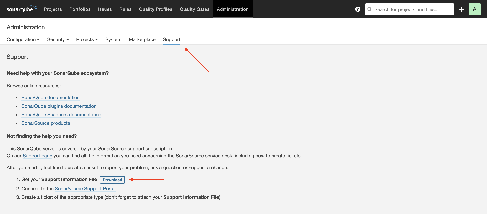
Monitoramento
Monitorar sua instância do SonarQube é essencial para mantê-la saudável e ter usuários felizes.
Para começar, você pode usar esta API da Web para obter "> a integridade da sua instalação do SonarQube:
- API / sistema / saúde
Memória de processo Java
O servidor de aplicativos SonarQube consiste em três principais processos Java:
- Web (incluindo servidor da Web incorporado)
- ElasticSearch
- Mecanismo de computação
Cada um desses processos Java possui suas próprias configurações de memória que podem ser definidas no diretório $ SONARQUBE-HOME / conf / sonar.properties Arquivo. As configurações de memória padrão fornecidas com o SonarQube são boas para a maioria das instâncias. Se você estiver suportando uma instância grande do SonarQube (mais de 100 usuários ou mais de 5.000.000 de linhas de código) ou uma instância que faça parte do pipeline de Integração Contínua, deverá monitorar o uso de memória e CPU dos três principais processos Java em sua instância , juntamente com o espaço em disco geral. O monitoramento permitirá que você veja se algum dos processos está com falta de recursos e tome medidas antes da falta de recursos. Há um grande número de ferramentas de monitoramento disponíveis, de código aberto e comerciais, para ajudá-lo nessa tarefa. O SonarSource não recomenda nem endossa nenhuma ferramenta específica.
Configurações de memória
Pode ser necessário aumentar as configurações de memória se você vir os seguintes sintomas:
- Suas ferramentas de monitoramento mostram que um ou mais dos processos do SonarQube estão atingindo seu limite de memória
- Qualquer um dos processos do SonarQube trava e / ou gera um erro de falta de memória no arquivo sonar.log
- Uma tarefa em segundo plano do SonarQube falha com um erro de falta de memória no log de tarefas em segundo plano
- O tamanho do índice Issues da sua instância do ElasticSearch (visível nas Informações do sistema) é maior ou igual à memória alocada ao processo Java do ElasticSearch
Você pode aumentar a memória máxima alocada para o processo apropriado, aumentando a configuração de memória -Xmx para o processo Java correspondente no seu arquivo $ SONARQUBE-HOME / conf / sonar.properties :
- Para a Web: sonar.web.javaOpts
- Para ElasticSearch: sonar.search.javaOpts (é recomendável definir a memória min e max com o mesmo valor para impedir que o heap seja redimensionado em tempo de execução, um processo muito caro)
- Para o Compute Engine: sonar.ce.javaOpts
O parâmetro -Xmx aceita números em megabytes (por exemplo, -Xmx2048m) e gigabytes (por exemplo, -Xmx2G)
Para obter informações detalhadas sobre o JMX Beans exposto pelo SonarQube e mais opções de monitoramento do ElasticSearch, visite nossa página Detalhes do monitoramento.
MBeans JMX expostos
O SonarQube Server oferece visibilidade sobre o que acontece internamente através da exposição do JMX MBeans.
Além dos Java MBeans clássicos que fornecem informações sobre o ClassLoader, SO, Memória e Threads, você tem acesso a mais quatro MBeans no SonarQube Server:
- ComputeEngine
- Base de dados
- SonarQube
Todos esses MBeans são somente leitura. Não é possível modificar ou redefinir seus valores em tempo real.
MBean ComputeEngineTasks
MBean ComputeEngineTasks
| Nome do Atributo | Descrição |
|---|---|
| Tempo de processamento | Meça o tempo (em ms) gasto para processar as Tarefas em segundo plano desde a última reinicialização do SonarQube. Seu valor sempre aumentará e será redefinido pelo reinício do SonarQube. Essa medida é muito poderosa quando combinada com as medidas SuccessCount e ErrorCount para obter o tempo médio para lidar com uma tarefa em segundo plano ou quando usada para entender quanto tempo o SonarQube Server está gastando durante um dia para lidar com as tarefas em segundo plano. Ele fornece uma indicação da carga no seu servidor. |
| ErrorCount | Número de tarefas em segundo plano que falharam desde a última reinicialização do SonarQube |
| PendingCount | Número de tarefas em segundo plano aguardando para serem processadas desde a última reinicialização do SonarQube |
| InProgressCount | Número de tarefas em segundo plano atualmente em processamento. Seu valor é 1 ou 0, pois o SonarQube pode processar apenas uma tarefa por vez. |
| SuccessCount | Número de tarefas em segundo plano processadas com sucesso desde a última reinicialização do SonarQube |
| WorkerCount | Número de tarefas em segundo plano que podem ser processadas ao mesmo tempo |
| PendingTime | Tempo pendente (em ms) da tarefa em segundo plano mais antiga aguardando para ser processada. Essa medida, junto com PendingCount, ajuda a saber se as análises estão empilhando e demorando muito para iniciar o processamento. Isso ajuda a avaliar se pode valer a pena configurar trabalhadores adicionais do Compute Engine (Enterprise Edition) ou nós adicionais (Data Center Edition) para melhorar o desempenho do SonarQube. |
Nota:
- o número total de tarefas em segundo plano manipuladas desde a última reinicialização do SonarQube é igual a SuccessCount + ErrorCount
- esses valores são redefinidos para seus valores padrão reiniciando o SonarQube
MBean do banco de dados
Os mesmos atributos estão disponíveis para o ComputeEngineServer e o WebServer.
| Nome do Atributo | Descrição |
|---|---|
| MigrationStatus | Os valores possíveis são: UP TO DATE, RODA UPGRADE, RODA DOWNGRADE, FRESH_INSTALL (disponível apenas para WebServer). |
| PoolActiveConnections | Número de conexões de banco de dados ativas |
| PoolIdleConnections | Número de conexões com o banco de dados aguardando para serem usadas |
| PoolInitialSize | Tamanho inicial do conjunto de conexões com o banco de dados. |
| PoolMaxActiveConnections | Número máximo de conexões de banco de dados ativas |
| PoolMaxIdleConnections | Número máximo de conexões de banco de dados aguardando para serem usadas |
| PoolMaxWaitMillis | Em milissegundos |
| PoolRemoveAbandoned | Valores possíveis: verdadeiro, falso |
| PoolRemoveAbandonedTimeoutSeconds | Em segundos |
SonarQube MBean
| Nome do Atributo | Descrição |
|---|---|
| LogLevel | Nível de log: INFO, DEBUG, TRACE |
| ServerId | ID do servidor SonarQube |
| Versão | Versão do SonarQube |
Como ativo o JMX?
Acesso local
Não há nada para ativar para exibir o SonarQube MBeans se sua ferramenta estiver sendo executada no mesmo servidor que o SonarQube Server.
Acesso remoto
Aqui estão exemplos de configuração para ativar o acesso remoto ao JMX MBeans.
Para o servidor da Web:
# JMX WEB - 10443/10444 sonar.web.javaAdditionalOpts=-Dcom.sun.management.jmxremote=true -Dcom.sun.management.jmxremote.ssl=false -Dcom.sun.management.jmxremote.authenticate=true -Dcom.sun.management.jmxremote.port=10443 -Dcom.sun.management.jmxremote.rmi.port=10444 -Dcom.sun.management.jmxremote.password.file=/opt/sonarsource/sonar/conf/jmxremote.password -Dcom.sun.management.jmxremote.access.file=/opt/sonarsource/sonar/conf/jmxremote.accessPara o ComputeEngine:
Não existe uma entrada javaAdditionalOpts específica, basta alterar a sonar.ce.javaOpts.
Exemplo de
jmxremote.access
:
# # JMX Access Control file # reader readonly admin readwrite \ create javax.management.monitor.*,javax.management.timer.*,com.sun.management.*,com.oracle.jrockit.* \ unregister
Exemplo de
jmxremote.password
:
# # JMX Access Password file # reader readerpassword admin adminpassword
Nota: em
jmxremote.password
, você deve aplicar
chmod 600
ou
400
por razões de segurança.
Mover projeto
O Project Move está disponível como parte da Enterprise Edition e acima .
O Project Move permite exportar um projeto de uma instância do SonarQube e importá-lo para outra instância do SonarQube configurada de forma idêntica. Para usar o Project Move, você deve ter a permissão Administer no projeto na instância de origem e acessar os sistemas de arquivos das duas instâncias.
Quando usar o "Projeto Mover"
Nos seguintes casos:
- você deseja criar uma instância central do SonarQube no nível corporativo e deseja manter o histórico criado nas N instâncias usadas anteriormente no nível da equipe
- sua empresa está adquirindo outra empresa que já possui uma instância central do SonarQube
- um aplicativo é transferido de uma equipe para outra em uma grande empresa e essa empresa possui várias instâncias do SonarQube
Pré-requisitos
Para poder exportar e carregar os dados do seu Projeto, as duas instâncias do SonarQube devem ter:
- exatamente a mesma versão
- os mesmos plugins com as mesmas versões
- as mesmas métricas personalizadas
- as mesmas regras personalizadas
Como exportar
Na instância de origem:
- reanalise o projeto uma última vez para garantir que ele seja preenchido com dados correspondentes à sua instalação atual do SonarQube
- navegue até o projeto e, no nível do projeto, escolha Configurações do projeto> Importar / Exportar
- clique no botão Exportar para gerar um arquivo zip contendo as configurações e o histórico do seu projeto (mas não o código-fonte). Observe que se você precisar alterar a chave do projeto, deverá fazê-lo antes de executar a exportação.
Um arquivo zip contendo todos os dados do projeto ex é gerado em $ SONAR SOURCE HOME / data / governança / despejos de projeto / exportação / _ nomeado < chave do projeto > .zip_
Como importar
Na instância de destino:
- Com um usuário com as permissões "Administrar sistema" e "Criar projetos", vá para Administração> Projetos> Gerenciamento e provisione o projeto usando a mesma chave que o projeto tinha na instância de origem.
- Configure as permissões do projeto e os perfis de qualidade e o portão de qualidade associados ao projeto
- Coloque o arquivo zip gerado no diretório $ SONAR_TARGET_HOME / data / governança / project_dumps / import
- Vá para a página inicial do projeto e escolha Configurações do projeto> Importar / Exportar
- Clique no botão Importar para começar a importar seus dados
- O código-fonte não está incluído no arquivo zip. Após a conclusão da importação, inicie uma análise para importar os arquivos de origem para a nova instância.
Notas:
- Se a importação for bem-sucedida, o arquivo zip será excluído automaticamente.
- Não é possível importar um projeto que já tenha sido analisado na instância de destino.
- Os relatórios de segurança em um projeto importado ficarão vazios até a análise ser executada.
Medidas personalizadas
O SonarQube coleta o máximo de medidas de maneira automatizada, mas existem algumas medidas para as quais isso não é possível, como quando: a informação não está disponível para coleta, a medida é calculada por um ser humano e assim por diante. Qualquer que seja o motivo, o SonarQube fornece um serviço para injetar essas medidas manualmente e permitir que você se beneficie de outros serviços: o serviço de Medidas Manuais. As medidas manuais inseridas serão selecionadas durante a próxima análise do projeto e posteriormente tratadas como medidas "normais".
Gerenciando métricas personalizadas
Assim como as medidas coletadas automaticamente, medidas manuais são os valores coletados em cada análise para métricas manuais. Portanto, a primeira coisa a fazer é criar a métrica na qual você deseja salvar sua medida. Para fazer isso, efetue login como administrador do sistema e vá para Administração> Configuração> Métricas personalizadas , onde a interface o guiará na criação da Métrica necessária.
Gerenciando medidas personalizadas
Medidas personalizadas podem ser inseridas no nível do projeto. Para adicionar uma medida, entre como administrador do projeto, navegue até o projeto desejado e escolha Configurações do projeto> Medidas personalizadas , onde você encontrará uma tabela com o valor mais recente da medida inserido para cada métrica.
Os valores inseridos nessa interface são "Pendente" e não serão visíveis fora desta interface administrativa até a próxima análise.
Desempenho do mecanismo de computação
A capacidade de gerenciar o desempenho do Compute Engine está disponível como parte da Enterprise Edition e acima .
Como posso obter análises através da Fila do Compute Engine mais rapidamente?
Se as análises estiverem demorando muito para serem processadas, talvez seja necessário aumentar o número de trabalhadores do Compute Engine (CE) ( Administração> Projetos> Tarefas em segundo plano> Número de trabalhadores ).
Há dois casos a serem considerados:
- lentidão vem do fato de que a fila geralmente está cheia de tarefas pendentes
- tarefas individuais levam muito tempo para serem processadas
No primeiro caso, aumentar o número de trabalhadores poderia ajudar. O segundo caso deve ser cuidadosamente avaliado. Em ambos os casos, ao considerar aumentar o número de trabalhadores da CE, duas perguntas devem ser respondidas.
- minha infraestrutura me permite aumentar o número de trabalhadores?
- até que ponto devo aumentar o número de trabalhadores? IE Qual número devo configurar?
Aumentar o número de trabalhadores aumentará o estresse nos recursos consumidos pelo Compute Engine. Esses recursos são:
- o banco de dados
- E / S de disco
- rede
- amontoar
- CPU
Desses, apenas os dois últimos são internos ao CE.
Se a lentidão vier de algum dos recursos externos (banco de dados, E / S de disco, rede), o aumento do número de trabalhadores poderá realmente retardar o processamento de relatórios individuais (pense em duas pessoas tentando entrar por uma porta ao mesmo tempo) . No entanto, se sua lentidão é causada por grandes relatórios de análise individual que monopolizam o trabalhador do CE por longos períodos de tempo, a ativação do processamento paralelo adicionando outro trabalhador pode ajudar. Mas se você precisar, dê uma olhada nos recursos internos.
Os funcionários de CE não consomem muita CPU e o uso de memória depende inteiramente do projeto que foi analisado. Alguns precisam de muita memória, outros não. Porém, com vários funcionários da CE, você deve aumentar o tamanho da pilha da CE em um múltiplo do número de trabalhadores. A mesma lógica se aplica à CPU: se a execução com um trabalhador consumir até Y% da CPU, você deve planejar os trabalhadores Z que exigem Y * Z% da CPU.
Para diagnosticar com precisão sua situação, monitore a latência da rede, a E / S da instância do SonarQube e o uso da CPU e da memória do banco de dados para avaliar se a lentidão está principalmente / principalmente / apenas relacionada a recursos externos.
Ferramenta de cópia do banco de dados SonarQube
A SonarQube DB Copy Tool está disponível para clientes com suporte ao SonarSource .
Essa ferramenta é fornecida para ajudá-lo a migrar seu banco de dados SonarQube de um fornecedor de banco de dados para outro. Se, por exemplo, você está usando sua instância do SonarQube com Oracle e deseja migrar para o PostgreSQL sem perder seu histórico de análise, a SonarQube DB Copy Tool é o que você precisa.
Nas linhas a seguir, falaremos sobre instâncias de banco de dados SonarQube "source" e "target". A instância de origem é o banco de dados que você deseja descartar e o destino é o que você deseja mover.
O procedimento é basicamente o seguinte:
- conectar-se aos bancos de dados de origem e de destino
- leia os dados da tabela do banco de dados de origem por tabela
- salve os dados na tabela de banco de dados de destino por tabela
- recriar as seqüências, índice, ... no banco de dados de destino
Instalação
A SonarQube DB Copy Tool é fornecida como um arquivo JAR independente. Ele não deve ser instalado nas instâncias de origem ou destino do SonarQube . Coloque o JAR onde você desejar na sua máquina, o único pré-requisito é que essa máquina seja autorizada a acessar seus bancos de dados de origem e destino SonarQube.
A versão do JAR a ser usada deve ser pelo menos 1.3.3.627
Fase de preparação da cópia do banco de dados
Na fase de preparação, você prepara o banco de dados de destino configurando o esquema do SonarQube e preenchendo-o com as tabelas necessárias para terminar com o mesmo esquema de banco de dados na origem e no destino.
- Verifique se o banco de dados de destino está em funcionamento
-
No seu banco de dados de destino,
crie o
sonaresquema. - Faça o download e expanda uma cópia do SonarQube que corresponda exatamente à versão que você está executando.
- Configure sua cópia do SonarQube para conectar-se ao banco de dados de destino. (Se você colocou sua cópia do SonarQube no mesmo servidor que executa sua instância principal do SonarQube, também precisará configurar portas não padrão para sua instância do SonarQube de cópia.)
- Inicie sua instância do SonarQube de cópia. Ele se conectará ao seu destino vazio e preencherá o esquema.
- Depois que sua instância de cópia estiver em funcionamento (isso indica que o esquema está totalmente preenchido), você pode parar e excluí-lo.
- Atualize as Estatísticas do banco de dados no banco de dados de destino antes de reiniciar o SonarQube
Nesse ponto, você tem em seus bancos de dados de origem e destino exatamente as mesmas listas de tabelas.
Fase de execução da cópia do banco de dados
Existem apenas quatro etapas nesta fase:
- Pare sua instância principal do SonarQube.
- Execute o jar de comando base com os parâmetros corretos.
- Atualize a configuração da sua instância principal do SonarQube para apontar para o banco de dados de destino
- Reinicie sua instância principal do SonarQube.
Comando base
java -jar sonar-db-copy-1.3.3.627-jar-with-dependencies.jarParâmetros
| Nome | Descrição | Requeridos | |
|---|---|---|---|
-help |
Imprimir estes parâmetros ajuda | não | |
-urlSrc |
URL JDBC do banco de dados de origem | sim | |
-userSrc |
Nome de usuário do banco de dados de origem | sim | |
-pwdSrc |
Senha do banco de dados de origem | sim | |
-urlDest |
URL JDBC do banco de dados de destino | sim | |
-userDest |
Nome de usuário do banco de dados de destino | sim | |
-pwdDest |
Senha do banco de dados de destino | sim | |
-driverDest |
Driver JDBC do banco de dados de destino | não | |
-driverSrc |
Driver JDBC do banco de dados de origem | não | |
-T |
Lista separada por vírgula de tabelas a serem migradas | não |
Exemplos de execução
O primeiro sonar-db-copy verifica se
os URLs podem ser alcançados e as versões do banco de dados:
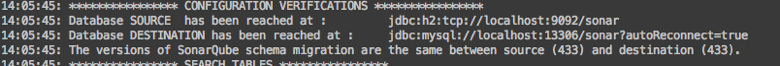
Quando as versões são diferentes, o
aplicativo para.

Em algum momento em que você
reiniciou a cópia, a versão do banco de dados de destino é 0. Isso não é
um problema, a cópia continuará.

Em seguida, ele pesquisa tabelas no
banco de dados de origem e destino:
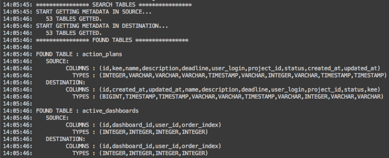
Se houver tabelas ausentes, você lerá
este log:
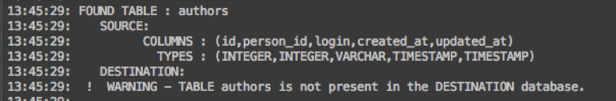
O segundo sonar-db-copy trunca
tabelas no banco de dados de destino e indica o número de tabelas
eliminadas:

Obviamente, as tabelas ausentes não
podem ser limpas:
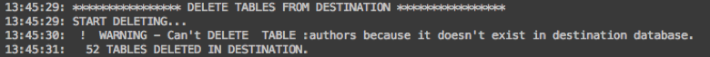
Terceiro, o sonar-db-copy reproduz
dados da origem ao destino e ajusta a sequência do banco de dados de
destino após a cópia:

Se houver algumas tabelas ausentes:

Se aparecerem erros durante a cópia,
o processo NÃO será interrompido, mas os erros serão exibidos:

No final, o sonar-db-copy reitera a diferença entre o banco de dados de origem e destino. Uma mensagem de erro será exibida se os bancos de dados forem diferentes. 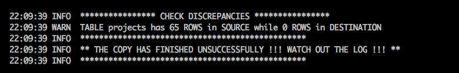
Autenticação da API da Web
O SonarQube fornece API da web para acessar suas funcionalidades a partir de aplicativos. Os serviços da Web que compõem a API da Web são documentados no SonarQube, através da URL / web_api, que também pode ser acessada a partir de um link no rodapé da página.
Os serviços administrativos da Web são protegidos e exigem que o usuário tenha permissões específicas. Para ser autenticado, o usuário deve fornecer credenciais conforme descrito abaixo.
Token de Usuário
Esta é a maneira recomendada. Os benefícios são descritos na página Token do Usuário . O token é enviado através do campo de login da autenticação básica HTTP, sem nenhuma senha.
# note that the colon after the token is required in curl to set an empty password curl -u THIS_IS_MY_TOKEN: https://sonarqube.com/api/user_tokens/searchAcesso básico HTTP
O login e a senha são enviados pelos campos padrão do HTTP Basic:
curl -u MY_LOGIN:MY_PASSWORD https://sonarqube.com/api/user_tokens/searchOs usuários que se autenticam no aplicativo Web por meio de um provedor OAuth, por exemplo, GitHub ou Bitbucket, não têm credenciais e não podem usar o modo HTTP Básico. Eles devem gerar e usar tokens.
Adicionando regras de codificação
Há duas maneiras de estender as regras de codificação:
- Escrevendo regras de codificação usando Java através de um plug-in SonarQube
- Adicionando regras XPath diretamente através da interface da web SonarQube
Se os dois estiverem disponíveis, a API Java terá mais recursos do que o XPath, e é geralmente preferível.
Antes de implementar uma nova regra de codificação, considere se ela é específica para o seu próprio contexto ou pode beneficiar outros. Se isso pode beneficiar outras pessoas, você pode propor no Fórum da Comunidade . Se houver interesse compartilhado, ele poderá ser implementado diretamente no plug-in de idioma relacionado. Isso significa menos manutenção para você e benefícios para os outros.
Suporte de regra personalizado por idioma
Os idiomas não listados aqui não são compatíveis com regras personalizadas
| XPath 1.0 | Java | De outros | |
|---|---|---|---|
| C # | - | - | Importando problemas de analisadores Roslyn de terceiros (C #, VB.NET) |
| COBOL | - | - | |
| Flex | - | - | |
| Java | - | - | |
| Javascript | - | - | |
| PHP | - | - | |
| PL / SQL | - | - | |
| PL / I | - | - | |
| Pitão | - | - | |
| RPG | - | - | |
| VB.NET | - | - | Importando problemas de analisadores Roslyn de terceiros (C #, VB.NET) |
| XML | - | - |
Adicionando regras de codificação usando Java
Escrever regras de codificação em Java é um processo de seis etapas:
- Crie um plug-in do SonarQube.
- Coloque uma dependência na API do plug-in de idioma para o qual você está escrevendo regras de codificação.
- Crie quantas regras personalizadas forem necessárias.
- Gere o plug-in SonarQube (arquivo jar).
- Coloque esse arquivo jar no diretório SONARQUBE_HOME / extensions / plugins.
- Reinicie o servidor SonarQube.
Consulte as páginas a seguir para ver exemplos e detalhes sobre como criar regras de codificação
Adicionando regras de codificação usando XPATH
O SonarQube fornece uma maneira rápida e fácil de adicionar novas regras de codificação diretamente via interface da web para certos idiomas usando expressões XPath 1.0. Para XML, que já está imediatamente acessível ao XPath, você pode simplesmente escrever suas regras e verificá-las usando qualquer uma das ferramentas disponíveis gratuitamente para examinar o XPath no XML. Se você estiver escrevendo regras para XML, vá para a seção Adicionando sua regra ao servidor depois de escrever suas regras.
Para outros idiomas, como acessar uma variável, por exemplo, no XPath é menos óbvio, fornecemos ferramentas.
Escrevendo uma regra XPath usando o SSLR Toolkit
As regras devem ser escritas no XPath
(versão 1.0) para navegar na
Abstract Syntax Tree
(AST)
do idioma
.
Para a maioria dos idiomas, um SSLR
Toolkit é fornecido para ajudá-lo a navegar no AST.
Você precisa fazer o download do
sslr-{language}-toolkit-{version}.jar
arquivo correspondente à versão do
plug-in de seu idioma na sua instância do SonarQube.
O SSLR Toolkit de cada idioma é um aplicativo independente que exibe o AST para uma parte da fonte de código que você alimenta, permitindo a leitura dos nomes e atributos do nó da amostra de código e a expressão XPath. O conhecimento do idioma XPath é o único pré-requisito e há muitos tutoriais sobre o XPath online.
A versão mais recente do SSLR Toolkit pode ser baixada nos seguintes locais:
Para uma visualização SSLR, considere o seguinte exemplo de código-fonte:
function HelloWorld(hour) { if (hour) { this.hour = hour; } else { var date = new Date(); this.hour = date.getHours(); } this.displayGreeting = function() { if (this.hour >= 22 || this.hour <= 5) document.write("Good night, World!"); else document.write("Hello, World!"); } }Ao analisar o código fonte, o SonarQube cria uma Árvore de Sintaxe Abstrata (AST), e o SSLR Toolkit fornecido para cada idioma mostrará o AST do SonarQube para um determinado trecho de código. Aqui está o AST para nossa amostra:
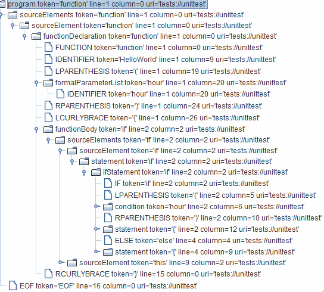
A linguagem XPath fornece uma maneira de escrever regras de codificação navegando neste AST, e o SSLR Toolkit para a linguagem permitirá que você teste suas novas regras com o código de amostra.
Adicionando sua regra ao servidor
Depois que sua nova regra for escrita, você poderá adicioná-la SonarQube:
- Faça login como administrador de perfil de qualidade
- Vá para a página Regras
- Selecione o idioma para o qual você deseja criar a regra XPath
- Marque o critério do modelo e selecione "Mostrar apenas modelos"
- Procure o modelo de regra XPath
- Clique nele para selecioná-lo e use os controles da interface para criar uma nova instância
- Preencha o formulário que aparece
- Depois de criar sua regra, você precisará adicioná-la a um Perfil de qualidade e executar a análise para vê-la em ação.
Diretrizes de regra de codificação
Estas são as diretrizes que o SonarSource usa internamente para especificar novas regras. As regras nos plugins da comunidade não precisam seguir essas diretrizes. Eles são fornecidos aqui apenas no caso de serem úteis.
Observe que os campos "title", "description" e "message" têm um formato diferente quando o tipo de regra é "Hotspot".
Diretrizes aplicáveis a todas as regras
Exemplos de código
Não dê exemplos que façam referências a empresas ou organizações reais:
$fp = file_get_contents("https://www.real-company.com"); Deve ser substituído por um site neutro:
$fp = file_get_contents("https//www.example.com"); // or even better: $fp = file_get_contents("https://localhost");Ver / Referências
Quando é feita referência a uma especificação de padrões, por exemplo, MISRA, as seguintes etapas também devem ser seguidas:
- adicione tags relacionadas, como segurança, bug etc.
- adicione a etiqueta / etiqueta relevante relacionada ao padrão, como cwe, misra etc. (se você esquecer, a automação noturna será lembrada por você).
- atualize o campo apropriado na guia Referências com o ID citado. (Se você esquecer, a automação noturna lembrará para você.)
Se necessário, as referências a outras regras devem ser listadas no cabeçalho "Consulte também". Se existir um título "Ver" na regra, o título "Consulte também" deverá estar no nível h3. Caso contrário, use um h2 para isso.
Outras regras devem ser vinculadas somente se forem relacionadas ou contraditórias (como um par de regras sobre onde deve ir).
Por que listar referências a outras regras em "ver também" em vez de "ver"? A seção ver é usada para suportar a regra atual e uma regra não pode ser usada como justificativa para outra regra.
Tipo de regra
Agora que você detalhou a descrição, deve ter uma ideia clara de que tipo de regra é essa, mas para ser explícito:
Bug - Algo que está errado ou potencialmente errado.
Cheiro de código - Algo que irá confundir um mantenedor ou fazer com que ele tropece na leitura do código.
Vulnerabilidade - Algo errado que afeta a segurança do aplicativo e, portanto, precisa de uma correção.
Ponto de acesso - falta uma proteção opcional e o desenvolvedor precisa fazer uma revisão antes de decidir se deve aplicar uma correção.
Às vezes, a linha entre Bug e Code Smell é confusa. Em caso de dúvida, pergunte-se: "O código que quebra essa regra está fazendo o que o programador provavelmente pretendia?" Se a resposta for "provavelmente não", é um bug. Tudo o resto é um cheiro de código.
As principais diferenças entre vulnerabilidades e pontos ativos são explicadas na página pontos de segurança . Durante a especificação de uma regra, as seguintes diretrizes também podem ajudar:
- A dificuldade de explorar um ponto fraco não deve ser um critério para especificar um ponto de acesso ou uma vulnerabilidade.
- Vulnerabilidades e pontos de acesso não devem se sobrepor, mas podem estar relacionados ao mesmo assunto. Por exemplo, com o ponto de acesso RSPEC-2077 , as consultas SQL formatadas são realçadas e recomendamos o uso de instruções de preparação como uma proteção adicional para evitar vulnerabilidades de injeção de SQL ( RSPEC-3649 ).
Gravidades padrão
Ao avaliar a gravidade padrão de uma regra, a primeira coisa a fazer é se perguntar "qual a pior coisa que poderia acontecer?" Ao responder, você deve considerar a Lei de Murphy sem prever o Armagedom.
Depois de ter sua resposta, é hora de avaliar se o impacto e a probabilidade da pior coisa são altos ou baixos. Para fazer isso, faça a si mesmo estas perguntas específicas:
Vulnerabilidade
- Impacto: a exploração da vulnerabilidade pode resultar em danos significativos aos seus ativos ou usuários? (Sim = Alto)
- Probabilidade: Qual é a probabilidade de um hacker conseguir explorá-lo? Qual é o tempo para corrigir o problema?
Erro
- Impacto: o bug pode causar um travamento no aplicativo ou danificar os dados armazenados? (Idiomas em que um erro pode causar o encerramento do programa: COBOL, Python, PL / SQL, RPG.)
- Probabilidade: Qual é a probabilidade de o pior acontecer?
Code Smell
- Impacto: o Code Smell poderia levar um mantenedor a introduzir um bug?
- Probabilidade: Qual é a probabilidade de o pior acontecer?
Depois de fazer suas avaliações de Impacto e Probabilidade, o resto é fácil:
| impacto | probabilidade | |
|---|---|---|
| Blocker | ||
| Crítico | ||
| Principal | ||
| Menor |
Tag
As regras podem ter tags 0-n, embora a maioria das regras deva ter pelo menos uma. Muitas das tags comuns entre idiomas estão descritas nos documentos de problemas .
Avaliação do custo de remediação
Para a maioria das regras, o custo da correção do SQALE é constante por problema. O objetivo desta seção é ajudar a definir o valor dessa constante e unificar a maneira como essas estimativas são feitas para evitar grandes discrepâncias entre os plug-ins de idiomas.
Primeiro, classifique o esforço para executar a correção:
- TRIVIAL Não há necessidade de entender a lógica e nenhum impacto potencial. Exemplos: remova importações não utilizadas, substitua tabulações por espaços, remova a chamada para System.out.println () usada para fins de depuração, ...
- FÁCIL Não há necessidade de entender a lógica, mas os possíveis impactos. Exemplos: renomear um método, renomear um parâmetro, remover método privado não utilizado, ...
- MÉDIO É necessário entender a lógica de um pedaço de código antes de fazer uma refatoração pequena e fácil (1 ou 2 linhas de código), mas não é necessário entender o quadro geral. Exemplos: CURSORs não devem ser declarados dentro de um loop, a instrução EXAMINE não deve ser usada, SE deve ser fechada com END-IF, ...
- PRINCIPAL É necessário entender a lógica de um pedaço de código e cabe ao desenvolvedor definir a ação de correção. Exemplos: Muitas instruções IF aninhadas, Métodos não devem ter muitos parâmetros, UNION não deve ser usado nas instruções SQL SELECT, Método java público deve ter um javadoc, Evite usar métodos obsoletos, ...
- ALTO A ação de correção pode levar a um impacto local no design do aplicativo. Exemplos: as classes não devem ter muitas responsabilidades, os programas Cobol não devem ter muitas linhas de código, restrição de arquitetura, ...
- COMPLEXO A ação de correção pode levar a um impacto no design geral do aplicativo. Exemplos: Evite ciclos entre pacotes, ...
Em seguida, use a tabela a seguir para obter o custo da correção de acordo com o esforço de correção necessário e o idioma:
| Trivial | Fácil | Médio | Principal | Alto | Complexo | |
|---|---|---|---|---|---|---|
| ABAP, COBOL, ... | 10min | 20 minutos | 30 minutos | 1h | 3h | 1d |
| Outras línguas | 5min | 10min | 20 minutos | 1h | 3h | 1d |
Para regras que usam as funções de correção "linear" ou "linear com deslocamento", o campo "Esforço a corrigir" deve ser alimentado em cada problema e esse campo é usado para calcular o custo da correção.
Local (is) de emissão e destaque
Para qualquer regra, o destaque do comportamento deve ser consistente entre os idiomas, dentro dos limites do que é relevante para cada idioma.
Quando possível, cada problema deve ser levantado na linha de código que precisa de correção, com destaque limitado à parte da linha a ser corrigida. Por exemplo:
- um problema para um método com nome errado deve ser levantado na linha com o nome do método e o nome do método em si deve ser destacado.
Quando a correção de um problema requer ação em várias linhas, o problema deve ser levantado no bloco mais baixo que inclui todas as linhas relevantes. Por exemplo, um problema para:
- a complexidade do método deve ser aumentada na assinatura do método
- A contagem de métodos em uma classe deve ser aumentada na declaração de classe
Quando um problema pode ser esclarecido, destacando vários segmentos de código, como um problema de complexidade do método, locais de problemas adicionais podem ser destacados e, opcionalmente, mensagens adicionais podem ser registradas para esses locais. Em geral, essas diretrizes devem ser seguidas para locais de problemas secundários:
- destaque o código mínimo para mostrar a contribuição da linha para o problema.
- evite usar uma mensagem adicional se o local secundário provavelmente estiver no mesmo problema que o próprio problema. Por exemplo: a regra "Parâmetros deve ser final" levantará um problema no nome do método e destacará cada parâmetro não final. Como todos os locais provavelmente estão na mesma linha, mensagens adicionais apenas confundem o problema.
- não escreva um romance. A mensagem para um local secundário deve ser uma dica para empurrar o usuário na direção certa. Não assuma a interface com uma narrativa.
Diretrizes para regras de bug, vulnerabilidade e cheiro de código
Títulos
- O título da regra deve corresponder ao padrão "X não deve [Y] Y" para a maioria das regras. Observe que o padrão "deveria [não]" é muito forte para as regras de localização, que são sobre observações no código. A procura de títulos deve ser neutra, como "Faixa x".
-
Sendo todas as outras coisas iguais, a forma positiva é preferida. POR EXEMPLO
- "X deve Y" é preferível a
- "X não deve Z"
-
Os títulos devem ser escritos no plural, se possível. POR EXEMPLO
- Flibbers devem gibbet
- Um Flibber deve gibbet
- Qualquer parte do código no título da regra deve estar entre aspas duplas (e não entre aspas simples).
- Não deve haver categoria / tag com o prefixo do título da regra, como "Acessibilidade - as tags de imagem devem ter um atributo de texto alternativo"
- Os títulos devem ser o mais concisos possíveis. Em algum lugar, cerca de 70 ou 80 caracteres é o máximo ideal, embora isso nem sempre seja possível.
Exemplos de títulos não conformes:
- O arquivo não deve ter muitas linhas de código // Não compatível; forma singular usada
- Evite arquivo com muitas linhas de código // Não compatível; não segue o padrão "x não deve [y]"
- Muitas linhas de código // Não compatível
- Não use "Sistema. (Saída / erro)" // Não compatível
- Os parâmetros em uma função virtual de substituição devem usar os mesmos argumentos padrão da função que eles substituem ou não especificar nenhum argumento padrão // Não compatível; waaaay por muito tempo
Soluções compatíveis:
- Os arquivos não devem ter muitas linhas de código
- "Sistema. (Saída / erro)" não deve ser usado para registrar mensagens
- A substituição de funções virtuais não deve alterar os padrões dos parâmetros
Começar com o assunto, como "Arquivos", garantirá que todas as regras aplicáveis aos arquivos sejam agrupadas.
Descrições
As descrições das regras devem conter as seguintes seções na ordem listada:
- Justificativa (sem rótulo) - explicando por que essa regra faz sentido. Se não estiver absolutamente claro da lógica que circunstâncias farão surgir um problema, esta seção deverá terminar com "Esta regra levanta um problema quando [inserir circunstâncias aqui]".
-
Exemplo de código não conforme - fornecendo alguns exemplos de problemas
-
Idealmente, os exemplos
devem depender dos valores padrão de qualquer parâmetro que
a regra possua e esses valores padrão devem ser mencionados
antes do bloco de código.
Isso é para benefício dos
usuários cujos parâmetros de regra são ajustados para algo
diferente dos valores padrão.
EG Com um parâmetro de:
:.log4j.* - As linhas nesses exemplos de código em que os problemas são esperados devem ser marcadas com um comentário "Não compatível"
- Comentários "compatíveis" podem ser usados para ajudar a demonstrar a diferença entre o que é e o que não é permitido pela regra
- É aceitável omitir esta seção quando a demonstração de não conformidade demorar muito, por exemplo, "Classes não devem ter muitas linhas de código"
-
Idealmente, os exemplos
devem depender dos valores padrão de qualquer parâmetro que
a regra possua e esses valores padrão devem ser mencionados
antes do bloco de código.
Isso é para benefício dos
usuários cujos parâmetros de regra são ajustados para algo
diferente dos valores padrão.
EG Com um parâmetro de:
-
Solução compatível - demonstrando como corrigir os problemas anteriores. É bom ter, mas não necessário, para regras que detectam bugs.
- Não há necessidade de marcar nada como "compatível" na solução compatível; tudo aqui é compatível por definição
- É aceitável omitir esta seção quando houver muitas soluções igualmente viáveis.
- Exceções (opcional) - listando e explicando alguns casos de uso específicos em que nenhum problema é registrado, mesmo que alguns sejam esperados. Observe que, às vezes, isso é incorporado à lógica.
- Consulte (opcional) - listando referências e / ou links para padrões externos, como MISRA, SEI, CERT, etc. Preterido (opcional): listando regras de substituição com links
As amostras de código para COBOL devem estar em maiúsculas.
Quando exibido no SonarQube, qualquer
código ou palavra-chave na descrição deve estar entre
tags. For descriptions written in JIRA, this means using
double curly braces ({{and }}) to enclose such text.
They will be translated in the final output.
Mensagens
As mensagens de problemas devem conter a mensagem de correção para regras de erros e qualidade. Para regras de bug em potencial, deve ficar explícito que é necessária uma revisão manual. Deve estar no humor imperativo ("Do x") e, portanto, começar com um verbo.
Uma mensagem de problema sempre deve terminar com um ponto ('.'), Pois é uma sentença real, a menos que termine com uma expressão regular; nesse caso, a expressão regular deve ser precedida por dois pontos e deve terminar a mensagem.
Qualquer parte do código na mensagem da regra deve ser colocada entre aspas duplas (e não entre aspas simples). Além disso, se um problema for acionado porque um número estava acima de um valor limite, o número e o valor limite deverão ser mencionados na mensagem do problema.
Mensagens de amostra:
- Remova ou refatorar essa instrução "switch" inútil. // Compatível
- Essa declaração "switch" é inútil e deve ser refatorada ou removida. // Não conforme
- Toda declaração "switch" deve ter pelo menos uma cláusula de caso. // Não conforme
- Renomeie essa variável para obedecer à expressão regular: [az] + // Compatível
Especificação da amostra
Exceções genéricas não devem ser lançadas
Usando exceções genéricas
tais como
Error
,
RuntimeException
,
Throwable
, e
Exception
impede que chamam métodos de
manipulação verdadeiras exceções, gerados pelo sistema diferente
do que erros geradas pelo aplicativo.
Exemplo de código não conforme
With the default regular expression [a-z][a-zA-Z0-9]+: try { /* ... */ } catch (Exception e) { LOGGER.info("context"); } // Noncompliant; exception is lost try { /* ... */ } catch (Exception e) { LOGGER.info(e); } // Noncompliant; context is required try { /* ... */ } catch (Exception e) { LOGGER.info(e.getMessage()); } // Noncompliant; exception is lost (only message is preserved) try { /* ... */ } catch (Exception e) { // Noncompliant - exception is lost throw new RuntimeException("context"); }Solução compatível
try { /* ... */ } catch (Exception e) { LOGGER.info("context", e); } try { /* ... */ } catch (Exception e) { throw new RuntimeException("context", e); }
Exceções Exceções
genéricas nas assinaturas
dos métodos de substituição são ignoradas.
@Override public void myMethod() throws Exception {...}Vejo
MISRA C:2004, 4.5.2MITRE, CWE-580 - clone() Method Without super.clone()
Veja também
S4567 - Título da regra aqui
Diretrizes para regras de ponto de acesso
See RSPEC-2092 for an example of Hotspot rule.
Títulos
- O título deve começar com um verbo na forma de particípio presente (-ing)
- O título deve terminar com "é sensível à segurança"
Exemplos de títulos não conformes:
- Evite a criação de cookies sem o sinalizador "seguro"
Solução compatível:
- Criar cookies sem o sinalizador "seguro" é sensível à segurança
Descrições
As descrições das regras devem conter as seguintes seções na ordem listada:
-
Justificativa (sem rótulo) - explicando por que essa regra faz sentido.
-
Começa com uma cópia do
título.
A parte "é sensível à
segurança" pode ser substituída por "pode levar a ...
"quando existe um risco e é fácil descrevê-lo de maneira resumida.
-
Começa com uma cópia do
título.
A parte "é sensível à
segurança" pode ser substituída por "pode levar a ...
-
Pergunte a si mesmo se - conjunto de perguntas que o desenvolvedor deve fazer a si mesmo.
- Essas perguntas devem ajudar o desenvolvedor a decidir se uma proteção ausente deve ou não ser implementada com base no contexto do aplicativo. Por exemplo, se a proteção ausente em destaque (como sinalizador de cookie seguro) ajudar a proteger um pouco contra ataques MITM, liste todas as proteções obrigatórias que, pelo contrário, diminuem bastante esse risco (como criptografia). No final da revisão, o desenvolvedor deve ter certeza de que, em seu contexto, a implementação dessa proteção melhora a segurança geral do aplicativo.
-
A revisão do hotspot deve ser feita pelos desenvolvedores por eles mesmos, sem ajuda externa:
- Não é recomendável conduzir a revisão com sensibilidade dos dados (por exemplo: " se esses dados / recurso / componente forem sensíveis, você corre o risco "), porque esse conceito é muito genérico e o uso do aplicativo (com ou sem dados sensíveis) pode variam ao longo do tempo e não podem ser controlados pelos desenvolvedores.
- Não é recomendável destacar uma tecnologia amplamente usada (fraca em alguns contextos) quando sua substituição só pode ser feita com alterações tão significativas (por exemplo: um novo sistema de autenticação ou um mecanismo de banco de dados diferente) que bloquearia desenvolvedores que talvez não sejam responsável pela arquitetura do aplicativo.
- Esta seção termina com "Você corre o risco se responder sim a alguma dessas perguntas".
-
Práticas recomendadas de codificação segura - descrevendo todas as maneiras de mitigar o risco.
- Esta parte pode ser facilmente traduzida por um desenvolvedor em exemplos de implementação / código-fonte; se as recomendações forem muito abstratas, o desenvolvedor não poderá imaginar a correção e decidir se deve implementá-la.
-
As seguintes partes são obrigatórias na especificação de idioma do RSPEC:
- Exemplo de código sensível - o mesmo que "Exemplo de código não compatível" para regras de bug, vulnerabilidade e cheiro de código.
- Solução compatível - o mesmo que para as regras de bug, vulnerabilidade e cheiro de código.
- Consulte (opcional) - o mesmo que para as regras de Bug, Vulnerability e Code Smell.
- Descontinuado (opcional) - listando regras de substituição com links.
As diretrizes sobre COBOL, palavras-chave e código são as mesmas de outras regras.
Mensagens
Na maioria das vezes você pode parafrasear o título:
- comece a frase com "Certifique-se de que"
- substituir "é sensível à segurança" por "é seguro aqui"
Exemplos:
- Certifique-se de que a criação deste cookie sem o sinalizador "seguro" seja segura.
Noções básicas de plug-in
Construindo seu plugin
Pré-requisitos
Para criar um plug-in, você precisa do Java 8 e Maven 3.1 (ou superior). O Gradle também pode ser usado graças a https://github.com/iwarapter/gradle-sonar-packaging-plugin . Observe que este plugin Gradle não é oficialmente suportado pelo SonarSource.
Criar um projeto Maven
A maneira recomendada de começar é duplicando o projeto de exemplo do plug-in: https://github.com/SonarSource/sonar-custom-plugin-example .
Se você deseja iniciar o projeto do zero, use o seguinte modelo Maven pom.xml:
pom.xml
<?xml version="1.0" encoding="UTF-8"?><project xmlns="http://maven.apache.org/POM/4.0.0" xmlns:xsi="http://www.w3.org/2001/XMLSchema-instance" xsi:schemaLocation="http://maven.apache.org/POM/4.0.0 http://maven.apache.org/maven-v4_0_0.xsd"><modelVersion>4.0.0</modelVersion><groupId>YOUR_GROUP_ID</groupId><!-- it's recommended to follow the pattern "sonar-{key}-plugin", for example "sonar-myphp-plugin" --><artifactId>YOUR_ARTIFACT_ID</artifactId><version>YOUR_VERSION</version><!-- this is important for sonar-packaging-maven-plugin --><packaging>sonar-plugin</packaging><dependencies><dependency><groupId>org.sonarsource.sonarqube</groupId><artifactId>sonar-plugin-api</artifactId><!-- minimal version of SonarQube to support. --><version>6.7</version><!-- mandatory scope --><scope>provided</scope></dependency></dependencies><build><plugins><plugin><groupId>org.sonarsource.sonar-packaging-maven-plugin</groupId><artifactId>sonar-packaging-maven-plugin</artifactId><version>1.18.0.372</version><extensions>true</extensions><configuration><!-- the entry-point class that extends org.sonar.api.SonarPlugin --><pluginClass>com.mycompany.sonar.reference.ExamplePlugin</pluginClass><!-- advanced properties can be set here. See paragraph "Advanced Build Properties". --></configuration></plugin></plugins></build></project>Construir
Para criar seu projeto de plug-in,
execute este comando no diretório raiz do projeto:
mvn clean package
O arquivo jar do plug-in é gerado no
target/
diretório
do projeto
.
Implantar
Implementação "fria"
A maneira padrão de instalar o
plug-in para usuários regulares é copiar o artefato JAR, do
target/
diretório para o
extensions/plugins/
diretório da instalação do SonarQube,
em seguida, inicie o servidor.
O arquivo
logs/web.log
conterá uma linha de registro
semelhante a:
Deploy plugin Example Plugin / 0.1-SNAPSHOT
Extensões do scanner, como sensores,
são recuperadas e carregadas imediatamente ao digitalizar o
código-fonte.
Depurar
Depurando extensões de servidor da web
-
Edite conf / sonar.properties e
defina:
sonar.web.javaAdditionalOpts=-agentlib:jdwp=transport=dt_socket,server=y,suspend=y,address=8000 - Instale seu plugin, copiando seu arquivo JAR para extensões / plugins
-
Inicie o servidor.
A linha
Listening for transport dt_socket at address: 5005está logadalogs/sonar.log. - Anexe seu IDE ao processo de depuração (escutando na porta 8000 no exemplo)
Depurando extensões de mecanismo
de computação O
mesmo procedimento que para
extensões de servidor da Web (consulte o parágrafo anterior), mas com a
propriedade:
sonar.ce.javaAdditionalOpts=-agentlib:jdwp=transport=dt_socket,server=y,suspend=y,address=8000
Depurando extensões de scanner
export SONAR_SCANNER_OPTS="-agentlib:jdwp=transport=dt_socket,server=y,suspend=y,address=8000" cd /path/to/project sonar-scanner Ao usar o Scanner for Maven, basta executar:
cd /path/to/project mvnDebug sonar:sonar # debug port is 8000Propriedades avançadas de compilação
As propriedades do plug-in são
definidas no arquivo
META-INF/MANIFEST.MF
.jar do plug-in.
A maioria deles é definida na
<configuration>
seção do
sonar-packaging-maven-plugin
.
Alguns são extraídos dos pom-nodes
padrão. Os valores efetivos são listados no final do log de construção:
[INFO] --- sonar-packaging-maven-plugin:1.15:sonar-plugin (default-sonar-plugin) @ sonar-widget-lab-plugin --- [INFO] ------------------------------------------------------- [INFO] Plugin definition in Marketplace [INFO] Key: widgetlab [INFO] Name: Widget Lab [INFO] Description: Additional widgets [INFO] Version: 1.9-SNAPSHOT [INFO] Entry-point Class: org.codehaus.sonar.plugins.widgetlab.WidgetLabPlugin [INFO] Required Plugins: [INFO] Use Child-first ClassLoader: false [INFO] Base Plugin: [INFO] Homepage URL: https://redirect.sonarsource.com/plugins/widgetlab.html [INFO] Minimal SonarQube Version: 4.5.1 [INFO] Licensing: GNU LGPL 3 [INFO] Organization: Shaw Industries [INFO] Organization URL: http://shawfloors.com [INFO] Terms and Conditions: [INFO] Issue Tracker URL: http://jira.codehaus.org/browse/SONARWIDLB [INFO] Build date: 2015-12-15T18:28:54+0100 [INFO] Sources URL: https://github.com/SonarCommunity/sonar-widget-lab [INFO] Developers: G. Ann Campbell,Patroklos Papapetrou [INFO] ------------------------------------------------------- [INFO] Building jar: /dev/sonar-widget-lab/target/sonar-widget-lab-plugin-1.9-SNAPSHOT.jar Propriedades padrão suportadas do nó de nó:
| Propriedade Maven | Chave de manifesto | Notas |
|---|---|---|
version |
Versão do plugin | (obrigatório) Versão do plug-in conforme exibido na página "Marketplace". Padrão: $ {project.version} |
| - | Versão do sonar | (obrigatório) Versão mínima do SonarQube suportado em tempo de execução. Por exemplo, se o valor for 5.2, a implantação do plug-in nas versões 5.1 e inferiores falhará. O valor padrão é fornecido pela versão da dependência do sonar-plugin-api. Ele pode ser substituído pela propriedade Maven, sonarQubeMinVersion (desde o sonar-packaging-maven-plugin 1.16). Isso permite, em alguns casos, usar novos recursos da API recente e ainda ser compatível em tempo de execução com versões mais antigas do SonarQube. Padrão: versão da dependência sonar-plugin-api |
license |
Licença de plug-in |
Licença de plug-in
conforme exibido na página "Marketplace".
Padrão
${project.licenses}
|
developers |
Desenvolvedores de plugins |
Lista de desenvolvedores
exibidos na página "Marketplace".
Padrão:
${project.developers}
|
<configuration>
Propriedades
suportadas
:
| Propriedade Maven | Chave de manifesto | Notas |
|---|---|---|
pluginKey |
Chave de plug-in |
(obrigatório) Contém
apenas letras / dígitos e é único entre todos os plugins.
Exemplos: groovy,
widgetlab.
Construído a partir de
${project.artifactId}.
Dado um artifactId of
sonar-widget-lab-plugin
:, seu pluginKey será:
widgetlab
|
pluginClass |
Classe de plug-in |
(obrigatório) Nome da
classe de ponto de entrada que se estende
org.sonar.api.SonarPlugin
.
Exemplo:
org.codehaus.sonar.plugins.widgetlab.WidgetLabPlugin
|
pluginName |
Nome do plug-in |
(obrigatório) Exibido na
página "Marketplace".
Padrão:
${project.name}
|
pluginDescription |
Descrição do plug-in |
Exibido na página
"Marketplace".
Padrão:
${project.description}
|
pluginUrl |
Página inicial do plug-in |
Página inicial do site,
por exemplo
https://github.com/SonarQubeCommunity/sonar-widget-lab
${project.url}
|
pluginIssueTrackerUrl |
Plugin-IssueTrackerUrl |
Exemplo:
https://github.com/SonarQubeCommunity/sonar-widget-lab/issues
.
Padrão:
${project.issueManagement.url}
|
pluginTermsConditionsUrl |
Plugin-TermsConditionsUrl |
Os usuários devem ler
este documento ao instalar o plug-in do Marketplace.
Padrão:
${sonar.pluginTermsConditionsUrl}
|
useChildFirstClassLoader |
Plugin-ChildFirstClassLoader | Cada plug-in é executado em um carregador de classes isolado, que herda um carregador de classes compartilhado que contém API e algumas outras classes. Por padrão, a estratégia de carregamento de classes é o primeiro dos pais (procure no carregador de classes compartilhado e depois no plugin classloader). Se a propriedade for verdadeira, a estratégia será o primeiro filho. Essa propriedade é usada principalmente na criação de plug-in com API <5.2, pois o carregador de classe compartilhado continha muitas bibliotecas de terceiros (goiaba 10, commons-lang, ...) false |
basePlugin |
Plugin-Base | Se especificado, o plug-in é executado no mesmo carregador de classe que basePlugin. |
pluginSourcesUrl |
Plugin-SourcesUrl |
URL do repositório SCM
para plugins de código aberto.
Exibido na página
"Marketplace".
Padrão:
${project.scm.url}
|
pluginOrganizationName |
Organização de plugins |
Organização que
desenvolve o plugin, exibida na página "Marketplace".
Padrão:
${project.organization.name}
|
pluginOrganizationUrl |
Plugin-OrganizationUrl |
URL da organização,
exibido na página "Marketplace".
Padrão:
${project.organization.url}
|
sonarLintSupported |
Suportado pelo SonarLint | Se o plugin de idioma suporta o SonarLint ou não. Somente os analisadores SonarSource e plug-ins de regras personalizadas para analisadores SonarSource devem configurá-lo como true. |
pluginDisplayVersion |
Plugin-Display-Version |
A versão exibida no
console de administração do SonarQube.
Por padrão, é a versão
bruta, por exemplo "1.2", mas pode ser substituída por "1.2
(build 12345)", por exemplo.
Suportado no
sonar-packaging-maven-plugin 1.18.0.372.
Padrão:
${project.version}
|
O Maven sonar-packaging-maven-plugin também suporta estas propriedades:
| Propriedade Maven | Chave de manifesto | Notas |
|---|---|---|
addMavenDescriptor |
Copiar o arquivo pom dentro do diretório META-INF do arquivo JAR gerado? |
Boleano.
Padrão:
${sonar.addMavenDescriptor}
/
true
.
|
skipDependenciesPackaging |
Não copie dependências do Maven no arquivo JAR. |
Padrão:
${sonar.skipDependenciesPackaging} /
false`.
|
Outros campos do manifesto:
Implementation-Build- Identificador de construção ou consolidação, por exemplo, o Git sha1 "94638028f0099de59f769cdca776e506684235d6". É exibido para fins de depuração nos logs quando o servidor SonarQube é iniciado.
Noções básicas da API
Pontos de extensão
O SonarQube fornece pontos de extensão para suas três pilhas técnicas:
- Scanner, que executa a análise do código fonte
-
Compute Engine, que consolida a saída dos scanners, por exemplo,
- computando medidas de segundo nível, como classificações
- medidas agregadoras (por exemplo, número de linhas de código do projeto = soma das linhas de código de todos os arquivos)
- atribuindo novos problemas aos desenvolvedores
- persistindo tudo nos armazenamentos de dados
- Aplicação web
Os pontos de extensão não foram projetados para adicionar novos recursos, mas para concluir os recursos existentes. Tecnicamente, são contratos definidos por uma interface Java ou uma classe abstrata anotada com @ExtensionPoint. A lista exaustiva de pontos de extensão está disponível no javadoc.
As implementações de pontos de extensão (denominadas "extensões") fornecidas por um plug-in devem ser declaradas em sua classe de ponto de entrada, que implementa org.sonar.api.Plugin e referenciada em pom.xml:
ExamplePlugin.java
package org.sonarqube.plugins.example; import org.sonar.api.Plugin; public class ExamplePlugin implements Plugin { @Override public void define(Context context) { // implementations of extension points context.addExtensions(FooLanguage.class, ExampleProperties.class); } }pom.xml
<?xml version="1.0" encoding="UTF-8"?><project>... <build><plugins><plugin><groupId>org.sonarsource.sonar-packaging-maven-plugin</groupId><artifactId>sonar-packaging-maven-plugin</artifactId><extensions>true</extensions><configuration><pluginClass>org.sonarqube.plugins.example.ExamplePlugin</pluginClass></configuration></plugin></plugins></build></project>Ciclo da vida
Uma extensão de plug-in existe apenas em suas pilhas técnicas associadas. Um sensor de scanner é, por exemplo, instanciado e executado apenas em um tempo de execução do scanner, mas não no servidor da Web nem no Compute Engine. A pilha é definida pelas anotações @ScannerSide , @ServerSide (para servidor da web) e @ComputeEngineSide .
Uma extensão pode chamar componentes principais ou outra extensão da mesma pilha. Essas dependências são definidas pela injeção do construtor:
@ScannerSide public class Foo { public void call() {} } // Sensor is a scanner extension point public class MySensor implements Sensor { private final Foo foo; private final Languages languages; // Languages is core component which lists all the supported programming languages. public MySensor(Foo foo, Languages languages) { this.foo = foo; this.languages = languages; } @Override public void execute(SensorContext context) { System.out.println(this.languages.all()); foo.call(); } } public class ExamplePlugin implements Plugin { @Override public void define(Context context) { // Languages is a core component. It must not be declared by plugins. context.addExtensions(Foo.class, MySensor.class); } }É recomendável não chamar outros componentes nos construtores. De fato, eles não podem ser inicializados naquele momento. Os construtores devem ser usados apenas para injeção de dependência.
A compilação não falha se dependências incorretas forem definidas, como uma extensão de scanner tentando chamar uma extensão de servidor da web. Ainda assim, falhará em tempo de execução quando o plug-in for carregado.
Bibliotecas de terceiros
Os plug-ins são executados em seus próprios classloaders isolados. Isso permite o empacotamento e o uso de bibliotecas de terceiros sem conflitos de tempo de execução com as bibliotecas internas principais ou outros plugins. Observe que desde a versão 5.2, a API do SonarQube não traz dependências transitivas, exceto SLF4J. As bibliotecas apenas precisam ser declaradas no pom.xml com o escopo padrão "compilar":
pom.xml
<?xml version="1.0" encoding="UTF-8"?><project>... <dependencies>... <dependency><groupId>commons-codec</groupId><artifactId>commons-codec</artifactId><version>1.10</version></dependency></dependencies></project>Tecnicamente, as bibliotecas são empacotadas no diretório META-INF / lib do arquivo JAR gerado. Uma alternativa é proteger as bibliotecas, por exemplo, com o maven-shade-plugin. Isso minimiza o tamanho do arquivo .jar do plug-in, copiando apenas as classes efetivas usadas.
O comando
mvn dependency:tree
fornece a lista de todas as
dependências, incluindo transitivas.
Configuração
O componente principal
org.sonar.api.config.Configuration
fornece acesso à configuração.
Ele lida com valores padrão e
descriptografia de valores.
Está disponível em todas as pilhas
(scanner, servidor web, Compute Engine).
Conforme recomendado anteriormente,
ele não deve ser chamado pelos construtores.
MyExtension.java
public class MyRules implements RulesDefinition { private final Configuration config; public MyRules(Configuration config) { this.config = config; } @Override public void define(Context context) { int value = config.getInt("sonar.property").orElse(0); } }Os sensores do scanner podem obter a configuração diretamente do SensorContext, sem usar a injeção do construtor:
MySensor.java
public class MySensor extends Sensor { @Override public void execute(SensorContext context) { int value = context.config().getInt("sonar.property").orElse(0); } }Na pilha do scanner, as propriedades são verificadas na seguinte ordem e o primeiro valor que não está em branco é o que é usado:
- Propriedade do sistema
- Linha de comando do scanner (-Dsonar.property = foo, por exemplo)
-
Ferramenta de scanner (
do scanner para o Maven, por exemplo) - Configuração do projeto definida na interface da web da web
- Configuração global definida na interface da web da web
- Valor padrão
Os plug-ins podem definir suas próprias propriedades para que possam ser configurados no console de administração da web. O ponto de extensão org.sonar.api.config.PropertyDefinition deve ser usado:
public class ExamplePlugin implements Plugin { @Override public void define(Context context) { context.addExtension( PropertyDefinition.builder("sonar.my.property") .name("My Property") .description("This is the description displayed in web admin console") .defaultValue("42") .build() ); } }
Os valores das propriedades
com sufixo
.secured
não estão disponíveis para
usuários não autorizados (anônimos e usuários sem direitos de
projeto ou administração global).
.secured
é necessário para senhas, por
exemplo.
A anotação
@org.sonar.api.Property
também pode ser usada em uma extensão
para declarar uma propriedade, mas o
org.sonar.api.config.PropertyDefinition é o preferido.
@Properties( @Property(key="sonar.my.property", name="My Property", defaultValue="42") ) public class MySensor implements Sensor { // ... } public class ExamplePlugin implements Plugin { @Override public void define(Context context) { context.addExtension(MySensor.class); } }Exploração madeireira
A classe
org.sonar.api.utils.log.Logger
é usada para registrar mensagens na
saída do scanner, logs do servidor da web / sonar.log ou logs do Compute
Engine (disponíveis no console da web de administração).
É conveniente para testes de unidade
(consulte a classe
LogTester
).
import org.sonar.api.utils.log.*; public class MyClass { private static final Logger LOGGER = Loggers.get(MyClass.class); public void doSomething() { LOGGER.info("foo"); } }Internamente, o SLF4J é usado como fachada de várias estruturas de log (log4j, commons-log, logback, java.util.logging). Isso permite que todas essas estruturas funcionem em tempo de execução, como quando são necessárias para uma biblioteca de terceiros. Os registradores SLF4J também podem ser usados em vez do org.sonar.api.utils.log.Logger. Leia o manual do SLF4J para mais detalhes.
Como exceção, os plug-ins não devem empacotar bibliotecas de log. Dependências como SLF4J ou log4j devem ser declaradas com o escopo "fornecido".
Expondo APIs para outros plugins
O caso de uso comum é escrever um plug-in de linguagem que permita que outros plug-ins contribuam com regras adicionais (veja, por exemplo, como isso é feito para a análise Java ). O plug-in principal expõe algumas APIs que serão implementadas / usadas pelos plug-ins de "regra".
Os plug-ins são carregados em
carregadores de classe isolados.
Isso significa que um plug-in não
pode acessar as classes de outro plug-in.
Há uma exceção para nomes de pacotes
seguindo o padrão
org.sonar.plugins.<pluginKey>.api
.
Por exemplo, todas as classes em um
plug-in com a chave myplugin localizada em
org.sonar.plugins.myplugin.api
são visíveis para outros plug-ins.
Servindo recursos estáticos
Se você precisar fornecer recursos
estáticos do seu plug-in, como imagens ou arquivos JavaScript,
coloque-os em um diretório sob o
resources
nome
static
(
myplugin/src/main/resources/static
).
Em tempo de execução, eles estarão
disponíveis em
http://{server}/static/{pluginKey}/{file}
.
Controle de versão e descontinuação de API
Estratégia de versionamento
O objetivo dessa estratégia de versão é:
- Libere com freqüência, libere com antecedência, para obter feedback rápido da comunidade SonarQube
- Libere versões estáveis da plataforma SonarQube para empresas cuja principal prioridade é configurar um ambiente muito estável. Mesmo que o preço desses ambientes estáveis esteja faltando nos mais recentes e atraentes recursos do SonarQube
- Ofereça suporte à estratégia de descontinuação da API (consulte a próxima seção)
As regras são:
- A cada ~ dois meses, uma nova versão do SonarQube é lançada. Esta versão deve incrementar o dígito menor da versão anterior (ex: 4.2 -> 4.3)
- Após três (ou mais) versões, uma versão de correção de bug é lançada e se torna o novo LTS. O dígito principal da versão subseqüente é incrementado para iniciar um novo ciclo (ex: 5.6 -> 6.0)
E aqui está a estratégia em ação:
4.4 -> 4.5 -> 5.0 -> 5.1 -> 5.2 -> ... -> 5.5 -> 6.0 -> ... <- New release every ~2 months | | 4.5.1 -> 4.5.2 -> ... 5.5.1 -> 5.5.2 -> ... <- New LTSEstratégia de descontinuação da API
O objetivo dessa estratégia de descontinuação é garantir que as APIs descontinuadas sejam descartadas sem efeitos colaterais em uma determinada data planejada. A conseqüência esperada dessa estratégia é facilitar a evolução da API do SonarQube, tornando essa refatoração indolor.
As regras são:
- Uma API deve ser preterida antes de ser descartada
-
Uma API descontinuada deve ser
totalmente suportada até sua queda (por exemplo, a implementação de
um método descontinuado não pode ser substituída por
throw new UnsupportedOperationException()) - Se uma API for descontinuada na versão XY, ela será descartada na versão (X + 2) .0. Exemplo: uma API reprovada no 4.1 é suportada nas versões 4.2, 4.3, 5.0, 5.1, 5.2, 5.3 e é descartada na versão 6.0.
- De acordo com a estratégia de versão, isso significa que uma API pode permanecer obsoleta antes de ser descartada por 6 a 12 meses.
- Qualquer versão de um plug-in do SonarQube deve depender pelo menos da versão mais recente do LTS da API do SonarQube
- Para cada plug-in do SonarQube, deve haver pelo menos um release em cada versão LTS do SonarQube, o que significa pelo menos um release a cada 6 meses.
- Nenhum uso de APIs descontinuadas é aceito ao liberar um plug-in. Isso levanta uma questão crítica na análise do SonarQube. Este problema não pode ser adiado.
- Nenhuma API reprovada introduzida há 2 versões principais é aceita ao liberar o SonarQube. Isso levanta uma questão crítica na análise do SonarQube. Este problema não pode ser adiado.
-
Uma API está marcada como obsoleta com os dois:
- a anotação @Deprecated
-
a tag javadoc @ obsoleta cuja mensagem deve começar com "in xy", por exemplo:
/** -
@ reprovado em 4.2. Substituído por {@link #newMethod ()}. * / @ Público invalidado foo () {
API Changes
Release 7.9
No changes
Release 7.8
Added
org.sonar.api.web.WebAnalytics
Deprecated
org.sonar.api.i18n.I18org.sonar.api.SonarQubeVersionuseorg.sonar.api.SonarRuntimeinsteadorg.sonar.api.profiles.XMLProfileParserorg.sonar.api.notifications.NotificationChannel
Removed
Pico components relying on reflection to have theirstartorstopmethod called. Make your component implementsorg.sonar.api.Startableinstead.
Release 7.7
Added
org.sonar.api.batch.scm.ScmProvider#ignoreCommand
Deprecated
org.sonar.api.batch.fs.InputFile::statusorg.sonar.api.resources.Qualifiers#BRC
Removed
The preview/issues mode of scanner has been removed
Release 7.6
Changed
PostJobmoved to project level IoC containerInputFileFiltermoved to project level IoC container
Added
New annotationorg.sonar.api.scanner.ScannerSideto mark (project level) scanner componentsorg.sonar.api.batch.fs.InputProjectto create issues on projectorg.sonar.api.scanner.ProjectSensorto declare Sensors that only run at project level
Deprecated
org.sonar.scanner.issue.IssueFilterdeprecatedorg.sonar.api.batch.InstantiationStrategydeprecatedorg.sonar.api.batch.ScannerSidedeprecatedorg.sonar.api.batch.fs.InputModuledeprecatedConcept of global Sensor is deprecated (useProjectSensorinstead)
Removed
Support of scanner tasks was removedRulesProfileis no longer available for scanner side components (useActiveRulesinstead)
Release 7.5
No changes
Release 7.4
Changed
Allow identity provider to not provide login
Added
Allow sensors to report adhoc rules metadata
Removed
org.sonar.api.rules.RuleFinderremoved from scanner sidesonar-channelremoved from plugin classloaderstop support of plugins compiled with API < 5.2
Release 7.3
Added
RulesDefinitionssupports HotSpots and security standards
Deprecated
org.sonar.api.batch.AnalysisModeandorg.sonar.api.issue.ProjectIssuessince preview mode is already deprecated for a while
Release 7.2
Added
org.sonar.api.batch.sensor.SensorContext#newExternalIssueto report external issuesorg.sonar.api.batch.sensor.SensorContext#newSignificantCodeto report part of the source file that should be used for issue trackingorg.sonar.api.scan.issue.filter.FilterableIssue#textRange
Deprecated
org.sonar.api.scan.issue.filter.FilterableIssue#line
Release 7.1
Added
org.sonar.api.Plugin.Context#getBootConfigurationorg.sonar.api.server.rule.RulesDefinition.NewRule#addDeprecatedRuleKeyto support deprecated rule keys
Release 7.0
Added
org.sonar.api.batch.scm.ScmProvider#relativePathFromScmRoot,org.sonar.api.batch.scm.ScmProvider#branchChangedFilesandorg.sonar.api.batch.scm.ScmProvider#revisionIdto improve branch and PR support
Release 6.7
No changes
Suporte a novos idiomas
As etapas para cobrir uma nova linguagem de programação são:
- Escreva a gramática. Esta é a parte mais difícil.
- Escreva um analisador (um analisador simplesmente analisa uma entrada com base em sua gramática para produzir uma árvore de análise).
- Teste sua gramática, para garantir que ele possa analisar arquivos de idioma da vida real.
- Escreva alguns visitantes da árvore de análise. Alguns visitantes computam métricas como linhas executáveis , enquanto outros aplicam regras de codificação . Uma dúzia de visitantes é suficiente para um lançamento inicial.
- Escreva um sensor do scanner, em um plug-in do SonarQube, para iniciar os visitantes.
-
Calcular
- problemas
- medidas brutas
- duplicações de código
- realce de sintaxe
- tabela de símbolos
- informações de cobertura (linhas / filiais a serem cobertas, ocorrências de linhas / filiais)
No cumprimento dessas etapas, o SonarSource Language Recognizer (SSLR) pode ser um recurso importante.
Linhas executáveis
Estas são as diretrizes que o SonarSource usa internamente ao definir linhas executáveis para um idioma. Os plug-ins da comunidade não precisam seguir essas diretrizes. Eles são fornecidos aqui apenas no caso de serem úteis.
Coisas que são executáveis
Os dados de linhas executáveis são usados para calcular a cobertura de teste ausente para arquivos que não estão incluídos nos relatórios de cobertura. Idealmente, a contagem de linhas executáveis será igual ou inferior ao que os mecanismos de cobertura calculariam.
Geralmente, cada linha que contém uma instrução deve contar como uma linha executável, com a exceção de que as instruções compostas ({}) são ignoradas, embora seu conteúdo não seja
Assim:
void doTheThing () // +0 { // +0 String fname="Finn"; // +1 etc(); // +1 } // +0Coisas que são ignoradas
Declaração: +0
Como alguns mecanismos de cobertura marcam essas coisas como executáveis, vale a pena declarar explicitamente que as ignoraremos:
- linhas contendo apenas pontuação:},}) ;,;
- a assinatura do método de uma definição de método
Importações, declarações: +0
Importações, instruções de pacote e espaço para nome, declarações e algumas outras coisas demonstradas abaixo são ignoradas,
package foo; // +0 namespace bar { // +0 ... } import java.util.ArrayList; // +0 #include <stdio> // +0 public interface FooFace { // +0 void doFoo(); // +0 } public class Foo1 implements FooFace { // +0 private String name; // +0 } struct PairWithOperator { // +0 int x; // +0 int y; // +0 bool operator==(PairWithOperator rhs) const { // +0 return x == rhs.x && y == rhs.y; // +1 } } class C { C(const C&) =default; // +0 (explicit inheritance of parent method) } using Vec = std::vector<T,MyAllocator<T>>; // +0 static { // +0 ... } 01 ERROR-MESSAGE. *> +0 02 ERROR-TEXT PIC X(132) OCCURS 10 TIMES *> +0 INDEXED BY ERROR-INDEX. 77 ERROR-TEXT-LEN PIC S9(9) COMP VALUE +132. *> +0Localização
A presença de código executável em uma linha torna a linha inteira executável.
Se uma instrução for dividida em várias linhas, a linha a ser marcada como executável é a primeira com código executável. Dado que um loop for é considerado executável:
for // +1 ( // +0 int i=0; // +0 i < 10; // +0 i++ // +0 ) // +0 { // +0 }Independentemente do número de linhas através das quais as instruções aninhadas estão espalhadas, a contagem de linhas executáveis deve ser incrementada apenas por uma, uma vez que normalmente a execução de uma naturalmente segue a outra.
foo(1, bar()); // +1 foo(1, // +1 bar()); // +0
Ignoramos aqui a possibilidade de
bar()
gerar uma exceção, impedindo a
foo
execução.
Exceções
Pitão
Com base nas observações do código no
SonarCloud,
# pragma: no cover
isenta um bloco da cobertura
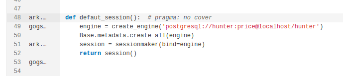
Javascript
Parece ser uma prática aceita no JavaScript marcar as executáveis das declarações de variáveis, então o faremos também. POR EXEMPLO
var a; // +1Adicionando páginas ao aplicativo da web
A interface do SonarQube é criada como um aplicativo de página única usando o React . Ele fornece a capacidade de adicionar novas páginas à interface do usuário usando JavaScript. Uma página (ou extensão de página) é um aplicativo JavaScript independente que é executado no ambiente SonarQube. Você pode encontrar o exemplo de extensões de página nos repositórios SonarQube ou sonar-custom-plugin-example no GitHub.
Antes de ler este guia, verifique como criar, implantar e depurar um plug-in .
Etapa 1. Crie uma classe Java implementando PageDefinition
Para cada página, você precisará
definir uma chave e um nome.
A chave da página deve ter o formato
plugin_key/page_id
(por exemplo
governance/project_dump
:).
O
plugin_key
é calculado a partir do
<artifactId>
no seu
pom.xml
, ou pode ser definido explicitamente
no pom usando o
<pluginKey>
parâmetro na
sonar-packaging-maven-plugin
configuração.
Todas as páginas devem ser declaradas
nesta classe.
Exemplo:
import org.sonar.api.web.page.Page; import org.sonar.api.web.page.PageDefinition; import org.sonar.api.web.page.Context; import static org.sonar.api.web.page.Page.Scope.COMPONENT; import static org.sonar.api.web.page.Page.Qualifier.VIEW; import static org.sonar.api.web.page.Page.Qualifier.SUB_VIEW; public class MyPluginPageDefinition implements PageDefinition { @Override public void define(Context context) { context .addPage(Page.builder("my_plugin/global_page") .setName("Global Page") .build()) .addPage(Page.builder("my_plugin/project_page") .setName("Project Page") .setScope(COMPONENT) .build()) .addPage(Page.builder("my_plugin/portfolio_page") .setName("Portfolio Page") .setScope(COMPONENT) .setComponentQualifiers(VIEW, SUB_VIEW) .build()) .addPage(Page.builder("my_plugin/admin_page") .setName("Admin Page") .setAdmin(true) .build()); } }Configurando cada página
Existem 3 configurações disponíveis
quando você define as extensões de página usando a
PageDefinition
classe:
setAdmin(boolean admin): sinalize esta página como restrita a usuários com permissão "administrar". O padrão éfalse.setScope(org.sonar.api.web.page.Page.Scope scope): defina o escopo desta página. Os escopos disponíveis sãoGLOBAL(padrão), que adicionam esta página ao menu principal eCOMPONENTque adicionam a página a um projeto, aplicativo ou menu de portfólio (aplicativos e portfólios se aplicam apenas ao Enterprise Edition e acima).setComponentQualifiers(org.sonar.api.web.page.Qualifier... qualifiers): ifsetScope()está definido comoCOMPONENT, define para que tipo de componente a página se aplica. Qualificadores disponíveis sãoPROJECT,APP,VIEW(carteira), eSUB_VIEW(APP,VIEWeSUB_VIEWsó se aplicam a Enterprise Edition e acima). Você pode passar vários qualificadores. Se nenhum qualificador estiver definido, ele será aplicado a todos os tipos.
Etapa 2. Crie um arquivo JavaScript por página
Ele
PageDefinition
registrará cada tecla como uma rota
disponível no SonarQube.
Sempre que essa rota for visitada, o
SonarQube buscará assincronamente um único arquivo JavaScript do
diretório do seu plug-in
/static/
e inicializará o aplicativo da sua
página.
Este arquivo deve ter o mesmo nome
que
page_id
você definiu na sua
PageDefinition
classe.
No exemplo da Etapa 1, você
precisaria de 4 arquivos JavaScript diferentes:
/static/global_page.js/static/project_page.js/static/portfolio_page.js/static/admin_page.js
Cada arquivo
deve
chamar a
window.registerExtension()
função
global
e passar sua
chave completa
como primeiro argumento (
plugin_key/page_id
por exemplo
governance/project_dump
:).
O segundo argumento é o
retorno de chamada
inicial
.
Essa função será chamada assim que
sua página for iniciada e receberá informações sobre a página atual como
argumento (veja abaixo).
O valor de retorno do retorno de
chamada inicial depende de como você deseja implementar sua página:
-
Se você deseja usar o React , você deve retornar um Componente do React:
// static/global_page.js import React from "react"; import App from "./components/App"; window.registerExtension('my_plugin/global_page', function (options) { return <App options={options} />}); -
Se você deseja usar qualquer outra estrutura, execute qualquer lógica de inicialização diretamente dentro do corpo da função de inicialização e retorne um retorno de chamada de desligamento :
// static/global_page.js const init = require("./my-app/init"); window.registerExtension('my_plugin/global_page', function (options) { // Start up my custom application, passing the DOM element which will serve as // the container. init.boot(options.el, options.currentUser, options.component); // Whenever the user leaves the page, cleanly shut everything down // (i.e., remove event listeners, stop running timers, etc). return function () { init.removeEventListeners(); init.clearState(); init.shutdown(); }; });
O
options
objeto conterá o seguinte:
options.el: um nó DOM que você deve usar para injetar seu conteúdo.options.currentUser: informações sobre o usuário atual.-
(opcional)
options.component: contém as informações do projeto, aplicativo ou portfólio atual. -
(opcional)
options.branchLike: contém as informações da solicitação de ramificação ou recebimento atual.
O SonarQube não garante nenhuma disponibilidade da biblioteca JavaScript em tempo de execução (exceto React). Se você precisar de uma biblioteca, inclua-a no arquivo final.
Exemplos
É altamente recomendável que você verifique o exemplo do sonar-custom-plugin-exemplo . Ele contém exemplos detalhados usando várias estruturas de front-end e seu código é completamente documentado. Ele também descreve como executar um servidor de desenvolvimento local para acelerar o desenvolvimento front-end, sem exigir uma reconstrução completa e reimplantação para testar suas alterações.
Suporte a provedores de SCM
O SonarQube Scanner usa informações do SCM do projeto, se disponível, para:
- Atribua um novo problema à pessoa que o apresentou. O último commit na linha de código relacionada é considerado o autor do problema.
- Estime a cobertura do novo código, incluindo o código adicionado e alterado, no novo período de código.
- Exiba o commit mais recente em cada linha do visualizador de código. 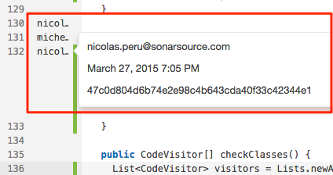
O único comando SCM necessário é "culpa", que obtém o último commit de cada linha para um determinado arquivo. Este comando é executado por um plug-in do SonarQube por meio do ponto de extensão org.sonar.api.batch.scm.ScmProvider. Veja os vários plugins existentes, por exemplo , Git , para mais detalhes.
Internacionalização
Esta página fornece diretrizes para o I18n para:
- Desenvolvedores de plug-ins que desejam aplicar o mecanismo i18n em seus próprios plug-ins, para que esses plug-ins possam estar disponíveis em vários idiomas.
- Pessoas que gostariam de ajudar a comunidade disponibilizando a plataforma em um novo idioma.
Princípios
Embora o básico do mecanismo i18n seja o mesmo para todas as partes do ecossistema, o pacote difere dependendo do que você está desenvolvendo:
-
Traduções para SonarQube: disponibilizar o SonarQube em um novo idioma exige que você desenvolva e publique um novo plug-in do Pacote de Idiomas.
- Por padrão, o SonarQube incorpora o pacote inglês.
- Todos os outros plug-ins do Pacote de Idiomas, como o plug-in French Pack, são mantidos pela comunidade e estão disponíveis no Marketplace (categoria "Localização").
- Traduções para os plug-ins da comunidade SonarQube: os plug-ins de código aberto da comunidade SonarQube devem incorporar apenas os pacotes configuráveis para a localidade padrão (en). As traduções serão feitas nos plugins do Pacote de Idiomas.
- Traduções para outros plug-ins: plug-ins de código fechado / comercial / independentes devem incorporar os pacotes para o código do idioma padrão e as traduções para todos os idiomas que eles desejam suportar.
Translation Bundles
As mensagens localizadas são armazenadas nos arquivos de propriedades:
- Esses são arquivos de propriedades regulares com pares de chave / valor nos quais você coloca a maioria das traduções
-
Esses arquivos devem ser
armazenados no pacote org.sonar.l10n (geralmente no
src/main/resources/org/sonar/l10ndiretório) -
Os nomes desses arquivos devem
seguir a convenção
<key of the plugin to translate>_<language>.properties, por exemplo,widgetlabs_fr.propertiesoucore_fr.propertiespara o pacote principal. Vejasonar-packaging-maven-pluginpara obter detalhes sobre derivação de chave do plugin. -
As mensagens podem aceitar argumentos. Essas entradas seriam parecidas com:
myplugin.foo=This is a message with 2 params: the first "{0}" and the second "{1}".
-
As mensagens podem aceitar pluralização. Essas entradas seriam parecidas com:
myplugin.foo={x, number} {x, plural, one {thing} other {things}}-
Nós o usamos, por
exemplo, com uma combinação de 2 rótulos:
component_navigation.last_analysis_had_warnings=Last analysis had {warnings}ecomponent_navigation.x_warnings={warningsCount, number} {warningsCount, plural, one {warning} other {warnings}}. Isso renderizaLast analysis had 1 warningse forwarningsCountigual a 1 eLast analysis had 2 warnings, caso contrário, neste caso 2. - Saiba mais sobre esta sintaxe aqui .
Codificação UTF-8
Na API Java, os arquivos de
propriedades devem ser codificados no conjunto de caracteres
ISO-8859.
Sem boas ferramentas, pode
ser bastante irritante escrever traduções para idiomas que não
se encaixam nesse conjunto de caracteres.
Por isso, decidimos codificar
os arquivos de propriedades em UTF-8 e permitir que o Maven os
transforme em ASCII no momento da construção, graças ao
native2ascii-maven-plugin (verifique o plugin francês pom.xml).
Isso facilita muito o
processo de escrever traduções com um editor padrão.
Como ler mensagens localizadas de uma extensão de plug-in?
O componente
org.sonar.api.i18n.I18n
está disponível para extensões de
servidor da web.
As extensões do scanner não podem
carregar pacotes configuráveis.
Escrevendo um pacote de idiomas
Um pacote de idiomas define pacotes configuráveis para o SonarQube e / ou plugins.
Criando um pacote de idiomas
A maneira mais fácil de criar um novo pacote é copiar o pacote chinês e adaptá-lo ao seu idioma.
Manutenção de um pacote de idiomas
No arquivo pom, defina as versões do SonarQube e dos plugins que você deseja traduzir. Na hora de atualizar seu pacote de idiomas para uma nova versão do SonarQube ou de um plug-in, a maneira mais fácil de ver quais chaves estão faltando é executar:
mvn test
Se a construção falhar, isso
significa que algumas chaves estão ausentes.
Vá para
target/l10n
verificar os relatórios para cada
pacote configurável.
As chaves ausentes estão listadas em
'As traduções ausentes são:'
Missing translations are: code_viewer.no_info_displayed_due_to_security=Due to security settings, no information can be displayed. comparison.version.latest=LATEST ...Cada vez que você adiciona um novo pacote ou atualiza um pacote existente, crie um ticket JIRA no componente L10n correspondente para acompanhar as alterações.
Localizando um Plugin
Esta seção se aplica se você estiver
desenvolvendo um plugin de código fechado.
Se o seu plug-in se enquadra nessa
categoria, ele deve incorporar seus próprios pacotes configuráveis.
O pacote deve ser definido em
src/main/resources/org/sonar/l10n/<plugin key>_<language>.properties
O pacote padrão é obrigatório e deve ser em inglês. Por exemplo, o plug-in com a chave "mysonarplugin" deve definir os seguintes arquivos para ativar a tradução em francês:
org/sonar/l10n/mysonarplugin.propertiesorg/sonar/l10n/mysonarplugin_fr.properties
Implantando no Marketplace
Se você desenvolveu um plug-in do SonarQube, e ele atende aos requisitos, podemos até adicioná-lo ao SonarQube Marketplace .
Exigências
Se o seu plug-in atender aos seguintes requisitos, você poderá solicitar ao SonarSource (através do Fórum da Comunidade ) que faça referência ao seu plug-in no SonarQube Marketplace :
-
Seu plugin é de código aberto
- A fonte é acessível gratuitamente
- A licença é conhecida como FLOSS (verifique a lista fornecida pela Open Source Initiative )
- Existe um sistema de rastreamento de problemas públicos
- A documentação está disponível online em inglês
- Os binários de cada versão estão acessíveis em algum lugar
-
Os lançamentos seguem convenções de código aberto. Para cada release, o seguinte deve estar disponível:
- notas de versão que refletem todas as mudanças significativas na versão
- jar plugin
-
A chave do seu plugin deve ser:
- curto e único
- minúsculas (sem camelcase)
- composto apenas por [a-z0-9]
- relacionado ao nome do seu plugin
-
não apenas o nome de uma
linguagem (por exemplo, não pode ser java, rust, js /
javascript, ...)
exemplos de boas chaves: motionchart, communityphp, scmactivity
- A descrição do seu plug-in não deve ser enganosa em termos de conteúdo (o código precisa fazer praticamente o que o nome e a descrição dizem).
- Na entrada inicial no Marketplace, a equipe do SonarSource testará o plugin para verificar a funcionalidade e qualidade razoáveis. A equipe do SonarSource deve receber os meios necessários para realizar esses testes sem a necessidade de assinar acordos ou preencher formulários. Idealmente, os meios para realizar esses testes serão disponibilizados à comunidade em geral, com a mesma falta de restrições.
- Seu plug-in não concorre com os produtos SonarSource existentes ou que serão lançados em breve (desculpe, mas precisamos pagar as contas de alguma forma).
- É analisado no SonarCloud e o portão de qualidade fica verde ao fazer uma liberação.
- É compatível com os requisitos da plataforma (por exemplo, é executado no JRE mínimo listado).
-
Se o seu plug-in adiciona a
análise de um idioma que não é analisado por nenhum analisador
SonarSource, você deve fornecer as
métricas
NCLOCe , que são necessárias para uma experiência consistente do usuário. Você pode ver como essas métricas são fornecidas para Java ( NCLOC , NCLOC_DATA ).NCLOC_DATA -
Por último, mas não menos
importante: seu plug-in deve estar alinhado com o objetivo da
plataforma SonarQube: gerenciamento da dívida técnica e a qualidade
do código.
Para ser mais preciso: todos os recursos do SonarQube estão vinculados ao código; portanto, se o seu plug-in fornece dados que não podem ser anexados a uma fonte ou a um arquivo de teste, há chances de que o seu plug-in não seja aceito no Marketplace
Se o seu plug-in atender a esses requisitos, sinta-se à vontade para iniciar um novo tópico no fórum da comunidade solicitando inclusão. Este tópico deve incluir:
- descrição do plugin
- URL da página inicial do plug-in
- página inicial do projeto de plugins no SonarCloud
- o link para um PR que adiciona um arquivo para seu plug-in ao repositório sonar-update-center-properties e os elementos de um e-mail de "nova versão" listado abaixo.
Reservamo-nos o direito de excluir dos plug-ins do Marketplace que achamos que seria um desserviço à comunidade.
Anunciando novos lançamentos
Quando você tiver um novo lançamento que deve ser publicado no Marketplace, por favor:
- crie um PR no repositório sonar-update-center-properties, atualizando o arquivo do seu plug-in com os dados da sua nova versão
-
inicie um novo tópico no fórum da comunidade com as seguintes informações:
- Assunto: [NEW RELEASE] Nome e versão do plug-in
-
O corpo contém:
- Breve descrição: algumas palavras sobre o que há de novo nesta versão.
- Compatibilidade com SonarQube: versões inalteradas ou específicas.
- Link para o painel do projeto SonarCloud para que possamos verificar o status do portão de qualidade
- Link para o seu PR
- Se for o primeiro lançamento do plug-in, mencione que o plug-in deve ser adicionado à página Biblioteca de plug-ins. (Caso contrário, é provável que esqueçamos!)
Depois que esse segmento é criado, alguém do SonarSource revisará seu PR e executará as etapas manuais para disponibilizar a versão no Marketplace.
Como preencher os
sonar-update-center-properties
arquivos
Criação inicial
Criar arquivo
Em https://github.com/SonarSource/sonar-update-center-properties
O nome do arquivo deve corresponder
ao plugin
pluginKey
e terminar com uma
.properties
extensão.
A chave do plug-in é definida no pom
do módulo de plug-in (não no pom de nível superior):
-
Explicitamente em uma
sonar.pluginKeypropriedade. Esta é a primeira escolha / preferida -
Implicitamente pelo artifactId:
sonar-{pluginKey}-plugin-
quando o
sonar-x-pluginpadrão não é usado para o artifactId, a chave do plug-in será o ID do artefato inteiro.
Preencher arquivo
Forneça os seguintes meta valores:
category- um de: Cobertura, Ferramentas para desenvolvedores, Analisadores externos, Governança, Integração, Idiomas, Localização, Visualização / RelatóriosdescriptionhomepageUrlarchivedVersions= [deixe em branco por enquanto]publicVersions= [versionId]defaults.mavenGroupId= [o MavengroupId]defaults.mavenArtifactId= [valor do nível superiorartifactId]
Para a versão listada inicialmente, crie o seguinte bloco:
[versionId].description= [texto livre. Espaços permitidos. Nenhuma citação necessária][versionId].sqVersions= [informações de compatibilidade. Consulte 'Preenchendo os intervalos de compatibilidade do sqVersions' abaixo][versionId].date= [data de lançamento com formato: AAAA-MM-DD][versionId].changelogUrl=[versionId].downloadUrl=
A lista completa de meta informações que podem ser fornecidas (potencialmente substituindo os valores dos arquivos pom) pode ser encontrada no GitHub .
Registrar arquivo
Inclua o nome do arquivo (sem
.properties
extensão) no
plugins
valor em
https://github.com/SonarSource/sonar-update-center-properties/blob/master/update-center-source.properties
Atualizando para novos lançamentos
Crie um novo bloco no arquivo com este formato:
[versionId].description= [texto livre. Espaços permitidos. Nenhuma citação necessária][versionId].sqVersions= [informações de compatibilidade. Consulte 'Preenchendo os intervalos de compatibilidade do sqVersions' abaixo][versionId].date= [data de lançamento com formato: AAAA-MM-DD][versionId].changelogUrl=[versionId].downloadUrl=
Adicione
[versionId]
à
publicVersions
lista.
Vá para
archivedVersions
qualquer versão com compatibilidade
idêntica.
Consulte também 'Preenchendo
sqVersions, publicVersions e archivedVersions' abaixo
Preenchendo
sqVersions
,
publicVersions
e
archivedVersions
O campo global
publicVersions
é uma lista delimitada por vírgula de
versões de plug-ins que devem ser oferecidas ao usuário no Marketplace e
listadas na Matriz de Versão do Plug-in.
- A compatibilidade de versões públicas não pode se sobrepor
- Várias versões podem estar em publicVersions se as versões do SonarQube com as quais eles são compatíveis não se sobrepuserem.
O campo global
archivedVersions
é uma lista delimitada por vírgula de
versões de plug-ins que não são mais preferenciais.
Se um usuário tiver uma versão
arquivada de um plug-in instalado, o Marketplace oferecerá uma
atualização para a versão pública relevante.
Não serão oferecidas atualizações
para versões de plugins que não são encontradas em
archivedVersions
.
- A compatibilidade das versões arquivadas pode se sobrepor
-
Se a nova versão e a versão
anterior forem compatíveis com as mesmas versões do SonarQube, mova
a versão anterior para
archivedVersions.
O
sqVersions
campo de um bloco de liberação
fornece as versões do SonarQube com as quais a versão do plugin é
compatível.
- A compatibilidade pode ser com um intervalo, com uma única versão ou com uma lista de versões / intervalos
- A compatibilidade geralmente é listada como um intervalo na forma de [início, fim]
- O valor de início deve ser o número da versão do SonarQube.
-
O valor usado para final pode ser
um número de versão ou uma sequência especial
LATEST. -
Somente uma versão de um plug-in
pode ser compatível
LATESTe deve ser a versão mais recente. - A compatibilidade de versões públicas não pode se sobrepor; portanto, se necessário, edite o final do intervalo para que a versão mais antiga pare imediatamente antes do início da compatibilidade da versão mais recente.
-
Você pode usar um curinga no final de um intervalo, mas não no início.
[6.7,6.7.*][6.7.*,LATEST]
-
Várias entradas em uma lista de
compatibilidade devem ser delimitadas por vírgulas, EG
5.5,[6.7,6.7.*],[7.3,LATEST]
Sugestões para gerenciar o desenvolvimento do seu plugin
Um projeto hospedado em um repositório GitHub pode facilmente atender aos requisitos:
- As fontes estão no Git - e você pode configurá-las facilmente para serem construídas pelo Travis CI
- Os problemas do GitHub podem ser usados como um sistema de rastreamento de bugs
-
Wiki do GitHub ou
README.mdpode ser usado para escrever a documentação - As versões GitHub podem ser usadas para publicar seus binários
Obviamente, você pode usar o Fórum da comunidade para solicitar feedback sobre seu plug-in. Você pode postar uma RFF (solicitação de feedback) antes de uma liberação, embora isso não seja necessário. Se o fizer, feche o tópico antes do lançamento final com um aviso de "período de feedback fechado".
Descontinuação do plug-in
Ocasionalmente, é necessário descontinuar um plug-in. Normalmente, por um ou mais dos seguintes motivos:
- a funcionalidade está obsoleta ou depende da funcionalidade da plataforma descontinuada.
- Não é mais mantida por seus autores e é de buggy.
- Não é mais compatível com as versões suportadas da plataforma SonarQube.
Nesse caso, o plug-in é removido do Marketplace.
Perguntas frequentes
P.
Como deve ser o anúncio do candidato
a lançamento?
Isso depende de você, mas,
idealmente, ele conterá:
- link para baixar o RC
- link para o log de alterações de versão
- prazo para feedback
Além disso, você provavelmente deve mencionar os contribuidores da versão se não a tratou sozinho.
Q.
Quanto tempo deve ser o período de
feedback?
Mais uma vez, isso é com você;
é o seu plugin.
Na SonarSource, quando lançamos um
Release Candidate (nem sempre é opcional para você também), usamos um
período de feedback mínimo de 72 horas (com variações de feriados, fins
de semana e feedback significativo).
P.
Quem pode dar feedback?
Qualquer um!
De fato, quanto mais feedback,
melhor.
É isso que torna o desenvolvimento em
uma comunidade tão maravilhoso.
Pedimos apenas que, quando você tiver
feedback, mantenha-o educado e respeitoso.
P.
E se eu não receber nenhum feedback
sobre meu candidato a lançamento?
Você tem duas opções: agite por mais
atenção ou considere nenhuma notícia como boa e prossiga com o seu
lançamento.
P.
E se eu receber comentários que
devem bloquear o lançamento?
O curso normal de ação aqui é abordar
o feedback e apresentar outro candidato a lançamento.
Normalmente, você prolongaria o
período de feedback para dar tempo às pessoas para testar a nova versão.
P.
O que acontece quando o período de
feedback termina?
Se você não recebeu nenhum feedback
que julga bloquear a liberação, envie uma notificação de "período
fechado" no mesmo encadeamento, execute o lançamento e, em um
encadeamento separado, solicite que a nova versão seja adicionada ao
Marketplace.
P.
A versão inicial de um plug-in deve
ser tratada de maneira diferente das versões subseqüentes?
Não necessariamente, embora seja
provavelmente mais crítico obter feedback sobre um lançamento inicial.
Portanto, se não houver resposta
dentro do período inicial de feedback, você provavelmente deve pedir
mais atenção, em vez de assumir que nenhuma notícia é boa.
Depende de você, no entanto.
Q.
Quem executa o processo de
lançamento?
Você faz.
P.
Onde os jarros devem ser postados
para download?
Você decide.
Se você estiver usando o GitHub para
hospedar seu código-fonte, a coisa mais fácil a fazer é criar uma versão
do projeto e postar downloads lá.
P.
Como devem ser as notas de
lançamento?
Na melhor das hipóteses, será uma
lista acessível publicamente de tickets de trabalho manipulados na
versão, semelhante ao que você pode obter dos problemas do Jira ou
GitHub.
No mínimo, será um esboço do trabalho
realizado.
Nos dois casos, deve refletir todas
as alterações significativas.
Contribuindo
Esteja ciente de que não estamos procurando ativamente contribuições de recursos para o próprio SonarQube, porque é extremamente difícil para alguém fora do SonarSource cumprir com o nosso roteiro e expectativas. Portanto, geralmente aceitamos apenas pequenas alterações cosméticas e correções de erros de digitação para o SonarQube, mas agradecemos com satisfação as contribuições para outros projetos de código aberto no âmbito do SonarSource.
Diretrizes gerais
- Escolha um ticket aberto no JIRA ou proponha sua alteração no Fórum da comunidade SonarQube - a discussão provavelmente resultará em um ticket aberto do JIRA. ;-)
- Use as convenções do SonarSource, que você encontrará em pacotes ordenados aqui: https://github.com/SonarSource/sonar-developer-toolset#the-almost-unbreakable-build
- Use solicitações pull para enviar seu trabalho
Novas implementações de regra nos plugins existentes
-
Comece com um RSpec (Especificação de regra) existente que lista seu idioma de interesse no campo "Idiomas direcionados".
- Se o RSpec no qual você está interessado não tiver como alvo o idioma em que deseja implementá-lo, levante a questão nos Fóruns da comunidade.
- Se não existir um RSpec para a regra que você deseja implementar, levante a questão no fórum da comunidade .
- Coloque sua classe de implementação de regra no módulo [language] -checks (por exemplo, java-checks, javascript-checks, etc.), no subpacote cheques
- A convenção de nomenclatura para classes de implementação é [AZ] [a-za-z] + Check.java. (Sim, coloque "Check" no nome também.) O nome da classe deve ser descritivo e não refletir a chave da regra. EG FindBadCodeCheck.java, não S007.java.
- Uma boa maneira de começar uma implementação de regra é examinar as implementações de regras que fazem coisas semelhantes.
- Durante o desenvolvimento, não há necessidade de carregar o plug-in em um servidor para testar sua implementação, use o teste de unidade da regra para isso.
-
Para uma implementação completa, verifique se o seguinte foi feito:
- criar arquivo de descrição HTML e arquivo de metadados
- escrever classe de teste
- registre a regra em CheckList.java
-
adicione a regra ao
perfil usado para o teste de integração em
profile.xml - execute o teste de integração e inclua novos problemas no conjunto de problemas esperados
perguntas frequentes
Como me livrar de problemas que são falsos positivos?
Positivo falso e não será
corrigido
Você pode marcar problemas
individuais como Positivo falso ou não será corrigido na interface de
problemas.
Se você estiver usando a análise de
relações públicas fornecida pela Developer Edition, os problemas
marcados como falso positivo ou não corrigem manterão esse status após a
mesclagem.
Essa é a abordagem preferida.
// NOSONAR
A maioria dos analisadores de
idiomas suporta o uso do mecanismo genérico:
//NOSONAR
no final da linha do problema.
Isso suprimirá todos os problemas -
agora e no futuro - que podem surgir na linha.
Como localizo e removo projetos que não foram analisados há algum tempo?
Em Administração> Projetos> Gerenciamento, você pode procurar Última análise antes para filtrar projetos não analisados desde uma data específica e, em seguida, usar Excluir em massa para remover os projetos que correspondem ao seu filtro.
Isso pode ser automatizado usando a
correspondente API Web:
api/projects/bulk_delete?analyzedBefore=YYYY-MM-DD
.
Como acionar uma reindexação completa do ElasticSearch?
Atualmente, a única maneira de forçar uma reindexação é:
- Pare seu servidor
- Remova o conteúdo do diretório $ SQ_HOME / data / es6
- Inicie seu servidor
Antes de fazer isso, primeiro lembre-se de que existem processos no lado do SonarQube que os índices fora de sincronia são detectados e corrigidos e, segundo, que um re-índice completo pode ser bastante demorado, dependendo do tamanho da sua instância.
Por que não consigo usar meu proxy HTTP desde que atualizei para o Java8u111?
Se você estiver recebendo esse erro nos logs ao tentar usar o Marketplace:
java.io.IOException: Unable to tunnel through proxy. Proxy returns "HTTP/1.1 407 Proxy Authentication Required... você provavelmente atualizou sua instalação Java8 com uma atualização maior que 111. Para corrigir isso, atualize $ SONARQUBE HOME / conf / sonar.properties` desta maneira:
sonar.web.javaOpts=-Xmx512m -Xms128m -XX:+HeapDumpOnOutOfMemoryError -Djdk.http.auth.tunneling.disabledSchemes=""Referência: http://www.oracle.com/technetwork/java/javase/8u111-relnotes-3124969.html